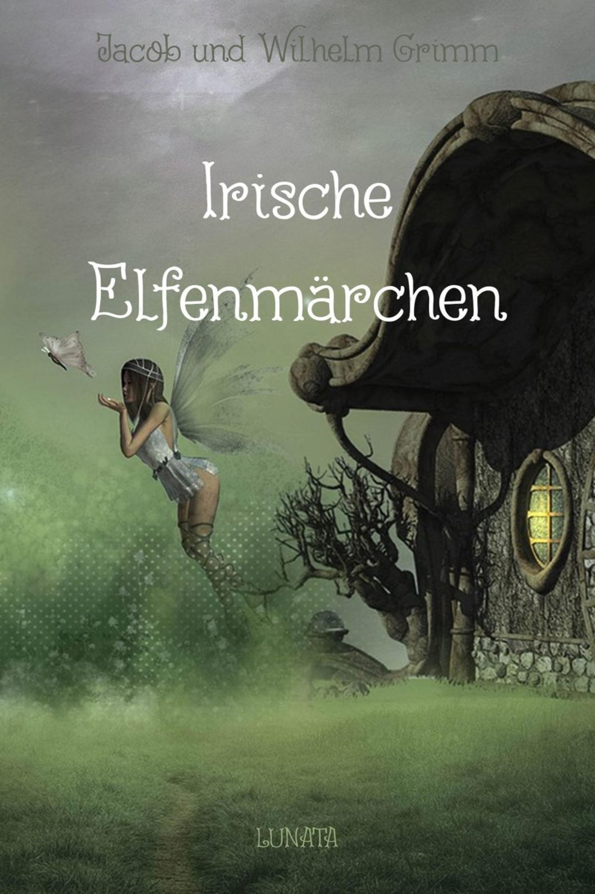

0
стр. з
0
сторінок

завантаження...

Якоб и Вильгельм Гримм
Ирландские сказки про эльфов
Перевод Екатерины Сакоян
Метод чтения Ильи Франка
Inhalt
Das stille Volk
Тихий народ
Die Elfen, die in ihrer wahren Gestalt kaum einige Zoll hoch sind (у эльфов, которые в своем настоящем облике высотой едва несколько дюймов; wahr — истинный, настоящий; die Gestalt — фигура, телосложение, рост, внешность; der Zoll — пядь /2-3 см/, дюйм), haben einen luftigen, fast durchsichtigen Körper (воздушное, почти прозрачное тело; die Luft — воздух; der Körper), der so zart ist (такое нежное: «которое так нежно»), dass ein Tautropfen, wenn sie darauf springen (что капля росы, если они прыгают на нее; der Tau — роса; der Tropfen — капля; tropfen — капать), zwar zittert, aber nicht auseinanderrinnt (хотя /и/ дрожит, но не растекается; zwar — хотя, правда; auseinander — врозь, друг от друга; rinnen — течь, вытекать, струиться). Dabei sind sie von wunderbarer Schönheit, Elfen sowohl als Elfinnen (к тому же они /бывают/ чудесной красоты, /как/ эльфы, так и эльфийки; das Wunder — чудо), und sterbliche Menschen können mit ihnen keinen Vergleich aushalten (и смертные люди не могут выдержать с ними никакого сравнения; sterben — умирать; der Mensch pl. die Menschen; der Vergleich; vergleichen — сравнивать; aushalten — выдерживать, переносить).
Die Elfen, die in ihrer wahren Gestalt kaum einige Zoll hoch sind, haben einen luftigen, fast durchsichtigen Körper, der so zart ist, dass ein Tautropfen, wenn sie darauf springen, zwar zittert, aber nicht auseinanderrinnt. Dabei sind sie von wunderbarer Schönheit, Elfen sowohl als Elfinnen, und sterbliche Menschen können mit ihnen keinen Vergleich aushalten.
Sie leben nicht einsam oder paarweise (они живут не в одиночку или парами; einsam — одинокий; das Paar — пара, чета; die Weise — способ, манера), sondern allzeit in großen Gesellschaften (но всегда в больших /со/обществах; die Gesellschaft — общество, объединение, компания). Den Menschen sind sie unsichtbar, zumal am Tage (людям они не видны = для людей они невидимы, особенно днем; unsichtbar — невидимый; die Sicht — вид, видимость; zumal — особенно, главным образом), und da sie zugegen sein und mit anhören könnten, was man spricht (а так как они могут присутствовать и подслушивать: «вместе слышать», что говорят; zugegen sein — присутствовать; anhören — слушать; случайно услышать), so drückt man sich nur vorsichtig und mit Ehrerbietung über sie aus (то о них высказываются лишь осторожно и с почтением; sich ausdrücken über jemanden, etwas /Akk./— выражаться, высказываться о ком-либо, чем-либо; die Vorsicht — осторожность; die Ehrerbietung — почтительность; ehrerbietig — почтительный; die Ehre — честь; почет, почесть; erbieten — предлагать свои услуги), und nennt sie nicht anders, als das gute Volk, die Freunde (и называют их не иначе, как добрый/хороший народ, друзья); ein anderer Name würde sie beleidigen (другое имя = название их бы обидело; beleidigen — оскорблять, обижать).
Sie leben nicht einsam oder paarweise, sondern allzeit in großen Gesellschaften. Den Menschen sind sie unsichtbar, zumal am Tage, und da sie zugegen sein und mit anhören könnten, was man spricht, so drückt man sich nur vorsichtig und mit Ehrerbietung über sie aus, und nennt sie nicht anders, als das gute Volk, die Freunde; ein anderer Name würde sie beleidigen.
Sieht man auf der Landstraße große Wirbel von Staub aufsteigen (/если/ видят, /как/ на проселочной дороге поднимаются большие клубы пыли; der Wirbel pl. die Wirbel — вихрь; клубы /дыма, пыли/; wirbeln — вихриться; кружиться; клубиться; der Staub), so weiß man, dass sie im Begriffe sind, ihre Wohnsitze zu verändern (то знают, что они собираются поменять свои места = свое место жительства; wissen; der Begriff — понятие; im Begriffe sein etwas zu tun — намереваться, собираться делать что-либо; der Wohnsitz) und nach einem andern Ort zu ziehen (и переехать на другое место; der Ort; ziehen — тянуть, тащить; переезжать) und man unterlässt nicht, die unsichtbaren Reisenden durch ehrfurchtsvolles Neigen zu grüßen (и не преминут поприветствовать невидимых путешественников почтительным поклоном; unterlássen — не делать, не выполнять, воздерживаться от совершения чего-либо; nicht unterlassen etwas zu tun — не преми́нуть что-либо сделать; reisen — путешествовать; die Reise — путешествие; der/die Reisende — путешественник/ца; пассажир/ка; die Ehrfurcht — благоговение, глубокое уважение, почтение; die Furcht — страх; neigen — нагибать, наклонять). Ihre Häuser aber haben sie in Steinklüften, Felsenhöhlen und alten Riesenhügeln Riesenhügeln (дома же у них: «но дома они имеют» /расположены/ в каменных расселинах, скальных пещерах и старых огромных холмах; der Stein — камень; die Kluft pl. die Klüfte — расселина, трещина, ущелье; der Fels/en/ — скала, утес; die Höhle — пещера; der Riese — гигант, великан; der Hügel — холм, пригорок). Innen ist alles aufs glänzendste und prächtigste eingerichtet (внутри все устроено самым блестящим и великолепным /образом/; glänzend — блестящий, потрясающий; glänzen — блестеть, сиять; prächtig — великолепный, роскошный; die Pracht — роскошь, блеск, пышность; einrichten — оборудовать, обставлять /квартиру/; устраивать, налаживать) und die liebliche Musik, die zuweilen nächtlich daraus hervordringt (и прелестная музыка, которая время от времени по ночам раздается: «выбивается наружу» оттуда; nächtlich — ночной; hervordringen — проявляться, пробиваться /сквозь что-либо/), hat noch jeden entzückt, der so glücklich gewesen ist, sie zu hören (еще приводила в восторг каждого, кто имел счастье: «кто был столь счастлив» слышать ее; entzücken — восхищать, приводить в восторг).
Sieht man auf der Landstraße große Wirbel von Staub aufsteigen, so weiß man, dass sie im Begriffe sind, ihre Wohnsitze zu verändern und nach einem andern Ort zu ziehen und man unterlässt nicht, die unsichtbaren Reisenden durch ehrfurchtsvolles Neigen zu grüßen. Ihre Häuser aber haben sie in Steinklüften, Felsenhöhlen und alten Riesenhügeln. Innen ist alles aufs glänzendste und prächtigste eingerichtet und die liebliche Musik, die zuweilen nächtlich daraus hervordringt, hat noch jeden entzückt, der so glücklich gewesen ist, sie zu hören.
In den Sommernächten, wenn der Mond scheint, am liebsten in der Erntezeit (летними ночами, когда светит луна, лучше всего во время сбора урожая; der Sommer, die Nacht pl. die Nächte — ночь; die Ernte — урожай; уборка урожая), kommen die Elfen aus ihren geheimen Wohnungen hervor (эльфы выходят из своих тайных жилищ; geheim — тайный, потайной, секретный; das Geheimnis — тайна; hervorkommen — появляться, выходить наружу) und versammeln sich zum Tanz auf gewissen Lieblingsplätzen (и собираются танцевать: «к танцу» на определенных излюбленных площадках; sammeln — собирать; der Tanz pl. die Tänze; gewiss — некоторый, определенный; Lieblings- — любимый; der Platz pl. die Plätze — место; площадь), gleichfalls heimliche und verborgene Orte (/которые являются/ также потаенными и удаленными местами; heimlich — тайный, скрытый; verborgen — скрытый, удаленный, невидимый; verbergen — скрывать, укрывать, прятать; der Ort — место, пункт), wie Bergtäler, Wiesengründe bei Bächen und Flüssen, Kirchhöfe (как горные долины, луговые долины у ручьев и рек, церковные кладбища; der Berg — гора; das Tal pl. die Täler — долина; der Wiesengrund pl. die Wiesengründe — долина, покрытая лугами; die Wiese — луг; der Bach pl. die Bäche; der Fluss pl. die Flüsse; der Kirchhof — кладбище при церкви; die Kirche — церковь; der Hof pl. die Höfe — двор), wohin selten Menschen kommen (куда редко приходят люди). Oft feiern sie ihre Feste unter geräumigen Pilzen oder ruhen unter ihrem Schirmdach (часто они справляют свои праздники под просторными грибами или отдыхают под их навесами = шляпками; feiern — праздновать, справлять, отмечать; das Fest — праздник, торжество; geräumig — вместительный, просторный; der Raum — пространство; помещение; der Pilz; das Schirmdach — навес; der Schirm — зонт, зонтик; das Dach — крыша).
In den Sommernächten, wenn der Mond scheint, am liebsten in der Erntezeit, kommen die Elfen aus ihren geheimen Wohnungen hervor und versammeln sich zum Tanz auf gewissen Lieblingsplätzen, gleichfalls heimliche und verborgene Orte, wie Bergtäler, Wiesengründe bei Bächen und Flüssen, Kirchhöfe, wohin selten Menschen kommen. Oft feiern sie ihre Feste unter geräumigen Pilzen oder ruhen unter ihrem Schirmdach.
Bei dem ersten Strahl der Morgensonne verschwinden sie wieder (с первым лучом утреннего солнца они снова исчезают; der Strahl) und es ist, als rausche ein Schwarm Bienen oder Mücken dahin (и это /выглядит так/, словно рой пчел или комаров с шелестом летит куда-то: «шелестит в том направлении»; der Schwarm — рой, стая, косяк /рыб/, толпа; die Biene; die Mücke; rauschen — шуметь, шуршать, шелестеть; dahin — туда, в том направлении).
Ihre Kleidung ist schneeweiß, manchmal silberglänzend (их одежда белая, как снег: «снежно-белая», иногда с серебристым блеском: «серебряно-блестящая»; der Schnee — снег; das Silber — серебро), notwendig gehört dazu ein Hut oder ein Käppchen (к ней непременно относится шляпа или колпачок; notwendig — необходимый, нужный; обязательно; die Not — нужда; gehören zu etwas /Dat./ — принадлежать к чему-либо, входить в состав чего-либо; der Hut; die Kappe — шапка, колпак), wozu sie meist die roten Blütenglocken des Fingerhuts wählen (для чего они чаще всего выбирают красные цветы-колокольчики наперстянки; die Blüte — цветок, цветение; blühen — цвести; die Glocke — колокол, колокольчик; der Fingerhut — наперсток; наперстянка) und wodurch sich Parteien auszeichnen (и этим: «через что» отличаются их команды; die Partei — партия; сторона; команда; sich auszeichnen durch etwas /Akk./ — отличаться, выделяться чем-либо; das Zeichen — знак).
Bei dem ersten Strahl der Morgensonne verschwinden sie wieder und es ist, als rausche ein Schwarm Bienen oder Mücken dahin.
Ihre Kleidung ist schneeweiß, manchmal silberglänzend, notwendig gehört dazu ein Hut oder ein Käppchen, wozu sie meist die roten Blütenglocken des Fingerhuts wählen und wodurch sich Parteien auszeichnen.
Die geheimen Kräfte der Elfen, ihre Zaubermacht, ist so groß (тайные силы эльфов, их волшебная власть столь велика; die Kraft pl. die Kräfte — сила; die Macht — сила, власть, влияние), dass sie kaum Grenzen kennt (что едва ли знает = имеет границы; die Grenze). Nicht bloss die menschliche, jede andere Gestalt, selbst die abschreckendste, können sie augenblicklich annehmen (не только лишь человеческий, /но/ любой другой образ, даже самый устрашающий, они могут принять мгновенно; bloss — только лишь, всего лишь; abschrecken — отпугивать; der Augenblick — миг, мгновенье) und es ist ihnen ein leichtes, in einer Sekunde über eine Entfernung von fünf Stunden hinwegzuspringen (и им ничего не стоит за одну секунду перескочить через расстояние в пять часов /ходу/; dies/es ist jemandem ein leichtes — это кому-либо ничего не стоит; die Sekúnde; entfernen — удалять, устранять; fern — далекий, дальний, удалённый; die Stunde; hinwegspringen über jemanden, etwas /Akk./ — перескочить, перепрыгнуть через кого-либо, что-либо; springen — прыгать; hinweg — прочь). Vor ihrem Anhauch schwindet jede menschliche Kraft (от их дыхания: «перед их дыханием» иссякает всякая человеческая сила; der Anhauch — /поэт./ дыхание, дуновение; schwinden — убывать, уменьшаться, иссякать).
Die geheimen Kräfte der Elfen, ihre Zaubermacht, ist so groß, dass sie kaum Grenzen kennt. Nicht bloss die menschliche, jede andere Gestalt, selbst die abschreckendste, können sie augenblicklich annehmen und es ist ihnen ein leichtes, in einer Sekunde über eine Entfernung von fünf Stunden hinwegzuspringen. Vor ihrem Anhauch schwindet jede menschliche Kraft.
Manchmal teilen sie den Menschen etwas von der Wissenschaft übernatürlicher Dinge mit (иногда они сообщают людям кое-что из науки о сверхъестественных вещах; mitteilen — сообщать; die Wissenschaft — наука; natürlich — естественный, природный; die Natur — природа; das Ding — вещь, предмет) und erblickt man einen, der wie in halbem Wahnsinn mit Bewegung der Lippen einsam auf und abgeht (и если увидишь кого-то: «одного», кто в полубезумном состоянии: «в полу-безумии», шевеля губами: «с движением губ», одиноко ходит взад и вперед; erblicken — увидеть; halb — половинный, пол/у/-; der Wahnsinn — безумие, помешательство; bewegen — двигать, шевелить; die Lippe; auf und ab — туда и сюда, вверх и вниз, взад и вперёд), so ist ein Elfe unsichtbar bei ihm und belehrt ihn (то /значит/ эльф невидимо с ним и наставляет его; belehren — поучать, учить; наставлять).
Die Elfen lieben über alles die Musik (эльфы больше всего любят музыку). Wer sie angehört hat, kann nicht beschreiben (кто случайно услышал ее, не может описать), mit welcher Gewalt sie die Seele erfülle und entzücke (с какой силой она наполняет душу и приводит в восторг; die Gewalt — власть, сила; entzücken — восхищать, приводить в восторг): gleich einem Strom dringe sie mächtig entgegen (подобно потоку, она мощно устремляется /вам/ навстречу; der Strom; dringen — проникать, вторгаться; entgegen — вопреки; навстречу); und doch scheinen die Laute einfach, selbst eintönig und überhaupt Naturlauten ähnlich zu sein (и, однако, звуки кажутся простыми, даже монотонными, и вообще похожими на звуки природы; scheinen — казаться; der Laut; die Natúr — природа; ähnlich — похожий, сходный).
Manchmal teilen sie den Menschen etwas von der Wissenschaft übernatürlicher Dinge mit und erblickt man einen, der wie in halbem Wahnsinn mit Bewegung der Lippen einsam auf und abgeht, so ist ein Elfe unsichtbar bei ihm und belehrt ihn.
Die Elfen lieben über alles die Musik. Wer sie angehört hat, kann nicht beschreiben, mit welcher Gewalt sie die Seele erfülle und entzücke: gleich einem Strom dringe sie mächtig entgegen; und doch scheinen die Laute einfach, selbst eintönig und überhaupt Naturlauten ähnlich zu sein.
Zu ihren Belustigungen gehört das Ballspiel (к их развлечениям относится игра в мяч; belustigen — веселить, смешить; lustig — радостный, веселый; der Ball), das sie mit großem Eifer treiben (которой они занимаются с большим рвением; der Eifer — рвение, усердие, пыл; treiben — гнать; заниматься чем-либо: Sport treiben) und worüber sie oft bis zum Streit uneins werden können (и из-за которой они часто могут расходиться во мнениях до ссоры; uneins sein — расходиться во мнениях; ссориться, быть не в ладу /друг с другом/; uneins — несогласный, не единодушный; der Streit — спор, ссора; streiten — спорить, ссориться).
Im kunstreichen Tanz übertreffen sie weit alles (в искусном танце они далеко превосходят все; die Kunst — искусство; мастерство; reich — богатый; der Tanz), was Menschen leisten können (чего могут достичь люди; leisten — делать, совершать, исполнять), und ihre Lust daran ist unermüdlich (и их удовольствие от этого не знает усталости; die Lust — радость, удовольствие; желание, стремление; /seine/ Lust an etwas /Dat./ haben/finden — радоваться чему-либо; unermüdlich — неутомимый, не знающий усталости, неустанный; ermüden — утомлять; уставать; müde — усталый).
Sie tanzen ununterbrochen, bis der Sonnenstrahl an den Bergen sich zeigt (они танцуют непрерывно, пока солнечный луч не покажется на горах; unterbréchen — прерывать, приостанавливать; der Berg pl. die Berge), und machen die kühnsten Sprünge ohne die mindeste Anstrengung (и делают самые смелые прыжки без малейшего напряжения; kühn — смелый, отважный; der Sprung pl. die Sprünge; anstrengen — напрягать; sich anstrengen — напрягаться, прилагать усилия).
Zu ihren Belustigungen gehört das Ballspiel, das sie mit großem Eifer treiben und worüber sie oft bis zum Streit uneins werden können.
Im kunstreichen Tanz übertreffen sie weit alles, was Menschen leisten können, und ihre Lust daran ist unermüdlich.
Sie tanzen ununterbrochen, bis der Sonnenstrahl an den Bergen sich zeigt, und machen die kühnsten Sprünge ohne die mindeste Anstrengung.
Nahrung scheinen sie nicht zu bedürfen (похоже, они не нуждаются в пище: «в пище они, кажется, не нуждаются; die Nahrung — питание, пища; nähren — питать, кормить). Sie laben sich an Tautropfen, die sie von den Blättern sammeln (они подкрепляются каплями росы, которые собирают с листьев; sich laben an /Dat./ — подкрепляться, освежаться; наслаждаться; das Blatt pl. die Blätter).
Menschen, die vorwitzig sich nähern oder gar sie necken (людей, которые приближаются к ним с излишнем любопытством: «слишком любопытно» или уж тем более дразнят их; vorwitzig — излишне любопытный, дерзкий; der Witz — остроумие, живость ума; necken — дразнить), bestrafen sie hart (они строго наказывают; hart — твердый, жесткий; строгий, суровый; die Strafe — наказание, кара), sonst pflegen sie gegen Wohlgesinnte, die ihnen vertrauen, freundlich und hilfreich zu sein (обычно же по отношению благонамеренным /людям/, которые доверяют им, они бывают: «имеют обыкновение быть» дружелюбными и готовыми помочь; sonst — иначе; кроме того; обычно; в противном случае; wohlgesinnt — благонамеренный; pflegen + zu + inf. — иметь обыкновение, иметь привычку делать что-либо; jemandem vertrauen — доверять, верить кому-либо). Sie nehmen einen Höcker von der Schulter (они забирают горб с плеча; der Höcker; die Schulter — плечо), schenken neue Kleidungsstücke (дарят новую одежду: «предметы одежды»; das Stück — кусок; штука), versprechen einen Wunsch zu erfüllen (обещают выполнить желание; der Wunsch pl. die Wünsche; wünschen — желать, хотеть), obgleich auch hier gute Laune von ihrer Seite nötig zu sein scheint (хотя и здесь, кажется, нужно хорошее расположение духа с их стороны; die Laune — расположение духа, настроение; nötig — нужный, необходимый; die Not — нужда).
Nahrung scheinen sie nicht zu bedürfen. Sie laben sich an Tautropfen, die sie von den Blättern sammeln.
Menschen, die vorwitzig sich nähern oder gar sie necken, bestrafen sie hart, sonst pflegen sie gegen Wohlgesinnte, die ihnen vertrauen, freundlich und hilfreich zu sein. Sie nehmen einen Höcker von der Schulter, schenken neue Kleidungsstücke, versprechen einen Wunsch zu erfüllen, obgleich auch hier gute Laune von ihrer Seite nötig zu sein scheint.
Sie lassen sich auch wohl in menschlicher Gestalt sehen (они также вполне позволяют увидеть себя в человеческом облике; lassen — пускать, допускать; побуждать; заставлять; велеть; wohl — хорошо; пожалуй, вполне), oder jemand, der Nachts zufällig unter sie geraten ist, Teil an ihren Tänzen nehmen (или кому-либо, кто ночью случайно оказался среди них, принять участие в их танцах; der Zufall — случай, случайность; geraten — попасть, очутиться; Teil nehmen = teilnehmen an etwas /Dat./ — участвовать в чем-либо; der Teil — часть); aber etwas Gefährliches liegt allzeit in dieser Berührung (но что-то опасное кроется: «лежит» всегда в этом соприкосновении; gefährlich; die Gefahr — опасность; berühren — трогать, касаться): der Mensch erkrankt darnach und fällt von der unnatürlichen Anstrengung (человек заболевает после этого и впадáет от неестественного напряжения; erkranken an etwas /Dat./ заболевать чем-либо; krank — больной; erkranken; anstrengen — напрягать, утомлять; fallen — падать; впадать /в какое-либо состояние/), da sie ihm etwas von ihren Kräften zu verleihen scheinen (поскольку, похоже, они немного передают ему от своих сил; verleihen — давать напрокат; придавать что-либо /силу, блеск и т.п./), in ein heftiges Fieber (в сильную лихорадку; heftig — сильный, интенсивный; das Fieber — жар, высокая температура, лихорадка). Vergisst er sich und küsst der Sitte gemäß seine Tänzerin (если он забывается и целует по обычаю свою партнершу по танцу: «танцовщицу»; sich vergessen — забываться; терять самообладание; die Sitte — обычай; поведение, нравы; gemäß /Dat./ — согласно чему-либо; соответственно, сообразно), so schwindet in dem Augenblick, wo seine Lippen sie berühren, die ganze Erscheinung (то в то же мгновенье, как его губы коснутся ее, все видение исчезает; erscheinen — появляться, возникать, являться).
Sie lassen sich auch wohl in menschlicher Gestalt sehen, oder jemand, der Nachts zufällig unter sie geraten ist, Teil an ihren Tänzen nehmen; aber etwas Gefährliches liegt allzeit in dieser Berührung: der Mensch erkrankt darnach und fällt von der unnatürlichen Anstrengung, da sie ihm etwas von ihren Kräften zu verleihen scheinen, in ein heftiges Fieber. Vergisst er sich und küsst der Sitte gemäß seine Tänzerin, so schwindet in dem Augenblick, wo seine Lippen sie berühren, die ganze Erscheinung.
Die Elfen stehen aber noch in einer besonderen und näheren Beziehung zu den Menschen (эльфы, однако, находятся: «стоят» еще в особой и более близкой связи с людьми: «к людям»; nah/e/ — близкий; die Beziehung — отношение, связь; sich beziehen jemanden, etwas /Akk./ — относиться к кому-либо, чему-либо, касаться кого-либо, чего-либо). Es ist, als teilten sie sich in die Seelen der Menschen (это происходит так, словно они распределяются по душам людей; sich teilen — делиться, разделяться; die Seele — душа) und betrachteten sie nun als ihre Angehörigen (и рассматривают их тогда как членов своей семьи; betrachten jemanden als jemanden — рассматривать кого-либо в качестве кого-либо; der/ die Angehörige — родственник/ца, член семьи; angehören /+ Dat./ принадлежать /группе и т. п./, быть членом). Daher haben gewisse Familien ihre eigenen Elfen (оттого некоторые семьи имеют своих собственных эльфов), denen sie ergeben sind (которым они преданы; ergeben — преданный, верный; покорный; ergeben — выявлять, показывать), wofür sie aber von diesen Hilfe und Beistand in bedenklichen Augenblicken, oft Genesung von tödlicher Krankheit, erhalten (но за это они получают от них помощь и содействие в опасные моменты /жизни/, зачастую выздоровление от смертельной болезни; der Beistand — помощь, поддержка, содействие; beistehen — помогать содействовать; bedenklich — сомнительный; рискованный, вызывающий опасения; genesen — выздоравливать; tödlich; der Tod — смерть; erhalten — получать). Weil sie aber ihren Elfen nach dem Tode zufallen (но так как они после смерти достаются своим эльфам; jemandem zufallen — доставаться кому-либо), so ist der Tod des Menschen für jene ein Fest (то смерть человека для них: «тех» праздник; das Fest), wo einer der Ihrigen in ihre Gesellschaft eintritt (когда один из их /подопечных/ вступает в их сообщество; eintreten — заходить, входить; вступать).
Die Elfen stehen aber noch in einer besonderen und näheren Beziehung zu den Menschen. Es ist, als teilten sie sich in die Seelen der Menschen und betrachteten sie nun als ihre Angehörigen. Daher haben gewisse Familien ihre eigenen Elfen, denen sie ergeben sind, wofür sie aber von diesen Hilfe und Beistand in bedenklichen Augenblicken, oft Genesung von tödlicher Krankheit, erhalten. Weil sie aber ihren Elfen nach dem Tode zufallen, so ist der Tod des Menschen für jene ein Fest, wo einer der Ihrigen in ihre Gesellschaft eintritt.
Daher verlangen sie von den Menschen (потому они требуют от людей), dass sie bei Leichenzügen sich einfinden und sie ehren (чтобы те появлялись на похоронных процессиях и выражали им уважение; der Leichenzug pl die Leichenzüge; die Leiche — труп, мертвец; der Zug — шествие, процессия; sich einfinden — /по/явиться, объявиться; ehren — уважать, почитать; чествовать); sie selbst feiern die Bestattung des Toten wie ein Hochzeitsfest (сами они празднуют похороны мертвого, как свадебное торжество; bestatten — хоронить; die Hochzeit — свадьба; das Fest — праздник, торжество), tanzen über seinem Grabe und ebendeshalb wählen sie auch Kirchhöfe zu ihren Lieblingsplätzen (танцуют над его могилой, и именно поэтому они выбирают также церковные кладбища своими любимыми местами; das Grab — могила). Oft entspinnt sich heftiger Streit, wem ein Kind zugehöre (часто завязывается ожесточенный спор, кому принадлежит ребенок; sich entspinnen — начинаться, завязываться, возникать /о разговоре/; spinnen — прясть; jemandem, etwas /Dat./ zugehören — принадлежать кому-либо, чему-либо), den Elfen des Vaters oder der Mutter (эльфам отца или матери), und auf welchem Kirchhof es solle begraben werden (и на каком кладбище он должен быть погребен).
Daher verlangen sie von den Menschen, dass sie bei Leichenzügen sich einfinden und sie ehren; sie selbst feiern die Bestattung des Toten wie ein Hochzeitsfest, tanzen über seinem Grabe und ebendeshalb wählen sie auch Kirchhöfe zu ihren Lieblingsplätzen. Oft entspinnt sich heftiger Streit, wem ein Kind zugehöre, den Elfen des Vaters oder der Mutter, und auf welchem Kirchhof es solle begraben werden.
Die verschiedenen Parteien der Unterirdischen hassen und bekriegen sich dann ebenso feindselig wie Stämme der Menschen (различные партии подземных /жителей/ ненавидят /друг друга/ и воюют между собой тогда также враждебно, как племена людей; unterirdisch — подземный; die Erde — земля; /sich/ bekriegen — воевать /между собой/; der Krieg — война; der Stamm pl. die Stämme — ствол дерева; племя, род), ihre Kämpfe finden in der Nacht, an Kreuzwegen statt (их битвы происходят: «состоятся» ночью, на перекрёстках; der Kampf pl. die Kämpfe; stattfinden — состояться, иметь место; der Kreuzweg; das Kreuz — крест; der Weg — путь, дорога), und oft trennt sie nur einbrechende Tag (и часто из разделяет только наступивший день; trennen — разделять, отделять; разлучать; einbrechen — взламывать; /внезапно/ наступать /о ночи, зиме и т. п./). Diese Verbindung der Menschen mit einem stillen, aber guten Geistervolk würde an sich nichts Abschreckendes, eher etwas Beglückendes haben (эта связь людей с тихим, но добрым народом духов не имела бы сама по себе ничего пугающего, скорее что-то приносящее удачу; verbinden — связывать, соединять; der Geist pl. die Geister — дух, душа; привидение; beglücken — осчастливить; das Glück — счастье, удача, благополучие), aber die Elfen erscheinen in einem gewissen Zwielicht (но эльфы представляются в некоторой двойственности: «в полусвете»; erscheinen — являться, возникать; казаться, представляться; das Zwielicht — двойной свет; сумерки; полусвет, полумрак); beides das Böse wie Gute hat zugleich Teil an ihnen (и то и другое: «оба», зло, как и добро, одновременно присутствует в них: «имеет в них часть») und sie zeigen ebenso wohl eine schwarze als eine weiße Seite (и они одинаково хорошо показывают = проявляют /как/ черную = темную, так и белую = светлую сторону).
Die verschiedenen Parteien der Unterirdischen hassen und bekriegen sich dann ebenso feindselig wie Stämme der Menschen, ihre Kämpfe finden in der Nacht, an Kreuzwegen statt, und oft trennt sie nur der einbrechende Tag. Diese Verbindung der Menschen mit einem stillen, aber guten Geistervolk würde an sich nichts Abschreckendes, eher etwas Beglückendes haben, aber die Elfen erscheinen in einem gewissen Zwielicht; beides das Böse wie das Gute hat zugleich Teil an ihnen und sie zeigen ebenso wohl eine schwarze als eine weiße Seite.
Es sind vom Himmel gestoßene Engel (это низвергнутые с небес ангелы; der Himmel; stoßen — толкать; der Engel), die nicht bis in die Hölle gesunken sind (которые не опустились до ада; sinken — опускаться; идти ко дну, погружаться), die aber selbst in Angst und Ungewissheit über ihre Zukunft zweifeln (но которые сами в страхе и неизвестности не уверены в своем будущем: «сомневаются о своем будущем»; die Angst; ungewiss — неизвестный, неопределенный; zweifeln an jemandem, etwas /Dat./ — сомневаться в ком-либо, чем-либо), ob sie am jüngsten Tage Begnadigung erhalten werden (получат ли они помилование в дни Страшного Суда; der Jüngste Tag — день Страшного Суда; erhalten — получать; begnadigen — помиловать, прощать, смягчать наказание; die Gnade — милость). Dieses Nächtliche, Teuflische bricht sichtbar in ihren Neigungen und Handlungen hervor (это ночное, дьявольское проявляется: «прорывается явно» в их склонностях и поступках; der Teufel — черт, дьявол; hervorbrechen — вырываться, прорываться; внезапно появляться, показываться; die Neigung — наклон; склонность; neigen — наклонять, иметь предрасположенность; die Handlung — действие, поступок; handeln — действовать, поступать). Wenn sie in Erinnerung des ursprünglichen Lichtes wohlwollend und freundlich gegen die Menschen scheinen (если они, памятуя: «в память» о предвечном свете являются/предстают благосклонными и дружелюбными по отношению к людям; die Erinnerung — память, воспоминание; erinnern — напоминать; sich erinnern an etwas — помнить, вспоминать что-либо; ursprünglich — изначальный, первоначальный; от начала бывший; der Ursprung — начало, источник; происхождение; das Licht; wohlwollend — благосклонный, благожелательный, доброжелательный; das Wohl — благо, добро), so treibt sie das böse Element ihrer Natur zu heimtückischen und verderblichen Streichen an (то злая стихия их природы побуждает их к коварным и губительным проделкам; antreiben — погонять; побуждать, заставлять /сделать что-либо/; das Elemént — /высок./ стихия; verderblich — пагубный, губительный; verderben — портиться, гнить; портить губить /человека/; der Streich pl. die Streiche — выходка, проделка).
Es sind vom Himmel gestoßene Engel, die nicht bis in die Hölle gesunken sind, die aber selbst in Angst und Ungewissheit über ihre Zukunft zweifeln, ob sie am jüngsten Tage Begnadigung erhalten werden. Dieses Nächtliche, Teuflische bricht sichtbar in ihren Neigungen und Handlungen hervor. Wenn sie in Erinnerung des ursprünglichen Lichtes wohlwollend und freundlich gegen die Menschen scheinen, so treibt sie das böse Element ihrer Natur zu heimtückischen und verderblichen Streichen an.
Ihre Schönheit, die wunderbare Pracht ihrer Wohnungen, ihre Fröhlichkeit ist dann nichts als ein falscher Schein (тогда их красота, чудесная роскошь их жилищ, их веселость не что /иное/, как ложная видимость; der Schein — сияние; внешний вид, внешность; видимость), und ihre wahre Gestalt von abschreckender Häßlichkeit erregt Grausen (и их истинный облик, пугающий безобразием, вызывает ужас; hässlich — некрасивый, безобразный, уродливый; erregen — волновать, возбуждать; вызывать /какое-либо чувство/; das Grausen). Erblickt man sie in seltenen Fällen bei Tag (/если/ их заметят в редких случаях днем; erblicken — увидеть, узреть, заметить; der Fall pl. die Fälle — случай, происшествие), so zeigen sie ein von Alter eingefallenes oder, wie man sich ausdrückt, welkem Blumenkohl ähnliches Gesicht (то они являют: «показывают» ссохшееся: «ввалившееся» от старости или, как выражаются = говорят, похожее на увядшую цветную капусту, лицо; eingefallen — впалый, ввалившийся /о щеках/; das Alter — возраст; старость; sich ausdrücken — выражаться, высказываться; welk — увядший, вялый, поблекший; der Blumenkohl; der Kohl — капуста), eine kleine Nase, rote Augen und das weiße Haar eines steinalten Greises (маленький нос, красные глаза и белые волосы древнего старца; das Auge pl. die Augen; steinalt — очень старый: «старый, как камень»; der Greis — старик, старец).
Ihre Schönheit, die wunderbare Pracht ihrer Wohnungen, ihre Fröhlichkeit ist dann nichts als ein falscher Schein, und ihre wahre Gestalt von abschreckender Häßlichkeit erregt Grausen. Erblickt man sie in seltenen Fällen bei Tag, so zeigen sie ein von Alter eingefallenes oder, wie man sich ausdrückt, welkem Blumenkohl ähnliches Gesicht, eine kleine Nase, rote Augen und das weiße Haar eines steinalten Greises.
Eins ihrer boshaften Gelüste besteht darin, gesunde und schöne Kinder den Müttern zu stehlen (одна из их злобных прихотей заключается в том, /чтобы/ красть красивых детей у матерей; das Gelüst — страстное влечение, сильное желание; прихоть; /ge/lüsten nach etwas — страстно желать, жаждать чего-либо; die Lust — желание, охота; похоть; bestehen in etwas /Dat./ — состоять из чего-либо; заключаться в чем-либо) und einen Wechselbalg dafür hinzulegen, der einige Ähnlichkeit mit dem Gestohlenen hat (и вместо них класть туда подкидыша, имеющего некоторое сходство с украденным /младенцем/; dafür — вместо этого; взамен; der Wechselbalg — подкидыш, уродец; ублюдок /первоначально: подмененный злым духом или гномом ребенок/; wechseln — заменять; der Balg — шкура, кожа /животного/; /разг./ тело; stehlen), aber nichts als ein häßlicher, krankhafter Elfe ist (но который является не кем иным, как безобразным, болезненным эльфом; hässlich — безобразный, уродливый, мерзкий; krankhaft — болезненный; krank — больной). Er zeigt alle böse Eigenschaften (он проявляет все дурные: «злые» качества; die Eigenschaft — качество, свойство), ist heimtückisch, schadenfroh und, obgleich unersättlich, will doch nichts an ihm gedeihen (коварен, злораден и, хотя ненасытно прожорлив, ничто не идет ему впрок; schadenfroh злорадный; der Schaden — вред; froh — рад; satt — сытый; gedeihen — хорошо расти, развиваться, процветать). Wird Gott erwähnt, so lacht er (если упоминают Бога, он смеется), sonst aber spricht er nicht, bis er auf eine besondere Weise genötigt (но обычно он не говорит, пока не /бывает/ вынужден /к этому/ каким-либо особым образом; sonst — иначе; в остальном), die Stimme eines uralten Mannes ertönen lässt und sein Alter wohl selbst verrät (издает голос: «позволяет прозвучать голосу» древнего старика: «мужчины» и таким образом: «вполне» сам выдает свой возраст; lassen — предоставлять возможность; verraten — выдавать; предавать; раскрывать, разглашать; обнаруживать).
Eins ihrer boshaften Gelüste besteht darin, gesunde und schöne Kinder den Müttern zu stehlen und einen Wechselbalg dafür hinzulegen, der einige Ähnlichkeit mit dem gestohlenen hat, aber nichts als ein häßlicher, krankhafter Elfe ist. Er zeigt alle böse Eigenschaften, ist heimtückisch, schadenfroh und, obgleich unersättlich, will doch nichts an ihm gedeihen. Wird Gott erwähnt, so lacht er, sonst aber spricht er nicht, bis er auf eine besondere Weise genötigt, die Stimme eines uralten Mannes ertönen lässt und sein Alter wohl selbst verrät.
Die Neigung zur Musik offenbart sich auch hier (склонность к музыке проявляется и здесь; sich offenbáren — обнаруживаться, проявляться), so wie ungewöhnliche Fertigkeit dazu (как и необычная способность к ней; die Fertigkeit — навык, сноровка, умение), übernatürliche Kräfte äußern sich in der Macht, womit er alles, selbst unbelebte Dinge, zum Tanz zu nötigen weiß (сверхъестественные силы проявляются во власти, с которой он всё, даже неодушевленные предметы, умеет заставить плясать: «вынудить к танцу»; sich äußern in etwas /Dat./ — проявляться, выражаться в чем-либо; nötigen — принуждать, заставлять; wissen + zu + inf. — уметь делать что-либо; unbelebt — неодушевленный, неоживленный; beleben — оживлять; das Ding — вещь, предмет). Wo er ist, bringt er Verderben (где бы он ни был, он все портит: «где он есть, он приносит порчу»; das Verderben; verderben — портить): ein Unglück auf das andere erfolgt (несчастье следует одно за другим; das Unglück; erfolgen — /по/следовать, происходить), das Vieh erkrankt, das Haus stürzt ein und jede Unternehmung schlägt fehl (скотина заболевает, дом рушится, и всякое дело не ладится; einstürzen — обрушиваться, обваливаться; die Unternehmung = das Unternehmen — предприятие, дело; unternehmen — предпринимать, совершать; fehlschlagen — не удаваться).
Die Neigung zur Musik offenbart sich auch hier, so wie ungewöhnliche Fertigkeit dazu, übernatürliche Kräfte äußern sich in der Macht, womit er alles, selbst unbelebte Dinge, zum Tanz zu nötigen weiß. Wo er ist, bringt er Verderben: ein Unglück auf das andere erfolgt, das Vieh erkrankt, das Haus stürzt ein und jede Unternehmung schlägt fehl.
Wird er erkannt und bedroht, so macht er sich unsichtbar oder entflieht (если его узнают и угрожают /ему/, он делается невидимым или сбегает; erkennen; jemanden bedrohen — угрожать кому-либо; entfliehen — сбегать, спасаться бегством), er scheut das fließende Wasser und bringt man ihn über eine Brücke (он опасается текущей/проточной воды, и если его несут по мосту: «через мост»; scheuen — опасаться, страшиться; fließen — течь, струиться), so springt er hinab und, auf den Wellen sitzend, spielt er sein Instrument (то он прыгает вниз и, сидя на волнах, играет на своем инструменте; hinab — туда-вниз; die Welle — волна; das Instrumént) und kehrt zu den Seinigen zurück (и возвращается назад к своим; zurückkehren — возвращаться; zurück — назад; kehren — поворачивать). Er heißt Irisch »Leprechan« (по-ирландски его зовут «Лепрехан»).
Wird er erkannt und bedroht, so macht er sich unsichtbar oder entflieht, er scheut das fließende Wasser und bringt man ihn über eine Brücke, so springt er hinab und, auf den Wellen sitzend, spielt er sein Instrument und kehrt zu den Seinigen zurück. Er heißt Irisch »Leprechan«.
Zu gewissen Zeiten, wie am Maiabend, scheinen die bösen Elfen besonders tätig und mächtig (в определенные времена, как /например/ майским вечером, злые эльфы проявляются особенно деятельными и могущественными; scheinen — казаться, иметь вид; производить впечатление); denen, welchen sie feind sind, geben sie unsichtbar einen Schlag, der Lähmung zur Folge hat (тем, к которым они испытывают вражду, они незаметно дают тумака, который приводит к параличу: «имеет следствием паралич»; der Feind — враг, противник; jemandem feind sein — относиться к кому-либо враждебно, с неприязнью; der Schlag — удар; schlagen — бить, ударять; die Lähmung; lahm — парализованный, хромой; die Folge — следствие, последствие, результат; folgen — следовать; вытекать из чего-либо), oder sie richten ihren Atem gegen sie (или они направляют на них: «против них» свое дыхание; der Atem), und auf der Stelle, wo dieser Anhauch den Menschen berührt (и на месте, где это дуновение коснулось человека), erzeugen sich alsbald Beulen und Geschwüre (вскоре образуются шишки и нарывы; erzeugen — порождать, вызывать; die Beule — шишка, желвак; das Geschwür — нарыв, гнойник). Die in besonderer Gunst bei den Elfen zu stehen vorgeben (те, кто утверждают, /что/ якобы пользуются особым расположением: «стоят в особом расположении» эльфов; die Gunst — расположение, благосклонность; vorgeben — необоснованно /ложно утверждать что-либо), unternehmen die Heilung solcher Krankheiten durch Zaubermittel und geheimnisvolle Reisen (лечат: «предпринимают лечение» такие болезни волшебными средствами и таинственными путешествиями; heilen — лечить; вылечиваться; das Mittel — средство, способ).
Zu gewissen Zeiten, wie am Maiabend, scheinen die bösen Elfen besonders tätig und mächtig; denen, welchen sie feind sind, geben sie unsichtbar einen Schlag, der Lähmung zur Folge hat, oder sie richten ihren Atem gegen sie, und auf der Stelle, wo dieser Anhauch den Menschen berührt, erzeugen sich alsbald Beulen und Geschwüre. Die in besonderer Gunst bei den Elfen zu stehen vorgeben, unternehmen die Heilung solcher Krankheiten durch Zaubermittel und geheimnisvolle Reisen.
Das weiße Kalb
Белый теленок
In Tipperary liegt ein Berg so seltsam gestaltet, wie einer auf der Welt (в Трипперэри есть: «лежит» одна гора, такого странного вида: «так странно оформленная», как /ни/ одна в мире; der Berg; gestalten — оформлять, придавать вид). Seine Spitze besteht aus einer kegelförmigen Kuppe (ее вершина состоит из купола = представляет собой купол в виде кегли: «кеглеобразного купола»; die Spitze — острие; вершина, верхушка; bestehen aus etwas /Dat./ — состоять из чего-либо; der Kegel; die Kuppe — округлая вершина, купол, гребень /горы/), auf der ein kleines Haus zur Erlustigung in den Sommertagen aufgebaut war (на которой был построен маленький дом для увеселения = увеселений в летние дни; erlustigen — веселить, забавлять; aufbauen — строить, сооружать), das jetzt auch verödet sein mag (который сейчас, возможно, опустел; auch — также; /усилит. частица/ вполне, пожалуй; veröden — опустеть, обезлюдеть; öde — пустынный, безлюдный; mögen — мочь, быть возможным /выражает предположение/). Bevor man aber jenes Haus baute oder einen Acker besäte (но прежде, чем тот дом построили или пашню засеяли; der Acker; besäen — засеивать; die Saat — сев; посевы; семя), war dort ein geräumiger Weideplatz eingehegt (там было огорожено просторное место для выпаса скота; geräumig — вместительный, просторный; der Raum — пространство; der Weideplatz = die Weide — выгон, пастбище; einhegen — огораживать), wo ein Hirte Tag und Nacht seine Herde hütete (где пастух день и ночь пас свое стадо; der Hirte = der Hirt; die Herde — стадо, табун; hüten — оберегать, стеречь; пасти).
In Tipperary liegt ein Berg so seltsam gestaltet, wie einer auf der Welt. Seine Spitze besteht aus einer kegelförmigen Kuppe, auf der ein kleines Haus zur Erlustigung in den Sommertagen aufgebaut war, das jetzt auch verödet sein mag. Bevor man aber jenes Haus baute oder einen Acker besäte, war dort ein geräumiger Weideplatz eingehegt, wo ein Hirte Tag und Nacht seine Herde hütete.
Grund und Boden gehörte von Alters her den Elfen (земли испокон веков принадлежали эльфам; Grund und Boden — земли, земельные владения; der Grund — грунт, земля; земельный участок; der Boden — земля, почва; von Alters/alters her — издавна, испокон веку, исстари, с давних времён; jemandem gehören — принадлежать кому-либо) und die verdross es, dass der Rasen, auf dem sie sonst behend und luftig umher gesprungen waren (и их раздражало, что лужайка, по которой они обычно проворно и легко: «воздушно» скакали; verdrießen — сердить, раздражать, огорчать; der Rasen — газон, лужайка; behend [бехéнд] — проворно, шустро; umher — вокруг, кругом; springen — прыгать, скакать), von den schweren Klauen der Ochsen und Kühe zertreten wurde (затаптывали тяжелые копыта волов и коров: «была потоптана...»; zertreten — затоптать, растоптать, раздавить; die Klaue — лапа с когтями; копыто; der Ochse pl. die Ochsen — бык, вол; die Kuh pl. die Kühe). Das Gebrüll der Herde klang ihren Ohren unerträglich (мычание стада звучало для их ушей невыносимо; brüllen — мычать; реветь; klingen — звучать; das Ohr pl. die Ohren; ertragen — терпеть, переносить) und die Königin des Volkes entschloss sich endlich selbst, die Ankömmlinge wieder zu vertreiben (и королева народа = эльфов наконец решилась сама снова изгнать пришельцев; der König — король; sich entschließen — принять решение, решиться; der Ankömmling; ankommen — прибывать, приезжать, приходить; wieder — снова, опять).
Grund und Boden gehörte von Alters her den Elfen und die verdross es, dass der Rasen, auf dem sie sonst behend und luftig umher gesprungen waren, von den schweren Klauen der Ochsen und Kühe zertreten wurde. Das Gebrüll der Herde klang ihren Ohren unerträglich und die Königin des Volkes entschloss sich endlich selbst, die Ankömmlinge wieder zu vertreiben.
Als die Erntenächte kamen (когда наступили: «пришли» ночи сбора урожая; kommen), der Mond über den Berg sein Licht ausgoss (луна изливала свой свет над горой; ausgießen — выливать, изливать; gießen — лить), das Vieh still und gesättigt auf dem Boden lag (скот, спокойный/тихий и сытый, лежал на земле; sättigen — накормить /досыта/) und der Hirte, in seinen Mantel eingewickelt, hin und her sinnend sich der Gesellschaft der Sterne erfreute (а пастух, завернувшись в свой плащ, размышляя о том и о сем, наслаждался обществом звезд; der Mantel; einwickeln — заворачивать; hin und her — туда и сюда, взад и вперед; sinnen — думать, размышлять; sich erfreuen — радоваться, наслаждаться, любоваться; der Stern pl. die Sterne), die über ihm flimmerten (мерцавших: «которые мерцали» над ним), da zeigte sie sich in verschiedenen, aber immer häßlichen und furchtbaren Gestalten vor ihm tanzend (тогда она показалась, танцуя перед ним, в различных, но всегда безобразных и страшных образах). Einmal erschien sie als ein mächtiges Ross mit Adlerflügeln und einem Drachenschweif, laut zischend und Feuer ausatmend (один раз она появилась, как могучий конь с орлиными крыльями и хвостом дракона, громко шипя и выдыхая = изрыгая пламя; erscheinen — появляться, возникать, являться; das Ross; der Adler — орёл; die Flügel — крыло; der Drachen; das Schweif — хвост; das Feuer; ausatmen — выдыхать).
Als die Erntenächte kamen, der Mond über den Berg sein Licht ausgoss, das Vieh still und gesättigt auf dem Boden lag und der Hirte, in seinen Mantel eingewickelt, hin und her sinnend sich der Gesellschaft der Sterne erfreute, die über ihm flimmerten, da zeigte sie sich in verschiedenen, aber immer häßlichen und furchtbaren Gestalten vor ihm tanzend. Einmal erschien sie als ein mächtiges Ross mit Adlerflügeln und einem Drachenschweif, laut zischend und Feuer ausatmend.
Plötzlich verwandelte sie sich in ein kleines Männchen, lahm an einem Bein (вдруг она превратилась в маленького человечка, хромого на одну ногу; sich verwandeln in jemanden, etwas /Akk./ — превращаться кого-либо, что-либо; der Mann — мужчина, человек; lahm — парализованный; хромой; das Bein), mit einem Ochsenkopf und von einer lodernden Flamme umkreist (с головой быка и окруженного языками пламени: «полыхающим пламенем»; der Kopf — голова; lodern — пылать, полыхать; вспыхнуть; die Flamme; umkreisen — окружать; der Kreis — круг). Dann war sie ein großer Affe mit Entenfüßen und schlug ein Rad dazu (потом она была большой обезьяной с утиными ногами и добавила к этому /пышный/ хвост; der Affe; die Ente — утка; der Fuß pl. die Füße — нога /ступня/; dazuschlagen — добавлять; das Rad — колесо; веерообразный хвост птицы: ein Rad schlagen — распускать хвост /напр., о павлине/), wie ein welscher Hahn (как у индюка: «чужеземного петуха»; welsch — /уст./ французский, итальянский; /неодобр./ чужеземный; der Hahn — петух). Aber ich könnte tagelang erzählen (но я мог бы рассказывать дни напролет; tagelang — в течение многих дней), wenn ich sagen sollte, was für Gestalten sie noch annahm (если бы мне пришлось рассказывать: «я должен был сказать», что за образы она принимала; annehmen). Sie brüllte, oder wieherte, oder blökte, oder heulte, oder krächzte (она мычала или ржала, или блеяла, или выла, или каркала; wiehern — ржать; blöken — блеять; krächzen — каркать; хрипеть, говорить хриплым голосом), wie bisher noch niemand auf der Welt hatte brüllen, wiehern, blöken, heulen oder krächzen hören (как до сих пор еще никто на свете не слышал, как мычат, ржут, блеют, воют или каркают). Der arme Hirte bedeckte sein Gesicht, aber was half ihm das (бедный пастух прикрыл свое лицо, но что это ему дало: «помогло»; bedecken — покрывать; закрывать; das Gesicht; helfen)!
Plötzlich verwandelte sie sich in ein kleines Männchen, lahm an einem Bein, mit einem Ochsenkopf und von einer lodernden Flamme umkreist. Dann war sie ein großer Affe mit Entenfüßen und schlug ein Rad dazu, wie ein welscher Hahn. Aber ich könnte tagelang erzählen, wenn ich sagen sollte, was für Gestalten sie noch annahm. Sie brüllte, oder wieherte, oder blökte, oder heulte, oder krächzte, wie bisher noch niemand auf der Welt hatte brüllen, wiehern, blöcken, heulen oder krächzen hören. Der arme Hirte bedeckte sein Gesicht, aber was half ihm das!
Sie hauchte ihn nur einmal an (она дохнула на него лишь раз; jemanden anhauchen — дышать на кого-либо) und das Stück Mantel, das er mit aller Kraft vor die Augen drückte, war weggeblasen (и кусок плаща, который он изо всех сил прижимал к глазам, был сдут; drücken — давить, жать; прижимать; blasen — дуть; weg — прочь, долой); nun stand er da, ohne sich zu rühren (теперь он стоял там, не шевелясь; stehen; sich rühren — двигаться, шевелиться); nicht einmal seine Augen konnte er zuschließen (даже глаз он не мог прикрыть; nicht einmal — даже не; zuschließen — запирать, закрывать); von unbekannter Macht gefesselt, musste er diese schrecklichen Gesichte anstarren (скованный неизвестной силой, он вынужден был неподвижно смотреть на эти ужасные видения; fesseln — заковывать в кандалы; сковывать; das Gesicht pl. die Gesichter — лицо; die Gesichte — /высок./ видения; jemanden, etwas /Akk./ anstarren — уставиться, вылупить глаз, неподвижно смотреть на кого-либо, что-либо), bis sich sein Haar aufrecht erhob und die Zähne im Munde klapperten (пока волосы у него не поднялись дыбом и зубы начали стучать во рту; das Haar — волос; волосы; sich erheben — вставать, подниматься; aufrecht — прямой, вертикальный; der Zahn pl. die Zähne; der Mund; klappern — стучать, хлопать). Das Vieh aber riss wütend aus, als wäre es von Bremsen gestochen (а скотина в бешенстве разбежалась, словно ужаленная оводами; ausreißen — рваться; убегать, сбегать; wütend — яростный, рассвирепевший; wüten — бушевать, неистовствовать; die Wut — ярость, бешенство; stechen — колоть, прокалывать; жалить; die Bremse — овод, слепень) und der Spuk dauerte, bis die Sonne über den Hügel schien (и это наваждение длилось, пока солнце не засияло над холмом; der Spuk — приведение, нечистая сил; гвалт, неразбериха, безобразие; dauern — длиться, продолжаться; scheinen — сиять; казаться).
Sie hauchte ihn nur einmal an und das Stück Mantel, das er mit aller Kraft vor die Augen drückte, war weggeblasen; nun stand er da, ohne sich zu rühren; nicht einmal seine Augen konnte er zuschließen; von unbekannter Macht gefesselt, musste er diese schrecklichen Gesichte anstarren, bis sich sein Haar aufrecht erhob und die Zähne im Munde klapperten. Das Vieh aber riss wütend aus, als wäre es von Bremsen gestochen und der Spuk dauerte, bis die Sonne über den Hügel schien.
Die armen Tiere magerten aus Mangel an Ruhe ganz ab (бедные животные совсем отощали от недостатка покоя; das Tier; abmagern — сильно похудеть, отощать; der Mangel — недостаток, нехватка; die Ruhe), auch wollte das Futter bei ihnen nicht anschlagen (корм тоже не шел им впрок: «не хотел идти им на пользу»; anschlagen — подействовать /о лекарстве/, идти на пользу); dazu kam ein Unfall auf den andern (к тому же один несчастный случай шел за другим; der Unfall pl. die Unfälle — несчастный случай). Keine Nacht verging, dass nicht einige Stücke in einen Sumpf fielen (ни одной ночи не проходило, чтобы несколько животных: «штук = особей» не падали в болото; vergehen — проходить, протекать /о времени/; das Stück; der Sumpf — болото, топь; fallen), lahm wurden und gar umkamen (становились хромыми или вообще погибали; ú mkommen — погибать, гибнуть); oder sie gerieten in den Fluss und ertranken (или они попадали в реку и тонули; geraten — попасть куда-либо, очутиться где-либо; ertrinken). Kurz die Unfälle nahmen kein Ende (коротко /говоря/, несчастные случаи не прекращались: «не брали конца»; kein Ende nehmen — длиться, не прекращаться; das Ende) und was die Sache noch schlimmer machte (и что делало эту ситуацию: «это дело» еще хуже; die Sache — вещь, предмет; дело; schlimm — плохой, скверный), es war kein Hirte mehr zu finden, der nachts bei dem Vieh bleiben wollte (было то, что нельзя было больше найти пастуха, который бы захотел по ночам оставаться со скотом). Eine einzige Erscheinung des Geistes reichte hin (одного-единственного появления духа было достаточно; der Geist — дух, привидение; hinreichen — быть достаточным, хватать), auch dem Unverzagtesten die Besinnung zu rauben (чтобы даже самого бесстрашного лишить рассудка; unverzagt — уверенный, храбрый, бесстрашный; verzagen — впадать в отчаяние, падать духом; die Besinnung — разум, сознание; sich besinnen — раздумывать, размышлять; прийти в себя; rauben — грабить, похищать; jemandem etwas /Akk./ rauben — лишать кого-либо чего-либо).
Die armen Tiere magerten aus Mangel an Ruhe ganz ab, auch wollte das Futter bei ihnen nicht anschlagen; dazu kam ein Unfall auf den andern. Keine Nacht verging, dass nicht einige Stücke in einen Sumpf fielen, lahm wurden und gar umkamen; oder sie gerieten in den Fluss und ertranken. Kurz die Unfälle nahmen kein Ende und was die Sache noch schlimmer machte, es war kein Hirte mehr zu finden, der nachts bei dem Vieh bleiben wollte. Eine einzige Erscheinung des Geistes reichte hin, auch dem Unverzagtesten die Besinnung zu rauben.
Der Eigentümer des Weideplatzes wusste nicht, was er anfangen sollte (владелец пастбища не знал, что ему делать: «он должен предпринять»; das Eigentum — собственность; anfangen — начинать; делать, предпринимать). Er bot doppelten, dreifachen, ja vierfachen Sold (он предлагал двойное, тройное, даже четвертное жалованье; bieten — предлагать, давать; der Sold — денежное содержание, оклад, жалованье), aber kein Geld konnte jemand bewegen, dem Grausen sich auszusetzen (но никакие деньги не могли подвигнуть кого-либо подвергнуть себя ужасу; jemanden zu etwas /Dat./ bewegen — склонять кого-либо к чему-либо, на что-либо; jemanden etwas /Dat./ aussetzen — подвергать кого-либо воздействию чего-либо), das der Anblick des Geistes erregte (который вызывал вид этого духа; erregen — волновать, возбуждать; вызывать /какое-либо чувство/). Sie selbst freute sich über den glücklichen Erfolg ihres Unternehmens (сама же королева эльфов: «она» радовалась удачному результату своего предприятия; sich freuen über etwas /Akk./ — радоваться /чему-либо состоявшемуся или прошедшему/; sich freuen auf etwas /Akk./ — радоваться чему-либо предстоящему; das Glück — счастье, удача; der Erfolg — успех; результат; unternéhmen — предпринимать, совершать) und ließ mit ihren Quälereien nicht nach (и не ослабляла своих истязаний; nachlassen — ослаблять; переставать делать что-либо; die Quälerei — мучение, истязание; quälen — мучать, терзать). Da die Herde immer kleiner wurde (поскольку стадо становилось все меньше) und kein Mensch mehr wagte, in dem Bereich der Geister zu verweilen (и не один человек больше не отваживался находиться в области духов; wagen — отважиться, осмеливаться; der Bereich — область, сфера, участок, район; verweilen — пребывать, находиться), so kam das stille Volk in großer Anzahl zurück (то тихий народ в большом количестве вернулся обратно; die Anzahl — число, количество).
Der Eigentümer des Weideplatzes wusste nicht, was er anfangen sollte. Er bot doppelten, dreifachen, ja vierfachen Sold, aber kein Geld konnte jemand bewegen, dem Grausen sich auszusetzen, das der Anblick des Geistes erregte. Sie selbst freute sich über den glücklichen Erfolg ihres Unternehmens und ließ mit ihren Quälereien nicht nach. Da die Herde immer kleiner wurde und kein Mensch mehr wagte, in dem Bereich der Geister zu verweilen, so kam das stille Volk in großer Anzahl zurück.
Jetzt sprangen sie wieder so lustig, wie sonst umher (теперь они снова весело скакали кругом, как обычно), berauschten sich an den Tautropfen der Eicheln (напивались каплями росы желудей = из чашечек желудей; sich berauschen an etwas /Dat./ — напиваться чем-либо; der Rausch — опьянение; die Eichel — желудь) und feierten ihre Feste unter den geräumigen Schirmen der Pilze (и праздновали свои торжества под просторными зонтиками грибов; das Fest; der Schirm pl. die Schirme; der Pilz pl. die Pilze).
Der arme, verwirrte Landmann wusste um sein Leben keinen Rat (бедный сбитый с толку крестьянин не мог придумать: «не мог найти совет», как жить дальше: «о своей жизни»; verwirrt — сбитый с толку; смущённый, растерянный; verwirren — запутывать, сбивать с толку; der Landmann — сельский житель, /уст./ крестьянин; Rat wissen — дать совет, найти выход; der Rat — совет; wissen von jemandem, etwas /Dat./; um jemanden, etwas /Akk./ — знать что-либо о ком-либо, чем-либо). Sein Vermögen nahm von Tag zu Tag ab (его состояние уменьшалось день ото дня; das Vermögen; abnehmen — уменьшаться, кончаться; худеть), seine Leute waren in Furcht gejagt (его людей в страхе разогнали: «его люди в страхе были изгнаны»; die Furcht — страх, боязнь; jagen — гнать, загонять; охотиться) und der Termin, wo er die Pacht bezahlen sollte, rückte herbei (а срок, когда он должен был платить за аренду, приближался; der Termín; die Pacht — аренда, арендная плата; rücken — двигать; herbei — сюда-к). Was Wunder, dass er ganz trübselig aussah (не удивительно: «что /за/ чудо», что он выглядел совсем унылым; das Wunder; trübe — мрачный, печальный; aussehen — выглядеть, иметь вид) und sorgenvoll auf der Landstraße dahin wandelte (и озабоченно бродил по проселочной дороге; die Sorge — забота, беспокойство; voll — полный; wandeln — бродить, гулять, прохаживаться; dahin — туда, в том направлении; выражает с глаголами бесцельность, бессмысленность действия).
Jetzt sprangen sie wieder so lustig, wie sonst umher, berauschten sich an den Tautropfen der Eicheln und feierten ihre Feste unter den geräumigen Schirmen der Pilze.
Der arme, verwirrte Landmann wusste um sein Leben keinen Rat. Sein Vermögen nahm von Tag zu Tag ab, seine Leute waren in Furcht gejagt und der Termin, wo er die Pacht bezahlen sollte, rückte herbei. Was Wunder, dass er ganz trübselig aussah und sorgenvoll auf der Landstraße dahin wandelte.
Nun lebte in der Gegend ein Mann, namens Lorenz Hulahan (и вот, жил в том краю человек по имени Лоренц Хулахан; nun — теперь, ныне; и вот; die Gegend — местность, край; der Name — имя), der blies die Pfeife besser als irgend einer in fünfzehn Kirchensprengeln (который играл на дудке лучше, чем кто-либо в пятнадцати церковных округах; blasen — дуть; играть на духовом инструменте; die Pfeife — свисток, дудка, свирель; трубка; pfeifen — свистеть; играть на свирели/дудке; der Kirchensprengel — церковный округ, епархия). Ein toller Rauschenblatt war Lorenz, aber sich fürchten, das hatte er noch nicht gelernt (Лоренц был отличным = настоящим лоботрясом, но бояться — этому он еще не научился; toll — бешенный; сильный, огромный; классный, отличный; das Rauschen — шум, шелест; rauschen — шуметь, шуршать; das Blatt — лист, листок; lernen — учиться; научиться). Reichte ihm jemand eine gute Herzstärkung (если кто-нибудь подавал = предлагал ему хорошую выпивку; reichen — подавать, протягивать; die Herzstärkung — средство для укрепления сердца; /шутл./ подкрепление, закуска, выпивка; das Herz — сердце; stärken — укреплять, придавать силы; die Stärke — сила, крепость, прочность), so nahm er es mit dem Teufel selber auf (то ему и сам чёрт не брат: «то он состязался с самим чертом»; es mit jemandem aufnehmen — меряться силами, тягаться с кем-либо; der Teufel). Er hätte sich einem wütenden Ochsen entgegengestellt und allein gegen einen ganzen Jahrmarkt geschlagen (он преградил бы путь свирепому быку и в одиночку дрался бы с целой ярмаркой; sich entgegenstellen — встать на пути, преградить путь; entgegen — навстречу; stellen — ставить; sich schlagen — драться, биться; der Jahrmarkt — ярмарка: «ежегодный рынок»).
Nun lebte in der Gegend ein Mann, namens Lorenz Hulahan, der blies die Pfeife besser als irgend einer in fünfzehn Kirchensprengeln. Ein toller Rauschenblatt war Lorenz, aber sich fürchten, das hatte er noch nicht gelernt. Reichte ihm jemand eine gute Herzstärkung, so nahm er es mit dem Teufel selber auf. Er hätte sich einem wütenden Ochsen entgegengestellt und allein gegen einen ganzen Jahrmarkt geschlagen.
Diesem Lorenz begegnete der Pächter einmal auf seinen sorgvollen Gängen (этому-/то/ Лоренцу фермер повстречался однажды в своих полных забот хождениях; sorgvoll = sorgenvoll; die Sorge — забота + voll — полный; der Gang pl. die Gänge — походка; ход; хождение, ходьба), und auf die Frage was denn die Ursache seines Kummer sei (и на вопрос, в чем же заключается причина его печали; der Kummer — горе, печать; kümmern — печалить, огорчать, заботить), erzählte er ihm sein Missgeschick (рассказал ему о своей невзгоде: «свою невзгоду»; das Missgeschick — неудача, невзгода, печальный жребий).
»Wenns weiter nichts ist«, rief Lorenz, »so gebt euerm Herzeleid den Abschied (если кроме этого ничего: «если дальше ничего», — воскликнул Лоренц, то оставьте вашу скорбь: «дайте отставку вашей скорби»; rufen — кричать, звать; крикнуть; der Abschied — прощание; разлука; jemandem den Abschied geben — увольнять кого-либо /в отставку/; das Herzeleid — /высок./ скорбь, горе; das Herz — сердце; das Leid — горе, печаль; leiden — страдать, мучиться)! Wären noch mehr Elfen auf dem Berg, als Kartoffelblüten in Eliogurty (если бы эльфов на горе было еще больше, чем цветков картофеля в Элиогерти; die Kartóffel; die Blüte — цветок, цветение), sie sollten mich nicht in Furcht jagen (они бы не нагнали на меня страху «не должны были бы вогнать меня в страх»).
Diesem Lorenz begegnete der Pächter einmal auf seinen sorgvollen Gängen, und auf die Frage was denn die Ursache seines Kummer sei, erzählte er ihm sein Missgeschick.
»Wenns weiter nichts ist«, rief Lorenz, »so gebt euerm Herzeleid den Abschied! Wären noch mehr Elfen auf dem Berg, als Kartoffelblüten in Eliogurty, sie sollten mich nicht in Furcht jagen.
Ich müsste ja ein rechter Bärenhäuter sein (я ведь, должно быть, настоящий Медвежатник; recht — верный, правильный; der Bärenhäuter — Медвежатник /сказочный персонаж/; der Bär — медведь; der Häuter — съемщик шкур; die Haut — шкура), ich, der ich keinen Menschen mit Fleisch und Bein fürchte (я, я который не боится ни одного человека из мяса и костей; das Fleisch — мясо; das Bein — нога; кость), wollte ich vor einem solchen Balg von Gespenst nur daumensbreit zurückweichen (разве я отступил бы хоть на один палец: «на ширину большого пальца» перед таким шалуном-призраком: «из призраков»; der Balg — шкурка, кожа /животного/; пузо, брюхо; чучело; озорник, шалун; das Gespenst — призрак, привидение; der Daumen — большой палец руки; breit — широкий; zurückweichen vor jemandem, etwas /Dat./ — отшатнуться от кого-либо; отступать перед чем-либо /трудностями/).«
»Rede nicht so frech, Lorenz«, erwiderte der andere (не говори так дерзко, Лоренц, — возразил фермер: «другой»; erwidern — отвечать, возражать), »du weißt nicht, wers mit anhört (ты не знаешь, кто это тоже: «вместе» слушает; wers = wer es; anhören — слушать, случайно услышать), doch wenn du deine Worte wahr machst (однако, если ты приведешь в исполнение свои слова; wahr machen — привести в исполнение что-либо; осуществить, исполнить; das Wort pl. die Wörter /отдельные слова/, die Worte /слова в речи, связные слова/; wahr — правдивый, действительный) und meine Herde eine Woche auf dem Rücken des Bergs hütest (и постережешь мое стадо одну неделю на гребне горы; der Rücken — спина; хребет, гребень /горы/), so soll deine Hand in meine Schüssel tauchen (то пусть твоя рука черпает из моего блюда: «твоя рука должна погружаться в мое блюдо»; die Schüssel — миска, блюдо, чаша; tauchen — погружать, окунать, макать), so lange bis die Sonne zu einem dünnen Lichtchen herabgebrannt ist (так долго, пока солнце не догорит до слабого огонька; dünn — тонкий, худой, слабый; das Licht — свет; источник света /лампа, огонь и т. п./; herabbrennen — догорать; brennen — гореть).«
Ich müsste ja ein rechter Bärenhäuter sein, ich, der ich keinen Menschen mit Fleisch und Bein fürchte, wollte ich vor einem solchen Balg von Gespenst nur daumensbreit zurückweichen.«
»Rede nicht so frech, Lorenz«, erwiderte der andere, »du weißt nicht, wers mit anhört, doch wenn du deine Worte wahr machst und meine Herde eine Woche auf dem Rücken des Bergs hütest, so soll deine Hand in meine Schüssel tauchen, so lange bis die Sonne zu einem dünnen Lichtchen herabgebrannt ist.«
Der Handel ward abgeschlossen (сделка была заключена; der Handel — торговля; сделка; ward /уст./ = wurde; abschließen — запирать; заключать /сделку/) und als der Mond hinter dem Felsen hervorkam, stieg Lorenz auf den Berg (и когда луна появилась позади скал, Лоренц поднялся на гору; der Fels/en/ — скала, утес; hervorkommen — появляться; steigen). Der Pächter hatte ihm erst vorgestellt, was das Haus vermochte (фермер сначала выставил перед ним все, что было в доме: «на что дом был способен»; vorstellen — ставить, выставлять; vermögen — быть с состоянии/в силах, мочь; быть способным), auch mit einem frischen Trunk sein Herz gestärkt (также он укрепил свежим напитком его сердце; der Trunk; trinken — пить). Lorenz nahm oben seinen Sitz auf einem großen Stein unter einer Höhle, den Rücken gegen den Wind (Лоренц занял наверху свое место на большом камне под пещерой, спиной против ветра; der Sitz — сиденье, место; die Höhle; der Wind) und holte seine Pfeifen hervor (и достал свои дудки; hervorholen — доставать, извлекать; holen — приносить; получать, добывать). Er hatte noch nicht lange darauf geblasen (он лишь недолго поиграл на них), als sich die Stimme der Elfen hören ließ (как послышался: «дал себя услышать» голос эльфов; lassen — пускать, допускать; побуждать; заставлять; велеть), tönend wie ein leiser Strom von Musik (звучащий, словно тихий поток музыки; tönen — звучать, издавать звук; der Ton — тон, звук; der Strom — поток, большая река).
Der Handel ward abgeschlossen und als der Mond hinter dem Felsen hervorkam, stieg Lorenz auf den Berg. Der Pächter hatte ihm erst vorgestellt, was das Haus vermochte, auch mit einem frischen Trunk sein Herz gestärkt. Lorenz nahm oben seinen Sitz auf einem großen Stein unter einer Höhle, den Rücken gegen den Wind und holte seine Pfeifen hervor. Er hatte noch nicht lange darauf geblasen, als sich die Stimme der Elfen hören ließ, tönend wie ein leiser Strom von Musik.
Nun aber brachen sie in lautes Gelächter aus und Lorenz konnte deutlich einen sagen hören (но тут они разразились громким смехом, и Лоренц мог отчетливо услышать, как один /из них/ сказал; ausbrechen — выламывать/ся, вырывать/ся; ausbrechen in etwas /Akk./ — разразиться /смехом, слезами и т. п.): »Was, wieder ein Mensch in dem Elfenkreis (что, снова человек в кругу эльфов; der Kreis)! geh hin, Königin, und lass ihn seine Verwegenheit fühlen (иди туда, королева, и дай ему почувствовать его дерзость = насколько он был необдуманно дерзок; verwegen — смелый, дерзкий; fühlen — чувствовать, ощущать; испытывать; jemandem etwas /Akk./ fühlen lassen — давать/дать кому-либо почувствовать что-либо)!«
Sie flogen fort und Lorenz fühlte (они улетели прочь и Лоренц ощутил; fliegen), wie sie gleich einem Mückenschwarm vorbeizogen (как они проплыли мимо, подобно рою комаров; die Mücke; der Schwarm — рой, стая; толпа; vorbeiziehen — проходить мимо; проплывать /об облаках/; ziehen — тянуть, тащить; проходить; vorbei — мимо); als er aufblickte, sah er zwischen sich und dem Mond eine große, schwarze Katze (когда он поднял глаза, он увидел между собой и луной большую черную кошку; aufblicken — взглянуть вверх, поднять глаза, поднять взгляд), die auf den Spitzen ihrer Pfoten stand (которая стояла на кончиках своих лап; die Spitze; die Pfote; stehen), einen krummen Buckel machte und miaute (выгнулась дугой: «сделала изогнутый горб» и мяукала; krumm — кривой, изогнутый), dass es klang, wie das Geräusch einer Wassermühle (что звучало: «что это звучало», словно шум водяной мельницы; ( klingen — звучать, звенеть; rauschen — шелестеть, журчать, шуметь; die Mühle — мельница).
Nun aber brachen sie in lautes Gelächter aus und Lorenz konnte deutlich einen sagen hören: »Was, wieder ein Mensch in dem Elfenkreis! geh hin, Königin, und lass ihn seine Verwegenheit fühlen!«
Sie flogen fort und Lorenz fühlte, wie sie gleich einem Mückenschwarm vorbeizogen; als er aufblickte, sah er zwischen sich und dem Mond eine große, schwarze Katze, die auf den Spitzen ihrer Pfoten stand, einen krummen Buckel machte und miaute, dass es klang, wie das Geräusch einer Wassermühle.
Dann schwoll sie auf bis zu den Wolken (потом она раздулась до облаков; / auf/schwellen — отекать, опухать; вздуваться; die Wolke) und auf ihrem linken Hinterbein sich herumdrehend wirbelte sie so lange (и, вращаясь на левой задней ноге = лапе, она кружилась так долго; herum — вокруг, кругом; drehen — крутить, вращать; поворачивать; wirbeln — кружиться, вертеться), bis sie auf den Boden fiel (пока не упала на землю; fallen), von welchem sie in der Gestalt eines Lachses aufsprang (с которой она вскочила в образе лосося; der Lachs — лосось, сёмга), der eine weiße Binde um den Hals hatte und ein paar Stulp-Stiefel an (у которого был белый бант вокруг шеи и пара сапог с отворотами; etwas /Akk./ anhaben — носить /одежду/, быть одетым, обутым во что-либо; die Binde — повязка, бант; der Hals; der Stulp — отворот, манжета; der Stiefel pl. die Stiefel — сапог).
»Nur zu, mein Schatz«, sagte Lorenz (продолжай, мое сокровище, — сказал Лоренц; nur zu! — продолжай!, смелей!; der Schatz), »willst du tanzen, so will ich pfeifen!« und setzte an (если ты хочешь танцевать, то я буду: «хочу» играть, и начал; pfeifen — свистеть; /редк./ играть на свирели, на дудке /die Pfeife/; ansetzen — начинать, приступать к чему-либо).
Dann schwoll sie auf bis zu den Wolken und auf ihrem linken Hinterbein sich herumdrehend wirbelte sie so lange, bis sie auf den Boden fiel, von welchem sie in der Gestalt eines Lachses aufsprang, der eine weiße Binde um den Hals hatte und ein paar Stulp-Stiefel an.
»Nur zu, mein Schatz«, sagte Lorenz, »willst du tanzen, so will ich pfeifen!« und setzte an.
So verwandelte sie sich bald in dieses, bald in jenes Ungeheuer (так она превращалась то в одно, то в другое чудище; sich verwandeln in jemanden, etwas /Akk./ — превращаться в кого-либо, во что-либо; bald... bald — то..., то..., или..., или; das Ungeheuer), aber Lorenz blies immer zu, ohne sich irre machen zu lassen (но Лоренц все дудел в ее сторону, не давая сбить себя с толку; zublasen — дуть, трубить по направлению к кому-либо, чему-либо; irremachen — сбивать с толку, приводить в замешательство; irre — безумный, сумасшедший; sich irren — ошибаться, заблуждаться). Zuletzt verlor sie die Geduld, wie Frauen pflegen, auf deren Schelten man nicht achtet (наконец, она потеряла терпение, как имеют обыкновение /делать/ женщины, на чью ругань не обращают внимания; pflegen + zu + inf. — иметь обыкновение, иметь привычку /делать что-либо/; schelten — ругать, бранить; achten auf jemanden, etwas /Akk./ — обращать внимание на кого-либо, что-либо), und verwandelte sich in ein Kälbchen, so weiß wie Milch (и превратилась в теленочка, такого белого, как молоко) und mit Augen so sanft, wie die meiner Liebsten (и с глазами такими нежными, как те, что у моей возлюбленной; sanft — мягкий, нежный, кроткий; der/die Liebste — возлюбленный/ая).
So verwandelte sie sich bald in dieses, bald in jenes Ungeheuer, aber Lorenz blies immer zu, ohne sich irre machen zu lassen. Zuletzt verlor sie die Geduld, wie Frauen pflegen, auf deren Schelten man nicht achtet, und verwandelte sich in ein Kälbchen, so weiß wie Milch und mit Augen so sanft, wie die meiner Liebsten.
Sie kam spielend und schmeichelnd herbei (она подошла, играя и ласкаясь; kommen; schmeicheln — льстить; ласкаться, втираться в доверие; herbei — сюда, к кому-либо) und dachte ihn in der Güte von seinem Geschäft abzubringen (и думала отвлечь его по-доброму: «в доброте» от его занятия; denken — думать, мыслить; die Güte; das Geschäft; abbringen von jemandem, etwas /Dat./ — отвлекать кого-либо от чего-либо) und ihm dann einen Streich zu spielen (а потом подшутить над ним; jemandem einen Streich spielen — подшутить над кем-либо; der Streich — выходка, проделка); aber Lorenz war nicht zu überlisten (но Лоренца нельзя было перехитрить; überlísten — перехитрить, обмануть, провести; die List — хитрость, ухищрение, уловка, обман) und als sie herankam, setzte er seine Pfeifen ab und sprang auf ihren Rücken (и когда она приблизилась, он отложил свои дудки и вскочил ей на спину: «на ее спину»; herankommen; absetzen — снимать; ставить на землю; отодвигать, отставлять; springen).
Sie kam spielend und schmeichelnd herbei und dachte ihn in der Güte von seinem Geschäft abzubringen und ihm dann einen Streich zu spielen; aber Lorenz war nicht zu überlisten und als sie herankam, setzte er seine Pfeifen ab und sprang auf ihren Rücken.
Wenn du von dem Gipfel des Elfenberges westwärts nach dem Weltmeer schaust (если ты с вершины горы эльфов посмотришь на запад в сторону Мирового океана; der Gipfel; /der/ West запад; -wärts — суффикс для обозначения направления; die Welt — мир; das Meer — море), so erblickst du den königlichen Fluss Shannon (то увидишь королевскую реку Шаннон), wie er, gleich einer See sich ausbreitend, in stolzem Lauf durch die Stadt Limerick fließt (как она, простираясь подобно морю, струится гордым течением = потоком через город Лимерик; die See — море; sich ausbreiten — расширяться, простираясь; stolz — гордый; der Lauf — бег; ход; русло, течение /реки/; fließen — течь, протекать, струиться), um sich endlich mit dem Ozean zu vermischen (чтобы в конце концов смешаться с океаном; der Ózean; sich vermischen). Der Mond schien hell und glänzend über das ferne Gebirg (луна светила ярко и блестяще = сияла над дальними горами; scheinen; glänzen — блестеть, сиять; der Glanz — блеск, сияние; das Gebirg/e/ — горы, горная цепь). Fünfzig Boote schwammen hin und her auf dem lieblichen Strom (пятьдесят лодок плавали взад и вперед по прекрасной реке; das Boot; schwimmen; lieblich — прелестный, миловидный, обворожительный; der Strom — поток; большая река) und der Gesang der Fischer stieg fröhlich von den Ufern in die Höhe (и пение рыбаков радостно поднималось с берегов в высоту; der Fischer pl. die Fischer; steigen — подниматься; das Ufer pl. die Ufer).
Wenn du von dem Gipfel des Elfenberges westwärts nach dem Weltmeer schaust, so erblickst du den königlichen Fluss Shannon, wie er, gleich einer See sich ausbreitend, in stolzem Lauf durch die Stadt Limerick fließt, um sich endlich mit dem Ozean zu vermischen. Der Mond schien hell und glänzend über das ferne Gebirg. Fünfzig Boote schwammen hin und her auf dem lieblichen Strom und der Gesang der Fischer stieg fröhlich von den Ufern in die Höhe.
Lorenz saß, wie ich schon erzählt habe, auf dem Rücken des weißen Kalbs (Лоренц сидел, как я уже рассказывал, на спине белого теленка; sitzen) und die Elfin wollte ihren Vorteil nutzen (и королева эльфов: «эльфийка» захотела использовать свое преимущество). Von der Spitze des Bergs sprang sie in einem Satz über den Fluss Shannon hinweg (с вершины горы она одним махом перепрыгнула через реку Шаннон; in einem Satz — одним духом, одним махом; der Satz — прыжок; über jemanden, etwas /Akk./ hinwegspringen — перескочить, перепрыгнуть через кого-либо, что-либо), durchflog in einer Sekunde drei volle Stunden (пролетела в одну секунду три полных часа = расстояние в три полных часа ходу; durchfliegen — пролетать /сквозь что-либо/) und sich auf einem entlegnen Damm niederlassend (и, опустившись на удаленной дамбе; sich niederlassen — опускаться, садиться; обосновываться; entlegen — удаленный, отдаленный; der Damm — дамба, плотина), schlug sie aus und warf den Lorenz auf den weichen Rasen (она взбрыкнула и сбросила Лоренца на мягкую лужайку; ausschlagen — выбивать, вышибать; брыкаться, лягаться; werfen — бросать, кидать).
Lorenz saß, wie ich schon erzählt habe, auf dem Rücken des weißen Kalbs und die Elfin wollte ihren Vorteil nutzen. Von der Spitze des Bergs sprang sie in einem Satz über den Fluss Shannon hinweg, durchflog in einer Sekunde drei volle Stunden und sich auf einem entlegnen Damm niederlassend, schlug sie aus und warf den Lorenz auf den weichen Rasen.
Aber wie er da lag, sah er ihr gerade in das Gesicht, strich sich über die Haare und rief (но когда он там лежал, он прямо посмотрел ей в лицо, провел рукой по своим волосам и воскликнул; liegen; streichen — гладить, поглаживать; прикасаться, проводить рукой по чему-либо; das Haar pl. die Haare; rufen): »Wahrhaftig gut gemacht (и правда, хорошо сделано; wahrhaftig — истинный, настоящий; правдивый)! das war kein schlechter Sprung für ein Kalb (это был неплохой прыжок для теленка)!«
Sie betrachtete ihn einen Augenblick (он смотрела на него одно мгновенье; betrachten — рассматривать, внимательно смотреть, созерцать), dann nahm sie ihre wahre Gestalt wieder an und sprach (затем она снова приняла свой истинный облик и сказала; annehmen): »Lorenz, du bist ein tüchtiger Bursche, willst du den Weg auch wieder zurück machen (Лоренц, ты — дельный парень, ты хочешь также проделать путь назад; tüchtig — дельный, умелый)?«
»Freilich«, antwortete er, »wenn Ihr es zufrieden seid (конечно, — ответил он, если вы согласны; zufrieden — довольный, удовлетворенный).«
Aber wie er da lag, sah er ihr gerade in das Gesicht, strich sich über die Haare und rief: »Wahrhaftig gut gemacht! das war kein schlechter Sprung für ein Kalb!«
Sie betrachtete ihn einen Augenblick, dann nahm sie ihre wahre Gestalt wieder an und sprach: »Lorenz, du bist ein tüchtiger Bursche, willst du den Weg auch wieder zurück machen?«
»Freilich«, antwortete er, »wenn Ihr es zufrieden seid.«
Sie verwandelte sich wieder (она снова преобразилась), Lorenz setzte sich auf den Rücken des weißen Kalbs (Лоренц сел на спину белого теленка) und mit einem zweiten Sprunge waren sie auf der Bergspitze zurück (и вторым прыжком они были = оказались обратно = снова на вершине горы; der Sprung).
Da sprach die Elfin in ihrer natürlichen Gestalt (тогда королева эльфов в своем естественном = настоящем обличье сказала): »Du hast dich so unerschrocken gezeigt, Lorenz (ты показал себя таким бесстрашным, Лоренц; sich zeigen — показать себя, проявить себя; erschrecken — испугаться, прийти в ужас), dass, solange du die Herden hier auf diesem Berg hütest (так что пока: «как долго» ты пасешь стада здесь, на горе), du weder von mir noch einem der meinigen sollst gestört werden (ты не будешь иметь помехи ни от меня, ни от кого-либо из моих /подданных/; jemanden stören — мешать кому-либо; weder… noch — ни… ни). Der Tag dämmert, geh hinab zu deinem Herrn und sage ihm das (светает: «день рассветает», спускайся вниз к своему господину и скажи ему это; dämmern — смеркаться, рассветать; hinabgehen — спускаться, идти вниз); und wenn du noch sonst einen Wunsch hast, will ich ihn erfüllen (и если у тебя есть еще желание, то я исполню его).«
Sie verwandelte sich wieder, Lorenz setzte sich auf den Rücken des weißen Kalbs und mit einem zweiten Sprunge waren sie auf der Bergspitze zurück.
Da sprach die Elfin in ihrer natürlichen Gestalt: »Du hast dich so unerschrocken gezeigt, Lorenz, dass, solange du die Herden hier auf diesem Berg hütest, du weder von mir noch einem der meinigen sollst gestört werden. Der Tag dämmert, geh hinab zu deinem Herrn und sage ihm das; und wenn du noch sonst einen Wunsch hast, will ich ihn erfüllen.«
Darauf verschwand sie (после этого она исчезла; verschwinden — исчезать, скрываться из виду).
Die Elfe hielt Wort (королева эльфов сдержала свое слово; halten — держать). Solange Lorenz lebte, zeigte sie sich nicht auf dem Berg (покуда Лоренц жил = был жив, она не показывалась на горе). Aber er ward ihr auch nicht durch Bitten lästig (но и он не надоедал ей: «не стал надоедливым ей» просьбами; lästig — надоедливый, обременительный; die Last — груз, ноша; тяжесть). Er blies seine Pfeifen (он играл на своих дудках; blasen — дуть; играть /на духовом инструменте/), trank auf seines Herrn Kosten (пил за счет своего господа; trinken; die /pl./ Kosten — расходы, издержки; auf jemandes Kosten — за чей-либо счет), ruhte sich hinter dem Ofen aus und sah dann und wann nach der Herde (отдыхал за печью, и время от времени смотрел за стадом; der Ofen; sich ausruhen; dann und wann — иногда, порой, изредка: «тогда и когда»). Er starb endlich und ward in einem grünen Tal der schönen Landschaft Tipperary begraben (он умер наконец, и был похоронен в зеленой долине прекрасного края Типпэрери; sterben; das Tal; die Landschaft — местность, край; ландшафт, пейзаж). Ob das stille Volk nach seinem Tode wieder auf den Berg gezogen ist, kann ich nicht sagen (пришел ли тихий народ после его смерти снова на гору, я не могу сказать; der Tod; ziehen — тянуться, медленно двигаться, передвигаться).
Darauf verschwand sie.
Die Elfe hielt Wort. Solange Lorenz lebte, zeigte sie sich nicht auf dem Berg. Aber er ward ihr auch nicht durch Bitten lästig. Er blies seine Pfeifen, trank auf seines Herrn Kosten, ruhte sich hinter dem Ofen aus und sah dann und wann nach der Herde. Er starb endlich und ward in einem grünen Tal der schönen Landschaft Tipperary begraben. Ob das stille Volk nach seinem Tode wieder auf den Berg gezogen ist, kann ich nicht sagen.
Die erzürnten Elfen
Разгневанные эльфы
Wer nicht beständig in Furcht vor den Geistern lebt, der tut wohl (кто не живет постоянно в страхе перед духами, тот хорошо делает; die Furcht vor jemandem, etwas /Dat./ — страх перед кем-либо, чем-либо; der Geist pl. die Geister; das Wohl — благо, добро; wohl — хорошо, приятно), gewisslich haben sie dann weniger Gewalt über den Menschen (несомненно они имеют тогда меньше власти над человеком; die Gewalt — сила, власть); wer aber gar keine Rücksicht auf sie nimmt oder gar nicht an sie glaubt (но кто совсем не принимает их во внимание или даже вовсе в них не верит; die Rücksicht — внимание, уважение; Rücksicht nehmen auf jemanden, etwas /Akk./ — считаться с кем-либо, чем-либо; учитывать, принимать во внимание кого-либо, что-либо; glauben — верить; думать, полагать), der handelt sehr unklug, sei es Mann, Weib oder Kind (тот поступает очень неумно, будь то мужчина, женщина или ребенок; handeln — действовать, поступать; klug — умный; das Weib).
Wer nicht beständig in Furcht vor den Geistern lebt, der tut wohl, gewisslich haben sie dann weniger Gewalt über den Menschen; wer aber gar keine Rücksicht auf sie nimmt oder gar nicht an sie glaubt, der handelt sehr unklug, sei es Mann, Weib oder Kind.
Es heißt mit Recht: »An guten Sitten trägt keiner schwer« (правильно: «с правом» говорится: хорошие манеры никому не повредят: «от хороших манер никто не пострадает»; mit Recht — по праву, правильно, справедливо; das Recht — право; правда, правота; die Sitte pl. die Sitten — обычай; /pl./ поведение, манеры; schwer tragen an etwas /Dat./ — страдать от чего-либо; tragen — нести, переносить), oder: »Artigkeit kostet kein Geld« (или: «учтивость не стоит денег»; die Artigkeit — послушность, воспитанность; учтивость, вежливость ; artig — вежливый, учтивый, воспитанный; kosten — стоить, обходиться в какую-либо сумму); und doch gibt es Menschen, die so verstockt sind (и все же есть люди настолько жесткие: «которые настолько очерствели»; verstockt — закоснелый; ожесточившийся; жёсткий, чёрствый), dass sie sich einer Artigkeit schämen (что они стыдятся учтивости; sich jemandes, etwas /Gen./ schämen — стыдиться кого-либо, чего-либо). Diese sollten sich an Caroll O'Daly ein Beispiel nehmen (эти, должно быть, берут пример с Кэролла О’Дейли; sich /Dat./ an jemandem Beispiel nehmen — брать пример с кого-либо; das Beispiel — пример, образец). Das war ein junger Bursche aus Connaught, groß und stark gewachsen (это был молодой парень из Коннахта, крупный и крепкий: «высоко и крепко выросший»; groß — большой; высокий /о росте человека/; stark — сильный, крепкий; wachsen — расти) und in seiner Heimat gewöhnlich Teufel Daly genannt (и на родине его обычно называли дьявол Дейли; die Heimat; nennen).
Es heißt mit Recht: »An guten Sitten trägt keiner schwer«, oder: »Artigkeit kostet kein Geld«; und doch gibt es Menschen, die so verstockt sind, dass sie sich einer Artigkeit schämen. Diese sollten sich an Caroll O'Daly ein Beispiel nehmen. Das war ein junger Bursche aus Connaught, groß und stark gewachsen und in seiner Heimat gewöhnlich Teufel Daly genannt.
Er pflegte von einem Orte zum andern zu ziehen (он имел обыкновение переезжать с места на место: «с одного места на другое»; pflegen zu + inf. — иметь обыкновение/привычку делать что-либо; der Ort), ohne dass irgendeine Furcht ihn zurückhielt (и никой страх не мог его удержать: «без того, чтобы какой-либо страх удерживал его»; zurückhalten — удерживать, сдерживать). Er ging zu jeder Stunde der Nacht über einen verfallenen Kirchhof oder sonst einen Platz (он шел в любой час ночи через заброшенное кладбище или другое какое место; verfallen — разрушаться, ветшать; der Kirchhof — кладбище при церкви; sonst — кроме того, еще), wo die Elfen gerne hausten (где охотно обитали = любили обитать эльфы; hausen — жить, проживать, обитать). Auch trat er aus einer Wohnung in die andere (также он переходил из одного жилища в другое; treten — ступать, ступить; выходить, выходить; die Wohnung — квартира, жилище) ohne das Zeichen des Kreuzes zu machen oder Glück auf! zu sagen (не совершив крестного знамения: «знак креста» или не сказав: “В добрый час!“; Kreuz — крест; auf! — желаю удачи!, в добрый час!; das Glück — счастье, удача).
Er pflegte von einem Orte zum andern zu ziehen, ohne dass irgendeine Furcht ihn zurückhielt. Er ging zu jeder Stunde der Nacht über einen verfallenen Kirchhof oder sonst einen Platz, wo die Elfen gerne hausten. Auch trat er aus einer Wohnung in die andere ohne das Zeichen des Kreuzes zu machen oder Glück auf! zu sagen.
Es begab sich, dass er einmal in der Grafschaft Limerick umherzog (случилось так, что однажды он бродил в графстве Лимерик; sich begeben — отправляться куда-либо; случаться, происходить; umherziehen — бродить, кочевать; umher — вокруг) und sich auf dem Weg nach der ehrwürdigen Stadt Kilmallock befand (и находился на пути к досточтимому городу Клималлок; ehrwürdig — достойный уважения, почтенный; die Ehre — честь; почет, почесть; würdig — почтенный, достойный; die Würde — достоинство; sich befinden — находиться /где-либо/). Gerade am Fuße von Knockfierna erreichte er einen Mann von würdigem Ansehen (прямо у подножия /горы/ Кнокфирне он настиг человека почтенной внешности; der Fuß — нога; подножие /горы/; erreichen — доставать; добираться, достигать; das Ansehen — вид, внешность), der auf einem weißen Pferdchen dahintrabte (который ехал куда-то рысцой на белой лошадке; das Pferd — лошадь; traben — ехать рысью/рысцой, рысить, трусить; der Trab — рысь; dahin — по направлению туда). Die Nacht war herangekommen und nachdem sie sich gegenseitig mit Artigkeit gegrüßt hatten (приближалась ночь, и после того, как они с учтивостью приветствовали друг друга: «взаимно поздоровались»; herankommen — подходить, приближаться; gegenseitig — взаимный, обоюдный; jemanden grüßen — здороваться с кем-либо, приветствовать кого-либо), ritten sie eine Zeit lang nebeneinander her (они какое-то время ехали верхом рядом; reiten — ехать верхом, скакать; nebeneinander — рядом друг с другом; her — сюда; her- — /указывает здесь на однообразие или продолжительность действия/: herreiten — продолжительно/некоторое время ехать верхом), ohne viel Worte zu wechseln (почти не разговаривая: «не обмениваясь многими словами»; wechseln — менять, обменивать/ся/). Endlich fragte Caroll O'Daly seinen Gefährten, wie weit er noch reite (наконец Кэролл О’Дейли спросил своего попутчика, как далеко он еще поедет: «поскачет»; der Gefährte — спутник, попутчик)?
Es begab sich, dass er einmal in der Grafschaft Limerick umherzog und sich auf dem Weg nach der ehrwürdigen Stadt Kilmallock befand. Gerade am Fuße von Knockfierna erreichte er einen Mann von würdigem Ansehen, der auf einem weißen Pferdchen dahintrabte. Die Nacht war herangekommen und nachdem sie sich gegenseitig mit Artigkeit gegrüßt hatten, ritten sie eine Zeit lang nebeneinander her, ohne viel Worte zu wechseln. Endlich fragte Caroll O'Daly seinen Gefährten, wie weit er noch reite?
»Nicht lange mehr euern Weg«, antwortete der Pächter, von dem er das Aussehen hatte (недолго больше вашей дорогой = по пути с вами, — ответил фермер, судя по его внешности: «внешность которого он имел»; der Weg; der Pächter — арендатор; фермер; pachten — арендовать, брать в аренду), »ich will bloss auf die Spitze dieses Berges (я просто хочу /подняться/ на вершину этой горы).«
»Und was treibt Euch in der Nachtzeit dahin?« fragte O'Daly (и что гонит вас туда в ночное время? — спросил О’Дэли).
»Wenn Ihrs doch wissen wollt«, antwortete der Pächter (если вы уж хотите знать, — ответил арендатор), »das stille Volk (/так это/ тихий народ).«
»Die Elfen meint Ihr?« rief O'Daly (вы имеете в виду эльфов? — воскликнул О’Дейли; meinen — думать, полагать, иметь в виду, подразумевать).
»Nicht lange mehr euern Weg«, antwortete der Pächter, von dem er das Aussehen hatte, »ich will bloss auf die Spitze dieses Berges.«
»Und was treibt Euch in der Nachtzeit dahin?« fragte O'Daly.
»Wenn Ihrs doch wissen wollt«, antwortete der Pächter, »das stille Volk.«
»Die Elfen meint Ihr?« rief O'Daly.
»Redet leise!« sagte der andere (говорите тихо, — сказал другой), »oder es könnte Euch übel bekommen (или, пожалуй, вам может не поздоровиться; das kann jemandem übel bekommen — из-за этого кому-либо может не поздоровиться; übel — плохой, дурной, неприятный; bekommen: gut bekommen — идти на пользу, schlecht bekommen — быть во вред).« Mit diesen Worten wendete er sein Pferdchen seitwärts nach einem schmalen Pfad (с этими словами он повернул свою лошадку в сторону к узкой тропе; wenden — поворачивать; der Pfad — тропа, тропинка), der den Berg hinauf führte (ведущей в гору: «которая вела..»; hinauf — туда-наверх), indem er dem Caroll gute Nacht und glückliche Reise anwünschte (желая при этом Кэроллу доброй ночи и удачного путешествия: «в то время как он желал…»; die Reise; reisen — путешествовать, ездить; /an/wünschen — пожелать кому-либо что-либо; der Wunsch — желание, пожелание).
»Der Gesell«, dachte Caroll (этот парень, — подумал Кэролл; der Gesell = Geselle — подмастерье; парень; спутник; denken), »hat nichts Gutes vor in dieser lieben Nacht (не затевает ничего хорошего в эту славную ночь; etwas vorhaben — иметь намерение сделать что-либо, намереваться; затевать что-либо; lieb — милый, любимый, славный) und ich wollte daraufschwören (и я головой ручаюсь: «хотел бы поклясться в том»; schwören — клясться; schwören auf jemanden, etwas /Akk./ — ручаться за кого-либо, что-либо; darauf möchte /könnte ich schwören — в этом я убеждён, за это я /головой/ ручаюсь), es treibt ihn zu dieser Stunde etwas ganz anderes auf den Berg, als die Elfen oder das stille Volk (его гонит в этот час на гору что-то совсем другое, чем эльфы или тихий народ)!«
»Redet leise!« sagte der andere, »oder es könnte Euch übel bekommen.« Mit diesen Worten wendete er sein Pferdchen seitwärts nach einem schmalen Pfad, der den Berg hinauf führte, indem er dem Caroll gute Nacht und glückliche Reise anwünschte.
»Der Gesell«, dachte Caroll, »hat nichts Gutes vor in dieser lieben Nacht und ich wollte daraufschwören, es treibt ihn zu dieser Stunde etwas ganz anderes auf den Berg, als die Elfen oder das stille Volk!«
»Die Elfen!« wiederholte er (эльфы! — повторил он), »sollte ein vernünftiger Mensch den kleinen Rotkäppchen nachlaufen (должен ли разумный человек гоняться за маленькими красными колпачками; die Vernunft — разум; die Kappe — шапка, колпак; jemandem nachlaufen — бежать вслед за кем-либо, гнаться)? einige behaupten wohl, dass es solche Geschöpfe gibt, andere leugnen es (некоторые, правда, утверждают, что такие создания существуют, другие отрицают это; das Geschöpf — живое существо, создание; плод воображения; schöpfen — творить, создавать; leugnen — отрицать, оспаривать). So viel weiß ich aber (но насколько я знаю), dass mich kein Dutzend davon erschrecken sollte (меня не испугала бы: «что меня не должна была бы испугать» и дюжина их; das Dutzend), ja keine zwei Dutzend, wenn sie nicht größer sind, als ich sagen höre (даже две дюжины, если они не больше, чем я слышал, /что о них/ говорят).«
»Die Elfen!« wiederholte er, »sollte ein vernünftiger Mensch den kleinen Rotkäppchen nachlaufen? einige behaupten wohl, dass es solche Geschöpfe gibt, andere leugnen es. So viel weiß ich aber, dass mich kein Dutzend davon erschrecken sollte, ja keine zwei Dutzend, wenn sie nicht größer sind, als ich sagen höre.«
Während diese Gedanken ihm durch den Kopf gingen (в то время как эти мысли бродили у него в голове: «шли у него сквозь голову»; der Gedanke pl. die Gedanken), richtete er seine Augen beständig auf den Berg (глаза его были все время обращены к горе: «он направлял свои глаза постоянно на гору»; richten — направлять, обращать; beständig — постоянный, неизменный), hinter welchem der Vollmond in aller Pracht aufstieg (за которой во всем великолепии поднималась полная луна; der Mond — луна, месяц; die Pracht — роскошь, великолепие; aufsteigen — подниматься). Er bemerkte auf einer Erhöhung gerade vor der Mondscheibe die schwarze Gestalt eines Mannes (он заметил на возвышении, прямо перед лунным диском, черную фигуру человека; erhöhen — повышать; die Scheibe — диск, круг), der ein Pferd leitete (ведущего: «который вел» лошадь; leiten — направлять вести; управлять) und zweifelte nicht, dass dies derselbe Mann sei, mit dem er des Weges gekommen war (и не сомневался, что это был тот же самый человек, с которым он шел одной дорогой; zweifeln — сомневаться; der Zweifel — сомнение; des Weges kommen — приближаться; seines Weges gehen/ziehen — идти своей дорогой).
Während diese Gedanken ihm durch den Kopf gingen, richtete er seine Augen beständig auf den Berg, hinter welchem der Vollmond in aller Pracht aufstieg. Er bemerkte auf einer Erhöhung gerade vor der Mondscheibe die schwarze Gestalt eines Mannes, der ein Pferd leitete und zweifelte nicht, dass dies derselbe Mann sei, mit dem er des Weges gekommen war.
Der Entschluss ihm zu folgen fuhr blitzschnell durch seine Seele (решение последовать за ним молниеносно пронзило его душу; sich entschließen — решиться, принять решение; fahren — указывает на быстрое движение; der Blitz — молния; schnell — быстрый); Mut und Neugierde zusammen hatten jede Bedenklichkeit verscheucht (отвага и любопытство разогнали всякую: «каждую» обеспокоенность = все сомнения; der Mut — мужество, смелость, отвага; die Neugierde; neugierig — любопытный; die Bedenklichkeit — сомнительность, опасность; обдумывание, размышление; bedenken — обдумывать, принимать во внимание; verscheuchen — спугивать, отгонять; разгонять /напр., заботы/). Ein Lied vor sich hin brummend stieg er ab (напевая про себя песню, он спешился; vor sich hin — про себя: «перед собой вперед»; brummen — ворчать, бурчать; ein Lied brummen — напевать песню; absteigen — слезать /с коня, велосипеда/, выходить /из машины/; спускаться /с горы/), band sein Pferd an einen alten Dornstamm und stieg unerschrocken den Berg hinan (привязал свою лошадь к старому стволу терновника и бесстрашно понимался = начал подниматься на гору; der Dorn — колючка, шип; терновник; der Stamm — ствол, бревно; /an/steigen — подниматься; hinan — туда-к). Er folgte dem Pfade in der Richtung, die der Mann mit dem Pferdchen genommen hatte (он следовал тропе = шел по тропе в том направлении, которое выбрал: «взял» человек с лошадкой); dann und wann erblickte er ihn wieder und nahm ihn zu seinem Ziel (время от времени он снова замечал его и делал его своей целью: «брал его целью»; dann und wann — время от времени, изредка, иногда, порою; erblicken — увидеть, усматривать; замечать; der Blick — взгляд, взор; das Ziel).
Der Entschluss ihm zu folgen fuhr blitzschnell durch seine Seele; Mut und Neugierde zusammen hatten jede Bedenklichkeit verscheucht. Ein Lied vor sich hin brummend stieg er ab, band sein Pferd an einen alten Dornstamm und stieg unerschrocken den Berg hinan. Er folgte dem Pfade in der Richtung, die der Mann mit dem Pferdchen genommen hatte; dann und wann erblickte er ihn wieder und nahm ihn zu seinem Ziel.
Beinahe drei Stunden lang stieg er mühsam auf dem rauhen und manchmal sumpfigen Pfad (почти три часа он с трудом поднимался по неровной и иногда болотистой тропе; steigen; mühsam — тягостный, утомительный; rauh — грубый, сырой; шероховатый; der Sumpf — болото), bis er endlich zu einem grünen Rasen auf der Spitze des Berges gelangte (пока он наконец не достиг зеленой лужайки на вершине горы), wo er das Pferdchen in aller Freiheit und Ruhe grasen sah (где увидел лошадку, пасущуюся в полной свободе и покое; die Freiheit; frei — свободный; die Ruhe; grasen — пастись; das Gras — трава). O'Daly schaute sich rings nach dem Reiter um (О’Дейли огляделся вокруг /в поисках/ всадника; sich umschauen nach jemandem, etwas /Dat./ — оглядывать на кого-либо, что-либо; rings — вокруг, кругом, со всех сторон; der Ring — кольцо; круг), er war nirgends zu sehen (его нигде не было видно: «он был нигде, чтобы /его/ видеть»). Bald aber entdeckte er in der Nähe des Pferdchens eine Öffnung in dem Berg (но скоро он обнаружил неподалеку от лошадки отверстие в горе; entdecken — обнаруживать, находить; die Nähe — близость; öffnen — открывать), gleich der Mündung eines tiefen Schachts (похожее на отверстие глубокого колодца; die Mündung — устье; входное отверстие, горловина; münden — впадать /о реке/; упираться во что-либо; der Schacht — шахта; колодец), und erinnerte sich, in seiner Kindheit manche Erzählung von der schwarzen Höhle des Berges Knockfierna gehört zu haben (и вспомнил, что слышал в детстве некоторые рассказы о черной пещере горы Нокфирны; sich erinnern — помнить, вспоминать; erzählen — рассказывать; die Höhle):
Beinahe drei Stunden lang stieg er mühsam auf dem rauhen und manchmal sumpfigen Pfad, bis er endlich zu einem grünen Rasen auf der Spitze des Berges gelangte, wo er das Pferdchen in aller Freiheit und Ruhe grasen sah. O'Daly schaute sich rings nach dem Reiter um, er war nirgends zu sehen. Bald aber entdeckte er in der Nähe des Pferdchens eine Öffnung in dem Berg, gleich der Mündung eines tiefen Schachts, und erinnerte sich, in seiner Kindheit manche Erzählung von der schwarzen Höhle des Berges Knockfierna gehört zu haben:
sie sei der Eingang zu der Wohnung, welche das stille Volk mitten im Berge innehabe (она-де была входом в жилище, которое занимал тихий народ в середине = внутри горы; eingehen — входить; innehaben — иметь, занимать /напр., квартиру/, обладать) und einmal sei ein Mann, namens Ahern, Landmesser in diesem Teil der Grafschaft (и однажды был в той части графства один человек по имени Ахерн, землемер; der Name — имя; der Landmesser; das Land — земля + messen — мерить, измерять), welcher mit einer Schnur versucht habe, die Tiefe der Höhlung zu ergründen (который с помощью веревки пытался измерить глубину впадины; die Schnur — веревка, бечевка; ergründen — измерить глубину; исследовать, проникать в суть дела; der Grund — грунт, земля; дно; основание), an eben dieser Schnur hinabgezogen worden (спустившись: «будучи спущенным» как раз на этой веревке; hinab — туда-вниз; ziehen), ohne dass man je wieder etwas von ihm gehört habe (и больше о нем никто никогда не слышал: «без того, чтобы о нем снова что-то слышали»); und manches andere dieser Art (и кое-что другое = еще в таком роде; die Art — вид, сорт; манера поведения; /in/ dieser Art — в этом роде; в таком роде).
sie sei der Eingang zu der Wohnung, welche das stille Volk mitten im Berge innehabe und einmal sei ein Mann, namens Ahern, Landmesser in diesem Teil der Grafschaft, welcher mit einer Schnur versucht habe, die Tiefe der Höhlung zu ergründen, an eben dieser Schnur hinabgezogen worden, ohne dass man je wieder etwas von ihm gehört habe; und manches andere dieser Art.
»Das sind alte Weibergeschichten!« dachte O'Daly (это /все/ старые бабьи россказни! — подумал О’Дейли; das Weib pl. die Weiber — /уст. или простореч./ женщина; баба; die Geschichte — история, рассказ), »und da ich den weiten Weg gemacht habe (и так как я проделал длинный путь), so will ich an die Haustüre klopfen und sehen, ob die Geister daheim sind (то я постучу: «хочу постучать» в дверь дома = входную дверь и посмотреть, дома ли духи; die Türe = die Tür; daheim — дома, у себя; das Heim — /родной/ дом).«
Und ohne sich weiter zu bedenken, fasste er einen gewaltigen Stein (и не раздумывая далее, он схватил огромный камень; sich bedenken — подумать, поразмыслить; fassen — хватать, схватывать; gewaltig — мощный, огромный; die Gewalt — власть, сила; der Stein), so dick, ja so dick, als seine beiden Hände (такой большой, да, такой большой, как обе его руки; dick — толстый; большой, крупный; die Hand pl. die Hände — рука /кисть/), und schleuderte ihn mit aller Kraft in die Öffnung (и швырнул его со всей силы в отверстие; schleudern — швырять, бросать; die Kraft). Er hörte, wie er hinabsprang und von einem Felsen zum andern mit gewaltigem Getöse abprallte (он услышал, как тот полетел: «поскакал» вниз, отскакивая: «и отскакивал» от одной скалы к другой со страшным шумом; springen; das Getöse — шум, гул, бушевание, рокот; tosen — бушевать, реветь, шуметь: der Sturm tost — шторм бушует; abprallen — отскакивать, отлетать);
»Das sind alte Weibergeschichten!« dachte O'Daly, »und da ich den weiten Weg gemacht habe, so will ich an die Haustüre klopfen und sehen, ob die Geister daheim sind.«
Und ohne sich weiter zu bedenken, fasste er einen gewaltigen Stein, so dick, ja so dick, als seine beiden Hände, und schleuderte ihn mit aller Kraft in die Öffnung. Er hörte, wie er hinabsprang und von einem Felsen zum andern mit gewaltigem Getöse abprallte;
er bog sein Gesicht vor, um zu vernehmen (он склонил лицо, чтобы услышать; vorbiegen — наклонять вперед, склонять; biegen — гнуть, сгибать), ob der Stein auf dem Grund niederfiele (упал ли камень на дно; niederfallen — падать вниз). Aber derselbe Stein, den er hinabgeworfen hatte (но тот же камень, который он бросил вниз), kam mit nicht geringerer Gewalt, als er hinunter gesprungen war, wieder zurück (снова возвратился с неменьшей силой, чем он свалился: «спрыгнул» вниз; zurückkommen — возвращаться; gering — малый, незначительный; springen) und gab ihm einen solchen Schlag ins Gesicht (и так ударил: «дал ему такой удар» его в лицо; der Schlag; schlagen — бить, ударять), dass er über Hals und Kopf von einer Klippe zur andern taumelnd, den Berg hinabrollte (что он кувырком: «через шею и голову», перекатываясь от одного утеса к другому, покатился с горы; die Klippe — утес, риф; taumeln — шататься, нетвердо ступать; rollen — катиться), viel schneller, als er hinaufgestiegen war (гораздо: «много» быстрее, чем он на нее поднимался).
er bog sein Gesicht vor, um zu vernehmen, ob der Stein auf dem Grund niederfiele. Aber derselbe Stein, den er hinabgeworfen hatte, kam mit nicht geringerer Gewalt, als er hinunter gesprungen war, wieder zurück und gab ihm einen solchen Schlag ins Gesicht, dass er über Hals und Kopf von einer Klippe zur andern taumelnd, den Berg hinabrollte, viel schneller, als er hinaufgestiegen war.
Am folgenden Morgen fand man Caroll O'Daly neben seinem Pferde liegend (на следующее утро Кэролла О’Дейли нашли лежащим рядом с его лошадью; finden — находить), seine Haut war geschunden und zerrissen (его кожа была ободрана и порвана; schinden — мучить, драть шкуру; сдирать шкуру с животных; zerreißen — разрывать; reißen — рвать), die Augen geschlossen und die eingedrückte Nase entstellte ihn auf sein Lebtag (глаза закрыты, а вдавленный нос обезобразил его на всю жизнь; eindrücken — продавливать, вдавливать; drücken — давить; entstellen — обезображивать, искажать).
Am folgenden Morgen fand man Caroll O'Daly neben seinem Pferde liegend, seine Haut war geschunden und zerrissen, die Augen geschlossen und die eingedrückte Nase entstellte ihn auf sein Lebtag.
Fingerhütchen
Наперсточек
Es war einmal ein armer Mann (/жил/-был однажды бедный человек), der lebte in dem fruchtbaren Tale von Aherlow an dem Fuße des finstern Galti-Berges (он жил в плодородной долине /реки/ Ахерлоу у подножия мрачной горы Галти; die Frucht — плод, фрукт; das Tal; der Fuß — нога /стопа/; подножие /горы/; der Berg). Er hatte einen großen Höcker auf dem Rücken und es sah gerade aus (у него был большой горб на спине, и это выглядело точно так; der Höcker — нарост, горб; бугор; der Rücken; aussehen — выглядеть, иметь вид), als wäre sein Leib heraufgeschoben und auf seine Schultern gelegt worden (будто бы его живот был вытолкнут наверх и положен на его = ему на плечи; der Leib — тело, туловище; живот, брюхо; heraufschieben — подталкивать наверх; schieben — толкать, отодвигать; пихать; herauf — сюда-наверх; die Schulter). Von der Wucht war ihm der Kopf so tief herabgedrückt (под тяжестью его голова: «голова ему» была так глубоко вжата вниз; die Wucht — сила, мощь, тяжесть; herabdrücken — сбивать, понижать; herab — сюда-вниз; drücken — давить, жать, вжимать), dass wenn er saß, sein Kinn sich auf seine Knie zu stützen pflegte (что когда он сидел, его подбородок имел обыкновение опираться на колени = обычно упирался в колени; das Kinn; das Knie ['kni: ə, kni] pl. die Knie/e/; pflegen + zu + inf.— иметь обыкновение делать что-либо). Die Leute in der Gegend hatten Scheu, ihm an einem einsamen Orte zu begegnen (люди в этой местности боялись повстречать его в уединенном месте; die Scheu — робость, боязнь; scheuen — опасаться, страшиться; der Ort; jemandem, etwas /Dat./ begegnen — /случайно/ встречать кого-либо, что-либо; попадаться навстречу) und doch war das arme Männchen so harmlos und friedliebend wie ein neugebornes Kind (и все же этот бедный человечек был так же безобиден и миролюбив, как новорожденное дитя; der Friede/n/ — мир; neugeboren — новорождённый; gebären — рождать).
Es war einmal ein armer Mann, der lebte in dem fruchtbaren Tale von Acherlow an dem Fuße des finstern Galti-Berges. Er hatte einen großen Höcker auf dem Rücken und es sah gerade aus, als wäre sein Leib heraufgeschoben und auf seine Schultern gelegt worden. Von der Wucht war ihm der Kopf so tief herabgedrückt, dass wenn er saß, sein Kinn sich auf seine Knie zu stützen pflegte. Die Leute in der Gegend hatten Scheu, ihm an einem einsamen Orte zu begegnen und doch war das arme Männchen so harmlos und friedliebend wie ein neugebornes Kind.
Aber seine Ungestaltheit war so groß, dass er kaum wie ein menschliches Geschöpf aussah (но его уродливость была так велика, что он едва ли выглядел, как человеческое существо; die Ungestaltheit — бесформенность, уродливость; die Gestalt — фигура, форма, внешний вид; das Geschöpf — творение, живое существо), und boshafte Leute hatten seltsame Geschichten von ihm verbreitet (и злые люди распространяли о нем странные истории; boshafte — злобный, злой; verbreitern — расширять; рапространять; breit — широкий; die Geschichte). Man erzählte sich, er besitze große Kenntnis der Kräuter und Zaubermittel (рассказывали, что он-де обладает большим знанием трав и волшебных средств; besitzen — владеть, обладать; die Kenntnis — знание, осведомленность в чем-либо; kennen — знать, понимать; das Kraut pl. die Kräuter — травянистое растение, трава /лекарственная/; der Zauber — волшебство, колдовство; das Mittel — средство), aber gewiss ist, dass er eine geschickte Hand hatte, Hüte und Körbe aus Stroh und Binsen zu flechten (но определенно, что у него были умелые руки: «ловкая рука», чтобы плести шляпы и корзины из соломы и тростника; gewiss — верный, непременный, определенный; geschickt — искусный, ловкий, умелый; der Hut pl. die Hüte; der Korb pl. die Körbe; das Stroh; die Binse — камыш, тростник), auf welche Weise er sich auch sein Brot erwarb (каким образом он и зарабатывал себе на хлеб: «свой хлеб»; die Weise — способ, манера; auf welche Weise — как, каким образом; erwerben — зарабатывать, получать).
Fingerhütchen war sein Spottname (Наперсточек было его прозвище; der Spottname — кличка; der Spott — насмешка; der Name), weil er allzeit auf seinem kleinen Hut einen Zweig von dem roten Fingerhut oder dem Elfenkäppchen trug (потому что он всегда носил на своей маленькой шляпе ветку красной наперстянки или эльфийского колпачка; der Fingerhut — наперсток; наперстянка; tragen).
Aber seine Ungestaltheit war so groß, dass er kaum wie ein menschliches Geschöpf aussah, und boshafte Leute hatten seltsame Geschichten von ihm verbreitet. Man erzählte sich, er besitze große Kenntnis der Kräuter und Zaubermittel, aber gewiss ist, dass er eine geschickte Hand hatte, Hüte und Körbe aus Stroh und Binsen zu flechten, auf welche Weise er sich auch sein Brot erwarb.
Fingerhütchen war sein Spottname, weil er allzeit auf seinem kleinen Hut einen Zweig von dem roten Fingerhut oder dem Elfenkäppchen trug.
Für seine geflochtenen Arbeiten erhielt er einen Groschen mehr als andere (за свои плетёные работы = изделия он получал на грош больше, чем другие; flechten — плести, заплетать; вить /венок/; erhalten; der Groschen — грош /монета в 10 пфеннигов/) und aus Neid darüber mögen einige wohl die wunderlichen Geschichten von ihm in Umlauf gebracht haben (и, возможно, из зависти к этому некоторые распустили о нем причудливые истории; der Neid; neiden — завидовать; wunderlich — странный, причудливый, диковинный; der Umlauf — обращение, круговорот; in Umlauf bringen — распространять, пускать в обращение, распускать /слухи/). Damit verhalte es sich nun, wie es wolle (как бы то ни было: «пусть дело с этим обстоит, как хочет»; sich verhalten mit etwas /Dat./ — обстоять /о делах/; es sei, wie es wolle — как бы то ни было: «пусть оно будет, как хочет»), genug es trug sich zu (наконец случилось так; genug — довольно, достаточно; sich zutragen — случаться, происходить), dass Fingerhütchen eines Abends von Stadt Cahir nach Cappagh ging (что Наперсточек шел как-то вечером: «одним вечером» из города Кэр в Каппу; gehen) und da er wegen des lästigen Höckers auf dem Rücken nur langsam fortkonnte (и так как он из-за постылого горба на спине мог идти только медленно; lästig — надоедливый, докучливый, тягостный, постылый; die Last — груз, ноша; бремя; fortkönnen — иметь возможность идти; fort — прочь, вон; дальше), so war es schon dunkel (то было уже темно), als er an das alte Hünengrab von Knockgrafton kam (когда он подошел к старому могильному кургану у Нокграфтона; das Hünengrab — /могильный/ курган; der Hüne — богатырь, витязь, великан; das Grab — могила), welches rechter Hand an dem Wege liegt (который находится: «лежит» по правую руку от дороги).
Für seine geflochtenen Arbeiten erhielt er einen Groschen mehr als andere und aus Neid darüber mögen einige wohl die wunderlichen Geschichten von ihm in Umlauf gebracht haben. Damit verhalte es sich nun, wie es wolle, genug es trug sich zu, dass Fingerhütchen eines Abends von der Stadt Cahir nach Cappagh ging und da er wegen des lästigen Höckers auf dem Rücken nur langsam fortkonnte, so war es schon dunkel, als er an das alte Hünengrab von Knockgrafton kam, welches rechter Hand an dem Wege liegt.
Müde und abgemattet, niedergeschlagen durch die Betrachtung, dass noch ein gutes Stück Weg vor ihm liege (усталый и изможденный, удрученный при виде того: «от созерцания», что перед ним лежит = ему предстоит еще хороший кусок = отрезок дороги; abmatten — утомлять; matt — слабый, вялый, изможденный; niedergeschlagen — подавленный, удрученный; betrachten — /внимательно/ смотреть, рассматривать; созерцать) und er die ganze Nacht hindurch wandern müsse (и он должен идти всю ночь напролет; wandern — гулять, путешествовать пешком; бродить), setzte er sich unter den Grabhügel, um ein wenig auszuruhen (он сел под могильным холмом, чтобы немного отдохнуть; der Hügel — холм; sich ausruhen — отдыхать) und sah ganz betrübt den Mond an, der eben silberrein aufstieg (и печально смотрел на луну, которая как раз поднималась, чистая, как серебро: «серебряно-чисто»; jemanden, etwas /Akk./ ansehen — смотреть на кого-либо, что-либо; betrüben — огорчать, печалить; trübe — тусклый; мутный; пасмурный, хмурый; мрачный, печальный; das Silber — серебро; rein — чистый; aufsteigen).
Müde und abgemattet, niedergeschlagen durch die Betrachtung, dass noch ein gutes Stück Weg vor ihm liege und er die ganze Nacht hindurch wandern müsse, setzte er sich unter den Grabhügel, um ein wenig auszuruhen und sah ganz betrübt den Mond an, der eben silberrein aufstieg.
Auf einmal drang eine fremdartige, unterirdische Musik zu den Ohren des armen Fingerhütchens (вдруг до ушей бедного Наперсточка донеслась необычная, подземная музыка; dringen — проникать; пробиваться; доходить; das Ohr pl. die Ohren; irdisch — земной; die Erde — земля). Er lauschte und ihm deuchte (он прислушался и ему показалось; lauschen — подслушивать; прислушиваться; dünken — /уст./ казаться), als habe er noch nie so etwas Entzückendes gehört (что он еще никогда не слышал ничего столь восхитительного; entzücken — восхищать, приводить в восторг). Es war wie der Klang vieler Stimmen (это было как звучание многих голосов; klingen — звенеть, звучать; die Stimme), deren jede zu der andern sich fügte und wunderbar einmischte (каждый из которых подходил к другому и чудесно сливался /с ним/; sich fügen — прилаживаться, подходить, соединяться; sich einmischen — вмешиваться), so dass es nur eine einzige zu sein schien (так что казалось, что это был лишь один /голос/; scheinen — светить; казаться), während doch jede einen besondern Ton hielt (в то время как каждый, однако, удерживал особый тон; besondern = besonderen; der Ton — тон, звук; halten — держать, удерживать). Die Worte des Gesangs waren diese (слова песни были такие): »Da Luan, Da Mort, Da Luan, Da Mort, Da Luan, Da Mort (понедельник, вторник, понедельник, вторник, понедельник, вторник; An Luan — /ирланд./ понедельник; An Mháirt — /ирланд./ вторник).« Darnach kam eine kleine Pause, worauf die Musik von vorne wieder anfing (после этого наступала: «приходила» маленькая пауза, после чего музыка снова начиналась сначала; anfangen — начинать).
Auf einmal drang eine fremdartige, unterirdische Musik zu den Ohren des armen Fingerhütchens. Er lauschte und ihm deuchte, als habe er noch nie so etwas Entzückendes gehört. Es war wie der Klang vieler Stimmen, deren jede zu der andern sich fügte und wunderbar einmischte, so dass es nur eine einzige zu sein schien, während doch jede einen besondern Ton hielt. Die Worte des Gesangs waren diese: »Da Luan, Da Mort, Da Luan, Da Mort, Da Luan, Da Mort.« Darnach kam eine kleine Pause, worauf die Musik von vorne wieder anfing.
Fingerhütchen horchte aufmerksam und getraute kaum Atem zu schöpfen (Наперсточек внимательно слушал и едва решался перевести дыхание; horchen — прислушиваться, слушать; getrauen — дерзнуть, решиться, осмелиться; der Atem — дыхание; Atem schöpfen — перевести дух, передохнуть; schöpfen — черпать), damit ihm nicht der geringste Ton verloren ginge (чтобы ему не пропустить ни звука: «чтобы малейший звук не потерялся»; gering — малый, незначительный; verloren gehen — теряться, пропадать, погибать: «уходить потерянным»; verlieren — терять). Er merkte nun deutlich, dass der Gesang mitten aus dem Grabhügel kam (теперь он отчетливо заметил, что пение шло из середины кургана = прямо из кургана; merken — замечать; чувствовать, ощущать; видеть, воспринимать; понимать) und obgleich anfangs auf das höchste davon erfreut (и хотя /он/ поначалу чрезвычайно радовался этому: «был рад от этого»; auf das höchste — до крайности, до предела, весьма; erfreuen — радовать), ward er es doch endlich müde, denselben Rundgesang in einem fort, ohne Abwechslung, anzuhören (в конце концов он устал беспрерывно выслушивать один и тот же канон без изменений: «изменения»; ward = wurde; der Rundgesang — пение по очереди, в кругу; канон; in einem fort — без умолку, без устали, беспрерывно; abwechseln — менять, заменять, чередовать; anhören — слушать, выслушивать).
Fingerhütchen horchte aufmerksam und getraute kaum Atem zu schöpfen, damit ihm nicht der geringste Ton verloren ginge. Er merkte nun deutlich, dass der Gesang mitten aus dem Grabhügel kam und obgleich anfangs auf das höchste davon erfreut, ward er es doch endlich müde, denselben Rundgesang in einem fort, ohne Abwechslung, anzuhören.
Als abermals Da Luan, Da Mort dreimal gesungen war (когда снова трижды пропели: «было пропето» «понедельник, вторник»; abermals — вторично, повторно, снова; singen), benutzte er die kleine Pause, nahm die Melodie auf und führte sie weiter mit den Worten (он использовал маленькую паузу, подхватил: «принял» мелодию и повел ее дальше со словами; aufnehmen — поднимать; принимать; воспринимать, усваивать; начинать, возобновлять): augus Da Cadine (и среда; agus — /ирланд./ — и; An Chéadaoin — /ирланд./ среда)! dann fiel er mit den Stimmen in dem Hügel ein (потом он = его голос смешался с голосами в холме; einfallen — вступать /о голосе, инструменте/, вмешаться в разговор), sang Da Luan, Da Mort, endigte aber bei der Pause mit seinen augus Da Cadine (/он/ пел «понедельник, вторник», но закончил в паузе своим «и среда»; endigen — кончать, заканчивать; das Ende — конец, окончание).
Als abermals Da Luan, Da Mort dreimal gesungen war, benutzte er die kleine Pause, nahm die Melodie auf und führte sie weiter mit den Worten: augus Da Cadine! dann fiel er mit den Stimmen in dem Hügel ein, sang Da Luan, Da Mort, endigte aber bei der Pause mit seinen augus Da Cadine.
Die Kleinen in dem Hügel (малютки: «маленькие» в холме), als sie den Zusatz zu ihrem Geistergesang vernahmen (когда они услышали добавление к своей песне духов; der Zusatz; zusetzen — добавлять, прибавлять; der Geist pl. die Geister — дух, душа; привидение; der Gesang — пение, песня; vernehmen — слышать, услышать), ergötzten sich außerordentlich daran (чрезвычайно обрадовались этому; sich ergötzen an etwas /Dat./ — наслаждаться чем-либо, радоваться чему-либо) und beschlossen sogleich das Menschenkind hinunter zu holen (и тотчас решили привести вниз это человеческое дитя = этого человека; beschließen; hinunter — туда-вниз), dessen musikalische Geschicklichkeit die ihrige so weit übertraf (чье музыкальное мастерство настолько превосходило их /собственное/; die Geschicklichkeit — ловкость, сноровка, умение; geschickt — ловкий, умелый, мастерский; übertreffen — превосходить), und Fingerhütchen ward mit der kreisenden Schnelligkeit des Wirbelwindes zu ihnen getragen (и Наперсточек с /голово/кружительной скоростью вихря был принесен = перенесен к ним; kreisen — кружиться, вращаться; schnell — быстрый, скорый; der Wirbelwind — ураган, смерч, вихрь; der Wind — ветер; der Wirbel — вихрь; wirbeln — кружиться, вертеться).
Die Kleinen in dem Hügel, als sie den Zusatz zu ihrem Geistergesang vernahmen, ergötzten sich außerordentlich daran und beschlossen sogleich das Menschenkind hinunter zu holen, dessen musikalische Geschicklichkeit die ihrige so weit übertraf, und Fingerhütchen ward mit der kreisenden Schnelligkeit des Wirbelwindes zu ihnen getragen.
Das war eine Pracht, die ihm in die Augen leuchtete (это было великолепие, которое сияло ему в глаза = какое же великолепие воссияло перед ним; die Pracht — блеск, великолепие, роскошь; leuchten — светить, сиять, сверкать), als er in den Hügel hinabkam (когда он спустился вниз = внутрь холма; hinabkommen; hinab — туда-вниз), rund umher schwebend, leicht wie ein Strohhälmchen (паря по кругу, легко, как соломинка; rund — круглый; вокруг, кругом; umher — вокруг, кругом, там и сям; schweben — парить, плыть в воздухе; das Stroh — солома; der Halm — стебель)! und die lieblichste Musik hielt ordentlich Takt bei seiner Fahrt (а прелестнейшая музыка четко выдерживала такт во время его падения: «при его езде/путешествии»; halten — держать, придерживать, соблюдать; ordentlich — аккуратный, упорядоченный; ordnen — приводить в порядок; der Takt; die Fahrt — езда, поездка; ход; движение). Die größte Ehre wurde ihm aber erzeigt (но самая большая честь ему была оказана; die Ehre — честь, почет; erzeigen — оказывать /честь/, проявлять /внимание/), als sie ihn über alle die Spielleute setzten (когда они посадили его выше всех музыкантов: «над всеми музыкантами»; setzen — сажать; посадит, поставить, поместить куда-либо; der Spielmann pl. die Spielleute). Er hatte Diener, die ihm aufwarten mussten (у него были слуги, которые должны были прислуживать ему; der Diener — слуга, прислужник; dienen — служить; jemandem aufwarten — прислуживать кому-либо), alles was sein Herz begehrte, wurde erfüllt (все, что его душе было угодно: «что желало его сердце», исполнялось; das Herz — сердце; begehren — желать, жаждать чего-либо; требовать; erfüllen — наполнять; исполнять, выполнять) und er sah, wie gerne ihn die Kleinen hatten (и он видел, как он нравился этим малюткам; jemanden, etwas /Akk./ gern haben — любить кого-либо, что-либо, нравиться, быть расположенным к кому-либо, чему-либо); kurz, er wurde nicht anders behandelt, als wenn er der erste Mann im Lande gewesen wäre (коротко говоря, с ним не обращались бы лучше, будь: «чем если бы он был» он первым человеком в стране; jemanden, etwas /Akk./ behandeln — обращаться, обходиться с кем-либо, чем-либо; das Land — страна, местность).
Das war eine Pracht, die ihm in die Augen leuchtete, als er in den Hügel hinabkam, rund umher schwebend, leicht wie ein Strohhälmchen! und die lieblichste Musik hielt ordentlich Takt bei seiner Fahrt. Die größte Ehre wurde ihm aber erzeigt, als sie ihn über alle die Spielleute setzten. Er hatte Diener, die ihm aufwarten mussten, alles was sein Herz begehrte, wurde erfüllt und er sah, wie gerne ihn die Kleinen hatten; kurz, er wurde nicht anders behandelt, als wenn er der erste Mann im Lande gewesen wäre.
Darauf bemerkte Fingerhütchen, dass sie die Köpfe zusammensteckten und mit einander ratschlagten (после этого Наперсточек заметил, что они сблизили головы и совещаются друг с другом; zusammenstecken — складывать, соединять; die Köpfe zusammenstecken — судачить, шушукаться; stecken — совать, втыкать; помещать; ratschlagen — совещаться, советоваться) und so sehr ihm auch ihre Artigkeit gefiel, so fing er doch an sich zu fürchten (и как бы ни нравилась ему их учтивость, он все же начал, само собой, бояться; artig — вежливый, учтивый; gefallen — нравиться; anfangen; an sich — само по себе, в сущности, собственно говоря). Da trat einer der Kleinen zu ihm hervor und sagte (тут один из малюток выступил вперед, /подошел/ к нему и сказал; hervortreten — выступить вперед):
Darauf bemerkte Fingerhütchen, dass sie die Köpfe zusammensteckten und mit einander ratschlagten und so sehr ihm auch ihre Artigkeit gefiel, so fing er doch an sich zu fürchten. Da trat einer der Kleinen zu ihm hervor und sagte:
»Fingerhut, Fingerhut (Наперсток, Наперсток)!
fass dir frischen Mut (воспрянь духом; frisch — свежий, чистый, новый; Mut fassen — воспрянуть духом, набраться мужества, осмелиться, питать надежду, приободриться, решиться, собраться с духом)!
lustig und munter (весело и бодро),
dein Höcker fällt herunter (твой горб упадает вниз),
siehst ihn liegen, dir gehts gut (видишь, он лежит, у тебя все хорошо),
Fingerhut, Fingerhut (Наперсток, Наперсток)!«
»Fingerhut, Fingerhut!
fass dir frischen Mut!
lustig und munter,
dein Höcker fällt herunter,
siehst ihn liegen, dir gehts gut,
Fingerhut, Fingerhut!«
Kaum waren die Worte zu Ende, so fühlte sich das Fingerhütchen so leicht, so selig (едва эти слова закончились, Наперсточек почувствовал себя так легко, так счастливо; sich fühlen — чувствовать себя; selig — счастливый, радостный, блаженный), dass es wohl in einem Satz über den Mond weggesprungen wäre (что он, пожалуй, одним махом перескочил бы через луну; in einem Satz — одним духом, одним махом; /hin/wegspringen über etwas — перескочить через что-либо), wie die Kuh in dem Märchen von der Katze und der Geige (как корова в сказке про кошку и скрипку). Er sah mit der größten Freude von der Welt den Höcker von seinen Schultern herab auf den Boden rollen (он с величайшей на свете радостью увидел, как горб скатывается с его плеч на землю; herabrollen — катиться вниз, скатываться). Er versuchte darauf, ob er seinen Kopf in die Höhe heben könnte (после этого он попробовал, может ли он поднять вверх голову), tat es aber mit Vorsicht und Verstand, aus Furcht (но делал это с осторожностью и разумением из страха; tun — делать, выполнять; die Vorsicht — /пред/осторожность, осмотрительность; vorsehen — предусматривать, предвидеть; der Verstand — разум, рассудок; verstehen — понимать, разуметь; die Furcht), er möchte ihn an dem Tafelwerk der großen Halle einstoßen (/что/ он, возможно, разобьет ее о деревянную панель потолка большого зала; das Tafelwerk — деревянная панель, обшивка стен или потолка; einstoßen — вталкивать; sich /Dat./ den Kopf einstoßen — разбить себе голову).
Kaum waren die Worte zu Ende, so fühlte sich das Fingerhütchen so leicht, so selig, dass es wohl in einem Satz über den Mond weggesprungen wäre, wie die Kuh in dem Märchen von der Katze und der Geige. Er sah mit der größten Freude von der Welt den Höcker von seinen Schultern herab auf den Boden rollen. Er versuchte darauf, ob er seinen Kopf in die Höhe heben könnte, tat es aber mit Vorsicht und Verstand, aus Furcht, er möchte ihn an dem Tafelwerk der großen Halle einstoßen.
Dann aber schaute er rings herum mit der größten Bewunderung (но потом он огляделся вокруг с огромным: «самым большим» восхищением; herumschauen — оглядываться, озираться; rings — вокруг, кругом; der Ring — кольцо; bewundern — восхищаться, любоваться) und ergötzte sich an all den Dingen, die ihm immer schöner vorkamen (и порадовался всем тем вещам, которые показались ему еще: «всегда» прекраснее; sich ergötzen an etwas /Dat./ — наслаждаться чем-либо, радоваться чему-либо; das Ding; jemandem vorkommen — казаться кому-либо /каким-либо/). Zuletzt ward er so überwältigt von der Betrachtung des glänzenden Aufenthalts (в конце концов им овладела такая усталость от разглядывания: «он стал так одолен разглядыванием» блестящего места своего пребывания; überwältigen — охватывать, одолевать /о чувстве, сне, усталости/; betrachten — рассматривать, созерцать; glänzen — блестеть, сиять; der Aufenthalt — остановка; местопребывание), dass ihm der Kopf schwindelte, die Augen geblendet wurden und er in einen tiefen Schlaf verfiel (что у него закружилась голова, слиплись: «были ослеплены» глаза и он погрузился в глубокий сон; schwindeln — кружиться /о голове/; jemandem schwindelt /der Kopf/ — у кого-либо кружиться голова; blenden — слепить, ослеплять; der Schlaf; schlafen — спать; verfallen in etwas /Akk./ — впадать в какое-либо состояние).
Bei seinem Erwachen war es voller Tag geworden (когда он проснулся день был в разгаре: «при его пробуждении наступил полный день»; erwachen — просыпаться). Die Sonne schien hell, die Vögel sangen (солнце ясно светило, птицы пели; scheinen; der Vogel pl. die Vögel; singen) und er lag gerade an dem Fuße des Riesenhügels, während Kühe und Schafe friedlich um ihn her weideten (а он лежал прямо у подножия гигантского холма, в то время как коровы и овцы мирно паслись вокруг него; liegen; der Riese — великан, гигант; die Kuh pl. die Kühe; das Schaf pl. die Schafe; weiden — пасти; пастись; die Weide — пастбище).
Dann aber schaute er rings herum mit der größten Bewunderung und ergötzte sich an all den Dingen, die ihm immer schöner vorkamen. Zuletzt ward er so überwältigt von der Betrachtung des glänzenden Aufenthalts, dass ihm der Kopf schwindelte, die Augen geblendet wurden und er in einen tiefen Schlaf verfiel.
Bei seinem Erwachen war es voller Tag geworden. Die Sonne schien hell, die Vögel sangen und er lag gerade an dem Fuße des Riesenhügels, während Kühe und Schafe friedlich um ihn her weideten.
Nachdem Fingerhütchen sein Gebet gesagt hatte (после того, как Наперсточек прочитал свою молитву; das Gebet; beten — молиться), war sein erstes Geschäft mit der Hand nach seinem Höcker zu greifen (его первым делом было схватиться рукой за горб; das Geschäft — дело, занятие), aber es war auf dem Rücken keine Spur davon zu finden (но на спине нельзя было найти: «не мог быть найден...» ни следа от него; sein zu + inf. — выражает пассивное долженствование или возможность), und er betrachtete sich nicht ohne Stolz (и он разглядывал себя не без гордости; der Stolz; stolz — гордый), denn aus ihm war ein wohlgebildeter, behender Bursche geworden (ибо из него получился хорошо сложенный, ловкий парень; bilden — образовывать; формировать; behend — проворный, ловкий, расторопный), und, was keine Kleinigkeit schien (и, что не казалось мелочью = было немаловажно), er sah sich von Kopf bis zu Füßen in neuen Kleidern und merkte wohl (он увидел себя /одетым/ с головы до ног в новое платье: «в новых одеждах» и, наверное, смекнул; das Kleid pl. die Kleider), daß die Geister ihm diesen Anzug besorgt hatten (что духи добыли ему этот костюм; der Anzug — мужской костюм; besorgen — доставать, раздобыть; покупать; улаживать).
Nachdem Fingerhütchen sein Gebet gesagt hatte, war sein erstes Geschäft mit der Hand nach seinem Höcker zu greifen, aber es war auf dem Rücken keine Spur davon zu finden, und er betrachtete sich nicht ohne Stolz, denn aus ihm war ein wohlgebildeter, behender Bursche geworden, und, was keine Kleinigkeit schien, er sah sich von Kopf bis zu Füßen in neuen Kleidern und merkte wohl, daß die Geister ihm diesen Anzug besorgt hatten.
Nun machte er sich auf den Weg nach Cappagh (теперь он отправился в путь к Каппе; sich auf den Weg machen — отправиться в путь), er ging so tapfer daher und sprang bei jedem Schritte (он шагал так смело и подпрыгивал: «прыгал» на каждом шагу; dahergehen — ходить, прохаживаться; springen), als wenn er es sein Lebtag nicht anders gewohnt gewesen wäre (как будто он не был привычен всю свою жизнь ни к чему другому; etwas /Akk./ gewohnt sein — привыкнуть к чему-либо). Niemand, der ihm begegnete, erkannte Fingerhütchen ohne den Höcker (ни один, кто попадался ему навстречу, не узнавал Наперсточка без горба; jemandem, etwas /Dat./ begegnen — /случайно/ встречать кого-либо, что-либо, попадаться навстречу кому-либо; erkennen) und er hatte große Mühe, die Leute zu überreden (и ему с трудом удалось: «он имел большой труд» убедить людей; die Mühe — усилие, затрата сил; труд, хлопоты, старания; überreden — уговорить, убедить), dass er es wirklich wäre (что это действительно он) und in der Tat, seinem Aussehen nach war er es auch nicht mehr (и на самом деле по его наружности он все-таки больше не был им; die Tat — действие, дело, поступок; aussehen — выглядеть, иметь вид).
Nun machte er sich auf den Weg nach Cappagh, er ging so tapfer daher und sprang bei jedem Schritte, als wenn er es sein Lebtag nicht anders gewohnt gewesen wäre. Niemand, der ihm begegnete, erkannte Fingerhütchen ohne den Höcker und er hatte große Mühe, die Leute zu überreden, dass er es wirklich wäre und in der Tat, seinem Aussehen nach war er es auch nicht mehr.
Wie es aber zu gehen pflegt (но как это обычно бывает), die Geschichte von Fingerhütchens Höcker wurde überall bekannt und viel Wesens davon gemacht (история с горбом Наперсточка стала повсеместно известна и вокруг нее было поднято много шума; viel Wesens machen von jemandem, etwas /Dat./ — поднимать шум по поводу/вокруг кого-либо, чего-либо; das Wesen — сущность, существо, суть; бытие). Meilenweit in der Gegend redete Jedermann, vornehm oder gering, von nichts als von dieser Begebenheit (на много миль вокруг в этой местности каждый, знатный или не очень, не говорил ни о чем другом, как об этом происшествии; meilenweit — многомильный, на/за много миль; die Meile — миля; vornehm — знатный, благородный; begeben — случаться, происходить).
Eines Morgens saß Fingerhütchen an seiner Haustüre und war guter Dinge (однажды утром Наперсточек сидел у двери своего дома и был в хорошем расположении духа; guter Dinge sein — быть в хорошем настроении; das Ding — вещь). Da trat eine alte Frau zu ihm und sagte (тут к нему подошла: «подступила» старая женщина и сказала; treten — ступать): "Zeigt mir doch den Weg nach Cappagh (покажи-ка мне дорогу на Каппу)."
"Ist nicht nötig, liebe Frau", antwortete er (это не нужно = ни к чему, добрая женщина, — ответил он; lieb — милый, дорогой, любимый; sei so lieb! — будь так добр /любезен!), "denn das ist hier Cappagh, aber wo kommt ihr her (ибо это и есть Каппа, но откуда вы: «откуда вы приходите»; herkommen — приходить, подходить; происходить, быть родом откуда-либо)?"
Wie es aber zu gehen pflegt, die Geschichte von Fingerhütchens Höcker wurde überall bekannt und viel Wesens davon gemacht. Meilenweit in der Gegend redete Jedermann, vornehm oder gering, von nichts als von dieser Begebenheit.
Eines Morgens saß Fingerhütchen an seiner Haustüre und war guter Dinge. Da trat eine alte Frau zu ihm und sagte: "Zeigt mir doch den Weg nach Cappagh."
"Ist nicht nötig, liebe Frau", antwortete er, "denn das ist hier Cappagh, aber wo kommt ihr her?"
"Ich komme aus der Gegend von Decie in der Grafschaft Waterford (я пришла: «прихожу» из местности Дейси в графстве Уотерфорд) und suche einen Mann, der Fingerhütchen genannt wird und dem die Elfen sollen einen Höcker von der Schulter genommen haben (и ищу человека, которого называют Наперсточек и у которого эльфы, говорят, сняли горб с плеча; nennen — называть). Da ist der Sohn meiner Gevatterin, der hat einen Höcker auf sich sitzen, der ihn noch tot drücken wird (тут есть сын моей кумы, у которого на плечах сидит горб: «имеет горб, который на нем сидит», который раздавит его насмерть; der /die Gevatter/in — крестный/ая, кум/а; tot — мертвый); vielleicht würde er davon erlöst, wenn er wie Fingerhütchen ein Zaubermittel anwenden könnte (может быть, он избавился бы от него, если он мог бы, как Наперсточек, применить волшебное средство; erlösen — избавлять, спасать; der Zauber — волшебство, колдовство; zaubern — колдовать; das Mittel — средство). Nun stellt Ihr Euch leicht vor, warum ich so weit hergekommen bin (теперь вы хорошо: «легко» себе представляете, почему я пришла так издалека; sich /Dat./ etwas /Akk./ vorstellen — представлять себе что-либо), ich möchte, wenns möglich wäre, etwas von dem Zaubermittel erfahren (я бы хотела, если это было бы возможно, узнать что-нибудь об этом волшебном средстве; wenns = wenn es)."
"Ich komme aus der Gegend von Decie in der Grafschaft Waterford und suche einen Mann, der Fingerhütchen genannt wird und dem die Elfen sollen einen Höcker von der Schulter genommen haben. Da ist der Sohn meiner Gevatterin, der hat einen Höcker auf sich sitzen, der ihn noch tot drücken wird; vielleicht würde er davon erlöst, wenn er wie Fingerhütchen ein Zaubermittel anwenden könnte. Nun stellt Ihr Euch leicht vor, warum ich so weit hergekommen bin, ich möchte, wenns möglich wäre, etwas von dem Zaubermittel erfahren."
Fingerhütchen, das immer gutmütig gewesen war (Наперсточек, который всегда был добродушным), erzählte der alten Frau den Hergang ganz umständlich (рассказал старой женщине очень обстоятельно /весь/ ход событий; der Hergang — ход/течение событий; hergehen — идти; происходить, твориться; der Umstand — обстоятельство), wie es den Gesang der Elfen in dem Grabhügel fortgeführt (как пение эльфов завело его в курган; fortführen — уводить, увозить), wie sie den Höcker von seinen Schultern weggenommen (как они сняли горб с его плеч; die Schulter pl. die Schultern) und wie sie ihm einen neuen Anzug von Kopf bis zu Füßen noch obendrein gegeben hätten (и как они, вдобавок, дали ему новую одежду: «костюм» = одели его с головы до ног; obendrein — сверх того, вдобавок).
Fingerhütchen, das immer gutmütig gewesen war, erzählte der alten Frau den Hergang ganz umständlich, wie es den Gesang der Elfen in dem Grabhügel fortgeführt, wie sie den Höcker von seinen Schultern weggenommen und wie sie ihm einen neuen Anzug von Kopf bis zu Füßen noch obendrein gegeben hätten.
Die alte Frau dankte tausendmal und machte sich wieder auf den Heimweg (старая женщина поблагодарила его многократно: «тысячу раз» и снова отправилась в обратный путь: «домой»), zufrieden gestellt und ganz glücklich in ihren Gedanken (довольная: «удовлетворенная» и совершенная счастливая в своих мыслях; zufriedenstellen — удовлетворять; der Gedanke pl. die Gedanken). Als sie bei ihrer Gevatterin in der Grafschaft Waterford angelangt war (когда она пришла к своей куме в графстве Уотерфорд; anlangen — прибывать, приходить), erzählte sie genau, was sie von Fingerhütchen erfahren hatte (она точно рассказала = передала, /все то/ что узнала от Наперсточка).
Die alte Frau dankte tausendmal und machte sich wieder auf den Heimweg, zufrieden gestellt und ganz glücklich in ihren Gedanken. Als sie bei ihrer Gevatterin in der Grafschaft Waterford angelangt war, erzählte sie genau, was sie von Fingerhütchen erfahren hatte.
Darnach setzte sie den kleinen buckelichen Kerl (затем она посадила маленького горбатого парня; buckelich = buckelig = bucklig — горбатый, сутулый; der Buckel — горб), der sein Lebelang ein heimtückisches, hämisches Herz gehabt hatte (у которого всю жизнь было коварное, злобное сердце; die Heimtücke — коварство, вероломство; hämisch — злобный, злорадный; die Häme — язвительность, злорадство), auf einen Wagen und zog ihn fort (на тележку и потащила прочь; fortziehen — тянуть, утаскивать).
Es war ein langer Weg, "aber was tut das", dachte sie, "wenn er nur den Höcker los wird" (это был долгий путь, но что из того: «что это делает», — думала она, если он только избавится от горба; loswerden — освобождаться, избавляться); eben als die Nacht einbrach, langte sie bei dem Riesenhügel an und legte ihn dabei nieder (как только наступила ночь, она пришла к гигантскому холму и положила горбуна: «его» рядом с ним; einbrechen — врываться, вторгаться; /внезапно/ наступать /о ночи, зиме и т. п./; dabei — при этом, при нем; niederlegen — класть, положить).
Darnach setzte sie den kleinen buckelichen Kerl, der sein Lebelang ein heimtückisches, hämisches Herz gehabt hatte, auf einen Wagen und zog ihn fort.
Es war ein langer Weg, "aber was tut das", dachte sie, "wenn er nur den Höcker los wird"; eben als die Nacht einbrach, langte sie bei dem Riesenhügel an und legte ihn dabei nieder.
Hans Madden, denn das war der Name des Buckelichen, hatte noch gar nicht lange gesessen (Ханс Мадден, ибо таково было имя горбуна: «горбатого», посидел так совсем недолго; sitzen), so hub schon die Musik in dem Hügel an, noch viel lieblicher als je (как в холме уже началась музыка, еще более прелестная, чем когда-либо; anheben — поднимать; начать, начинаться), denn die Elfen sangen ihr Lied mit dem Zusatz, den sie von Fingerhütchen gelernt hatten (потому что эльфы пели свою песню с дополнением, которому они научились от Наперсточка): Da Luan, Da Mort, Da Luan, Da Mort, Da Luan, Da Mort, augus Da Cadine, ohne Unterbrechung (понедельник, вторник, понедельник, вторник, понедельник, вторник и среда, без перерыва; unterbréchen — прерывать).
Hans Madden, denn das war der Name des Buckelichen, hatte noch gar nicht lange gesessen, so hub schon die Musik in dem Hügel an, noch viel lieblicher als je, denn die Elfen sangen ihr Lied mit dem Zusatz, den sie von Fingerhütchen gelernt hatten: Da Luan, Da Mort, Da Luan, Da Mort, Da Luan, Da Mort, augus Da Cadine, ohne Unterbrechung.
Hans, der nur geschwind seinen Höcker los sein wollte (Ханс, который хотел только поскорее избавиться от своего горба), wartete nicht, bis die Elfen mit ihrem Gesang fertig waren (не ждал = не стал ждать, пока эльфы закончат свою песню; warten — ждать, ожидать; mit etwas /Dat./ fertig sein — заканчивать что-либо), noch achtete er auf einen schicklichen Augenblick, um die Melodie weiter, als Fingerhütchen fortzuführen (и пренебрег подходящим моментом, чтобы продолжить дальше мелодию, как Наперсточек; achten auf jemanden, etwas /Akk./ — обращать внимание на кого-либо, что-либо; присматривать/следить за кем-либо, чем-либо; schicklich — приличный, пристойный, уместный; fortführen — продолжать /начатое дело/), sondern als sie ihr Lied mehr als siebenmal in einem fort gesungen hatten (но когда они пропели свою песню более семи раз без умолку; in einem fort — без умолку, без устали, беспрерывно, непрерывно), so schrie er ohne Rücksicht auf Takt und Weise der Melodie, und wie er seine Worte passend anbringen könnte, aus vollem Halse (то он заорал, не обращая внимания на такт и характер мелодии, и /на то/, как бы: «он мог бы» подходяще = подходящим образом пристроить свои слова, во все горло; schreien — кричать, орать; die Rücksicht — внимание, уважение: «взгляд назад, оглядка»; Rücksicht nehmen auf jemanden, etwas /Akk./ — считаться с кем-либо, чем-либо; учитывать, принимать во внимание кого-либо, что-либо; die Weise — образ, манера, способ; passend — подходящий, удобный; надлежащим образом; passen — быть впору, подходить; сочетаться; anbringen — приделывать, прикреплять, пристраивать; der Hals — шея; горло):
Hans, der nur geschwind seinen Höcker los sein wollte, wartete nicht, bis die Elfen mit ihrem Gesang fertig waren, noch achtete er auf einen schicklichen Augenblick, um die Melodie weiter, als Fingerhütchen fortzuführen, sondern als sie ihr Lied mehr als siebenmal in einem fort gesungen hatten, so schrie er ohne Rücksicht auf Takt und Weise der Melodie, und wie er seine Worte passend anbringen könnte, aus vollem Halse:
Augus Da Dardine, augus Da Hena, und dachte (и четверг, и пятница, — и подумал; /ирланд./ An Déardaoin; Aoine): "war ein Zusatz gut, so sind zwei noch besser (одна добавка была хорошо, а две еще лучше), und hat Fingerhütchen einen neuen Anzug erhalten, so werden sie mir wohl zwei geben (и если Наперсточек получил один костюм, то мне, пожалуй, дадут два)."
Kaum waren aber die Worte über seine Lippen gekommen (но едва эти слова сошли с его губ; die Lippe), so ward er aufgehoben und mit wunderbarer Gewalt in den Hügel hineingetragen (то его подняли: «он был поднят» и с удивительной силой внесли в холм; aufheben — поднимать; die Gewalt — власть, сила; tragen — нести, носить; hinein — туда-внутрь). Hier umringten ihn die Elfen, waren sehr böse, und schreiend und kreischend riefen sie (здесь его окружили эльфы, очень злые, и вопя и визжа, они кричали; kreischen — визжать, скрежетать; rufen): "Wer hat unsern Gesang geschändet (кто осквернил наше пение; schänden — опозорить; осквернить; die Schande — стыд, позор)? Wer hat unsern Gesang geschändet (кто осквернил наше пение)?" Einer trat hervor und sprach zu ihm (один выступил вперед и сказал ему; hervortreten):
»Hans Madden, Hans Madden (Ханс Мадден, Ханс Мадден)!
deine Worte schlecht klangen (твои слова звучали плохо; klingen),
so lieblich wir sangen (так красиво мы пели; singen),
hier bist du gefangen (тебя здесь поймали; fangen — ловить, поймать),
was wirst du erlangen (что ты получишь; erlangen — приобретать, получать, добиваться)?
zwei Höcker für einen! Hans Madden (два горба вместо одного! Ханс Мадден)!«
»Hans Madden, Hans Madden!
deine Worte schlecht klangen,
so lieblich wir sangen,
hier bist du gefangen,
was wirst du erlangen?
zwei Höcker für einen! Hans Madden!«
Und zwanzig von den stärksten Elfen schleppten Fingerhütchens Höcker herbei (и двадцать самых сильных: «из самых сильных» эльфов приволокли сюда горб Наперсточка; stark; schleppen — тащить, волочить) und setzten ihn oben auf den Buckel des unglückseligen Hans Madden (и посадили его сверху на горб злополучного Ханса Маддена; unglückselig — несчастный, злосчастный) und da saß er so fest (и он сидел так крепко), als wenn er mit Zwölfpfennigs Nägeln von dem besten Zimmermann, der je Nägel eingeschlagen hat, aufgenagelt wäre (как будто бы он был приколочен двенадцатипфенниговыми гвоздями самым лучшим плотником, который когда-либо вбивал гвозди; der Pfennig; der Nagel pl. die Nägel — гвоздь; nageln — прибивать гвоздем; einschlagen — забивать, вколачивать; aufnageln — прибивать, приколачивать). Darnach stießen sie ihn mit den Füßen aus ihrer Wohnung (после этого они вытолкали его ногами из своего жилища; stoßen — толкать) und am Morgen, als Hans Maddens Mutter und ihre Gevatterin kamen, nach dem kleinen Kerl zu sehen (и утром, когда мать Ханса Маддена и ее кума пришли за парнишкой: «маленьким парнем»), so fanden sie ihn an dem Fuß des Hügels liegen, halbtot mit einem zweiten Höcker auf seinem Rücken (то нашли его лежащего у подножия холма, полумертвого, со вторым горбом на спине; finden; halb- — половинный, полу-).
Und zwanzig von den stärksten Elfen schleppten Fingerhütchens Höcker herbei und setzten ihn oben auf den Buckel des unglückseligen Hans Madden und da saß er so fest, als wenn er mit Zwölfpfennigs Nägeln von dem besten Zimmermann, der je Nägel eingeschlagen hat, aufgenagelt wäre. Darnach stießen sie ihn mit den Füßen aus ihrer Wohnung und am Morgen, als Hans Maddens Mutter und ihre Gevatterin kamen, nach dem kleinen Kerl zu sehen, so fanden sie ihn an dem Fuß des Hügels liegen, halbtot mit einem zweiten Höcker auf seinem Rücken.
Sie betrachteten ihn eine nach der andern, aber es blieb dabei (они разглядывали его одна за другой, но это оставалось /так/; dabeibleiben — оставаться, не уходить); am Ende ward ihnen Angst, es könnte ihnen auch ein Höcker auf den Rücken gesetzt werden (наконец им стало страшно, /что/ им, пожалуй, тоже могут посадить на спину горб: «мог бы быть посажен горб»; die Angst — страх). Sie brachten den armseligen Hans wieder heim (они привезли бедного/убогого = бедняжку Ханса снова домой; heimbringen — приводить/приносить домой), so betrübt im Herzen und so jämmerlich anzusehen, als noch je ein paar alte Weiber (такие опечаленные до глубины души: «в сердце» и такие жалкие на вид: «чтобы посмотреть на них», как когда-либо еще пара старых женщин; betrübt — огорченный, опечаленный; betrüben — расстраивать, огорчать; jämmerlich — жалкий, плачевный, достойный сожаления; der Jammer — горе, беда, несчастье; jammern — плакать, причитать, горевать; jemanden, etwas /Akk./ ansehen — посмотреть на кого-либо, что-либо; das Weib pl. die Weiber). Hans, durch das Gewicht des zweiten Höckers und die lange Fahrt erschöpft, starb bald hernach (Ханс, измученный весом второго горба и долгой поездкой, умер вскоре после этого; erschöpfen — изнурять, истощать: «исчерпывать»; schöpfen — черпать; sterben — умирать), indem er jedem eine schwere Verwünschung hinterließ, der auf den Gesang der Elfen horchen wollte (оставив тяжелое проклятье каждому, кто захотел бы слушать пение эльфов; verwünschen — проклинать; hinterlassen — оставлять после себя; horchen auf etwas /Akk./ — прислушиваться к чему-либо).
Sie betrachteten ihn eine nach der andern, aber es blieb dabei; am Ende ward ihnen Angst, es könnte ihnen auch ein Höcker auf den Rücken gesetzt werden. Sie brachten den armseligen Hans wieder heim, so betrübt im Herzen und so jämmerlich anzusehen, als noch je ein paar alte Weiber. Hans, durch das Gewicht des zweiten Höckers und die lange Fahrt erschöpft, starb bald hernach, indem er jedem eine schwere Verwünschung hinterließ, der auf den Gesang der Elfen horchen wollte.
Der kleine Sackpfeifer
Маленький волынщик (die Sackpfeife — волынка; der Sack — мешок; die Pfeife — трубка; pfeifen — свистеть; играть на духовом инструменте).
Vor noch nicht lange lebte an den Grenzen Grafschaft Tipperary ein rechtschaffenes Ehepaar, Michael Flanigan und Judy Muldun (еще не так давно у границ графства Типперэри жила честная супружеская пара, Михаэль Фланиган и Джуди Мулдун; die Grenze; rechtschaffen — честный, правдивый, порядочный; die Ehe — брак, супружество), denn dort herrscht die Sitte (ибо там царит обычай; herrschen — господствовать, властвовать, царить; der Herr — господин; хозяин, властелин), dass die Frau den Namen ihrer Familie fortführt (что женщина продолжает имя своей семьи; der Name). Diese armen Leute hatten vier Kinder, alle Knaben (у этих бедных людей было четверо детей, все мальчики; der Knabe).
Vor noch nicht lange lebte an den Grenzen der Grafschaft Tipperary ein rechtschaffenes Ehepaar, Michael Flanigan und Judy Muldun, denn dort herrscht die Sitte, dass die Frau den Namen ihrer Familie fortführt. Diese armen Leute hatten vier Kinder, alle Knaben.
Drei davon waren so schöne, wohlgewachsene, gesunde, frisch aussehende Kinder (трое из них были такими красивыми, рослыми, здоровыми, бодрыми на вид: «бодро выглядящими» детьми; wachsen — расти, возрастать; wohl — хорошо; здоровый; frisch — свежий; здоровый, бодрый; живой; aussehen — выглядеть, иметь вид), als die Sonne je beschienen hat (которые когда-либо ходили под солнцем: «которые когда-либо освещало солнце»; bescheinen), und es war genug, einen Irländer auf das Geschlecht seiner Heimat stolz zu machen (и этого было достаточно, чтобы сделать ирландца гордым за род = народ своей родины; das Geschlecht — род, поколение, семья), dass er an einem hellen Sommertag zu Mittagszeit diese vier Knaben erblickte (когда он ясным летним днем в обеденное время видел этих четырех мальчиков; die Mittagszeit — полдень, время обеда), wie sie vor der Haustüre ihres Vaters standen mit dem prächtigen Flachshaar (как они стояли перед дверьми дома своего отца со /своими/ роскошными льняными волосами; die Haustüre = die Haustür; die Pracht — великолепие, роскошь; das Flachshaar — светло-русые/белокурые волосы; der Flachs — лен; das Haar pl. die Haare — волос, /собират./ волосы), das gelockt von dem Kopf herabhing (ниспадавшими локонами с головы: «которые кудряво ниспадали с головы»; locken — завивать; die Locke — завиток, локон; herabhängen — свешивать, спускать), und eine dicke, lachende Kartoffel einem jeden in der Hand dampfte (и у каждого в руке дымилась толстая, смеющаяся = аппетитная картофелина; lachen — смеяться; die Kartóffel — картофель; картофелина; dampfen — выпускать пар, дымиться; der Dampf — пар).
Drei davon waren so schöne, wohlgewachsene, gesunde, frisch aussehende Kinder, als die Sonne je beschienen hat, und es war genug, einen Irländer auf das Geschlecht seiner Heimat stolz zu machen, dass er an einem hellen Sommertag zu Mittagszeit diese drei Knaben erblickte, wie sie vor der Haustüre ihres Vaters standen mit dem prächtigen Flachshaar, das gelockt von dem Kopf herabhing, und eine dicke, lachende Kartoffel einem jeden in der Hand dampfte.
Stolz war Michael auf diese schönen Kinder und Judy war auch stolz darauf (Михаэль гордился этими красивыми детьми, и Джуди тоже гордилась ими), und beide hatten Recht genug dazu (и оба имели для этого достаточно оснований: «права»; das Recht — право). Aber ganz anders verhielt es sich mit dem noch übrigen, welcher der dritte von oben war (но совсем по-другому дело обстояло с еще одним: «оставшимся», третьим по старшинству; «который был третий сверху»; sich verhalten mit etwas /Dat./ — обстоять /о делах/; übrig — остальной, оставшийся). Das war der erbärmlichste, häßlichste und missgeschaffenste Wicht (это был самое убогое, самое безобразное и самое неудачное: «дурно созданное» существо; erbärmlich — жалкий, плачевный, убогий; das Erbarmen — жалость, сострадание; hässlich — безобразный, уродливый; miss- приставка глагола, указывает на неправильность, на неуспешный характер действия; schaffen — создавать, творить; der Wicht — существо; малыш, паренек; тин, негодяй), dem Gott noch je Leben verliehen hatte (кому Бог когда-либо даровал: «одолжил» жизнь; verleihen — давать напрокат, одалживать; придавать/напр., силу/), so ungestalt (такой неуклюжий; ungestalt — безобразный, уродливый; бесформенный; die Gestalt — фигура, телосложение; образ), dass er nicht fähig war, allein zu stehen oder seine Wiege zu verlassen (что он не мог даже сам: «один» стоять или покинуть свою колыбель; fähig sein zu etwas /Dat./ или zu + inf. — быть способным на что-либо; wiegen — качать, укачивать).
Stolz war Michael auf diese schönen Kinder und Judy war auch stolz darauf, und beide hatten Recht genug dazu. Aber ganz anders verhielt es sich mit dem noch übrigen, welcher der dritte von oben war. Das war der erbärmlichste, häßlichste und missgeschaffenste Wicht, dem Gott noch je Leben verliehen hatte, so ungestalt, dass er nicht fähig war, allein zu stehen oder seine Wiege zu verlassen.
Er hatte langes, struppichtes, verfitztes, rabenschwarzes Haar (у него были длинные, лохматые, спутанные волосы цвета воронова крыла: «вороно-черные»; struppicht = struppig — растрепанный, лохматый; verfitzen — запутывать, спутывать; der Rabe — ворон), eine grüngelbe Gesichtsfarbe (зелено-желтый цвет лица; die Farbe — краска; цвет), Augen wie feurige Kohlen, die immer hin und her blickten und in beständiger Bewegung waren (глаза, как раскаленные угли, которые постоянно смотрели = бегали туда и сюда и были в постоянном движении; das Auge pl. die Augen; feurig — раскаленный, пылающий; das Feuer — огонь, пламя; die Kohle — уголь; hin und her — туда-сюда, взад-вперед; die Bewegung; bewegen — двигать). Ehe er zwölf Monat alt war (едва ему исполнилось: «он был» двенадцать месяцев; der Monat), stand ihm der Mund schon voll großer Zähne (у него рот был: «стоял» уже полон больших зубов; der Zahn pl. die Zähne), seine Hände glichen Katzen-krallen (его руки были похожи на кошачьи когти; die Hand pl. die Hände; gleichen — походить, быть похожим; die Katze; die Kralle — коготь), seine Beine waren nicht dicker als ein Peitschenstiel und nicht gerader als eine Sichel (его ноги были не толще, чем кнутовище, и не прямее, чем серп; das Bein; dick — толстый; gerade — прямой; die Peitsche — буч, кнут, плеть; der Stiel — рукоятка). Und was die Sache noch schlimmer machte (и что было еще хуже: «делало хуже это дело»), er hatte den Magen von einem Vielfraß (у него был желудок обжоры; fressen — есть /о животных/; жрать, лопать /о людях/) und sein Mund hörte nicht auf zu bellen, zu kreischen und zu heulen (и его рот не переставал орать, визжать и реветь; aufhören — переставать, прекращаться; bellen — лаять; ругаться, орать, рычать).
Er hatte langes, struppichtes, verfitztes, rabenschwarzes Haar, eine grüngelbe Gesichtsfarbe, Augen wie feurige Kohlen, die immer hin und her blickten und in beständiger Bewegung waren. Ehe er zwölf Monat alt war, stand ihm der Mund schon voll großer Zähne, seine Hände glichen Katzen-krallen, seine Beine waren nicht dicker als ein Peitschenstiel und nicht gerader als eine Sichel. Und was die Sache noch schlimmer machte, er hatte den Magen von einem Vielfraß und sein Mund hörte nicht auf zu bellen, zu kreischen und zu heulen.
Die Nachbarn schöpften Argwohn (соседи заподозрили неладное; der Nachbar — сосед; der Argwohn — подозрение, недоверие; Argwohn schöpfen — почуять неладное, заподозрить; schöpfen — черпать), es möchte nicht ganz richtig mit ihm sein (с ним, должно быть, было что-то неладное: «не совсем правильное»), besonders als sie beobachteten, wie er sich betrug (особенно когда они замечали, как он вел себя; beóbachten — наблюдать, замечать; sich betragen — вести себя), sobald von Gott oder andern frommen Dingen die Rede war (как только речь заходила: «была» о Боге или других благочестивых делах; fromm — набожный, благочестивый; das Ding; die Rede ist von jemandem, etwas /at./ — речь идёт о ком-либо, чём-либо; reden — говорить, беседовать). Wenn dies, nach der Sitte des Landes, abends beim Feuer geschah (когда это происходило, по обычаю этой страны, вечерами у огня; geschehen — случаться, происходить), in dessen Nähe die Mutter gewöhnlich seine Wiege gestellt hatte (вблизи которого мать обычно ставила его колыбель), damit der Balg recht warm liege (чтобы этот бесенок лежал в достаточном тепле: «достаточно тепло»; der Balg — непослушный, плохо воспитанный ребенок; recht — весьма, довольно, очень), so pflegte er mitten in diesem Gespräch sich aufzusetzen (то он имел обыкновение в середине этого разговора садиться; pflegen + zu + inf — иметь обыкновение делать что-либо; mitten — посреди, посередине; die Mitte — середина, центр; sich aufsetzen) und zu heulen nicht anders, als ob der Teufel selbst in ihm steckte (и реветь так: «не иначе», как если бы в нем сидел сам черт; stecken — торчать, находиться, быть). Sie ratschlagten deshalb einmal gemeinschaftlich, was mit ihm anzufangen wäre (поэтому как-то раз они советовались сообща = стали советоваться все вместе, что бы с ним делать; ratschlagen — совещаться, советоваться; der Ratschlag pl. die Ratschläge — совет /предложение, указание/; die Gemeinschaft — общество, объединение; anfangen — начинать; делать, предпринимать).
Die Nachbarn schöpften Argwohn, es möchte nicht ganz richtig mit ihm sein, besonders als sie beobachteten, wie er sich betrug, sobald von Gott oder andern frommen Dingen die Rede war. Wenn dies, nach der Sitte des Landes, abends beim Feuer geschah, in dessen Nähe die Mutter gewöhnlich seine Wiege gestellt hatte, damit der Balg recht warm liege, so pflegte er mitten in diesem Gespräch sich aufzusetzen und zu heulen nicht anders, als ob der Teufel selbst in ihm steckte. Sie ratschlagten deshalb einmal gemeinschaftlich, was mit ihm anzufangen wäre.
Einige meinten, man sollte ihn auf eine Schaufel setzen (некоторые считали, что его нужно посадить на лопату), aber das litt Judys Stolz nicht (но этого гордость Джуди не потерпела; leiden — терпеть).
»Das wäre schön!« dachte sie (это было бы прекрасно = вот было бы прекрасно! — думала она; denken), »Mein leibliches Kind auf eine Schaufel legen (положить свое родное дитя на лопату; leiblich — родственный, родной, кровный; der Leib — тело) und hinaus auf den Mist werfen wie eine tote Katze oder eine vergiftete Ratte (и выбросить его вон на помойку: «на навоз», как мертвую кошку или отравленную крысу; werfen — бросать; hinaus —туда-из, наружу; der Mist — навоз, помет; auf den Mist schmeißen — выбросить на помойку/на свалку; vergiften — отравлять; das Gift — яд, отрава)! Nein, davon will ich nichts hören (нет, об этом я не хочу ничего слышать)!«
Einige meinten, man sollte ihn auf eine Schaufel setzen, aber das litt Judys Stolz nicht.
»Das wäre schön!« dachte sie, »Mein leibliches Kind auf eine Schaufel legen und hinaus auf den Mist werfen wie eine tote Katze oder eine vergiftete Ratte! Nein, davon will ich nichts hören!«
Ein altes Weib, von dem bekannt war (одна старая женщина, о которой было известно), dass es sich auf das Hexenwesen wohl verstand, sprach (что она, возможно, разбирается в ведьмовском деле, сказала; sich verstehen auf etwas /Dat./ — знать толк, разбираться в чем-либо; die Hexe — ведьма; das Wesen — сущность, суть): »Ich will Euch einen sichern Rat geben (я хочу дать вам верный совет), legt die Zange ins Feuer, bis sie glutrot ist und packt seine Nase damit (положите щипцы в огонь, пока они не раскаляться докрасна: «не станут багровыми» и схватите его ими за нос; packen — хватать); dann ist er gezwungen zu sagen, wer er ist, und woher er kommt (тогда он вынужден будет сказать, кто он и откуда явился; gezwungen — принужденный; zwingen — принуждать, заставлять), darauf könnt ihr euch verlassen (можете на это положиться; sich verlassen auf jemanden, etwas /Akk./ — полагаться на кого-либо, что-либо).«
Denn sie glaubten alle, der Balg sei von dem stillen Volke vertauscht worden (ибо все они думали, что этот бесенок был подменен тихим народом; glauben — верить; думать, полагать; vertauschen — перепутать; заменять, замещать). Aber Judy hatte ein zu gutes Herz und liebte das Teufelchen zu sehr (но у Джуди было слишком доброе сердце и она слишком любила своего чертенка), als dass sie hätte dazu einwilligen können (чтобы она могла согласиться на такое), obgleich ein jeder sagte, dass sie nicht recht handelte (хотя каждый говорил = все говорили, что она поступает неправильно; handeln — действовать, поступать).
Ein altes Weib, von dem bekannt war, dass es sich auf das Hexenwesen wohl verstand, sprach: »Ich will Euch einen sichern Rat geben, legt die Zange ins Feuer, bis sie glutrot ist und packt seine Nase damit; dann ist er gezwungen zu sagen, wer er ist, und woher er kommt, darauf könnt ihr euch verlassen.«
Denn sie glaubten alle, der Balg sei von dem stillen Volke vertauscht worden. Aber Judy hatte ein zu gutes Herz und liebte das Teufelchen zu sehr, als dass sie hätte dazu einwilligen können, obgleich ein jeder sagte, dass sie nicht recht handelte.
Nachdem der eine dies, der andere jenes vorgeschlagen hatte (после того как один предложил это, /а/ другой то; vorschlagen — предлагать), sagte zuletzt eines (один наконец сказал), man sollte nach dem Geistlichen, einem frommen und gelehrten Mann senden (надо послать за священником, благочестивым и ученом человеком; der Geistliche; geistlich — духовный, богослужебный; der Geist — дух; lehren — учить, обучать; der/die Gelehrte — ученый), dass er das Kind besähe (чтобы он осмотрел ребенка; besehen — рассматривать, разглядывать), dagegen hatte zwar Judy nichts einzuwenden (и хотя против этого Джуди было нечего возразить; zwar — хотя, правда; einwenden — возражать, противоречить), aber immer wenn sie in Begriff war es zu tun (но всегда = каждый раз, когда она собиралась сделать это; in Begriff + zu + inf. — собираться сделать что-либо; der Begriff — понятие; begreifen — постигать, понимать), kam etwas dazwischen und das Ende war, dass der Geistliche das Kind niemals sah (что-то мешало, и в конец был = вышло /так/, что священник никогда = так и не увидел ребенка; dazwischenkommen — вмешиваться, препятствовать; dazwischen — между этим).
Nachdem der eine dies, der andere jenes vorgeschlagen hatte, sagte zuletzt eines, man sollte nach dem Geistlichen, einem frommen und gelehrten Mann senden, dass er das Kind besähe, dagegen hatte zwar Judy nichts einzuwenden, aber immer wenn sie in Begriff war es zu tun, kam etwas dazwischen und das Ende war, dass der Geistliche das Kind niemals sah.
Eine Zeitlang blieb es daher in dem alten Gleise (а потому одно время все шло по-старому: «оставалось в старой колее»; eine Zeitlang — некоторое время, недолго; daher — оттого; потому, поэтому; das Gleis — рельсы; колея). Der Balg kreischend und heulend aß mehr, als seine drei Brüder zusammen (бесенок, визжа и воя, ел больше, чем три его брата вместе; der Bruder pl. die Brüder). Streiche aller Art führte er aus (он проделывал выходки всякого рода; der Streich — выходка, проделка; ausführen — выполнять, осуществлять; die Art — вид, род) und die boshaftesten waren ihm die liebsten (и самые злобные были у него самыми любимыми; boshaft — злой, злобный, злостный; böse — злой, сердитый, плохой). Endlich trug es sich zu (наконец случилось так; sich zutragen — случаться, происходить), dass ein im Lande umziehender, blinder Sackpfeifer, Tim (Timotheus) Carrol genannt, hereingerufen wurde (что позвали переехавшего: «был позван переехавший…» в страну слепого волынщика, называемого = по имени Тим (Тимофей) Каррол; umziehen — переезжать; blind — слепой; nennen; hereingerufen — звать, вызывать) und sich zu der Hausfrau beim Feuer niedersetzte, ein wenig zu schwätzen (и /тот/ подсел у огня к хозяйке дома немного поболтать; sich niedersetzen — садиться, присаживаться). Nach einiger Zeit holte Tim, der mit seiner Musik nicht gerade zurückhaltend war, die Pfeifen hervor (через некоторое время Тим, который вовсе не скупился: «не был сдержан» на свою музыку, достал свои дудки = свою волынку; hervorholen — доставать /из чего-либо/, вытаскивать; holen — доставать; zurǘckhaltend — сдержанный; mit etwas zurückhaltend sein — проявлять сдержанность в чём-либо; zurückhalten — удерживать, сдерживать; hervor — наружу) und begann gewaltig zu lärmen (и начал страшно шуметь; beginnen; gewaltig — огромный, мощный: сильно, страшно; die Gewalt — власть, сила; der Lärm — шум).
Eine Zeitlang blieb es daher in dem alten Gleise. Der Balg kreischend und heulend aß mehr, als seine drei Brüder zusammen. Streiche aller Art führte er aus und die boshaftesten waren ihm die liebsten. Endlich trug es sich zu, dass ein im Lande umziehender, blinder Sackpfeifer, Tim (Timotheus) Carrol genannt, hereingerufen wurde und sich zu der Hausfrau beim Feuer niedersetzte, ein wenig zu schwätzen. Nach einiger Zeit holte Tim, der mit seiner Musik nicht gerade zurückhaltend war, die Pfeifen hervor und begann gewaltig zu lärmen.
In demselben Augenblick richtete sich das kleine Ding, das bisher in seiner Wiege mäuschenstill gelegen hatte, in die Höhe (в тот же момент малютка, лежавший до того в своей колыбели тихо, как мышка, поднялся; der Augenblick; sich in die Höhe richten — подняться, выпрямиться; die Höhe — высота, высь; das Ding — вещь, предмет; штука; die Maus pl. die Mäuse —мышь), grinste und verdrehte sein garstiges Gesicht (ухмыльнулся и скривил свое уродливое лицо; verdrehen — скручивать; искажать; garstig — уродливый, отвратительный, мерзкий), focht mit seinen langen, braungelben Armen in der Luft umher (замахал в воздухе длинными коричнево-желтыми руками; fechten — фехтовать; der Arm pl. die Arme — рука /от кисти до плеча/; mit den Händen in der Luft umherfechten — размахивать руками; umher — вокруг, кругом), streckte seine krummen Beine heraus (высунул наружу свои кривые ноги; herausstrecken — высунуть; strecken — распрямить, вытягивать; heraus — сюда-из, наружу; krumm — кривой, изогнутый), kurz, gab alle Zeichen der größten Freude über die Musik von sich (коротко говоря, проявлял все признаки огромной радости от музыки; das Zeichen pl. die Zeichen — знак; признак; von sich geben — высказывать произносить, издавать; выделять, излучать). Es hatte auch nicht eher Ruhe (он также не имел покоя = не успокоился до тех пор; keine Ruhe haben — быть беспокойным, не знать покоя; eher — раньше), als bis es die Pfeifen in seine eigenen Hände bekam (пока не получил дудки = волынку в свои собственные руки; eigen — собственный; bekommen), und um ihm den Spaß zu machen, sagte die Mutter zu Tim (и чтобы доставить ему удовольствие, мать сказала Тиму; der Spaß — удовольствие, забава, развлечение; Spaß machen — доставлять удовольствие; забавляться, шутить):
In demselben Augenblick richtete sich das kleine Ding, das bisher in seiner Wiege mäuschenstill gelegen hatte, in die Höhe, grinste und verdrehte sein garstiges Gesicht, focht mit seinen langen, braungelben Armen in der Luft umher, streckte seine krummen Beine heraus, kurz, gab alle Zeichen der größten Freude über die Musik von sich. Es hatte auch nicht eher Ruhe, als bis es die Pfeifen in seine eigenen Hände bekam, und um ihm den Spaß zu machen, sagte die Mutter zu Tim:
»Gib sie ihm auf einen Augenblick (дай их ему на минуточку: «на миг»).« Tim, der die Kinder gern hatte, war sogleich bereit dazu (Тим, который любил детей, был тотчас готов сделать это: «к этому» ); weil er aber des Gesichts beraubt war (но поскольку он был слеп: «лишен зрения»; berauben — грабить, обирать; jemanden etwas /Gen./ — лишать кого-либо чего-либо; das Gesicht — лицо; /уст./ зрение; des Gesichts berauben — /устар./ ослепить кого-либо, лишить зрения), so nahm Judy selbst das Instrument (то Джуди сама взяла инструмент), brachte es dem Kind zu der Wiege und wollte es ihm vorhalten (поднесла его ребенку к колыбели и хотела подержать его перед ним; jemandem, etwas /Akk./ vorhalten — держать что-либо перед кем-либо): aber das war nicht nötig, der Kleine schien sich schon vollkommen darauf zu verstehen (но это было не нужно, малыш, казалось, уже вполне разбирался в этом; scheinen — казаться; sich verstehen auf etwas /Akk./ — знать толк, разбираться в чем-либо). Er setzte die Pfeifen an (он приставил дудки; ansetzen — приставлять, прикреплять), nahm Balg und Säcke unter die Arme (взял мехи и мешки под мышки: «руки»; der Balg — /муз./ мехи) und handhabte beides (и управлялся с ними: «обоими» /так/; handhaben — обращаться с чем-либо, управлять чем-либо; пользоваться чем-либо), als wäre er schon zwanzig Jahre dabei gewesen (будто бы он уже двадцать лет занимался этим: «был при этом»; dabei sein — присутствовать; участвовать в чем-либо: «быть при этом») und blies ein wohlbekanntes Lied, dass es eine Art hatte (и заиграл хорошо известную песню /так/, что только держись; blasen — дуть; играть на духовом инструменте; bekannt — известный; etwas tun, dass es eine Art hat — делать что-либо так, что только держись; делать что-либо на славу; die Art — вид, разновидность; способ, манера).
»Gib sie ihm auf einen Augenblick.« Tim, der die Kinder gern hatte, war sogleich bereit dazu; weil er aber des Gesichts beraubt war, so nahm Judy selbst das Instrument, brachte es dem Kind zu der Wiege und wollte es ihm vorhalten: aber das war nicht nötig, der Kleine schien sich schon vollkommen darauf zu verstehen. Er setzte die Pfeifen an, nahm Balg und Säcke unter die Arme und handhabte beides, als wäre er schon zwanzig Jahre dabei gewesen und blies ein wohlbekanntes Lied, dass es eine Art hatte.
Jedermann war im größten Erstaunen und die arme Mutter bekreuzigte sich (каждый был = все были в огромном: «очень большом» изумлении, а бедная мать перекрестилась; erstaunen — удивлять; bekreuzigen — крестить /жестом/; das Kreuz — крест), aber Tim, der seiner Blindheit wegen nicht recht wusste, wer bliese (но Тим, который из-за своей слепоты толком не знал, кто играет; wissen; blasen), geriet außer sich vor Freude (был вне себя от радости; außer sich /Dat./ geraten — выходить из себя; geraten — попасть, очутиться; прийти /в какое-либо состояние/) und als er vernahm, dass der kleine Duckmäuser noch nicht fünf Jahre alt war (и когда он услышал, что этому маленькому проныре еще не было и пяти лет; der Duckmäuser — проныра, трусливый тихоня, лицемер; sich ducken — втягивать голову в плечи, нагибаться, наклоняться; vernehmen) und sein Lebtag keine Pfeifen gesehen hatte (и /он/ в жизни своей не видел никаких волынок: «дудок»; der Lebtag — вся жизнь), wünschte er der Mutter Glück zu ihrem Sohn (он пожелал матери удачи для ее сына; das Glück — удача, счастье).
Jedermann war im größten Erstaunen und die arme Mutter bekreuzigte sich, aber Tim, der seiner Blindheit wegen nicht recht wusste, wer bliese, geriet außer sich vor Freude und als er vernahm, dass der kleine Duckmäuser noch nicht fünf Jahre alt war und sein Lebtag keine Pfeifen gesehen hatte, wünschte er der Mutter Glück zu ihrem Sohn.
»Könnt Ihr Euch von ihm trennen (если вы можете с ним расстаться; sich trennen von jemandem, etwas /Dat./ — расставаться с кем-либо, чем-либо), so will ich ihn aus euern Händen zu mir nehmen (то я приму его из ваших рук к себе), das ist ein geborner Pfeifer, ein Musikus von Natur (это прирожденный волынщик: «дудец», музыкант от Бога: «от природы»; geborner = geborener; geboren — рожденный; урожденный; прирожденный; gebären — рождать; der Pfeifer — музыкант, играющий на духовом инструменте; свистун; der Musikus — /шутл./ музыкант; die Natúr; natürlich — природный, естественный, натуральный), noch ein bisschen guter Unterricht bei mir (еще немного хорошего обучения у меня; der Unterricht — занятие, урок, обучение; unterrichten — преподавать, обучать), so gibts seinesgleichen in der ganzen Grafschaft nicht mehr (и подобного ему нет = не будет больше в целом графстве).«
Die arme Frau, in der größten Freude über alles, was sie da hörte (бедная женщина, /пребывая/ в самой большой радости от всего того, что она тут услышала), besonders was Tim von natürlichen Gaben sagte, beschwichtigte einige Besorgnisse (особенно от того, что сказал Тим о природных дарованиях, уняло некоторые опасения; die Gabe — дар; дарование, талант; beschwichtigen — успокаивать, унимать; die Besorgnis pl. die Besorgnisse — опасение, тревога), die sich in ihren Gedanken erhoben (которые возникали в ее мыслях; der Gedanke pl. die Gedanken; sich erheben — подниматься; начинаться).
»Könnt Ihr Euch von ihm trennen, so will ich ihn aus euern Händen zu mir nehmen, das ist ein geborner Pfeifer, ein Musikus von Natur, noch ein bisschen guter Unterricht bei mir, so gibts seinesgleichen in der ganzen Grafschaft nicht mehr.«
Die arme Frau, in der größten Freude über alles, was sie da hörte, besonders was Tim von natürlichen Gaben sagte, beschwichtigte einige Besorgnisse, die sich in ihren Gedanken erhoben.
»So ist doch nicht wahr«, dachte sie (так это, все-таки, неправда, — думала она; wahr — истинный, настоящий, правдивый; denken), »was die Nachbarn zu verstehen gaben und es freut mich (что давали понять = на что намекали соседи, и меня радует; jemandem etwas /Akk./ zu verstehen geben — давать кому-либо понять что-либо), dass mein liebes Kind einmal nicht nötig hat herumzuziehen und zu betteln (что мое любимое дитя не будет вынуждено когда-либо бродяжничать и просить милостыню; haben zu + inf. — выражает долженствование; nötig haben — нуждаться, иметь нужду; herumziehen — бродить, кочевать; betteln — нищенствовать, попрошайничать; der Bettler — нищий, попрошайка), sondern ehrlich sein Brot verdienen kann (но сможет честно зарабатывать свой хлеб).«
Als abends Michael von der Arbeit heim kam (когда вечером Михаэль вернулся домой с работы), erzählte sie ihm alles, was sich zugetragen und Tim Carrol gesagt hatte (она рассказала ему все, что случилось и что сказал Тим Кэррол; sich zutragen — случаться, происходить). Michael war natürlicherweise sehr erfreut über das, was er zu hören bekam (Михаэль, разумеется, был очень обрадован тем, что услышал: «получил услышать»), denn der hülflose Zustand des armen Geschöpfs war ihm ein großer Kummer (потому что беспомощное состояние бедного создания было для него большом горем; hülflos /уст./ = hilflos; die Hilfe — помощь; der Zustand — состояние, положение; das Geschöpf; der Kummer — горе, печаль; забота, беспокойство).
»So ist doch nicht wahr«, dachte sie, »was die Nachbarn zu verstehen gaben und es freut mich, dass mein liebes Kind einmal nicht nötig hat herumzuziehen und zu betteln, sondern ehrlich sein Brot verdienen kann.«
Als abends Michael von der Arbeit heim kam, erzählte sie ihm alles, was sich zugetragen und Tim Carrol gesagt hatte. Michael war natürlicherweise sehr erfreut über das, was er zu hören bekam, denn der hülflose Zustand des armen Geschöpfs war ihm ein großer Kummer.
Den folgenden Tag trieb er ein Schweinchen auf den Markt (на следующий день он погнал на рынок поросенка: «свинку»; treiben — гнать; das Schwein — свинья) und mit dem Erlös ging er nach Clonmel (и с выручкой пошел в Клонмел; der Erlös — выручка от продажи) und bestellte funkelneue Pfeifen von passender Größe für das Kind (и заказал новёхонькие дудки подходящего для ребенка размера; funkelneu = nagelneu — новёхонький, с иголочки; funkeln — сверкать, искриться; der Funke — искра; passen — быть впору, подходить по размеру). Nach vierzehn Tagen kamen sie an (через четырнадцать дней они прибыли; ankommen — прибывать, приходить, приезжать), in demselben Augenblicke richtete auch das kleine Ungeheuer seine Blicke darauf (в тот же момент маленькое чудовище обратило на них свой взгляд: «свои взоры»; richten — направлять, обращать, наводить; das Ungeheuer — чудовище, монстр; der Blick), schrie vor Vergnügen, zappelte mit seinen erbärmlichen Gliedmaßen (завопило от удовольствия, задергало своими жалкими конечностями; schreien — кричать, орать, вопить; das Vergnügen; zappeln — дергаться, крутиться; сучить ножками;die /pl./ Gliedmaßen — конечности), tobte in der Wiege und wackelte auf eine lächerliche Art herum (бесновалось в своей колыбели и ковыляло по ней: «кругом» самым смехотворным образом; wackeln — дергаться, дрожать, болтаться, ходить ходуном; ковылять; lächerlich — смешной, вызывающий смех), bis sie ihm, damit er nur ruhig wurde, die Pfeifen gaben (пока они не дали ему эти дудки, лишь бы он успокоился).
Den folgenden Tag trieb er ein Schweinchen auf den Markt und mit dem Erlös ging er nach Clonmel und bestellte funkelneue Pfeifen von passender Größe für das Kind. Nach vierzehn Tagen kamen sie an, in demselben Augenblicke richtete auch das kleine Ungeheuer seine Blicke darauf, schrie vor Vergnügen, zappelte mit seinen erbärmlichen Gliedmaßen, tobte in der Wiege und wackelte auf eine lächerliche Art herum, bis sie ihm, damit er nur ruhig wurde, die Pfeifen gaben.
Alsbald setzte er sie an und spielte ein Lied zur Verwunderung aller, die es anhörten (он тотчас приставил их и заиграл песню к удивлению всех, кто ее слышал; alsbald — /уст./ тотчас, вскоре; ansetzen; verwundern — удивлять, поражать). Der Ruf von seiner Geschicklichkeit verbreitete sich nah und fern (слава о его сноровке распространилась повсюду: «близко и далеко»; der Ruf — крик, возглас слава, репутация; rufen — звать, кричать, призывать; die Geschicklichkeit — ловкость; умение, мастерство, сноровка; sich verbreiten — распространяться, разноситься), denn in den sechs nächsten Grafschaften war niemand im Stande, ihm es nachzutun (ибо никто в ближайших шести графствах не мог сравниться с ним: «подражать ему»; im Stande sein etwas zu tun — быть в состоянии сделать что-либо; der Stand; jemandem, etwas /Dat./ nachtun = nachmachen — повторять за кем-либо, подражать чему-либо; копировать, имитировать), wenn er die alten beliebten Lieder und Reigen, wie »der Has im Korn«, oder: »der Fuchsjäger«, oder jene artigen irischen Tänze aufspielte (когда он играл старые любимые песни и хороводы, как «Заяц во ржи» или «Охотник на лис» или те милые ирландские танцы; belieben — желать, хотеть; изволить; beliebt — любимый, излюбленный, популярный; der Reigen — хоровод; der Has = der Hase; das Korn — зерно, зерновой хлеб; жито; рожь; der Fuchs — лиса; der Jäger — охотник; artig — послушный, вежливый; /уст./ обаятельный, милый; aufspielen — играть /музыку для танцев/), bei welchen jedermann tanzen muss, er mag wollen oder nicht (под которые: «при которых» каждый не мог не: «должен был» плясать, хотел он того или нет).
Alsbald setzte er sie an und spielte ein Lied zur Verwunderung aller, die es anhörten. Der Ruf von seiner Geschicklichkeit verbreitete sich nah und fern, denn in den sechs nächsten Grafschaften war niemand im Stande, ihm es nachzutun, wenn er die alten beliebten Lieder und Reigen, wie »der Has im Korn«, oder: »der Fuchsjäger«, oder jene artigen irischen Tänze aufspielte, bei welchen jedermann tanzen muss, er mag wollen oder nicht.
Man erstaunte, wenn er »die Fuchsjagd« vorschnarrte (/все/ изумились, когда он прогудел «Охоту на лис»; erstaunen — удивляться, изумляться; schnarren — дребезжать, звонить, гудеть; vor- — отделяемая приставка глагола, указывает на осуществление действия в присутствии кого-либо, напоказ, для обучения); es war nicht anders, als hörte man die Rüden anschlagen (было не иначе, будто бы слышно было, как начинают лаять = залаяли выжлецы; der Rüde pl. die Rüden — кобель; выжлец /гончий кобель/; anschlagen — залаять, запеть), die Hetzhunde hinterdrein bellen (за ними лают гончие; der Hetzhund — гончая, борзая; hetzen — травить /зверя/), die Jäger und die Peitscher loben oder strafen (охотники и загонщики хвалят или наказывают; der Jäger pl. die Jäger; jagen — охотиться; peitschen — хлестать, стегать, погонять плетью; die Peitsche — бич, плеть, кнут); kurz es war fast eben so gut, als sähe man die Jagd selbst (короче, это было почти так же хорошо, как если бы видеть саму охоту). Dabei kargte er gar nicht mit seiner Musik (при этом он не скупился на свою музыку; kargen mit etwas /Dat./ — скупиться на что-либо, жалеть чего-либо) und die Burschen und Mädchen pflegten oft in seines Vaters Hütte zu tanzen (и парни и девушки имели обыкновение часто танцевать в хижине его отца; der Bursche pl. die Burschen; die Hütte). »Wenn er Musik macht«, sagten sie (когда он играет: «делает музыку», — говорили они), »ists als ob wir Quecksilber in die Füße bekämen (будто бы нам ртуть попадает: «мы получаем ртуть» в ноги; ists = ist es; das Quecksilber — ртуть; bekommen — получать) und bei keinem andern lässt es sich so leicht und lustig tanzen (и ни с кем другим не получается так легко и весело танцевать).«
Man erstaunte, wenn er »die Fuchsjagd« vorschnarrte; es war nicht anders, als hörte man die Rüden anschlagen, die Hetzhunde hinterdrein bellen, die Jäger und die Peitscher loben oder strafen; kurz es war fast eben so gut, als sähe man die Jagd selbst. Dabei kargte er gar nicht mit seiner Musik und die Burschen und Mädchen pflegten oft in seines Vaters Hütte zu tanzen. »Wenn er Musik macht«, sagten sie, »ists als ob wir Quecksilber in die Füße bekämen und bei keinem andern lässt es sich so leicht und lustig tanzen.«
Außer dieser artigen irischen Musik hatte er noch eine ganz wunderliche, ihm allein eigene Weise (помимо этой славной ирландской музыки у него была еще совершенно диковинная, только ему одному присущая мелодия; wunderlich — странный, причудливый, диковинный; das Wunder — чудо; jemandem, etwas /Dat./ eigen sein — свойственный, присущий кому-либо, чему-либо; die Weise — способ, манера; напев, мотив, мелодия), die seltsamste, die man je mit Ohren gehört hat (самая странная, какую когда-либо слышали ушами; seltsam — странный; das Ohr pl. die Ohren). In dem Augenblick, wo er sie zu spielen begann (в тот момент, когда он начинал ее играть), schien jedes Ding im Haus Lust zum Tanz zu bekommen (казалось, всякая вещь в доме хотела плясать; die Lust — желание, охота, стремление; Lust zu etwas /Dat./ bekommen — захотеть чего-либо). Teller und Schüsseln klapperten auf dem Küchentisch (тарелки и миски стучали на кухонном столе; der Teller pl. die Teller; die Schüssel; klappern), Töpfe und Henkel raschelten an dem Herd (горшки и ручки /кастрюль/ шуршали по плите; der Topf pl. die Töpfe — горшок, кастрюля; der Henkel pl. die Henkel — ручка /чашки, кастрюли и т.п./; rascheln — шуршать, шелестеть; der Herd) und wer auf dem Stuhl saß, wurde von derselben Neigung getrieben, welche der Stuhl unter ihm empfand (и /того/, кто сидел на стуле, подгоняло то же самое побуждение, какое испытывал стул под ним; die Neigung — склонность, расположение; neigen — наклонять; иметь предрасположенность, склонность к чему-либо; getrieben — ведомый, приводимый в движение; treiben — гнать, побуждать, приводить в движение; empfinden — ощущать, испытывать).
Außer dieser artigen irischen Musik hatte er noch eine ganz wunderliche, ihm allein eigene Weise, die seltsamste, die man je mit Ohren gehört hat. In dem Augenblick, wo er sie zu spielen begann, schien jedes Ding im Haus Lust zum Tanz zu bekommen. Teller und Schüsseln klapperten auf dem Küchentisch, Töpfe und Henkel raschelten an dem Herd und wer auf dem Stuhl saß, wurde von derselben Neigung getrieben, welche der Stuhl unter ihm empfand.
Wie sich das nun auch mit den Stühlen verhalten mochte (как бы уж там ни обстояло /дело/ со стульями; sich verhalten — обстоять /о делах, событиях/; der Stuhl pl. die Stühle), soviel ist gewiss, niemand konnte sich lange auf dem Sitz behaupten (насколько это известно, никто не мог долго удержаться на месте; sich behaupten — удерживаться, держаться; der Sitz — место, сиденье), denn beides alt und jung fiel in tollen Sprüngen zur Erde nieder (поскольку все: «оба», стар и млад, бросались в бешенных прыжках на землю; niederfallen — падать, бросаться вниз; der Sprung pl. die Sprünge; springen — прыгать, скакать; die Erde). Die Mädchen klagten, dass wie er nur diese Weise anfange (девушки жаловались, что как только начинается эта мелодия), sie zum Tanz getrieben würden und ohne ihre Füße länger in der Gewalt zu haben auf den Boden niederfielen (/что/ их /что-то/ гонит танцевать: «они гонимы к танцу», и /они/, не имея больше власти над своими ногами, падают на пол; etwas /sich in der Gewalt haben — владеть чем-либо /собой; die Gewalt;), als tanzten sie auf glattem Eis (как будто они танцевали на гладком льду; das Eis), und jeden Augenblick in Gefahr wären, auf ihrem Rücken oder ihrem Angesicht herum zu zappeln (и каждый момент находились в опасности оказаться упавшими навзничь или ничком: «барахтаться/дергаться на спине или на лице»; die Gefahr; der Rücken; das Angesicht — /высок./ лицо; zappeln — барахтаться, биться).
Wie sich das nun auch mit den Stühlen verhalten mochte, soviel ist gewiss, niemand konnte sich lange auf dem Sitz behaupten, denn beides alt und jung fiel in tollen Sprüngen zur Erde nieder. Die Mädchen klagten, dass wie er nur diese Weise anfange, sie zum Tanz getrieben würden und ohne ihre Füße länger in der Gewalt zu haben auf den Boden niederfielen, als tanzten sie auf glattem Eis, und jeden Augenblick in Gefahr wären, auf ihrem Rücken oder ihrem Angesicht herum zu zappeln.
Und die jungen Burschen, die ihre Geschicklichkeit zeigen wollten (и молодые парни, которые хотели показать свою ловкость; geschickt — ловкий, умелый, искусный), ihre neuen Tanzschuhe, ihre glänzenden roten, grünen oder gelben Strumpfbänder, schwuren (свои новые туфли для танцев, свои блестящие красные, зеленые или желтые подвязки для чулок, клялись; der Schuh pl. die Schuhe — ботинок, туфля; der Strumpf pl. die Strümpfe — чулок; das Band pl. die Bänder — лента, тесьма, завязка; schwören — клясться; der Schwur — клятва), dass sie nicht imstande wären, ihre kunstreichen Tänze und Wendungen herauszubringen (что они не были в состоянии показать свои искусные танцы и повороты; imstande sein — мочь, быть в состоянии, быть способным сделать что-либо; die Wendung — поворот, разворот; wenden — поворачивать; herausbringen — обнаруживать; производить, издавать /звук/), sondern sich alsbald ganz betäubt und verwirrt fühlten (зато вскоре чувствовали себя совсем одурманенными и сбитыми с толку; sich fühlen — чувствовать себя; betäuben — оглушать, одурманивать; taub — глухой; verwirren — запутывать, сбивать с толку).
Und die jungen Burschen, die ihre Geschicklichkeit zeigen wollten, ihre neuen Tanzschuhe, ihre glänzenden roten, grünen oder gelben Strumpfbänder, schwuren, dass sie nicht imstande wären, ihre kunstreichen Tänze und Wendungen herauszubringen, sondern sich alsbald ganz betäubt und verwirrt fühlten.
Alt und jung stießen und prallten aneinander (стар и млад ударялись и наталкивались друг на друга; stoßen — толкать, ударять; prallen an/auf/gegen jemanden, etwas /Akk./ — ударяться о кого-либо, что-либо, наталкиваться на кого-либо, что-либо), dass es zum Erbarmen war (так что хуже некуда; zum Erbarmen — из рук вон плохо, хуже некуда; das Erbarmen — жалость, сострадание), und wenn dann alles auf der Flur durcheinander wirbelte (и когда потом все это как попало кружилось на лугу; die Flur — нива, поле, луг; durcheinander — вперемешку, как попало: «через друг друга»; wirbeln — кружиться, носиться), so grinste der unselige Wechselbalg, kicherte und ächzte (то злосчастный подкидыш ухмылялся, хихикал и кряхтел; grinsen; der Wechselbalg — подкидыш, уродец, ублюдок; kichern; ächzen — стонать, кряхтеть, охать), gerade wie ein Affe, wenn er ein Schelmenstück ausgeführt hat (в точности как обезьяна, когда она устроила свою проделку; der Affe; das Schelmenstück — озорная проделка, веселая шутка; каверза; der Schelm — шельма, плут; ausführen — выполнять, осуществлять).
Alt und jung stießen und prallten aneinander, dass es zum Erbarmen war, und wenn dann alles auf der Flur durcheinander wirbelte, so grinste der unselige Wechselbalg, kicherte und ächzte, gerade wie ein Affe, wenn er ein Schelmenstück ausgeführt hat.
Je älter, je schlimmer ward er (чем старше, тем хуже он становился; ward = wurde) und als er erst sechs Jahr alt war, war das ganze Haus in der Flucht vor ihm (и когда ему было только шесть лет, весь дом спасался от него бегством; die Flucht — бегство; auf/in der Flucht sein — бежать, спасаться бегством); er stellte es immer an, dass seine Brüder sich am Feuer verbrannten (он всегда подстраивал так, что его братья обожглись огнем; anstellen — натворить, учинить; sich verbrennen an etwas /Dat./ — обжигаться чем-либо/обо что-либо) oder mit siedendem Wasser begossen (или облились кипятком: «кипящей водой»; sieden — кипеть; begießen — поливать, обливать) oder ihre Beine über Töpfen und Stühlen zerbrachen (или ломали свои ноги об горшки и стулья; zerbrechen — разбивать, ломать). Im Herbst, wenn er allein daheim gelassen wurde und seine Mutter kam nach Haus (осенью, когда его оставили дома одного и его мать вернулась домой; der Herbst; daheim — дома; lassen — оставлять), so fand sie die Katze auf dem Rücken des Hundes sitzen mit dem Gesicht nach dem Schwanz (то нашла кошку, сидящую на спине у собаки лицом = головой к хвосту; finden; der Schwanz) und die Beine waren ihr fest angebunden (а ноги = лапы у нее были прочно связаны; anbinden — привязывать).
Je älter, je schlimmer ward er und als er erst sechs Jahr alt war, war das ganze Haus in der Flucht vor ihm; er stellte es immer an, dass seine Brüder sich am Feuer verbrannten oder mit siedendem Wasser begossen oder ihre Beine über Töpfen und Stühlen zerbrachen. Im Herbst, wenn er allein daheim gelassen wurde und seine Mutter kam nach Haus, so fand sie die Katze auf dem Rücken des Hundes sitzen mit dem Gesicht nach dem Schwanz und die Beine waren ihr fest angebunden.
Dazu blies das Alraunchen seine tolle Weise (к тому же альраунчик[1] играл свою бешенную мелодию; der/ die Alraun/e/), so dass der Hund heulend umhersprang (так что собака, воя, скакала кругом; umherspringen) und Miezekätzchen um sein liebes Leben miaute und sein Schwänzchen auf und nieder schlug (а кошечка мяукала, моля о пощаде: «мяукала ради своей любимой жизни» и размахивала хвостиком вверх и вниз; die Mieze — кошечка, киска; um sein Leben bitten — просить по пощаде, о помиловании, um sein Leben zittern — дрожать за свою жизнь; schlagen — бить; взмахивать; auf und nieder — вверх и вниз, взад и вперед); und berührte es damit des Hundes Schnauze (и касалась им морды собаки; berühren — трогать, касаться; die Schnauze — морда, рыло), so schnappte dieser darnach und biss hinein (так что та хватала и кусала его: «в него»; schnappen — хватать, схватывать /ртом, пастью/; beißen — кусать) und das war dem Balg eine Herzenslust (и это было для бесенка сердечной отрадой; die Herzenslust — /сердечная/ отрада, утеха). Ein andermal, als Michael bei der Arbeit war (в другой раз, когда Михаэль был на работе), trug es sich zu, dass ein ehrbarer Mann eintrat (случилось так, что зашел один почтенный человек; sich zutragen — случаться, происходить; ehrbar — почтенный, добропорядочный; eintreten — заходить, входить). Judy wischte einen Stuhl mit ihrer Schürze ab und sagte (Джуди вытерла стул своим фартуком и сказала; abwischen; die Schürze):
»Setzt Euch nieder und ruht Euch von euerm Wege aus (садитесь и отдохните с дороги: «от вашего пути»; sich niedersetzen; sich ausruhen — отдыхать; der Weg).«
Dazu blies das Alraunchen seine tolle Weise, so dass der Hund heulend umhersprang und Miezekätzchen um sein liebes Leben miaute und sein Schwänzchen auf und nieder schlug; und berührte es damit des Hundes Schnauze, so schnappte dieser darnach und biss hinein und das war dem Balg eine Herzenslust. Ein andermal, als Michael bei der Arbeit war, trug es sich zu, dass ein ehrbarer Mann eintrat. Judy wischte einen Stuhl mit ihrer Schürze ab und sagte:
»Setzt Euch nieder und ruht Euch von euerm Wege aus.«
Der Mann setzte sich mit dem Rücken gegen die Wiege (мужчина сел спиной к колыбели), hinter ihm stand eine Pfanne mit Blut, da Judy Würste machen wollte (позади него стояла сковорода с кровью, так как Джуди хотела делать колбасу: «колбасы»; die Pfanne — сковорода, противень; das Blut; die Wurst pl. die Würste); das kleine Scheusal lag still in seinem Nest und wartete die Gelegenheit ab (маленький изверг тихо лежал в своем гнезде и дожидался подходящего случая; das Scheusal — чудовище, изверг; das Nest; abwarten — дожидаться; die Gelegenheit — возможность, подходящий случай), bis es einen an dem Ende einer Schnur befestigten Haken behend und geschickt in die Zöpfe der zartgekräuselten Perücke, welche der Mann trug, werfen konnte (пока он не смог проворно и умело метнуть прикрепленный на конце веревки крючок в косы изящно завитого парика, который носил этот человек; die Schnur — веревка, шнур; befestigen — прикреплять; der Haken — крюк, крючок; behend — проворный, шустрый; der Zopf pl. die Zöpfe; zart — нежный; тонкий, деликатный; kräuseln — завивать, закручивать; die Perücke; tragen; werfen — бросать, кидать, метать), und dann zog es sie daran herab in die Pfanne mit Blut (а потом стянул его вниз в сковороду с кровью; ziehen; herab — сюда-вниз).
Der Mann setzte sich mit dem Rücken gegen die Wiege, hinter ihm stand eine Pfanne mit Blut, da Judy Würste machen wollte; das kleine Scheusal lag still in seinem Nest und wartete die Gelegenheit ab, bis es einen an dem Ende einer Schnur befestigten Haken behend und geschickt in die Zöpfe der zartgekräuselten Perücke, welche der Mann trug, werfen konnte, und dann zog es sie daran herab in die Pfanne mit Blut.
Ein andermal hatte seine Mutter die Kuh gemolken und kam mit dem Eimer Milch auf dem Kopf (в другой раз его мать доила корову и шла с ведром молока на голове; melken — доить; der Eimer — ведро; die Milch), so wie er sie sah, hob er seine teuflische Musik an (/и/ как только он увидел ее, /тут же/ заиграл свою дьявольскую музыку; anheben — приподнимать; начинать, напр. zu singen anheben — начать петь, запеть) und in demselben Augenblick ließ die arme Frau den Eimer los (и в тот же миг бедная женщина отпустила ведро; loslassen — отпускать, выпускать, перестать удерживать), klatschte die Hände zusammen (всплеснула руками; zusammenklatschen = zusammenschlagen — ударять друг о друга; klatschen — стучать; хлопать /в ладоши/; die Hände über dem Kopf zusammenschlagen — всплеснуть руками), fing an zu tanzen und goss die ganze Milch ihrem Mann auf den Kopf (начала плясать и пролила все молоко на голову своего мужа; anfangen; gießen — лить, поливать), der eben Torf herbeibrachte, das Essen daran zu kochen (который как раз принес торф, чтобы приготовить на нем еду; der Torf; herbeibringen — приносить; kochen — варить, готовить). Es würde kein Ende nehmen, wenn man alle seine boshaften Streiche erzählen wollte (это бы не имело конца, если рассказывать: «хотеть рассказывать» все его злобные выходки).
Ein andermal hatte seine Mutter die Kuh gemolken und kam mit dem Eimer Milch auf dem Kopf, so wie er sie sah, hob er seine teuflische Musik an und in demselben Augenblick ließ die arme Frau den Eimer los, klatschte die Hände zusammen, fing an zu tanzen und goss die ganze Milch ihrem Mann auf den Kopf, der eben Torf herbeibrachte, das Essen daran zu kochen. Es würde kein Ende nehmen, wenn man alle seine boshaften Streiche erzählen wollte.
Bald darauf ereignete sich an dem Vieh des Pächters ein Unfall nach dem andern (вскоре после этого со скотом фермера стал происходить: «происходил» один несчастный случай за другим; sich ereignen — происходить, случаться; das Ereignis — событие, происшествие; das Vieh; pachten — арендовать; der Unfall). Das Pferd bekam den Schwindel (у лошади кружилась голова; der Schwindel — головокружение; Schwindel bekommen — испытывать головокружение; schwindeln — кружиться/о голове/: jemandem schwindelt = ist schwindlig — у кого-либо кружится голова), ein hübsches Kälbchen konnte sich nicht mehr auf den Beinen erhalten (красивый теленочек не мог больше держаться на ногах; hübsch — красивый, симпатичный; das Kalb pl. die Kälber; sich erhalten — сохраняться, содержаться в каком-либо состоянии), die Kuh ward bösartig und trat den Milcheimer um (корова стала злонравной и перевернула ведро с молоком; umtreten — опрокидывать, сбивать /ногами/), und die Decke von einem Ende der Scheune fiel herab (а крыша на одном конце сарая провалилась; die Scheune — сарай, амбар; fallen — падать; herab — сюда-вниз). Der Pächter setzte sich in den Kopf, dass das unglückliche Kind des Michael Schuld an allem diesem Unheil wäre (фермер вбил себе в голову, что во всех этих бедах: «всей этой беде» виноват несчастный ребенок Михаэля; sich etwas in den Kopf setzen — вбить себе что-либо в голову; setzen — сажать; помещать; schuld sein /haben an etwas /Dat./ — быть виноватым в чём-либо; die Schuld — вина; das Unheil — горе, беда; несчастье). Eines Tages rief er Michael zu sich und sprach (однажды он позвал Михаэля к себе и сказал):
Bald darauf ereignete sich an dem Vieh des Pächters ein Unfall nach dem andern. Das Pferd bekam den Schwindel, ein hübsches Kälbchen konnte sich nicht mehr auf den Beinen erhalten, die Kuh ward bösartig und trat den Milcheimer um, und die Decke von einem Ende der Scheune fiel herab. Der Pächter setzte sich in den Kopf, dass das unglückliche Kind des Michael Schuld an allem diesem Unheil wäre. Eines Tages rief er Michael zu sich und sprach:
»Ihr seht selbst, es geht nicht so zu, wie es sollte (вы сами видите, все: «оно» идет не так как надо: «как должно»; zugehen — проходить /о времени/) und um es gerade heraus zu sagen, ich glaube euer Kind ist die Ursache davon (и говоря прямо: «чтобы высказать это прямо», я думаю, /что/ причиной тому ваш ребенок; die Ursache — причина, основание). Ich komme immer weiter herunter (я все больше разоряюсь; herunterkommen — разориться, обеднеть, прийти в упадок; herunter — сюда-вниз) und lege mich keinen Abend in mein Bett, ohne zu denken (и ни один вечер не ложусь в постель, не думая /о том/), was wird dir nun morgen wieder begegnen (что же случиться с тобой завтра; jemandem, etwas /Dat./ begegnen — встречать, попадаться навстречу; случаться, происходить). Es wäre mir daher lieb, wenn Ihr Euch nach einer andern Arbeit umschauen wolltet (потому мне было бы лучше, если бы вы поискали другую работу; sich umschauen nach etwas /Dat./ — высматривать, искать /работу/; sich umschauen — оглядываться, осматриваться), Ihr seid ein Mann, so brav als einer im Land und Ihr braucht um Arbeit nicht verlegen zu sein (вы — мужчина, честный, как никто: «один» в стране, и вам не придется долго оставаться без работы: «нуждаться в работе»; brav — прилежный, честный, порядочный; brauchen zu + inf. — нужно, необходимо /сделать что-либо/; um etwas verlegen sein — нуждаться в чём-либо, быть стеснённым в чём-либо).«
»Ihr seht selbst, es geht nicht so zu, wie es sollte und um es gerade heraus zu sagen, ich glaube euer Kind ist die Ursache davon. Ich komme immer weiter herunter und lege mich keinen Abend in mein Bett, ohne zu denken, was wird dir nun morgen wieder begegnen. Es wäre mir daher lieb, wenn Ihr Euch nach einer andern Arbeit umschauen wolltet, Ihr seid ein Mann, so brav als einer im Land und Ihr braucht um Arbeit nicht verlegen zu sein.«
Michael antwortete, er sei selbst voll Kummer über die Unglücksfälle (Михаэль ответил, /что/ он сам опечален: «полон печали» этими несчастными случаями; das Unglück — несчастье; der Fall pl. die Fälle — случай), er habe sich auch schon Gedanken über das Kind gemacht (он уже тоже задумывался об этом ребенке; sich /Dat./ Gedanken machen über etwas /Akk./ — беспокоиться, серьезно задумывать о чем-либо), das doch einmal sein Kind sei und für das er also auch Sorge tragen müsse (который все-таки его дитя и о котором он, стал быть, тоже должен позаботиться; Sorge tragen für jemanden, etwas /Akk./ — заботиться о ком-либо, чем-либо; die Sorge — забота; sorgen — заботиться). Er versprach auch sich alsbald nach einer andern Stelle umzusehen (он тоже пообещал немедленно поискать другое место; alsbald — тотчас, скоро, вскоре, немедленно).
Michael antwortete, er sei selbst voll Kummer über die Unglücksfälle, er habe sich auch schon Gedanken über das Kind gemacht, das doch einmal sein Kind sei und für das er also auch Sorge tragen müsse. Er versprach auch sich alsbald nach einer andern Stelle umzusehen.
Demnach machte Michael den nächsten Sonntag in der Kirche bekannt (так что Михаэль в следующее воскресенье объявил в церкви; demnach — в этой связи, таким образом, следовательно; стало быть; bekannt machen — объявлять), dass er willens sei, die Arbeit des Johann Riordans aufzugeben (что он собирается оставить работу у Йоханна Риорданса; willens sein + zu + inf. — собираться, хотеть сделать что-либо; aufgeben — отказываться, прекращать /делать что-либо/), und sogleich kam ein Pächter, der in einer Entfernung von einigen Meilen wohnte und gerade einen Ackermann suchte, zu Michael (и тотчас один фермер, который жил на расстоянии в несколько миль = в нескольких милях отсюда и как раз искал пахаря, подошел Михаэлю; die Entfernung — расстояние, отдаление; entfernen — удалять; der Ackermann — земледелец, хлебопашец, пахарь; der Acker — пашня) und bot ihm Haus und Garten an und Arbeit für das ganze Jahr (и предложил ему дом с садом: «и сад» и работу на целый год; anbieten — предлагать).
Demnach machte Michael den nächsten Sonntag in der Kirche bekannt, dass er willens sei, die Arbeit des Johann Riordans aufzugeben, und sogleich kam ein Pächter, der in einer Entfernung von einigen Meilen wohnte und gerade einen Ackermann suchte, zu Michael und bot ihm Haus und Garten an und Arbeit für das ganze Jahr.
Michael, der wusste, dass dies eine gute Stelle war, schloss ohne weiteres seinen Vertrag mit ihm (Михаэль, который знал, что это было хорошее место, без лишних слов заключил с ним договор; wissen; der Vertrag; schließen — закрывать; заключать /договор/; ohne weiteres — без лишних слов, без долгих разговоров, без проблем) und es ward verabredet, dass der Pächter einen Karren senden sollte (и договорились: «было договорено», что фермер должен был прислать тележку; sich verabreden — договориться, условится; der Karren — тачка, тележка), sein bisschen Hausrat darauf zu laden (чтобы погрузить на нее его скудный домашний скарб; bisschen — немного, чуточка; der Hausrat — предметы домашнего обихода, домашняя обстановка) und dann wollte er künftigen Donnerstag dort einziehen (а потом он хотел переехать туда в будущий = следующий четверг; künftig — будущий, предстоящий; die Zukunft — будущее; einziehen — въезжать, перезжать в /напр., квартиру/). An dem bestimmten Tag kam der versprochene Wagen (в назначенный день прибыла обещанная повозка; bestimmt — определенный, известный, точный; bestimmen — устанавливать, назначать, определять; versprechen — обещать; der Wagen — экипаж; повозка; телега), Michael belud ihn mit dem Hausgerät (Михаэль нагрузил ее домашними вещами; beladen) und stellte die Wiege, worin das Kind mit seinen Pfeifen lag, zuletzt oben auf (и под конец поставил сверху колыбель, в которой лежал ребенок со своими дудками; aufstellen — ставить, устанавливать; liegen), Judy setzte sich daneben, um acht zu haben, damit es nicht herausrolle und sich tot stürze (Джуди села рядом, чтобы присматривать, как бы: «чтобы» он не скатился: «выкатился» и не разбился насмерть; achthaben auf jemanden, etwas /Akk./ — обращать внимание на кого-либо, что-либо, присматривать за кем-либо, чем-либо; rollen — катить, катиться; heraus — сюда-из; sich totstürzen — разбиться насмерть /падая/; stürzen — свалиться, падать /с высоты/).
Michael, der wusste, dass dies eine gute Stelle war, schloss ohne weiteres seinen Vertrag mit ihm und es ward verabredet, dass der Pächter einen Karren senden sollte, sein bisschen Hausrat darauf zu laden und dann wollte er künftigen Donnerstag dort einziehen. An dem bestimmten Tag kam der versprochene Wagen, Michael belud ihn mit dem Hausgerät und stellte die Wiege, worin das Kind mit seinen Pfeifen lag, zuletzt oben auf, Judy setzte sich daneben, um acht zu haben, damit es nicht herausrolle und sich tot stürze.
Die Kuh trieben sie vor sich her (корову они гнали перед собой; treiben), der Hund folgte nach, die Katze aber musste zurückbleiben (собака шла следом, но кошка должна была остаться). Die drei andern Kinder liefen neben her und suchten sich Hambutten und Brombeeren (трое других детей бежали рядом и собирали «себе» ягоды шиповника и ежевики; suchen — искать; собирать; die Hambutte = die Hagebutte — плоды шиповника; die Brombeere — ежевика); denn es war ein schöner Tag im Spätherbst (ибо это был прекрасный день поздней осени; spät — поздний; der Herbst).
Sie mussten über einen Fluss (им нужно было /перебраться/ через реку), den sie, weil er zwischen hohen Ufern in der Tiefe sein Bett hatte, nicht eher sehen konnten (которую они из-за того, что русло ее пролегало: «было» между двух высоких берегов: «так как она имела русло…», не могли увидеть прежде; das Ufer pl. die Ufer; das Bett — кровать; русло), als bis sie nahe dabei waren (чем были = оказались близко к ней). Ein paar Tage vorher war ein anhaltender Regen gefallen (за несколько дней до этого выпал продолжительный дождь; anhaltend — продолжительный, непрерывный, постоянный; anhalten — останавливать), der Fluss angeschwollen und das Wasser rauschte stark (река вздулась и вода сильно шумела; anschwellen — набухать; прибывать /о воде/; rauschen — шуметь, журчать, рокотать).
Die Kuh trieben sie vor sich her, der Hund folgte nach, die Katze aber musste zurückbleiben. Die drei andern Kinder liefen neben her und suchten sich Hambutten und Brombeeren; denn es war ein schöner Tag im Spätherbst.
Sie mussten über einen Fluss, den sie, weil er zwischen hohen Ufern in der Tiefe sein Bett hatte, nicht eher sehen konnten, als bis sie nahe dabei waren. Ein paar Tage vorher war ein anhaltender Regen gefallen, der Fluss angeschwollen und das Wasser rauschte stark.
Als sie die Brücke betraten (когда он ступили на мост; betreten), richtete sich der Wechselbalg, der bisher ganz ruhig in seiner Wiege gelegen hatte, bei dem Rauschen der Wellen in die Höhe und schaute sich um (подкидыш, который до сих пор совершенно спокойно лежал в своей колыбели, поднялся при шуме волн и осмотрелся; die Welle — волна; sich umschauen — оглядываться по сторонам, осматриваться); und als er das Wasser sah und bemerkte, dass sie im Begriff waren darüber zu gehen (и когда он увидел воду и заметил, что они собираются идти через нее), so fing er an aufzukreischen und zu ächzen (то он принялся взвизгивать и стонать; anfangen — начинать, приступать /к делу/; aufkreischen — взвизгнуть, пронзительно вскрикнуть).
»Stille, mein Söhnchen«, sagte Judy (успокойся, мой сыночек, — сказала Джуди; still — тихий, спокойный; die Stille — тишина; der Sohn pl. die Söhne), »du brauchst dich nicht zu fürchten, ich sage dir, wir gehen über eine steinerne Brücke (тебе нечего бояться, говорю я тебе, мы идем по каменному мосту; der Stein — камень).«
Als sie die Brücke betraten, richtete sich der Wechselbalg, der bisher ganz ruhig in seiner Wiege gelegen hatte, bei dem Rauschen der Wellen in die Höhe und schaute sich um; und als er das Wasser sah und bemerkte, dass sie im Begriff waren darüber zu gehen, so fing er an aufzukreischen und zu ächzen.
»Stille, mein Söhnchen«, sagte Judy, »du brauchst dich nicht zu fürchten, ich sage dir, wir gehen über eine steinerne Brücke.«
»Dass du versauern möchtest, altes Gerippe!« rief er (чтоб ты скисла, старая кляча: «старый скелет», — крикнул он; versauern — скисать, киснуть; тупеть; испортить; das Gerippe — скелет, остов; die Rippe — ребро; rufen), »da habt Ihr einen saubern Streich gemacht, mich hierher zu bringen (ну и хорошенькую каверзу вы подстроили, привезя меня сюда; sauber — чистый, опрятный; /ирон./ хорош, хорошенький)!«
Dabei fuhr er fort zu heulen (при этом он продолжал завывать; fortfahren + zu + inf. — продолжать делать /что-либо/) und je weiter sie auf der Brücke kamen, desto lauter ward seine Stimme (и чем дальше они шли по мосту, тем громче становился его голос; je… desto — чем… тем). Endlich gab ihm Michael, der es nicht länger aushalten konnte (наконец дал Михаэль, который не мог больше этого выносить), einen tüchtigen Streich mit der Peitsche, die er in der Hand hielt und rief (ему изрядный удар хлыстом, который он держал в руке, и воскликнул; der Streich — удар; выходка; halten):
»Der Teufel stopfe dir das Maul, du Klotzkopf, willst du dein Geschrei lassen (да заткнет черт твою пасть, ты, болван, прекратишь ли ты свои вопли; stopfen — штопать; затыкать; der Klotzkopf — болван, чурбан; der Klotz — колода, чурбан; das Geschrei — крики, вопли; schreien — кричать, орать)! Kein Mensch kann ja sein eigenes Wort vor dir hören (ни один человек не может ведь из-за тебя слышать своих собственных слов: «своего собственного слова»).«
»Dass du versauern möchtest, altes Gerippe!« rief er, »da habt Ihr einen saubern Streich gemacht, mich hierher zu bringen!«
Dabei fuhr er fort zu heulen und je weiter sie auf der Brücke kamen, desto lauter ward seine Stimme. Endlich gab ihm Michael, der es nicht länger aushalten konnte, einen tüchtigen Streich mit der Peitsche, die er in der Hand hielt und rief:
»Der Teufel stopfe dir das Maul, du Klotzkopf, willst du dein Geschrei lassen! Kein Mensch kann ja sein eigenes Wort vor dir hören.«
In dem Augenblick, wo der Junge den Peitschenriemen fühlte (в тот момент, когда мальчик почувствовал ремень хлыста; der Riemen — ремень), erhob er sich in der Wiege (он поднялся в колыбели; sich erheben), nahm die Pfeifen in den Arm (взял в руку волынку: «дудки»), grinste den Michael boshaft an und sprang behend über das Geländer der Brücke in den Fluss hinab (посмотрел на Михаэля со злобной ухмылкой и проворно спрыгнул через перила моста в реку; jemanden angrinsen — с ухмылкой смотреть на кого-либо; springen; hinab — туда-вниз).
»O mein Kind! Mein Kind!« schrie Judy, »es ist verloren auf immer (о, мое дитя! мое дитя!, — закричала Джуди, — оно потеряно навсегда; verlieren — потерять)!«
In dem Augenblick, wo der Junge den Peitschenriemen fühlte, erhob er sich in der Wiege, nahm die Pfeifen in den Arm, grinste den Michael boshaft an und sprang behend über das Geländer der Brücke in den Fluss hinab.
»O mein Kind! Mein Kind!« schrie Judy, »es ist verloren auf immer!«
Michael und die andern Kinder liefen auf die andere Seite der Brücke und schauten (Михаэль и другие дети побежали на другую сторону моста и смотрели; laufen) und sahen ihn unter dem Brückenbogen hervorkommen (и увидели его, показавшегося под аркой моста; der Bogen — изгиб, свод, арка; hervorkommen — появляться), wie er mit kreuzweis geschlagenen Beinen oben auf einer weißhauptigen Welle saß (как он сидел = сидящего со скрещенными ногами на белоголовой волне; kreuzweis = kreuzweise — крестообразно, крест-накрест; schlagen — приводить в какое-либо состояние/положение; das Haupt — голова) und seine Pfeifen so lustig blies, als wenn nichts vorgefallen wäre (и так весело играл на своей волынке, как будто бы ничего не случилось; vorfallen — происходить, случаться). Das Wasser strömte heftig (вода текла стремительно; strömen — течь, струиться, устремляться; der Strom — поток; большая река; heftig — сильный, интенсивный), er wurde gewaltsam fortgewirbelt (его мощно кружило = кружа, уносило прочь; wirbeln — бурлить, кружить /в водовороте/), doch er spielte so schnell, ja noch schneller, als der Strom rann (однако он играл так быстро, еще быстрее, чем струился поток; rinnen — течь, струиться).
Michael und die andern Kinder liefen auf die andere Seite der Brücke und schauten und sahen ihn unter dem Brückenbogen hervorkommen, wie er mit kreuzweis geschlagenen Beinen oben auf einer weißhauptigen Welle saß und seine Pfeifen so lustig blies, als wenn nichts vorgefallen wäre. Das Wasser strömte heftig, er wurde gewaltsam fortgewirbelt, doch er spielte so schnell, ja noch schneller, als der Strom rann.
Sie liefen zwar so geschwind sie konnten nebenan dem Ufer mit (хотя они бежали тоже: «вместе» вдоль берега так быстро, как могли; mitlaufen — бежать вместе; zwar — правда, хотя; geschwind — быстрый), aber da sich der Fluss ein paar hundert Schritte unter der Brücke plötzlich um den Berg drehte (но поскольку река через несколько сотен шагов ниже моста внезапно поворачивала за гору; der Schritt — шаг; sich drehen — крутиться; поворачиваться, изменять направление), verloren sie ihn aus dem Gesicht und keiner hat ihn je wieder mit Augen erblickt (они потеряли его из виду, и никто больше никогда не видел его /своими/ глазами; aus dem Gesicht verlieren — потерять из виду). Jeder glaubte nicht anders, als dass er zu den seinigen, dem stillen Volke, heim gegangen sei, um ihnen Musik zu machen (каждый думал/полагал не что иное, как /то/, что он отправился домой к своим, тихому народу, чтобы играть им).
Sie liefen zwar so geschwind sie konnten nebenan dem Ufer mit, aber da sich der Fluss ein paar hundert Schritte unter der Brücke plötzlich um den Berg drehte, verloren sie ihn aus dem Gesicht und keiner hat ihn je wieder mit Augen erblickt. Jeder glaubte nicht anders, als dass er zu den seinigen, dem stillen Volke, heim gegangen sei, um ihnen Musik zu machen.
Die Brauerei von Eierschalen
Варка пива из яичных скорлупок (die Brauerei — пивоварение; пивоварня; brauen — варить пиво; готовить /заваривать/ напиток; die Eierschale — яичная скорлупа; das Ei — яйцо; die Schale — кожура, кожица, скорлупа).
Frau Sullivan fürchtete, die Elfen hätten ihr jüngstes Kind gestohlen (госпожа Салливан опасалась, /что/ эльфы, возможно, украли ее самого младшего ребенка; fürchten — бояться, опасться; die Furcht — страх, опасение; stehlen — красть, воровать) und ein anderes an seine Stelle gelegt (и положили на его место другого), und gewisse Anzeigen schienen auch den Verdacht zu bestätigen (и определенные признаки, кажется, подтверждали это подозрение; die Anzeige — признак, симптом; anzeigen — извещать, уведомлять; scheinen — казаться; der Verdacht — подозрение), denn ihr gesundes, blauäugiges Kind war in einer einzigen Nacht zu einem armen Wicht zusammengeschrumpft, der unaufhörlich schrie und heulte (потому что ее здоровый, голубоглазый ребенок за одну единственную ночь съежился до несчастного существа, которое безостановочно орало и ревело; der Wicht — существо; малыш, парень; негодяй; ein armer Wicht — бедняга, несчастный; zusammenschrumpfen — сморщиваться, съеживаться; aufhören — прекращаться, переставать; schreien; heulen — выть, реветь, рыдать).
Frau Sullivan fürchtete, die Elfen hätten ihr jüngstes Kind gestohlen und ein anderes an seine Stelle gelegt, und gewisse Anzeigen schienen auch den Verdacht zu bestätigen, denn ihr gesundes, blauäugiges Kind war in einer einzigen Nacht zu einem armen Wicht zusammengeschrumpft, der unaufhörlich schrie und heulte.
Die arme Frau Sullivan ward dadurch recht unglücklich (бедная госпожа Салливан была очень опечалена из-за этого; ward = wurde; recht — очень, довольно, вполне; das Glück — счастье, удача) und alle die Nachbarn, mit denen sie über diese Angelegenheit sprach, sagten (и все соседи, с которыми она разговаривала об этом деле, говорили; der Nachbar pl. die Nachbarn — сосед; die Angelegenheit — дело, вопрос, проблема; sprechen — говорить, разговаривать с кем-либо, беседовать; sagen — говорить, сказать), dass ihr eigenes Kind ohne allen Zweifel bei dem stillen Volke sich befände (что ее собственный ребенок, без всякого сомнения, находится у тихого народа; der Zweifel; zweifeln — сомневаться; sich befinden — находиться где-либо) und eins aus diesem dafür hingelegt worden wäre (а один из него /из этого народа/ был положен вместо него; hinlegen — класть туда /в определенное место/; dafür — за то, за это, вместо /этого/).
Frau Sullivan musste wohl glauben, was jedermann sagte (госпожа Салливан не могла не верить: «должна была верить» /тому/, что говорил каждый = говорили все), aber ein gewaltsames Mittel wollte sie doch nicht anwenden (но крайнее: «насильственное» средство она все же не хотела использовать; gewaltsam — насильственный; die Gewalt — сила, насилие; власть; anwenden — применять, использовать).
Die arme Frau Sullivan ward dadurch recht unglücklich und alle die Nachbarn, mit denen sie über diese Angelegenheit sprach, sagten, dass ihr eigenes Kind ohne allen Zweifel bei dem stillen Volke sich befände und eins aus diesem dafür hingelegt worden wäre.
Frau Sullivan musste wohl glauben, was jedermann sagte, aber ein gewaltsames Mittel wollte sie doch nicht anwenden.
Obgleich sein Gesicht verwelkt, sein Leib fast zu einem Gerippe abgemagert war (хотя его лицо увяло, его тело исхудало почти до костей: «скелета»; verwelken — завянуть, увядать; der Leib — тело, туловище; das Gerippe скелет, остов; abmagern — сильно похудеть, отощать; mager — худой, худощавый), so hatte es doch eine bestimmte Ähnlichkeit mit ihrem eigenen Kind (все же у него было определенное сходство с ее собственным ребенком; ähnlich — похожий, сходный) und sie konnte sich nicht entschließen, es lebendig auf einen glühenden Rost zu legen (и она не могла решиться положить его живьем на раскаленную решетку; sich entschließen — принять решение, решиться; lebendig — живой, оживленный; заживо; glühen — гореть, пылать, раскалять; der Rost — ржавчина; решетка /для жарения/), oder seine Nase mit einer glühenden Zange zu zwicken (или прищемить его нос раскаленными щипцами; die Zange; zwicken — щипать, прищемлять), oder es in den Schnee neben den Weg zu legen (или положить его в снег рядом с дорогой), ob ihr gleich diese und ähnliche Mittel angelegentlich empfohlen wurden (хотя ей советовали настоятельно эти или подобные средства; obgleich — хотя, несмотря на то, что; angelegentlich — настоятельный, настойчивый; das Mittel pl. die Mittel; empfehlen — рекомендовать, советовать), um ihr Kind wieder zurück zu erhalten (чтобы получить назад своего ребенка).
Obgleich sein Gesicht verwelkt, sein Leib fast zu einem Gerippe abgemagert war, so hatte es doch eine bestimmte Ähnlichkeit mit ihrem eigenen Kind und sie konnte sich nicht entschließen, es lebendig auf einen glühenden Rost zu legen, oder seine Nase mit einer glühenden Zange zu zwicken, oder es in den Schnee neben den Weg zu legen, ob ihr gleich diese und ähnliche Mittel angelegentlich empfohlen wurden, um ihr Kind wieder zurück zu erhalten.
Eines Tages begegnete Sullivan einer weisen Frau (однажды Салливан повстречала одну мудрую женщину; jemandem, etwas /Dat./ begegnen — /случайно/ встречать кого-либо, что-либо, попадаться навстречу кому-либо; weise — мудрый), unter dem Namen der grauen Lene in der Gegend wohl bekannt (хорошо известную в этой местности под именем седая Лене; grau — серый; седой; die Gegend). Sie hatte die Gabe (у нее был дар die Gabe — дарование, талант) (wie sie auch immer mochte dazu gelangt sein (каким бы путем она его ни достигла = ни получила; wie auch immer... — как бы ни...; gelangen zu etwas /Dat./ — достигать, добиваться чего-либо; быть осуществленным)) zu sagen, wo der Tod umgehe und was für die Ruhe der Seelen gut sei (говорить, где бродит смерть и что хорошо для упокоения душ; umgehen — обходить; бродить /о духе, призраке/; die Ruhe — покой, спокойствие; die Seele — душа). Sie konnte Warzen und Kröpfe heilen (она умела лечить бородавки и зобы; die Warze; der Kropf pl. die Kröpfe; heilen — лечить, излечивать, исцелять) und manches andere Wunder dieser Art vollbringen (и совершать некоторые другие чудеса такого рода; das Wunder pl. die Wunder — чудо; die Art — вид, род; vollbríngen — совершать, осуществлять, исполнять).
»Ihr seht mir heute so trübselig aus, Frau Sullivan (вы выглядите, по мне, сегодня такой мрачной, госпожа Салливан; trübselig — мрачный, унылый; trübe — тусклый; мрачный) «, waren die ersten Worte der grauen Lene (были первые слова седой Лене; das Wort pl. die Wörter — /отдельные слова/, die Worte /слова в речи, связные слова/).
Eines Tages begegnete Sullivan einer weisen Frau, unter dem Namen der grauen Lene in der Gegend wohl bekannt. Sie hatte die Gabe (wie sie auch immer mochte dazu gelangt sein) zu sagen, wo der Tod umgehe und was für die Ruhe der Seelen gut sei. Sie konnte Warzen und Kröpfe heilen und manches andere Wunder dieser Art vollbringen.
»Ihr seht mir heute so trübselig aus, Frau Sullivan«, waren die ersten Worte der grauen Lene.
»Das geht natürlich zu, Lene«, antwortete Frau Sullivan (это естественно: «происходит естественно», Лене, — ответила госпожа Салливан; zugehen — происходить, случаться), »mein eigenes liebes Kind ist mir ohne weiteres aus der Wiege geholt worden (мое собственное любимое дитя было запросто взято у меня: «мне» из колыбели; ohne weiteres — запросто; без лишних слов; holen — забирать) und ein häßliches, winziges, eingeschrumpftes Ding von den Elfen an seine Stelle gelegt (а безобразный, крохотный, сморщенный малютка-эльф: «из эльфов» положен на его место; das Ding — вещь, предмет; малютка, крошка; einschrumpfen — уменьшаться в объеме, сморщиваться); kein Wunder, dass Ihr mich voll Sorgen seht (не удивительно: «не чудо», что вы видите меня полной забот; die Sorge — забота, беспокойство).«
»Das macht Euch keine Schande, Frau Sullivan«, sagte Lene (это не позор для вас: «вас не позорит», госпожа Салливан, — сказала Лене; die Schande — стыд, срам, позор; jemandem Schande machen — /о) /срамить, опозорить кого-либо), »aber seid Ihr auch gewiss, dass es die Elfen getan haben (но вы в самом деле уверены, что это сделали эльфы; auch — тоже; /усилит. частица/ в самом деле, и в правду)?«
»Das geht natürlich zu, Lene«, antwortete Frau Sullivan, »mein eigenes liebes Kind ist mir ohne weiteres aus der Wiege geholt worden und ein häßliches, winziges, eingeschrumpftes Ding von den Elfen an seine Stelle gelegt; kein Wunder, dass Ihr mich voll Sorgen seht.«
»Das macht Euch keine Schande, Frau Sullivan«, sagte Lene, »aber seid Ihr auch gewiss, dass es die Elfen getan haben?«
»Freilich!« erwiderte Frau Sullivan (конечно! — ответила госпожа Салливан; erwidern — возражать, отвечать), »Gewiss genug zu meinem Leidwesen (разумеется достаточно, к моему сожалению; das Leidwesen — сожаление, печаль, скорбь); und darf ich meinen beiden Augen nicht trauen (и разве я могу не верить собственным: «моим обоим» глазам; trauen — верить, доверять)? Jedes Mutterherz müsste es an meiner Stelle fühlen (каждое = любое материнское сердце не могло бы не «должно было бы» почувствовать это на моем месте; das Herz).«
»Wollt Ihr den Rat einer alten Frau annehmen?« sagte die graue Lene (хотите ли принять = выслушать совет старой женщины? — сказала седая Лене; annehmen — принимать, брать), indem sie die unglückliche Mutter mit einem seltsamen, geheimnisreichen Blick anschaute (глядя на несчастную мать странным, загадочным взглядом; geheimnisreich — исполненный тайн, неизведанный; das Geheimnis — тайна, секрет, загадка; reich — богатый) und nach einigem Stillschweigen hinzufügte (и после некоторого молчания прибавила; hinzufügen — прибавлять, дополнять): »Doch Ihr werdet ihn vielleicht töricht nennen (но вы, возможно, назовете его глупым; töricht — глупый, безрассудный; der Tor — глупец, безумец).«
»Freilich!« erwiderte Frau Sullivan, »Gewiss genug zu meinem Leidwesen; und darf ich meinen beiden Augen nicht trauen? Jedes Mutterherz müsste es an meiner Stelle fühlen.«
»Wollt Ihr den Rat einer alten Frau annehmen?« sagte die graue Lene, indem sie die unglückliche Mutter mit einem seltsamen, geheimnisreichen Blick anschaute und nach einigem Stillschweigen hinzufügte: »Doch Ihr werdet ihn vielleicht töricht nennen.«
»Kann ich mein Kind zurückerhalten, mein eigenes liebes Kind, Lene (могу ли я получить обратно мое дитя, мое собственное любимое дитя, Лене)?« fragte Frau Sullivan mit großer Bewegung (спросила госпожа Салливан с большим волнением; die Bewegung — движение; возбуждение, волнение; bewegen — побуждать; волновать, трогать).
»Wenn Ihr tut, wie ich Euch sage«, antwortete Frau Lene (если вы сделаете, как я вам скажу, — ответила госпожа Лене), »so werdet Ihrs erfahren (то вы это узнаете; Ihrs = Ihr es).« Frau Sullivan schwieg voll Erwartung und die Alte fuhr fort (госпожа Салливан молчала, полная ожидания, и старуха продолжала; schweigen; die Erwartung; erwarten — ждать, ожидать; fortfahren — продолжать /что-либо делать/): »Setzt einen Kessel mit Wasser über das Feuer und lasst es sieden (поставьте котелок с водой на огонь: «над огнем» и дайте ей закипеть; der Kessel — котел, котелок; lassen — пускать, допускать; побуждать; заставлять; велеть), dann holt ein Dutzend frisch gelegter Eier (затем принесите дюжину недавно снесенных яиц; das Dutzend; frisch — свежий; недавний; das Ei pl. die Eier; Eier legen — нестись, нести/класть яйца), schlagt sie auf und nehmt die Schalen (разбейте их и возьмите скорлупки; aufschlagen — разбивать, раскалывать; die Schale — скорлупа, кожура); das übrige schüttet weg (остальное выплеснете вон; wegschütten — выливать, выплескивать; weg — прочь, долой; schütten — лить; сыпать).
»Kann ich mein Kind zurückerhalten, mein eigenes liebes Kind, Lene?« fragte Frau Sullivan mit großer Bewegung.
»Wenn Ihr tut, wie ich Euch sage«, antwortete Frau Lene, »so werdet Ihrs erfahren.« Frau Sullivan schwieg voll Erwartung und die Alte fuhr fort: »Setzt einen Kessel mit Wasser über das Feuer und lasst es sieden, dann holt ein Dutzend frisch gelegter Eier, schlagt sie auf und nehmt die Schalen; das übrige schüttet weg.
Wenn das getan ist, so werft die Schalen in den Kessel mit dem siedenden Wasser (когда это будет сделано, бросьте скорлупки в котелок с кипящей водой) und dann werdet Ihr bald erfahren, ob es euer eigen Kind ist, oder ein Elfe (и тогда вы скоро узнаете, ваш ли собственный это ребенок, или эльф). Findet Ihr aber, dass es ein Wechselbalg ist (но если вы поймете: «найдете», что это подкидыш; der Wechselbalg — подкидыш; уродец /о ребёнке/), so nehmt die glühende Feuerzange und stoßt sie ihm in seinen garstigen Rachen (то возьмите раскаленные каминные щипцы и воткните их ему в его мерзкую пасть; stoßen — толкать, втыкать; garstig — уродливый, мерзкий; der Rachen — пасть, глотка) und er soll Euch weiter keinen Verdruss machen, dafür stehe ich Euch (и он больше не «должен» будет доставлять вам неприятности, за это я вам ручаюсь; der Verdruss — досада, огорчение, неприятность; verdrießen — сердить, раздражать; огорчать; stehen für jemanden, etwas /Akk./ — ручаться за кого-либо, что-либо).«
Wenn das getan ist, so werft die Schalen in den Kessel mit dem siedenden Wasser und dann werdet Ihr bald erfahren, ob es euer eigen Kind ist, oder ein Elfe. Findet Ihr aber, dass es ein Wechselbalg ist, so nehmt die glühende Feuerzange und stoßt sie ihm in seinen garstigen Rachen und er soll Euch weiter keinen Verdruss machen, dafür stehe ich Euch.«
Frau Sullivan ging heim und folgte dem Rat der grauen Lene (госпожа Салливан пошла домой и последовала совету седой Лене; folgen — следовать). Sie setzte den Kessel über das Feuer (она поставила котелок на огонь), legte Torf genug unter und brachte das Wasser in ein gewaltiges Sieden und Sprudeln (положила внизу = под ним достаточно торфа и довела воду до сильного кипения и бурления; der Torf; bringen — приносить; доводить до какого-либо состояния; sprudeln — бить ключом, кипеть).
Das Kind lag zum Erstaunen still und ruhig in der Wiege (ребенок на удивление тихо и спокойно лежал в колыбели; das Erstaunen; erstaunen — удивлять), doch jetzt, bei dem Anblick des großen Feuers und des Kessels mit Wasser darüber (однако теперь, при виде большого огня и котелка с водой над ним; der Anblick —взгляд; вид, зрелище), riss es die Augen auf, die wie Sterne in einer Winternacht funkelten (он вытаращил глаза, которые сверкали, словно звезды в зимнюю ночь; aufreißen — открывать, распахивать; die Augen aufreißen — /разг./ вытаращить глаза; reißen — рвать; der Stern; funkeln — сверкать, мерцать, искриться; der Funke — искра).
Frau Sullivan ging heim und folgte dem Rat der grauen Lene. Sie setzte den Kessel über das Feuer, legte Torf genug unter und brachte das Wasser in ein gewaltiges Sieden und Sprudeln.
Das Kind lag zum Erstaunen still und ruhig in der Wiege, doch jetzt, bei dem Anblick des großen Feuers und des Kessels mit Wasser darüber, riss es die Augen auf, die wie Sterne in einer Winternacht funkelten.
Es sah mit großer Aufmerksamkeit zu (он наблюдал с большим вниманием; jemandem, etwas /Dat./ zusehen — смотреть на кого-либо, что-либо, наблюдать за кем-либо, чем-либо; aufmerksam — внимательный), als Frau Sullivan die Eier aufschlug und die Schalen in das siedende Wasser warf (как госпожа Салливан разбивала яйца и бросала скорлупки в кипящую воду; aufschlagen; werfen). Endlich fragte es, und es klang wie die Stimme eines alten Mannes (наконец он спросил, и это прозвучало, как голос старика: «старого мужчины»; klingen): »Was macht Ihr da, Mutter (что вы там делаете, мать)?«
Der Frau war, wie sie selbst sagte, zu Mut, als ob ihr der Atem genommen würde (у женщины на душе было /так/, как она сама говорила, словно у нее перехватило дыхание: «было взято дыхание»; der Mut — мужество, смелость, отвага; /уст./ душевное состояние; nehmen), wie sie das Kind sprechen hörte (когда она услышала, как говорит этот ребенок). Doch sie beschäftigte sich nur damit, das Eisen in die Glut zu legen (однако она занялась лишь тем, что положила железо в пламя; sich beschäftigen mit jemandem, etwas /Dat./ — заниматься кем-либо, чем-либо; die Glut — пламя; жар) und antwortete, ohne ein Erstaunen über die Worte zu zeigen (и ответила, не показывая удивления этими словами): »Ich braue, mein Sohn (я варю пиво, сын мой; brauen — варить пиво).«
Es sah mit großer Aufmerksamkeit zu, als Frau Sullivan die Eier aufschlug und die Schalen in das siedende Wasser warf Endlich fragte es, und es klang wie die Stimme eines alten Mannes: »Was macht Ihr da, Mutter?«
Der Frau war, wie sie selbst sagte, zu Mut, als ob ihr der Atem genommen würde, wie sie das Kind sprechen hörte. Doch sie beschäftigte sich nur damit, das Eisen in die Glut zu legen und antwortete, ohne ein Erstaunen über die Worte zu zeigen: »Ich braue, mein Sohn.«
»Und was braut Ihr, Mutter?« fragte der Balg (а что вы варите = из чего вы варите пиво, матушка? — спросил негодник), dessen unnatürliche Gabe zu sprechen außer allen Zweifel gesetzt hatte (чья неестественная способность говорить уничтожила все сомнения: «поместила за пределы всякого сомнения»), dass er von den Elfen abstammte (что он был родом из эльфов; abstammen von /Dat./ — происходит, быть родом откуда-либо).
»Wäre nur das Eisen schon glühend!« dachte Frau Sullivan (было бы только железо уже раскаленным! — подумала госпожа Салливан; denken); aber das erforderte einige Zeit und sie entschloss sich, ihn im Gespräch aufzuhalten (но это требовало некоторого времени, и она решила отвлечь его разговором: «задержать в разговоре»; erfordern — требовать; sich entschließen; das Gespräch; aufhalten — задерживать; отвлекать), bis das Eisen geschickt wäre, durch seine Kehle zu fahren (/до тех пор/, пока железо было бы готовым, чтобы пройти сквозь его глотку; geschickt — ловкий, умелый, искусный; /зд./ подходящий, готовый, ср.: schicklich — приличный; принятый; sich schicken — быть приличным, уместным, подходящим; die Kehle — горло, глотка; fahren — обозначает быстрое движение). Sie wiederholte deshalb die Frage (поэтому она повторила вопрос): »Du willst wissen, was ich braue, mein Söhnchen (ты хочешь знать, из чего я варю пиво, мой сыночек)?«
»Und was braut Ihr, Mutter?« fragte der Balg, dessen unnatürliche Gabe zu sprechen außer allen Zweifel gesetzt hatte, dass er von den Elfen abstammte.
»Wäre nur das Eisen schon glühend!« dachte Frau Sullivan; aber das erforderte einige Zeit und sie entschloss sich, ihn im Gespräch aufzuhalten, bis das Eisen geschickt wäre, durch seine Kehle zu fahren. Sie wiederholte deshalb die Frage: »Du willst wissen, was ich braue, mein Söhnchen?«
»Ja, Mutter«, sagte er, »was braut Ihr (да, мать, — сказал он, — что вы варите)?«
»Eierschalen, mein Söhnchen (яичные скорлупки = яичную скорлупу, мой сыночек).«
»Ach«, schrie das Teufelchen laut auf (ах, — громко воскликнул дьяволенок; aufschreien — вскрикнуть, воскликнуть; schreien — кричать), richtete sich in der Wiege in die Höhe und schlug die Hände zusammen (поднялся в колыбели и всплеснул руками; sich in die Höhe richten — встать, выпрямиться, подняться; zusammenschlagen — ударять друг о друга): »Ich bin fünfzehn hundert Jahre auf der Welt und habe niemals gesehen, dass man Eierschalen braut (я /живу/ пятнадцать сотен лет на свете и ни разу не видел, чтобы варили пиво из яичной скорлупы)!«
»Ja, Mutter«, sagte er, »was braut Ihr?«
»Eierschalen, mein Söhnchen.«
»Ach«, schrie das Teufelchen laut auf, richtete sich in der Wiege in die Höhe und schlug die Hände zusammen: »Ich bin fünfzehn hundert Jahre auf der Welt und habe niemals gesehen, dass man Eierschalen braut!«
Indessen war das Eisen glühend geworden (между тем железо накалилось; «стало раскаленным»). Die Frau ergriff es und eilte damit nach der Wiege (женщина схватила его и поспешила с ним к колыбели; ergreifen — хватать; eilen — спешить, торопиться), aber wie es nun geschah, sie glitt mit dem Fuß aus, fiel auf den Boden (но как-то вдруг случилось, /что/ она поскользнулась ногой и упала на пол; geschehen — случаться, происходить; ausgleiten — поскользнуться; gleiten — скользить; fallen) und das Eisen fuhr aus ihrer Hand in die andere Ecke des Hauses (и железо отлетело у нее из рук в другой угол дома; fahren). Sie raffte sich jedoch geschwind auf (тем не менее она заставила себя быстро встать; sich aufraffen — заставить себя встать; собраться с силами; jedoch — однако, тем не менее) und lief zu der Wiege in der Absicht (и побежала к колыбели с намерением; die Absicht — намерение, умысел), den verwünschten Balg, der darin lag, in das siedende Wasser zu werfen (бросить проклятого негодника, который лежал в ней, в кипящую воду; verwünschen — проклинать). Doch was erblickte sie darin (но что же увидела она там: «в ней»)?
Indessen war das Eisen glühend geworden. Die Frau ergriff es und eilte damit nach der Wiege, aber wie es nun geschah, sie glitt mit dem Fuß aus, fiel auf den Boden und das Eisen fuhr aus ihrer Hand in die andere Ecke des Hauses. Sie raffte sich jedoch geschwind auf und lief zu der Wiege in der Absicht, den verwünschten Balg, der darin lag, in das siedende Wasser zu werfen. Doch was erblickte sie darin?
Ihr eigenes Kind in süßem Schlafe, eins seiner weichen, runden Ärmchen auf das Kopfkissen gelegt (свое собственное дитя в сладком сне, положившее одну свою мягкую, пухлую ручку: «одну из… ручек» на подушку: «головную подушку»; der Schlaf; schlafen — спать; rund — круглый; округлый, полный; der Arm; der Kissen — подушка), und seine Züge waren so mild, als wenn es niemals in seiner Ruhe wäre gestört worden (и его черты были столь мягкими, как если бы его никогда не тревожили в его покое; jemanden in etwas /Dat./ stören — мешать кому-либо в чем-либо), bloss der rote Mund ward von einem reinen und sanften Atem bewegt (лишь красный рот шевелился: «был движим» от чистого и нежного дыхания; rein — чистый, незагрязнённый; sanft — мягкий, нежный, кроткий).
Ihr eigenes Kind in süßem Schlafe, eins seiner weichen, runden Ärmchen auf das Kopfkissen gelegt, und seine Züge waren so mild, als wenn es niemals in seiner Ruhe wäre gestört worden, bloss der rote Mund ward von einem reinen und sanften Atem bewegt.
Wer kann beschreiben, was eine Mutter fühlt, die auf ihr schlafendes Kind blickt (кто может описать, что чувствует мать, глядя на своего спящего ребенка: «которая глядит…»)! Und diese hier erhielt eben den lang verlornen Knaben wieder (а вот эта как раз снова получила /т. е. ей вернули/ своего давно потерянного мальчика; diese hier — вот эта: «эта здесь»; erhalten; verlieren; der Knabe). Du kannst denken, dass ihr stillschweigends die Tränen über die Wangen liefen (ты можешь думать = представить, что слезы безмолвно бежали у нее по щекам; stillschweigend — молчаливый, безмолвный; die Wange — щека) und sie sich keine Mühe gab, sie zurückzuhalten, denn sie weinte vor Freude (и она не старалась сдерживать их, ибо она плакала от радости; sich Mühe geben — прилагать старание, стараться; die Mühe — старание, усилие; zurückhalten — сдерживать, удерживать).
Wer kann beschreiben, was eine Mutter fühlt, die auf ihr schlafendes Kind blickt! Und diese hier erhielt eben den lang verlornen Knaben wieder. Du kannst denken, dass ihr stillschweigends die Tränen über die Wangen liefen und sie sich keine Mühe gab, sie zurückzuhalten, denn sie weinte vor Freude.
Die beiden Gevatterinnen
Две кумы («обе кумы»; der /die Gevatter/in — крестный отец/мать; кум/кума).
Zu Minane bei Tracton, das etwa fünf Stunden südlich von Cork liegt, lebte ein junges Ehepaar, namens Mac Daniel (в Минейне у Трактона, что расположен примерно в пяти часах /ходу/ к югу от Корка, жила молодая супружеская пара по имени Мак Даниэль; südlich — южный; к югу, южнее, на юг; der Süden — юг; liegen — лежать; располагаться; die Ehe — брак, супружество; das Paar), und sie hatten ein so schönes, wohlaussehendes Kind (и у них был такой красивый, миловидный ребенок; wohl — хорошо, приятно; aussehen — выглядеть, иметь вид), dass die Elfen Lust bekamen, es zu sich zu holen (что эльфы захотели забрать его себе; Lust bekommen — захотеть чего-либо; die Lust —желание, тяга, стремление, страсть; bekommen — получать) und einen Wechselbalg an seine Stelle zu legen (и положить на его место подкидыша). Doch Frau Mac Daniel hatte eine Gevatterin, namens Norah Buckeley (но у госпожи Мак Даниэль была кума по имени Нора Бакелей), und die ging gerade bei dem Hause, worin die beiden lebten (и она как раз проходила мимо дома, где они оба = те двое жили; vorbeigehen — проходить мимо) (es war eben neu mit Schiefern gedeckt und hatte ein neues Schild erhalten (он был как раз заново покрыт шифером и получил новую вывеску; der Schiefer; das Schild — вывеска, табличка)) in der Abenddämmerung vorbei (в вечерних сумерках; die Dämmerung — сумерки; рассвет; полумрак; dämmern — смеркаться).
Zu Minane bei Tracton, das etwa fünf Stunden südlich von Cork liegt, lebte ein junges Ehepaar, namens Mac Daniel, und sie hatten ein so schönes, wohlaussehendes Kind, dass die Elfen Lust bekamen, es zu sich zu holen und einen Wechselbalg an seine Stelle zu legen. Doch Frau Mac Daniel hatte eine Gevatterin, namens Norah Buckeley, und die ging gerade bei dem Hause, worin die beiden lebten (es war eben neu mit Schiefern gedeckt und hatte ein neues Schild erhalten) in der Abenddämmerung vorbei.
»Es ist zu spät«, dachte sie, »um einzutreten und mich nach der Gevatterin Befinden zu erkundigen (слишком поздно, — думала она, чтобы зайти и справиться о здоровье кумы; denken; eintreten — заходить, входить; вступать; das Befinden — самочувствие, состояние здоровья; sich befinden — находиться, быть; /уст./ быть в здравии, чувствовать себя; wie befinden Sie sich? — как ваше самочувствие?; sich bei jemandem nach jemandem/etwas erkundigen — справляться, осведомляться у кого-либо о ком-либо, чём-либо).« Sie hatte noch eine gute Stunde zu gehen (ей нужно было идти еще добрый час; haben zu + inf. — выражает долженствование), überdies bemerkte sie, dass die Elfen ausgezogen waren (притом она заметила, что эльфы отправились /куда-то/; überdies — притом, кроме того, вдобавок, в придачу; ausziehen — выезжать, переезжать; отправляться, выходить /напр. на охоту/), denn den Weg von Carrigaline war vor ihr ein Wirbel von Staub nach dem andern aufgestiegen (так как на дороге к Карригалину перед ней поднимались один за другим клубы пыли; der Wirbel — вихрь; клубы /пыли, дыма/; wirbeln — вихриться, кружиться, клубиться; der Staub; aufsteigen — подниматься); das sicherste Zeichen von einem Aufbruch und Umzug des stillen Volkes (самый верный признак выступления /в поход/ и переезда тихого народа; der Aufbruch — отправление /в дорогу/, выступление /в поход; отъезд; aufbrechen — отправляться в путь; der Umzug — переезд; umziehen — переезжать /в другую квартиру, город и т. п./), und es tat ihr in den Beinen weh, sich so oft neigen zu müssen (и у нее болели ноги: «ей было больно в ногах» /оттого что/ ей приходилось: «нужно было» так часто кланяться; wehtun — болеть, причинять боль; das Bein pl. die Beine; sich neigen — нагибаться, склоняться; кланяться).
»Es ist zu spät«, dachte sie, »um einzutreten und mich nach der Gevatterin Befinden zu erkundigen.« Sie hatte noch eine gute Stunde zu gehen, überdies bemerkte sie, dass die Elfen ausgezogen waren, denn den Weg von Carrigaline Карригалин war vor ihr ein Wirbel von Staub nach dem andern aufgestiegen; das sicherste Zeichen von einem Aufbruch und Umzug des stillen Volkes, und es tat ihr in den Beinen weh, sich so oft neigen zu müssen.
Indessen als Norah vor dem Hause ihrer Gevatterin war (между тем, когда Нора была перед домом своей кумы), blieb sie einen Augenblick stehen und sprach vor sich hin (она на мгновенье остановилась и сказала про себя; stehen bleiben — останавливаться):
»Gott lass es ihr wohl ergehen (дай Бог, чтобы у нее все было хорошо; lassen — велеть, побуждать; ergehen — приходиться кому-либо как-либо; jemandem ergeht es schlecht/schlimm/übel — кому-либо приходится плохо; jemandem ergeht es gut/wohl — кому-либо хорошо)!« Kaum hatte sie diese Worte ausgesprochen, so sah sie (едва вымолвила она эти слова, как увидела), dass sich eins von den Fenstern öffnete und das schöne Kind ihrer Gevatterin eilig herausgereicht wurde (как одно из окон отворилось и прекрасное дитя ее кумы было поспешно передано = выставлено наружу; sich öffnen — открываться, раскрываться; отворяться; eilen —спешить, торопиться; herausreichen — подавать что-либо /из окна, в окно/; heraus — сюда-из); sie konnte, und wenn es ihr Leben gekostet hätte, nicht sagen, wie oder von wem (она не смогла бы, даже если бы это стоило ей жизни, сказать как или кем: «от кого»). Sie ließ sich aber nicht abhalten, herbei zu gehen und das Kind in Empfang zu nehmen (но она не могла удержаться: «удержать себя», чтобы /не/ подойти туда: «сюда» и /не/ взять ребенка; jemanden von etwas /Akk./ abhalten — удерживать кого-либо от чего либо; in Empfang nehmen — получать, принимать; der Empfang — прием, получение; empfangen — принимать, получать).
Indessen als Norah vor dem Hause ihrer Gevatterin war, blieb sie einen Augenblick stehen und sprach vor sich hin:
»Gott lass es ihr wohl ergehen!« Kaum hatte sie diese Worte ausgesprochen, so sah sie, dass sich eins von den Fenstern öffnete und das schöne Kind ihrer Gevatterin eilig herausgereicht wurde; sie konnte, und wenn es ihr Leben gekostet hätte, nicht sagen, wie oder von wem. Sie ließ sich aber nicht abhalten, herbei zu gehen und das Kind in Empfang zu nehmen.
Sie wickelte es aufs beste in ihren Mantel und eilte damit nach Haus (она наилучшим образом завернула его в свой плащ и поспешила с ним домой; wickeln — заворачивать, закутывать, пеленать; aufs beste — как нельзя лучше, наилучшим образом; der Mantel).
Am folgenden Morgen machte sie sich auf, um nach ihrer Gevatterin zu sehen (на следующее утро она отправилась в путь, чтобы повидать свою куму; sich aufmachen — собираться, трогаться /в путь/, отправляться /в дорогу/), die klagte und jammerte über die Veränderung ihres Kindes (которая жаловалась и плакала о перемене в своем ребенке: «своего ребенка»; klagen — жаловаться; плакать, причитать; jammern über jemanden, etwas /Akk./ — оплакивать кого-либо, что-либо, горевать о ком-либо, чем-либо; причитать; verändern — /из/менять), die ganze Nacht sei sie von seinem Geschrei aufgeweckt worden (всю ночь ее будил его крик: «она была разбужена...»; das Geschrei — крик, вопли; schreien — кричать, орать, вопить; aufwecken — будить) und es mit nichts in der Welt zu beruhigen gewesen (и его нельзя было успокоить ничем на свете; sein zu + inf. — выражает пассивное долженствование или возможность).
Sie wickelte es aufs beste in ihren Mantel und eilte damit nach Haus.
Am folgenden Morgen machte sie sich auf, um nach ihrer Gevatterin zu sehen, die klagte und jammerte über die Veränderung ihres Kindes, die ganze Nacht sei sie von seinem Geschrei aufgeweckt worden und es mit nichts in der Welt zu beruhigen gewesen.
»Ich will Euch sagen, was Ihr mit dem Balg anfangen müsst«, sagte Norah (я скажу вам, что вам делать с этим шалуном, — казала Нора; der Balg — озорник, шалун; anfangen — начинать; делать, предпринимать), »streicht ihn erst mit einer Rute (огладьте его сначала розгой; jemanden mit Ruten streichen — сечь розгами кого-либо; streichen — гладить, касаться; die Rute — прут, розга), dann tragt ihn hinaus auf den Kreuzweg und lasst ihn da in dem Graben liegen (затем вынесите его вон на перекресток и оставьте лежать там в канаве; der Kreuzweg; das Kreuz — крест; der Weg — путь, дорога; der Graben — яма, канава; graben — копать, рыть), wo ihn holen kann, wer Lust hat (где его может забрать, кто захочет: «имеет желание»). Wisst, ich habe Euer leibliches Kind gesund und wohl daheim bei mir (знаете, ваше кровное дитя, здоровое и благополучное, у меня дома; leiblich — телесный; родственный, кровный; der Leib — тело; daheim — дома, у себя; das Heim — /родной/ дом; жилище), in der letzten Nacht ist es mir aus Euerm Fenster herausgereicht worden (в прошлую ночь мне выдали его из вашего окна).«
»Ich will Euch sagen, was Ihr mit dem Balg anfangen müsst«, sagte Norah, »streicht ihn erst mit einer Rute, dann tragt ihn hinaus auf den Kreuzweg und lasst ihn da in dem Graben liegen, wo ihn holen kann, wer Lust hat. Wisst, ich habe Euer leibliches Kind gesund und wohl daheim bei mir, in der letzten Nacht ist es mir aus Euerm Fenster herausgereicht worden.«
Als die Mutter das hörte, geriet sie ins größte Erstaunen (когда мать это услышала, она очень удивилась: «пришла в большое изумление»; in Erstaunen geraten — удивляться, изумляться; erstaunen — удивлять; geraten — попасть, очутиться; прийти в какое-либо состояние) und ging hinaus, eine Rute zu holen (и вышла, чтобы принести прут; hinausgehen — выходить). Kaum aber kehrte sich die Gevatterin um und schaute umher (но едва только кума обернулась и огляделась вокруг; sich umkehren — оборачиваться; umherschauen — осматриваться, смотреть вокруг себя), so war der Elfe fort (эльфа как не бывало: «эльф пропал»; fort — прочь, вон; fort sein — пропасть; уехать, быть в отсутствии) und weder sie noch des Kindes Mutter sahen ihn wieder (и ни она, ни мать ребенка больше: «снова» его не видели; weder… noch — ни… ни), noch konnten sie erfahren, auf welche wunderbare Weise er verschwunden war (и не могли узнать, каким чудесным образом он исчез; das Wunder — чудо; die Weise — способ; verschwinden — исчезать, скрыться из виду).
Die Frau Mac Daniel lief in aller Eile in das Haus ihrer Gevatterin (госпожа Мак Даниэль побежала со всей поспешностью в дом своей кумы; laufen), fand da ihr eigenes Kind (нашла там своего собственного ребенка; finden), nahm es mit sich nach Haus (забрала его с собой домой) und es ist zu dieser Zeit ein feiner junger Mann (и в настоящее время он — славный молодой человек; fein — тонкий; утонченный, изящный; славный).
Als die Mutter das hörte, geriet sie ins größte Erstaunen und ging hinaus, eine Rute zu holen. Kaum aber kehrte sich die Gevatterin um und schaute umher, so war der Elfe fort und weder sie noch des Kindes Mutter sahen ihn wieder, noch konnten sie erfahren, auf welche wunderbare Weise er verschwunden war.
Die Frau Mac Daniel lief in aller Eile in das Haus ihrer Gevatterin, fand da ihr eigenes Kind, nahm es mit sich nach Haus und es ist zu dieser Zeit ein feiner junger Mann.
Die Flasche
Бутылка
In den guten Tagen, wo das stille Volk sich noch häufiger sehen ließ, als jetzt in dieser ungläubigen Zeit (в добрые дни = в старые, добрые времена, когда тихий народ еще позволял увидеть себя чаще, чем теперь, в это время безверия; häufig — частый; ungläubig — неверующий; недоверчивый), lebte ein Mann, Michael Purcell, der einige Acker schlechtes und unfruchtbares Land gepachtet hatte (жил один человек, Михаэль Перселл, арендовавший: «который арендовал» несколько пашен плохой и неплодородной земли; der Acker pl. die Acker — пашня; fruchten — приносить плоды; fruchtbar — плодородный; die Frucht — плод, фрукт; pachten — арендовать; die Pacht — аренда; der Pächter — арендатор, фермер), in der Nachbarschaft der ehemals so berühmten Pfründe von Mourne (по соседству от знаменитого прежде прихода Морна[2];ehemals — когда-то, прежде, раньше; die Pfründe — приход /церковный/), anderthalb Stunden von Mallow und sieben von Cork (в полутора часах /ходьбы/от Маллоу и в семи от Корка).
In den guten Tagen, wo das stille Volk sich noch häufiger sehen ließ, als jetzt in dieser ungläubigen Zeit, lebte ein Mann, Michael Purcell, der einige Acker schlechtes und unfruchtbares Land gepachtet hatte, in der Nachbarschaft der ehemals so berühmten Pfründe von Mourne, anderthalb Stunden von Mallow und sieben von Cork.
Michael hatte Frau und Kinder, sie taten, was in ihren Kräften stand (у Михаэля была жена и дети, они делали все, что было: «стояло» в их силах; die Kraft pl. die Kräfte), das war freilich nicht viel, denn es war noch kein Kind so weit herangewachsen (это было, конечно, не много, потому что еще ни один ребенок не был достаточно взрослым: «не достаточно подрос»; heranwachsen — подрастать, вырастать), dass es dem armen Manne bei seiner Arbeit helfen konnte (чтобы он мог помогать бедняку: «бедному человеку» в его работе), und die gute Frau besorgte die Kinder (а добрая женщина заботилась о детях), melkte die Kuh, kochte Kartoffeln und trug die Eier nach Mallow (доила корову, варила картошку и носила яйца в Маллоу; die Kartóffel — картофель; картофелина; tragen; das Ei pl. die Eier); doch wie sie auch schafften, es war kaum genug, um die Pacht zu zahlen (но как бы они ни трудились, этого едва хватало: «было достаточно», чтобы заплатить за аренду; schaffen — работать, трудиться).
Michael hatte Frau und Kinder, sie taten, was in ihren Kräften stand, das war freilich nicht viel, denn es war noch kein Kind so weit herangewachsen, dass es dem armen Manne bei seiner Arbeit helfen konnte, und die gute Frau besorgte die Kinder, melkte die Kuh, kochte Kartoffeln und trug die Eier nach Mallow; doch wie sie auch schafften, es war kaum genug, um die Pacht zu zahlen.
Sie schickten sich eine Zeitlang, so gut es gehen wollte, in die Umstände (они некоторое время смирялись, сколько было возможно, с этими обстоятельствами; sich schicken in etwas /Akk./ — смириться с чем-либо, покориться чему-либо; so gut es geht — по мере возможности; der Umstand pl. die Umstände), doch zuletzt kam ein schlechtes Jahr (но в конце концов наступил: «пришел» плохой год), das bisschen Hafer verdarb (остатки овса сгнили; das bisschen — немного; остаток чего-либо; der Hafer; verderben — портиться, гнить, тухнуть), die Hühnchen verkümmerten (курочки зачахли; das Huhn pl. die Hühner; verkümmern — погибать, хиреть, чахнуть), das Schwein magerte ab und wurde beinahe für nichts zu Mallow verkauft (свинья отощала и была продана в Маллоу почти задаром: «ни за что»; abmagern — сильно похудеть, отощать; mager — худой, сухощавый; beinahe — почти, чуть не; verkaufen — продавать); und der arme Michael fand, dass er nicht genug hatte (и бедный Михаэль счел, что у него не достаточно /денег/; finden — находить; считать, признавать), um die Hälfte des Pachtgeldes zu zahlen und zwei Termine war er schon schuldig (чтобы заплатить половину арендной платы, а за два срока он уже задолжал; das Pachtgeld — арендная плата; das Geld — деньги; der Termín — срок, дата; etwas /Akk./ schuldig sein — быть должным что-либо, быть в долгу).
»Was sollen wir nun anfangen, Marie?« fragte er (что нам теперь делать, Мария? — спросил он; anfangen — начинать; делать, предпринимать).
Sie schickten sich eine Zeitlang, so gut es gehen wollte, in die Umstände, doch zuletzt kam ein schlechtes Jahr, das bisschen Hafer verdarb, die Hühnchen verkümmerten, das Schwein magerte ab und wurde beinahe für nichts zu Mallow verkauft; und der arme Michael fand, dass er nicht genug hatte, um die Hälfte des Pachtgeldes zu zahlen und zwei Termine war er schon schuldig.
»Was sollen wir nun anfangen, Marie?« fragte er.
»Was wir anfangen sollen?« antwortete sie (что нам: «мы должны» делать? — ответила она), »Treib unsere Kuh auf den Markt nach Cork und verkaufe sie dort (гони нашу корову на рынок в Корк и продай ее там; der Markt — рынок, базар). Montag ist Markttag, da musst du frühe gehen (понедельник — базарный день, так что ты должен пойти рано; frühe = früh — ранний; рано /утром/), damit das arme Tier sich verschnauft, ehe es auf den Markt kommt (чтобы бедное животное отдышалось, прежде чем придет на рынок; sich verschnaufen — отдышаться, перевести дух, передохнуть; schnaufen — сопеть, тяжело дышать).«
»Und was sollen wir anfangen, wenn sie fort ist?« sagte Mick bekümmert (а что нам делать, когда ее не будет? — сказал Мик озабоченно; fort sein — отсутствовать, не быть; bekümmern — огорчать, тревожить).
»Das weiß ich nicht, Michael (этого я не знаю, Михаэль), doch gewisslich wird uns Gott nicht verlassen (но, совершенно точно, Бог нас не оставит; gewisslich — /уст./ несомненно, /совершенно/ точно; verlassen — оставлять, покидать) und du weißt doch, wie gütig er gegen uns war (и ты же знаешь, как милостив Он был к нам; wissen — знать; gütig — добрый, благосклонный, милосердный; gütig gegen jemanden sein — быть благосклонным к кому-либо), als der kleine Wilhelm krank lag und wir gar nichts für ihn hatten (когда маленький Вильгельм лежал больной, и у нас совсем ничего не было для него)?
»Was wir anfangen sollen?« antwortete sie, »Treib unsere Kuh auf den Markt nach Cork und verkaufe sie dort. Montag ist Markttag, da musst du frühe gehen, damit das arme Tier sich verschnauft, ehe es auf den Markt kommt.«
»Und was sollen wir anfangen, wenn sie fort ist?« sagte Mick bekümmert.
»Das weiß ich nicht, Michael, doch gewisslich wird uns Gott nicht verlassen und du weißt doch, wie gütig er gegen uns war, als der kleine Wilhelm krank lag und wir gar nichts für ihn hatten?
Der Doktor von Ballydahin, der sanfte, feine Mann kam geritten und verlangte einen Trank Milch (доктор из Баллидайна, кроткий, благородный человек прискакал: «прибыл прискакав» и попросил кружку: «один напиток» молока; sanft — мягкий, нежный, кроткий; fein — тонкий; изящный, извсканный; знатный; славный; reiten — ездить верхом, скакать на лошади; der Trank — питье, напиток; trinken — пить; die Milch; verlangen — требовать, просить); er gab uns zwei Schillinge, schickte die Arzneien für das Kind und was es sonst nötig hatte (он дал нам два шиллинга, прислал лекарства для ребенка и что еще ему было нужно; die Arznei; der Arzt — врач; nötig — нужный, необходимый) und gab mir jedesmal etwas zu essen, wenn ich kam, ihn um Rat zu fragen (и каждый раз давал мне что-нибудь поесть, когда я приходила спросить у него совета; geben; jemanden um Rat fragen — обратиться к кому-либо за советом, просить у кого-либо совета; der Rat), den er mir niemals versagte (в котором он мне никогда не отказывал; jemandem etwas /Akk./ versagen — отказывать кому-либо в чем-либо); er kam auch und sah nach dem Kind (он также приходил и осматривал ребенка) und hörte mit seinen Wohltaten nicht auf, bis es ganz gesund war (и не оставлял: «прекращал» своих благодеяний, пока тот: «он» совсем не выздоровел: «был здоров»; aufhören — переставать, прекращаться; die Wohltat).«
»Du denkst immer so, Marie, und ich glaube, du hast Recht (ты всегда так думаешь, Мария, и я полагаю, что ты права; glauben — верить, думать, полагать; Recht haben — быть правым: «иметь правоту»; das Recht — право; правота), darum will ich mir auch über den Verkauf der Kuh keine Sorgen machen (поэтому я тоже не буду/не хочу больше переживать из-за продажи коровы; sich Sorgen machen über/um jemanden, etwas /Akk./ — тревожиться, беспокоиться, волноваться о ком-либо, чем-либо, за кого-либо, что-либо).
Der Doktor von Ballydahin, der sanfte, feine Mann kam geritten und verlangte einen Trank Milch; er gab uns zwei Schillinge, schickte die Arzneien für das Kind und was es sonst nötig hatte und gab mir jedesmal etwas zu essen, wenn ich kam, ihn um Rat zu fragen, den er mir niemals versagte; er kam auch und sah nach dem Kind und hörte mit seinen Wohltaten nicht auf, bis es ganz gesund war.«
»Du denkst immer so, Marie, und ich glaube, du hast Recht, darum will ich mir auch über den Verkauf der Kuh keine Sorgen machen.
Ich will morgen gehen (я пойду завтра), du musst aber Nadel und Zwirn nehmen und meinen Rock flicken (ты же должна взять иголку с ниткой: «и нитку» и починить мой сюртук; die Nadel; der Zwirn — нитки; крученая нить, пряжа; der Rock — пиджак, сюртук, мундир; flicken — штопать, чинить), er ist unter dem Arm aufgerissen (он порвался под мышкой; der Arm — рука от запястья до плеча; unter dem Arm — под мышкой; aufreißen — раздирать, разрывать).«
Marie versicherte, dass sie alles in Ordnung bringen wollte (Мария уверила, что она все приведет в порядок; jemandem versichern — заверять, уверять кого-либо; die Ordnung; bringen — приносить, привозить; приводить в какое-либо состояние); den folgenden Tag schickte er sich an (на следующий день он собрался; sich anschicken — собираться, намериваться) und sie schärfte ihm beim Abschied ein (и она строго наказала ему при прощании; jemandem einschärfen — настрого приказывать, убедительно внушать кому-либо; der Abschied — расставание прощание; sich verabschieden von jemandem — прощаться с кем-либо), die Kuh nicht anders zu verkaufen, als um den höchsten Preis (продать корову не иначе, чем за самую высокую цену). Michael versprach, es nicht zu vergessen und machte sich auf den Weg (Михаэль обещал не забыть это и отправился в путь; versprechen — обещать; sich auf den Weg machen — отправляться в путь). Er trieb die Kuh langsam durch den kleinen Fluss (он медленно гнал корову через маленькую реку; treiben; der Fluss), der den Weg durchschneidet und unter den alten Mauern von Mourne hinrinnt (которая преграждает путь и течет под старыми стенами Морна; durchschneiden — разрезать, перерезать; die Mauer — каменная/кирпичная стена; rinnen — течь, струиться; hin — туда).
Ich will morgen gehen, du musst aber Nadel und Zwirn nehmen und meinen Rock flicken, er ist unter dem Arm aufgerissen.«
Marie versicherte, dass sie alles in Ordnung bringen wollte; den folgenden Tag schickte er sich an und sie schärfte ihm beim Abschied ein, die Kuh nicht anders zu verkaufen, als um den höchsten Preis. Michael versprach, es nicht zu vergessen und machte sich auf den Weg. Er trieb die Kuh langsam durch den kleinen Fluss, der den Weg durchschneidet und unter den alten Mauern von Mourne hinrinnt.
Als er vorbei kam, fielen seine Augen auf die Türme und einen von den alten Holunderstämmen (когда он проходил мимо, его взгляд упал: «глаза упали» на башни и один из старых стволов бузины; vorbeikommen — проходить мимо; fallen — падать, упасть; das Auge pl. die Augen; der Turm pl. die Türme — башня; der Holúnder — бузина; der Stamm pl. die Stämme — ствол; пень), die damals wie kleine Gerten aussahen (которые выглядели тогда, как маленькие прутья; die Gerte — прут, хлыст).
»Ja«, rief er aus, »hätte ich nur die Hälfte des Geldes, das unter Euch begraben liegt (да! — воскликнул он, если бы у меня была только половина денег, которая зарыта: «лежит зарытая» под вами; rufen), so brauchte ich die arme Kuh nicht dahin zu treiben (то мне не нужно было бы гнать туда бедную корову)! Ists nicht ein Jammer, dass es unter der Erde ruht (не горе ли это, что они покоятся под землей; ists = ist es; der Jammer — горе, беда, несчастье; ruhen — покоится, лежать; die Ruhe — спокойствие, покой; тишина), während noch andere als ich es entbehren müssen (в то время как другие: «еще другие», как я, должны нуждаться в них; entbehren — не иметь чего-либо, нуждаться в чем-либо)! Nun, wenns Gottes Wille ist, so komme ich mit etwas Geld in der Tasche zurück (ну что ж, если это = на то Божья воля, я вернусь с кое-какими: «с немного» деньгами в кармане; wenns = wenn es; der Wille; zurückkommen — возвращаться; die Tasche).«
Mit diesen Worten trieb er sein Vieh weiter (с этими словами он погнал свою скотину дальше; das Wort pl. die Wörter /отдельные слова/, die Worte /слова в речи, связные слова/; das Vieh — скот, скотина).
Als er vorbei kam, fielen seine Augen auf die Türme und einen von den alten Holunderstämmen, die damals wie kleine Gerten aussahen.
»Ja«, rief er aus, »hätte ich nur die Hälfte des Geldes, das unter Euch begraben liegt, so brauchte ich die arme Kuh nicht dahin zu treiben! Ists nicht ein Jammer, dass es unter der Erde ruht, während noch andere als ich es entbehren müssen! Nun, wenns Gottes Wille ist, so komme ich mit etwas Geld in der Tasche zurück.«
Mit diesen Worten trieb er sein Vieh weiter.
Es war ein schöner Tag und die Sonne schien glänzend auf die Mauern der alten Abtei (был прекрасный день, и солнце, сияя, светило на = освещало стены старого аббатства; scheinen — светить, сиять; glänzen — блестеть, сиять; die Abtéi), als er daran vorbei kam (когда он проходил мимо; vorbeikommen). Der Weg führte über eine Reihe allmählich aufsteigender Berge (дорога вела по ряду постепенно поднимающихся гор; aufsteigen — подниматься; der Berg pl. die Berge), bis er nach drei Stunden auf die Spitze der Anhöhe (die jetzt der Flaschenberg heißt, aber damals den Namen noch nicht führte) gelangte (пока он через три часа не достиг вершины взгорья, которое теперь называется Бутылочная гора, но тогда она еще не носила этого имени; die Anhöhe — возвышенность, взгорье; die Flasche — бутылка; den Namen führen — носить: «вести» имя; gelangen — достигать, прибывать куда-либо), an welcher Stelle ihn jemand einholte (на этом: «котором» месте его кто-то догнал; einholen — догонять, настигать).
»Guten Morgen!« sagte dieser (доброе утро! — сказал он: «этот»).
Es war ein schöner Tag und die Sonne schien glänzend auf die Mauern der alten Abtei, als er daran vorbei kam. Der Weg führte über eine Reihe allmählich aufsteigender Berge, bis er nach drei Stunden auf die Spitze der Anhöhe (die jetzt der Flaschenberg heißt, aber damals den Namen noch nicht führte) gelangte, an welcher Stelle ihn jemand einholte.
»Guten Morgen!« sagte dieser.
»Guten Morgen!« antwortete Michael freundlich, und sah sich nach dem Fremden um (доброе утро! — ответил Михаэль приветливо и обернулся на незнакомца; sich umsehen nach jemandem, etwas /Dat./ — оборачиваться назад, оглядываться на кого-либо, что-либо, искать глазами кого-либо, что-либо; der/die Fremde — незнакомец/ка; fremd — чужой); es war ein kleines Männchen, dass man ihn einen Zwerg hätte nennen können (это был маленький человечек, так что его можно было бы назвать гномом; der Zwerg — гном, карлик), doch war er nicht ganz so klein (но все же он был не такой маленький). Er hatte ein altes, verschrumpftes, gelbliches Antlitz (у него было старое, сморщенное, желтоватое лицо; verschrumpfen — сморщиваться; das Antlitz — /поэт./ лик, облик, лицо), das genau wie welker Blumenkohl aussah (которое выглядело в точности как вялая цветная капуста; die Blume — цветок; der Kohl — капуста), dabei eine dünne, kleine Nase, rote Augen und weiße Haare (к тому же тонкий маленький нос, красные глаза и белые волосы; das Haar pl. die Haare). Seine Lippen waren nicht rot, sondern sein ganzes Gesicht von einer Farbe (его губы не были красными, но все его лицо /было/ одного цвета; die Lippe; die Farbe — краска, цвет), seine Augen ohne Ruhe, sich umschauend (его глаза беспокойные: «без покоя», осматривающие все вокруг; überall — везде, повсюду; sich umschauen — оглядываться, осматриваться) und obgleich sie rot waren, so ward doch Michaels Herz eiskalt, wenn er sie ansah (и хотя они были красными[3], все же у Михаэля сердце заледенело: «сердце стало холодным, как лед», когда он посмотрел на них; das Herz; das Eis — лед; kalt — холодный; jemanden, etwas /Akk./ ansehen — смотреть на кого-либо, что-либо).
»Guten Morgen!« antwortete Michael freundlich, und sah sich nach dem Fremden um; es war ein kleines Männchen, dass man ihn einen Zwerg hätte nennen können, doch war er nicht ganz so klein. Er hatte ein altes, verschrumpftes, gelbliches Antlitz, das genau wie welker Blumenkohl aussah, dabei eine dünne, kleine Nase, rote Augen und weiße Haare. Seine Lippen waren nicht rot, sondern sein ganzes Gesicht von einer Farbe, seine Augen ohne Ruhe, überall sich umschauend und obgleich sie rot waren, so ward doch Michaels Herz eiskalt, wenn er sie ansah.
Er hatte in der Tat wenig Gefallen an der Gesellschaft des Kleinen (на самом деле он получал мало удовольствия от общества этого карлика: «маленького»; die Tat — дело, поступок; in der Tat — на/в самом деле; das Gefallen — удовольствие; gefallen — нравиться, быть по вкусу), und er konnte nicht das mindeste von seinen Beinen oder seinem Körper erblicken (и он совсем не мог разглядеть его ноги и туловище: «ни малейшего из его ног и туловища»; nicht das mindeste — никакой, ни малейший; das Bein pl. die Beine; der Körper); das Männchen hatte sich, obgleich der Tag warm war, ganz in einen dicken, weiten Rock eingewickelt (человечек, хотя день был теплый, целиком закутался в толстый, просторный кафтан; der Rock — пиджак, сюртук, китель; юбка; sich einwickeln — кутаться).
Michael trieb die Kuh ein wenig schneller (Михаэль погнал корову немного быстрее), aber der Kleine hielt sich immer neben ihm (но малютка все время держался рядом с ним; sich halten — держаться).
Er hatte in der Tat wenig Gefallen an der Gesellschaft des Kleinen, und er konnte nicht das mindeste von seinen Beinen oder seinem Körper erblicken; das Männchen hatte sich, obgleich der Tag warm war, ganz in einen dicken, weiten Rock eingewickelt.
Michael trieb die Kuh ein wenig schneller, aber der Kleine hielt sich immer neben ihm.
Er wusste nicht, auf welche Art er schritt (Михаэль не знал = не понимал, каким образом тот шагает; schreiten — шагать, ступать), denn er fürchtete sich zu sehr, um sich nach ihm umzuschauen (потому что он очень боялся оглянуться: «чтобы оглянуться» на него; sich fürchten — бояться, опасаться; die Furcht — страх) und wollte auch nicht das Kreuz über sich schlagen (а также не хотел осенить себя крестным знамением; Kreuz schlagen — сотворить крестное знамение), denn er war bange, der alte Mann möchte zornig werden (поскольку он опасался, что старик мог бы разгневаться: «стать гневным»; bange — тревожный, полный страха; der Zorn — гнев, ярость). Doch deuchte ihn, sein Reisegefährte ginge nicht wie ein anderer Mensch und setzte einen Fuß vor den andern (однако ему казалось, что его попутчик идет не так, как другой человек, ставя одну ногу перед другой; dünken — казаться; die Reise — путешествие, поездка; reisen — путешествовать, ездить; der Gefährte — спутник), sondern glitte nur über den rauhen Weg (und rauh war er genug (но лишь парит над неровной дорогой (а она была достаточно неровной; /dahin/gleiten — скользить; парить; rauh — шершавый, грубый, негладкий)) wie ein Schatten dahin, ohne Geräusch und ohne Anstrengung (словно как тень, без шума и напряжения; der Schatten; dahin — туда; das Geräusch — шорох, шум; die Anstrengung — усилие, напряжение; anstrengen — напрягать).
Er wusste nicht, auf welche Art er schritt, denn er fürchtete sich zu sehr, um sich nach ihm umzuschauen und wollte auch nicht das Kreuz über sich schlagen, denn er war bange, der alte Mann möchte zornig werden. Doch deuchte ihn, sein Reisegefährte ginge nicht wie ein anderer Mensch und setzte einen Fuß vor den andern, sondern glitte nur über den rauhen Weg (und rauh war er genug) wie ein Schatten dahin, ohne Geräusch und ohne Anstrengung.
Dem armen Michael zitterte das Herz im Leibe (у бедного Михаэля сердце трепетало в груди: «теле»; zittern — дрожать, трястись; der Leib — тело, туловище; нутро, утроба), er sagte ein Gebet für sich und wünschte, er wäre den Tag nicht ausgegangen (он говорил = читал про себя молитву и желал, /что лучше/ бы он не выходил в этот день: «этим днем» /из дома/; das Gebet; beten — молиться; ausgehen — выходить /из дома/; wünschen), oder er wäre schon auf dem Markt (или был бы он уже на рынке), oder er brauchte die Kuh nicht zu hüten, damit er vor dem Gespenst fortlaufen könnte (или не должен бы был оберегать корову, чтобы суметь убежать прочь от призрака; hüten — оберегать, стеречь; пасти; das Gespenst).
Mitten in diesen Ängsten ward er von seinem Gefährten angeredet (посреди этих страхов его спутник заговорил с ним; die Angst pl. die Ängste; jemanden anreden — заговорить с кем-либо, обратиться к кому-либо): »Wohin wollt ihr mit der Kuh, lieber Mann (куда вы хотите = идете с этой коровой, добрый человек)?«
Dem armen Michael zitterte das Herz im Leibe, er sagte ein Gebet für sich und wünschte, er wäre den Tag nicht ausgegangen, oder er wäre schon auf dem Markt, oder er brauchte die Kuh nicht zu hüten, damit er vor dem Gespenst fortlaufen könnte.
Mitten in diesen Ängsten ward er von seinem Gefährten angeredet: »Wohin wollt ihr mit der Kuh, lieber Mann?«
»Nach dem Markt zu Cork«, antwortete Michael zitternd bei dem schnarrenden und schneidenden Ton der Stimme (на рынок в Корк, — ответил Михаэль, задрожав: «дрожа» при скрипучем и режущем звуке этого голоса; schnarren — дребезжать, скрипеть; schneiden — резать; der Ton — звук, тон).
»Wollt Ihr sie verkaufen?« sagte der Fremde (вы хотите ее продать? — сказал = спросил незнакомец).
»Freilich treibe ich sie dahin, um sie zu verkaufen (разумеется, я гоню ее туда, чтобы продать).«
»Wollt Ihr sie mir verkaufen (хотите продать ее мне)?»
»Nach dem Markt zu Cork«, antwortete Michael zitternd bei dem schnarrenden und schneidenden Ton der Stimme.
»Wollt Ihr sie verkaufen?« sagte der Fremde.
»Freilich treibe ich sie dahin, um sie zu verkaufen.«
»Wollt Ihr sie mir verkaufen?»
Michael fuhr erschrocken zurück (Михаэль испуганно отпрянул; erschrecken — испугаться, прийти в ужас; zurückfahren — отпрянуть), er fürchtete sich, mit dem Kleinen etwas zu tun zu haben (он боялся иметь какое-либо дело с этим карликом; es mit /jemandem, etwas /Dat./ zu tun haben — иметь дело с кем-либо, чем-либо) und fürchtete sich noch mehr, nein zu sagen (и еще больше боялся сказать “нет”). Endlich sprach er: »Was wollt Ihr mir dafür geben (наконец он промолвил: что вы дадите мне за нее)?«
»Ich will Euch etwas sagen«, antwortete der Kleine (я хочу вам кое-то сказать, — ответил карлик), »ich gebe Euch diese Flasche dafür (я дам вам за нее эту бутылку)«; indem er eine Flasche unter dem Mantel hervor holte (доставая: «в то время как он доставал…» из-под плаща бутылку; der Mantel; hervorholen — доставать, извлекать; hervor — наружу).
Michael schaute erst ihn und die Flasche an, dann musste er, mitten in seiner Angst, in ein lautes Gelächter ausbrechen (Михаэль посмотрел сначала на него и бутылку, а потом он, невзирая на страх: «посреди своего страха», не мог не разразиться: «должен был разразиться» громким смехом; anschauen = ansehen; das Gelächter — смех, хохот; ausbrechen in etwas /Akk./ — разражаться /слезами, смехом и т. п./).
Michael fuhr erschrocken zurück, er fürchtete sich, mit dem Kleinen etwas zu tun zu haben und fürchtete sich noch mehr, nein zu sagen. Endlich sprach er: »Was wollt Ihr mir dafür geben?«
»Ich will Euch etwas sagen«, antwortete der Kleine, »ich gebe Euch diese Flasche dafür«; indem er eine Flasche unter dem Mantel hervor holte.
Michael schaute erst ihn und die Flasche an, dann musste er, mitten in seiner Angst, in ein lautes Gelächter ausbrechen.
»Lacht nach Herzenslust«, sprach der Kleine (смейтесь сколько душе угодно, — сказал карлик; die Herzenslust — /сердечная/ отрада, утеха; nach Herzenslust — вволю, всласть, сколько душе угодно), »aber ich sage Euch, diese Flasche ist mehr wert für Euch, als alles Geld (но я говорю вам, эта бутылка дороже для вас, чем все деньги; viel/wenig wert sein — представлять собой большую/малую ценность, много, дорого/мало, недорого стоить; der Wert — стоимость, цена, ценность), das Ihr für die Kuh in Cork bekommt, ja tausendmal mehr (которые вы получите за эту корову в Корке, даже в тысячу раз больше).«
Michael lachte wieder (Михаэль снова рассмеялся): »Ihr denkt wohl«, sagte er, »ich wäre ein solcher Narr (вы, наверное, думаете, — сказал он, что я такой дурак; der Narr — дурак, глупец; шут), dass ich meine gute Kuh für so eine Flasche hingäbe, die obendrein noch leer ist (что я отдам свою хорошую корову за такую вот бутылку, которая вдобавок еще и пуста; hingeben — отдавать, передавать во владение; жертвовать; obendrein — сверх того, вдобавок)? Wahrhaftig, daraus wird nichts (вот уж точно, из этого ничего не выйдет; wahrhaftig — поистине, в самом деле, действительно, вправду).«
»Lacht nach Herzenslust«, sprach der Kleine, »aber ich sage Euch, diese Flasche ist mehr wert für Euch, als alles Geld, das Ihr für die Kuh in Cork bekommt, ja tausendmal mehr.«
Michael lachte wieder: »Ihr denkt wohl«, sagte er, »ich wäre ein solcher Narr, dass ich meine gute Kuh für so eine Flasche hingäbe, die obendrein noch leer ist? Wahrhaftig, daraus wird nichts.«
»Ihr tut besser, wenn Ihr mir die Kuh gebt und die Flasche nehmt (вы сделаете лучше, если дадите = вам бы лучше отдать мне корову и возьмете бутылку); Ihr braucht es Euch nicht leid sein zu lassen (вам не придется об этом жалеть; es sich /Dat./ nicht leid sein lassen — не придавать чему-либо значения; не /со/жалеть о чем-либо, не огорчаться из-за чего-либо).«
»Aber Marie, was würde die sagen (но Мария, что бы она сказала = что же она скажет)? Das würde kein Ende nehmen (это бы не имело конца = ее тогда не остановишь; kein Ende nehmen — длиться, не прекращаться)! Und wie sollte ich meine Pacht zahlen (и как я должен буду = мне платить аренду)? Und was sollen wir anfangen ohne einen Heller Geld (и что нам делать без единого геллера денег)?«
»Ich versichere Euch, die Flasche ist besser, als alles Geld (я уверяю вас, эта бутылка лучше, чем все деньги = всяких денег; versichern — уверять, заверять), nehmt sie und gebt mir die Kuh (возьмите ее и дайте мне корову). Jetzt sage ich es Euch zum letzten Mal, Michael Purcell (сейчас я говорю вам это в последний раз, Михаэль Перселл).«
Michael war bestürzt (Михаэль был озадачен; bestürzen — поражать, озадачивать). »Wie hat er meinen Namen erfahren!« dachte er (как он узнал мое имя! — подумал он).
»Ihr tut besser, wenn Ihr mir die Kuh gebt und die Flasche nehmt; Ihr braucht es Euch nicht leid sein zu lassen.«
»Aber Marie, was würde die sagen? Das würde kein Ende nehmen! Und wie sollte ich meine Pacht zahlen? Und was sollen wir anfangen ohne einen Heller Geld?«
»Ich versichere Euch, die Flasche ist besser, als alles Geld, nehmt sie und gebt mir die Kuh. Jetzt sage ich es Euch zum letzten Mal, Michael Purcell.«
Michael war bestürzt. »Wie hat er meinen Namen erfahren!« dachte er.
Der Fremde fuhr fort (незнакомец продолжал; fortfahren): »Michael Purcell, ich kenne Euch und habe Achtung vor Euch (Михаэль Перселл, я знаю вас и уважаю: «имею к вам уважение»; vor jemandem, etwas /Dat./ Achtung haben — уважать кого-либо, что-либо; achten — уважать, почитать), darum folgt meinem Rat, oder Ihr werdet es empfinden (поэтому последуйте моему совету, или вы кое-что /что-то неприятное/ испытаете; empfinden — чувствовать, ощущать, испытывать). Wisst, Eure Kuh wird Euch hinfallen, ehe Ihr nach Cork kommt (знаете, ваша корова падет у вас: «вам», прежде чем вы придете в Корк; hinfallen — падать, упасть /на землю/).«
Michael wollte eben sagen: »Das verhüte Gott!« (Михаэль хотел как раз сказать: «избави Бог!»; verhüten — предотвращать, предохранять) aber der Kleine setzte hinzu (но карлик добавил; hinzusetzen) (und Michael war zu aufmerksam, um etwas zu sagen, das ihn schweigen gemacht hätte (а Михаэль был слишком внимательным, чтобы сказать что-то, что заставило бы карлика: «его» замолчать; schweigen — молчать) und viel zu höflich, als jemand in der Rede zu unterbrechen (и слишком вежливым, чтобы перебивать чью-либо речь: «прерывать кого-либо в речи»)):
Der Fremde fuhr fort: »Michael Purcell, ich kenne Euch und habe Achtung vor Euch, darum folgt meinem Rat, oder Ihr werdet es empfinden. Wisst, Eure Kuh wird Euch hinfallen, ehe Ihr nach Cork kommt.«
Michael wollte eben sagen: »Das verhüte Gott!« aber der Kleine setzte hinzu (und Michael war zu aufmerksam, um etwas zu sagen, das ihn schweigen gemacht hätte und viel zu höflich, als jemand in der Rede zu unterbrechen):
»Dann sollt Ihr wissen, es wird so viel Vieh auf dem Markt sein (потом вы должны знать, на рынке будет так много скота), dass Ihr zu einem geringen Preis losschlagen müsst (что вы должны будете продать по низкой цене; gering — малый, незначительный; низкий; losschlagen — распродавать, сбывать /по сниженным ценам/) und vielleicht fallt Ihr, wenn Ihr nach Haus geht, noch Räubern in die Hände (и, может быть, когда вы пойдете домой, вы попадетесь в руки разбойников; jemandem in die Hände fallen — попасть/ся/ кому-либо в руки; der Räuber pl. die Räuber). Doch wozu sage ich Euch das alles (однако для чего я говорю вам все это), da Ihr doch entschlossen seid, Euer Glück von Euch zu stoßen (раз вы уж полны решимости оттолкнуть от себя свою удачу; entschlossen — решительный; sich entschließen — решиться, принять решение; das Glück; stoßen — толкать)!«
»Dann sollt Ihr wissen, es wird so viel Vieh auf dem Markt sein, dass Ihr zu einem geringen Preis losschlagen müsst und vielleicht fallt Ihr, wenn Ihr nach Haus geht, noch Räubern in die Hände. Doch wozu sage ich Euch das alles, da Ihr doch entschlossen seid, Euer Glück von Euch zu stoßen!«
»O nein, Herr, mein Glück möchte ich nicht von mir stoßen«, sagte Michael (о нет, господин, свою удачу я не хочу от себя отталкивать, — сказал Михаэль), »und wäre ich gewiss, dass die Flasche so gut ist, als Ihr sagt (и был бы я уверен, что эта бутылка так хороша, как вы говорите), obgleich ich niemals großen Gefallen an einer leeren Flasche gehabt (хотя я никогда не получал большого удовольствия от пустой бутылки; das Gefallen; gefallen — нравиться), wenn ich sie auch selbst ausgetrunken hatte (даже если я сам ее выпил; wenn auch — пусть даже, даже если; austrinken — выпить до дна, допить), so wollte ich Euch die Kuh geben im Namen (то я бы отдал вам корову во имя) —«
»Bekümmert Euch nicht um Namen«, unterbrach ihn der Kleine (не заботьтесь об имени, — прервал его карлик; sich bekümmern um jemanden, etwas /Akk./ — заботиться о ком-либо, чем-либо; unterbréchen — прерывать, перебивать), »sondern gebt mir die Kuh (но отдайте мне корову); ich habe Euch keine Unwahrheit gesagt (я не сказал вам неправды; die Wahrheit — правда; wahr — истинный, настоящий, верный; правильный; правдивый) und wenn Ihr damit heim kommt, so tut genau, was ich Euch heißen werde (и когда вы вернетесь с ней домой, то сделайте точно, что я вам велю; heimkommen — возвращаться домой; das Heim — /родной/ дом; heißen — называться, носить имя; велеть, приказывать).«
»O nein, Herr, mein Glück möchte ich nicht von mir stoßen«, sagte Michael, »und wäre ich gewiss, dass die Flasche so gut ist, als Ihr sagt, obgleich ich niemals großen Gefallen an einer leeren Flasche gehabt, wenn ich sie auch selbst ausgetrunken hatte, so wollte ich Euch die Kuh geben im Namen —«
»Bekümmert Euch nicht um Namen«, unterbrach ihn der Kleine, »sondern gebt mir die Kuh; ich habe Euch keine Unwahrheit gesagt und wenn Ihr damit heim kommt, so tut genau, was ich Euch heißen werde.«
Michael zögerte (Михаэль колебался; zögern — медлить, колебаться, не решаться).
»Wohlan«, sagte der Fremde (ну что ж, — сказал незнакомец; wohlan — /уст./ ну что ж; хорошо, ладно; вперёд!), »guten Tag, Michael Purcell, ich kann nicht länger warten (хорошего дня, Михаэль Перселл, я не могу дольше ждать). Noch einmal, nehmt sie hin und seid reich (еще раз, примете ее и будете богатым; hinnehmen — принимать); schlagt sie aus und bettelt für Euern Lebensunterhalt (откажитесь от нее — и будете просить милостыню, чтобы выжить: «на поддержание жизни»; ausschlagen — отказываться; betteln — нищенствовать, попрошайничать; der Lebensunterhalt — средства к жизни; der Unterhalt — содержание, поддержка; unterhálten — содержать, поддерживать /в хорошем состоянии/), seht Eure Kinder in Armut, Euer Weib sterbend vor Mangel (увидите своих детей в нищете, вашу жену умирающей от нужды; die Armut — бедность, нищета; sterben — умирать; der Mangel — недостаток, нехватка; нужда, бедность, лишения): das wird Euer Schicksal sein, Michael Purcell (это будет вашей судьбой, Михаэль Перселл; das Schicksal).« Bei diesen Worten lächelte der Kleine boshaft (при этих словах карлик злобно усмехнулся; lächeln — улыбаться, усмехаться), was seinen Anblick noch grausenhafter machte (что сделало его вид еще ужаснее; der Anblick — взгляд; вид; anblicken — посмотреть, взглянуть; das Grausen — ужас, сильный испуг).
Michael zögerte.
»Wohlan«, sagte der Fremde, »guten Tag, Michael Purcell, ich kann nicht länger warten. Noch einmal, nehmt sie hin und seid reich; schlagt sie aus und bettelt für Euern Lebensunterhalt, seht Eure Kinder in Armut, Euer Weib sterbend vor Mangel: das wird Euer Schicksal sein, Michael Purcell.« Bei diesen Worten lächelte der Kleine boshaft, was seinen Anblick noch grausenhafter machte.
»Mag sein! Ist wohl wahr!« sagte Michael immer noch zaudernd und unschlüssig, was er tun sollte (может быть! пожалуй, правда! — сказал Михаэль, все еще медля и не решив, что ему делать: «что он должен делать»; zaudern — медлить, не решаться сделать что-либо; unschlüssig — нерешительный). Er konnte nicht anders, er musste dem alten Manne glauben (он не мог иначе, /как/: «он должен был» поверить старику) und endlich in einem Anfall von Verzweiflung griff er nach der Flasche und sagte (и наконец в порыве отчаяния он схватил бутылку и сказал; der Anfall — приступ, припадок; anfallen — нападать, охватывать /о чувстве/; verzweifeln — отчаиваться; greifen nach etwas /Dat./ — хватать, схватить что-либо): »Nehmt die Kuh und wenn Ihr mich belogen habt (берите корову, а если вы меня обманули; jemanden belügen — /на/врать кому-либо, обмануть кого-либо; lügen — лгать, врать), so wird Euch der Fluch des Armen treffen (то вас настигнет проклятье бедняка; fluchen — ругаться, проклинать; treffen — попадать, поражать; постигать, настигать; der/die Arme — бедняк/беднячка).«
»Mag sein! Ist wohl wahr!« sagte Michael immer noch zaudernd und unschlüssig, was er tun sollte. Er konnte nicht anders, er musste dem alten Manne glauben und endlich in einem Anfall von Verzweiflung griff er nach der Flasche und sagte: »Nehmt die Kuh und wenn Ihr mich belogen habt, so wird Euch der Fluch des Armen treffen.«
»Ich achte weder auf Euern Fluch noch auf Euern Segen, Michael Purcell (я не обращаю внимание ни на ваше проклятье, ни на ваше благословение = мне безразлично и ваше проклятье, и ваше благословение, Михаэль Перселл; achten auf jemanden, etwas /Akk./ — обращать внимание на кого-либо, что-либо; der Segen; segnen — благословлять), aber ich habe die Wahrheit gesprochen (но я сказал правду), das werdet Ihr noch heute Abend erfahren, wenn Ihr tut, was ich Euch sage (это вы узнаете сегодня вечером, если вы сделаете, что я вам скажу).«
»Was soll ich tun?« fragte Michael (что я должен делать? — спросил Михаэль).
»Ich achte weder auf Euern Fluch noch auf Euern Segen, Michael Purcell, aber ich habe die Wahrheit gesprochen, das werdet Ihr noch heute Abend erfahren, wenn Ihr tut, was ich Euch sage.«
»Was soll ich tun?« fragte Michael.
»Wenn Ihr heim kommt, so kümmert Euch nicht darum, dass Euer Weib ärgerlich ist (когда вы вернетесь домой, не печальтесь о том, что ваша жена сердится: «сердита»; sich kümmern um jemanden, etwas /Akk./ — печалиться, огорчаться о ком-либо, чем-либо; das Weib — /устар./ женщина, жена; баба; ärgerlich — злой, сердитый, раздраженный; der Ärger — злость; неприятность, огорчение; ärgern — злить, раздражать), sondern bleibt selbst gelassen und heißt sie die Flur sauber kehren (но сами оставайтесь спокойным и велите ей чисто вымести пол; gelassen — хладнокровный, спокойный; heißen + inf. — велеть кому-либо сделать что-либо; die Flur — луг; /уст./ земляной пол /= die Bodenflur/, ср.: der Flur — прихожая, сени; kehren — мести, подметать), setzt den Tisch zurecht und deckt ein reines Tuch darüber (поставьте стол и покройте чистой скатертью; zurechtsetzen — ставить на место, устанавливать; decken — покрывать, накрывать; das Tuch — платок; das Tischtuch — скатерть), dann stellt die Flasche auf den Boden und sprecht die Worte (потом поставьте бутылку на пол и скажите эти = такие слова; der Boden — земля, почва; /= der Fußboden/ пол): Flasche tue deine Schuldigkeit (бутылка, выполняй свой долг; schuldig — виноватый; находящийся в долгу; die Schuld — вина; долг, обязательство)! und Ihr werdet den Erfolg sehen (и вы увидите результат; der Erfolg — успех, удача; результат).«
»Und das ist alles?« fragte Mick (и это все? — спросил Мик).
»Wenn Ihr heim kommt, so kümmert Euch nicht darum, dass Euer Weib ärgerlich ist, sondern bleibt selbst gelassen und heißt sie die Flur sauber kehren, setzt den Tisch zurecht und deckt ein reines Tuch darüber, dann stellt die Flasche auf den Boden und sprecht die Worte: Flasche tue deine Schuldigkeit! und Ihr werdet den Erfolg sehen.«
»Und das ist alles?« fragte Mick.
»Nichts weiter«, sagte der Kleine (больше ничего, — сказал карлик). »Guten Tag, Michael Purcell, Ihr seid ein reicher Mann (хорошего дня, Михаэль Перселл, вы — богатый человек).«
»Das gebe Gott!« sagte Michael, als der alte Mann die Kuh forttrieb (дай-то Бог! — сказал Михаэль, когда старик угнал корову; forttreiben — прогонять, угонять) und er wieder auf dem Heimweg war (и он был снова на пути домой); doch konnte er nicht umhin den Kopf umzudrehen und dem Käufer seiner Kuh nachzusehen (но он не мог удержаться, чтобы не вертеть головой = оглядываться и не смотреть вслед покупателю его коровы; nicht umhinkönnen etwas /Akk./ zu tun — не мочь не сделать что-либо; umdrehen — поворачивать, вертеть, вращать; jemandem, etwas /Dat./ nachsehen — смотреть вслед кому-либо, чему-либо), bis er ganz verschwunden war (пока тот совсем не скрылся из виду; verschwinden — исчезать, скрываться /из виду/).
»Nichts weiter«, sagte der Kleine. »Guten Tag, Michael Purcell, Ihr seid ein reicher Mann.«
»Das gebe Gott!« sagte Michael, als der alte Mann die Kuh forttrieb und er wieder auf dem Heimweg war; doch konnte er nicht umhin den Kopf umzudrehen und dem Käufer seiner Kuh nachzusehen, bis er ganz verschwunden war.
»Gott behüte und bewahre uns!« rief Michael (Господи, спаси и сохрани нас, — воскликнул Михаэль; behüten — хранить, оберегать; bewahren — охранять, беречь), »Der gehört nicht dieser Welt an (он не принадлежит этому миру; jemandem, etwas /Dat./ angehören — принадлежать кому-либо, чему-либо). Aber wo ist meine Kuh (но где моя корова)?« Sie war fort und Michael ging heimwärts (ее не было, и Михаэль пошел по направлению к дому; - wärts — указывает направление движения, напр. südwärts — на юг, в южном направлении), Gebete für sich hersagend und seine Flasche fest haltend (читая про себя молитвы и крепко держа свою бутылку; das Gebet).
»Was wollt' ich anfangen«, dachte er (что же мне делать, — думал он), »wenn sie mir zerbräche, doch dafür will ich tun (если она у меня разобьётся, но для этого я /вот что/ сделаю = предотвращу это; zerbrechen — разбить, сломать) « und steckte sie vor seine Brust (и сунул ее за пазуху: «перед своей грудью»; stecken — втыкать, засовывать; die Brust — грудь), besorgt über den Erfolg und zweifelhaft über den Empfang (беспокоясь: «обеспокоенный» об успехе и сомневаясь в приеме; besorgen — заботиться; опасаться; zweifelhaft — сомнительный, ненадежный; zweifeln — сомневаться; der Empfang; empfangen — принимать, встречать), den er bei seiner Frau zu erwarten hatte (которого он должен был ожидать от жены: «у своей жены»).
»Gott behüte und bewahre uns!« rief Michael, »Der gehört nicht dieser Welt an. Aber wo ist meine Kuh?« Sie war fort und Michael ging heimwärts, Gebete für sich hersagend und seine Flasche fest haltend.
»Was wollt' ich anfangen«, dachte er, »wenn sie mir zerbräche, doch dafür will ich tun« und steckte sie vor seine Brust, besorgt über den Erfolg und zweifelhaft über den Empfang, den er bei seiner Frau zu erwarten hatte.
Während er Sorge und Erwartung, Furcht und Hoffnung gegeneinander abwog (колеблясь между беспокойством и ожиданием, страхом и надеждой: «пока он уравновешивал между собою беспокойство…»; gegeneinander — друг против друга; abwiegen — взвешивать; обдумывать), erreichte er abends seine Hütte und überraschte seine Frau, die bei dem Torffeuer am Herde saß (он добрался вечером до своей хижины и застал свою жену, сидящую: «которая сидела» у печи с горящим торфом: «за торфяным огнем у печи»; erreichen — достигать чего-либо, добираться куда-либо; überráschen — удивлять, поражать; застать врасплох, застигать; der Torf; das Feuer; der Herd; sitzen).
»Ei, Michael, du bist wieder da (ой, Михаэль, ты снова здесь)! Gewiss bist du nicht nach Cork gekommen (конечно, ты не дошел до Корка)! Sprich, was ist dir begegnet (говори, что с тобой случилось; jemandem, etwas /Dat./ begegnen — /случайно/ встречать кого-либо, что-либо; происходить, случаться с кем-либо)? Wo ist die Kuh (где корова)? Hast du sie verkauft (ты ее продал)? Wie viel hast du dafür gelöst (сколько ты за нее выручил; lösen — /устар./ приносить прибыль, выручать /деньги/)? Was gibts Neues (что нового)? Erzähl mir davon (расскажи мне об этом; erzählen von etwas /Dat./).«
Während er Sorge und Erwartung, Furcht und Hoffnung gegeneinander abwog, erreichte er abends seine Hütte und überraschte seine Frau, die bei dem Torffeuer am Herde saß.
»Ei, Michael, du bist wieder da! Gewiss bist du nicht nach Cork gekommen! Sprich, was ist dir begegnet? Wo ist die Kuh? Hast du sie verkauft? Wie viel hast du dafür gelöst? Was gibts Neues? Erzähl mir davon.«
»Willst du mir Zeit lassen, Marie, so will ich dir alles haarklein erzählen (если ты дашь мне время, Мария, то я расскажу тебе все во всех подробностях; jemandem Zeit lassen — торопить кого-либо; haarklein — досконально, во всех деталях; das Haar — волос). Wo unsere Kuh ist, möchtest du gerne wissen (где наша корова, хотела бы ты знать); aber das kann ich dir nicht sagen, denn ich weiß am allerwenigsten, wo sie ist (но этого я не могу тебе сказать, так как я меньше всего знаю, где она; am allerwenigsten — менее всего).«
»Was hast du dafür gelöst, Michael (что ты получил за нее, Михаэль)? Heraus mit dem Geld (давай деньги; heraus mit /etwas/! — давай, выкладывай /что-либо/!; heraus — сюда-из, наружу)!«
«Kleine Geduld, Marie, und du sollst alles hören (немного терпения: «маленькое терпение», Мария, и ты все услышишь: «должна все услышать»; die Geduld; dulden — терпеть).«
«Aber was ist das für eine Flasche unter deiner Weste?« fragte Marie (но что это за бутылка у тебя под жилеткой? — спросила Мари; die Weste — жилет, жилетка), die den hervorragenden Hals bemerkte (заметив: «которая заметила» высунувшееся горлышко; hervórragen — выдаваться вперед, возвышаться, выступать; der Hals — шея; горло; горлышко /бутылки/).
»Willst du mir Zeit lassen, Marie, so will ich dir alles haarklein erzählen. Wo unsere Kuh ist, möchtest du gerne wissen; aber das kann ich dir nicht sagen, denn ich weiß am allerwenigsten, wo sie ist.«
»Was hast du dafür gelöst, Michael? Heraus mit dem Geld!«
«Kleine Geduld, Marie, und du sollst alles hören.«
«Aber was ist das für eine Flasche unter deiner Weste?« fragte Marie, die den hervorragenden Hals bemerkte.
«Nun sei vergnügt«, sagte Michael, «doch ich muss dir erst erzählen (теперь будь довольна = ну успокойся, все хорошо, — сказал Михаэль, но сначала я должен тебе рассказать; vergnügt — радостный, довольный; vergnügen — развлекать, веселить, забавлять)!« und stellte die Flasche auf den Tisch (и поставил бутылку на стол). »Das ist alles, was ich für die Kuh bekommen habe (это все, что я получил за корову).«
Die arme Frau war wie vom Donner gerührt (бедная женщина была словно громом поражена; der Donner — гром; rühren — трогать, дотрагиваться). »Alles was du bekommen hast (все, что ты получил)! Und wozu taugt das, Michael (и на что это годится = что нам с этим делать, Михаэль; taugen zu etwas /Dat./ — годиться, быть пригодным на что-либо, для чего-либо)? So hätte ich doch mein Lebtag nicht gedacht, dass du ein solcher Narr wärest (я все-таки всю свою жизнь = ни за что не подумала бы, что ты такой дурак; der Lebtag — вся жизнь). Wie willst du nun die Pacht bezahlen (как ты собираешься: «хочешь» теперь платить аренду)?«
«Nun sei vergnügt«, sagte Michael, «doch ich muss dir erst erzählen!« und stellte die Flasche auf den Tisch. »Das ist alles, was ich für die Kuh bekommen habe.«
Die arme Frau war wie vom Donner gerührt. »Alles was du bekommen hast! Und wozu taugt das, Michael? So hätte ich doch mein Lebtag nicht gedacht, dass du ein solcher Narr wärest. Wie willst du nun die Pacht bezahlen?«
«Willst du Vernunft annehmen, Marie?« sagte Michael (ты образумишься, Мария? — сказал Михаэль; Vernunft annehmen — образумиться; die Vernunft — разум, рассудок, благоразумие; annehmen — принимать, брать), «so will ich dir erzählen, wie der alte Mann, oder wer es sonst war, mir begegnete (тогда я тебе расскажу, как мне повстречался старик, или кто он еще был), nein, er begegnete mir nicht, sondern er war da bei mir, oben auf dem Berg (нет, он мне не повстречался, но он был там со мной: «при мне», наверху, на горе), und wie er mich dazu bewog, ihm die Kuh zu verkaufen (и как он склонил меня продать ему корову; jemanden zu etwas /Dat./ bewegen — склонять кого-либо на что-либо, к чему-либо) und mir sagte, diese Flasche wäre etwas für mich (и сказал мне, /что/ это бутылка — нечто /подходящее/ для меня; war — была; wäre — была бы; /что/ была).«
«Willst du Vernunft annehmen, Marie?« sagte Michael, «so will ich dir erzählen, wie der alte Mann, oder wer es sonst war, mir begegnete, nein, er begegnete mir nicht, sondern er war da bei mir, oben auf dem Berg, und wie er mich dazu bewog, ihm die Kuh zu verkaufen und mir sagte, diese Flasche wäre etwas für mich.«
»Wahrhaftig bloss für dich, du Narr!« sagte Marie und griff nach der Flasche (уж точно только для тебя, ты, дурак! — сказала Мария и взялась за бутылку; greifen), um sie ihrem armen Mann an den Kopf zu werfen (чтобы швырнуть ее своему бедному мужу в голову). Aber Michael fasste sie geschwind (но Михаэль проворно схватил ее), machte sie ganz gelassen (denn er erinnerte sich an den Befehl des Kleinen) von den Händen seines Weibes los (совершенно спокойно, поскольку помнил о приказе карлика, высвободил ее из рук своей жены; losmachen — отвязать, отцепить, освободить; sich erinnern an jemanden, etwas /Akk./ — помнить, вспоминать о ком-либо, чем-либо; der Befehl; befehlen — приказывать) und steckte sie wieder vor seine Brust (и снова сунул ее за пазуху).
Die arme Marie saß da und weinte (бедная Мария сидела: «сидела тут» и плакала) während ihr Michael seine Geschichte erzählte und sich dabei oft bekreuzigte und segnete (пока Михаэль рассказывал ей свою историю, и при этом крестилась и возносила молитвы; bekreuzigen — крестить, осенять крестным знамением; segnen — благословлять, осенять крестным знамением). Indessen konnte sie nicht umhin, ihm Glauben beizumessen (между тем она не могла не поверить ему; nicht umhinkönnen, etwas zu tun — не мочь не сделать что-либо; beimessen — приписывать что-либо кому-либо, придавать значение; jemandes Worten Glauben beimessen — поверить чьим-либо словам; der Glaube — вера), zumal sie an Geister glaubte (тем более, что она верила в духов).
»Wahrhaftig bloss für dich, du Narr!« sagte Marie und griff nach der Flasche, um sie ihrem armen Mann an den Kopf zu werfen. Aber Michael fasste sie geschwind, machte sie ganz gelassen (denn er erinnerte sich an den Befehl des Kleinen) von den Händen seines Weibes los und steckte sie wieder vor seine Brust.
Die arme Marie saß da und weinte während ihr Michael seine Geschichte erzählte und sich dabei oft bekreuzigte und segnete. Indessen konnte sie nicht umhin, ihm Glauben beizumessen, zumal sie an Geister glaubte.
Ohne ein Wort zu sprechen stand sie auf (не говоря ни слова она встала; aufstehen) und fing an, die Flur mit einem Büschel Heidekraut zu kehren (и начала мести пол пучком вереска; das Büschel — охапка, пучок; das Heidekraut; die Heide — /вересковая/ пустошь; das Kraut pl. die Kräuter — травянистое растение; трава /лекарственная, пряная/). Hierauf ordnete sie alles (затем она все привела в порядок; ordnen — упорядочивать, приводить в порядок), setzte den langen Tisch zurecht und deckte ein reines Tuch, das einzige, das sie hatten, darüber her (установила длинный стол и покрыла его сверху чистой скатертью, единственной, какая у нее была) und Michael stellte die Flasche auf die Erde und sprach: »Flasche, tue deine Schuldigkeit (а Михаэль поставил бутылку на землю и сказал: бутылка, выполняй свой долг)!«
Ohne ein Wort zu sprechen stand sie auf und fing an, die Flur mit einem Büschel Heidekraut zu kehren. Hierauf ordnete sie alles, setzte den langen Tisch zurecht und deckte ein reines Tuch, das einzige, das sie hatten, darüber her und Michael stellte die Flasche auf die Erde und sprach: »Flasche, tue deine Schuldigkeit!«
»Dort! dort! Mutter, sieh doch!« rief der älteste Knabe, ein pausbackiges Kind von fünf Jahren (там! там!, матушка, смотри же! — закричал самый старший мальчик, толстощекий ребенок пяти лет; pausbackig/pausbäckig — толстощекий; die Backe — щека), und sprang an seiner Mutter Seite (и подскочил к матери: «в сторону матери»; die Seite — сторона; бок), als zwei winzige kleine Gestalten, wie Lichtstrahlen, aus der Flasche hervorstiegen (когда две крошечные маленькие фигуры = фигурки, как лучи света, поднялись из бутылки; winzig — крохотный, крошечный; die Gestalt — фигура, образ, личность; das Licht — свет; der Strahl pl. die Strahlen; hervorsteigen; hervor — наружу, сюда-вперед) und in einem Augenblick den Tisch mit silbernen und goldenen Schüsseln und Tellern besetzten (и в один момент заставили стол серебряными и золотыми блюдами и тарелками; das Silber — серебро; das Gold; die Schüssel — миска, блюдо; der Teller pl. die Teller; besetzen — занимать /место/; besetzen mit etwas /Dat./ — уставлять чем-либо), auf welchen die köstlichsten Speisen lagen (на которых лежали самые изысканные кушанья; köstlich — изысканный, деликатесный; восхитительный; die Speise — кушанье, блюдо; liegen), und so wie alles in Ordnung war, wieder in die Flasche hinabstiegen (и как только все было в порядке, снова спустились в бутылку).
»Dort! dort! Mutter, sieh doch!« rief der älteste Knabe, ein pausbackiges Kind von fünf Jahren, und sprang an seiner Mutter Seite, als zwei winzige kleine Gestalten, wie Lichtstrahlen, aus der Flasche hervorstiegen und in einem Augenblick den Tisch mit silbernen und goldenen Schüsseln und Tellern besetzten, auf welchen die köstlichsten Speisen lagen, und so wie alles in Ordnung war, wieder in die Flasche hinabstiegen.
Michael und seine Frau betrachteten alles mit höchstem Erstaunen (Михаэль и его жена разглядывали все /это/ с величайшим изумлением; betrachten — рассматривать; das Erstaunen; erstaunen — удивлять, изумлять), denn sie hatten solche Schüssel und Teller ihr Lebtag nicht gesehen (ибо они никогда в своей жизни не видели таких блюд и тарелок) und glaubten, dergleichen könnte man nicht genug bewundern (и думали, что подобным нельзя налюбоваться вдоволь; etwas bewundern — восхищаться, любоваться чем-либо), so dass sie von dem blossen Anschauen allen Hunger vergaßen (так что они от одного только созерцания позабыли весь голод; der Hunger; vergessen). Endlich sagte Marie (наконец Мария сказала):
»Komm, Michael, und setz dich nieder (иди, Михаэль, и садись; sich niedersetzen — садиться), versuchs und iss ein wenig (попробуй, поешь немного; versuchs = versuch es — попробуй: «попробуй это»), du musst ja hungrig sein nach einem so guten Tagwerk (ты же, должно быть, голоден после такой хорошей работы за день; das Tagwerk = das Tagewerk — ежедневная/повседневная работа; работа за день).«
»Siehst du, der Mann hat keine Unwahrheit von der Flasche gesagt (вот видишь: «ты видишь», тот человек не сказал неправду = не солгал об этой бутылке).«
Michael und seine Frau betrachteten alles mit höchstem Erstaunen, denn sie hatten solche Schüssel und Teller ihr Lebtag nicht gesehen und glaubten, dergleichen könnte man nicht genug bewundern, so dass sie von dem blossen Anschauen allen Hunger vergaßen. Endlich sagte Marie:
»Komm, Michael, und setz dich nieder, versuchs und iss ein wenig, du musst ja hungrig sein nach einem so guten Tagwerk.«
»Siehst du, der Mann hat keine Unwahrheit von der Flasche gesagt.«
Michael setzte sich und gab auch den Kindern ihren Platz an dem Tisch (Михаэль сел и дал также своим детям место за столом); sie hielten eine herrliche Mahlzeit und doch blieb die Hälfte der Schüsseln unangerührt (у них была великолепная трапеза, и все же половина блюд остались нетронутыми; Mahlzeit halten — есть, обедать; halten — держать; устраивать, проводить; die Mahlzeit — еда, трапеза; время приема пищи; bleiben — оставаться; anrühren — трогать, притрагиваться).
»Mich soll doch wundern«, sagte Marie (мне все-таки любопытно: «должно быть любопытно», — сказала Мария; wundern — удивлять), »ob die guten, kleinen Herrn diese kostbaren Sachen wieder wegnehmen werden (заберут ли добрые маленькие господа эти ценные вещи обратно; kostbar — ценный, дорогой; die Sache)!« Sie warteten, aber niemand kam (они подождали, но никто не пришел). Da hob Marie sorgfältig Schüssel und Teller auf und sprach (тогда Мария тщательно спрятала блюда и тарелки и сказала; aufheben — поднимать; сохранять, прятать): »Gewisslich, es war keine Unwahrheit, du bist jetzt ein reicher Mann, Michael Purcell (несомненно, это не было неправдой, ты теперь богатый человек, Михаэль Перселл).«
Michael setzte sich und gab auch den Kindern ihren Platz an dem Tisch; sie hielten eine herrliche Mahlzeit und doch blieb die Hälfte der Schüsseln unangerührt.
»Mich soll doch wundern«, sagte Marie, »ob die guten, kleinen Herrn diese kostbaren Sachen wieder wegnehmen werden!« Sie warteten, aber niemand kam. Da hob Marie sorgfältig Schüssel und Teller auf und sprach: »Gewisslich, es war keine Unwahrheit, du bist jetzt ein reicher Mann, Michael Purcell.«
Sie gingen alle zu Bett, doch nicht um zu schlafen (они пошли в кровать, но не чтобы спать), sondern um zu verabreden (а чтобы договориться), wie sie diese köstlichen Dinge, deren sie nicht bedurften, zu Geld machen wollten (как им эти ценные вещи, которые им не нужны, обратить в деньги; das Ding — вещь, предмет; bedürfen — нуждаться в чем-либо), um mehr Ländereien zu übernehmen (чтобы получить больше земельных угодий; die Länderei — земля, поместье, угодье; übernéhmen — принимать, получать; брать на себя). Michael ging nach Cork, verkaufte seine Goldschüsseln (Михаэль пошел в Корк, продал свои золотые блюда), erhandelte sich Wagen und Pferd und überlegte (купил себе повозку и лошадь и раздумывал; erhandeln — приобретать, покупать, выторговывать; der Wagen; das Pferd; überlégen — размышлять, обдумывать), wie er viel Geld erwerben könnte (как бы он мог нажить много денег; erwerben — зарабатывать, получать; наживать). Sie gaben sich alle Mühe, die Flasche geheim zu halten, doch vergeblich (они старались изо всех сил держать бутылку втайне, но напрасно; sich alle Mühe geben — приложить все усилия, старания; geheim — тайный, секретный; das Geheimnis — тайна); der Gutsherr brachte es heraus (помещик прознал об этом; das Gut — имущество; товар; имение, поместье; herausbringen — выведывать, дознаваться; обнаруживать).
Sie gingen alle zu Bett, doch nicht um zu schlafen, sondern um zu verabreden, wie sie diese köstlichen Dinge, deren sie nicht bedurften, zu Geld machen wollten, um mehr Ländereien zu übernehmen. Michael ging nach Cork, verkaufte seine Goldschüsseln, erhandelte sich Wagen und Pferd und überlegte, wie er viel Geld erwerben könnte. Sie gaben sich alle Mühe, die Flasche geheim zu halten, doch vergeblich; der Gutsherr brachte es heraus.
Eines Tages kam er zu Michael und fragte ihn, wie er zu all dem Geld gekommen wäre (однажды он пришел к Михаэлю и спросил его, как это он добыл так много денег; zu Geld/e kommen — /раз/богатеть: «прийти к деньгам»), das er doch in keinem Falle durch die Pacht gewonnen hätte (которые он ведь ни в коем случае не мог бы получить благодаря аренде; der Fall — случай; gewinnen — выигрывать, получать, добывать); er quälte ihn so lange, bis Michael ihm endlich von der Flasche sagte (он мучил его так долго, пока Михаэль не сказал ему наконец о бутылке; quälen; die Qual — мучение, мука). Der Gutsherr bot viel Geld, doch dafür wollte sie Michael nicht geben (помещик предлагал много денег, но за них Михаэль не хотел ее отдавать; bieten — предлагать), bis er ihm zuletzt alles, was er jetzt in Pacht hatte, als Eigentum anbot (пока он наконец не предложил ему в собственность все, что он сейчас арендовал: «имел в аренде»; das Eigentum; anbieten). Da dachte Michael, der reich genug war (тогда Михаэль подумал, который был достаточно богат), nun bedürfe er des Geldes weiter nicht mehr und gab die Flasche hin (/что/ теперь ему больше не понадобятся деньги, и отдал бутылку; etwas /Gen./ bedürfen — нуждаться /в чём-л./).
Eines Tages kam er zu Michael und fragte ihn, wie er zu all dem Geld gekommen wäre, das er doch in keinem Falle durch die Pacht gewonnen hätte; er quälte ihn so lange, bis Michael ihm endlich von der Flasche sagte. Der Gutsherr bot viel Geld, doch dafür wollte sie Michael nicht geben, bis er ihm zuletzt alles, was er jetzt in Pacht hatte, als Eigentum anbot. Da dachte Michael, der reich genug war, nun bedürfe er des Geldes weiter nicht mehr und gab die Flasche hin.
Michael hatte sich verrechnet (Михаэль просчитался; sich verrechnen — ошибиться в счете, просчитаться; rechnen — считать, вычислять), er und die Seinigen verschleuderten das Geld (он и его близкие разбазаривали деньги; verschleudern — растрачивать, разбазаривать /деньги/), als wenn es kein Ende nehmen könnte (как если бы они не имели: «не могли бы иметь» конца) und um die Geschichte kurz zu machen, sie wurden immer ärmer und ärmer (и чтобы долго не рассказывать: «сделать историю короче», они становились все беднее и беднее), bis sie am Ende nichts mehr übrig hatten, als eine Kuh (пока у них больше ничего не осталось, кроме одной коровы; übrig — оставшийся, остальной; übrigbleiben — оставаться /в запасе – о времени, деньгах и т. п./), welche Michael abermals wieder vor sich her trieb (которую Михаэль вновь гнал перед собой), um sie auf dem Markt zu Cork zu verkaufen (чтобы продать ее рынке в Корке), nicht ohne Hoffnung, dem kleinen Mann von neuem zu begegnen und eine andere Flasche zu erhalten (не без надежды снова повстречать маленького человека = человечка и получить другую бутылку; die Hoffnung; hoffen — надеяться).
Michael hatte sich verrechnet, er und die Seinigen verschleuderten das Geld, als wenn es kein Ende nehmen könnte und um die Geschichte kurz zu machen, sie wurden immer ärmer und ärmer, bis sie am Ende nichts mehr übrig hatten, als eine Kuh, welche Michael abermals wieder vor sich her trieb, um sie auf dem Markt zu Cork zu verkaufen, nicht ohne Hoffnung, dem kleinen Mann von neuem zu begegnen und eine andere Flasche zu erhalten.
Der Tag brach eben an, als er sich von Haus aufmachte (день только занимался, когда он отправился = вышел из дому; anbrechen — наступать, настать /о времени/; sich aufmachen — отправляться /в путь/) und er ging einen guten Schritt, bis er zu der Höhe kam (и он шел хорошим = бодрым шагом, пока не пришел на вершину). Die Nebel schliefen noch in den Tälern (туманы еще спали в долинах; der Nebel pl. die Nebel; schlafen; das Tal pl. die Täler) und kräuselten sich in duftigen Kränzen auf der braunen Heide rings um ihn her (и завивались душистыми венками: «в душистых венках» вокруг него на коричневой пустоши; sich kräuseln — виться, завиваться; der Kranz pl. die Kränze — венок). Die Sonne erhob sich zu seiner Linken (солнце поднялось по его левую руку; sich erheben — вставать, подниматься; die Linke — левая рука) und vor seinen Füßen sprang eine Lerche aus ihrem Lager im Gras (и из-под его ног: «перед его ногами» выпорхнул: «выпрыгнул» жаворонок из своего убежища в траве; der Fuß pl. die Füße; springen; das Lager — логово, берлога; das Gras) und stieg, ihren fröhlichen Morgengesang anstimmend, in den blauen Himmel hinauf (и поднялся, запевая свою радостную утреннюю песню, в голубое небо; hinaufsteigen — восходить, подниматься наверх; der Morgen; der Gesang — пение, песня; anstimmen — запевать, затягивать /песню/).
Der Tag brach eben an, als er sich von Haus aufmachte und er ging einen guten Schritt, bis er zu der Höhe kam. Die Nebel schliefen noch in den Tälern und kräuselten sich in duftigen Kränzen auf der braunen Heide rings um ihn her. Die Sonne erhob sich zu seiner Linken und vor seinen Füßen sprang eine Lerche aus ihrem Lager im Gras und stieg, ihren fröhlichen Morgengesang anstimmend, in den blauen Himmel hinauf.
Michael bekreuzigte sich, horchte auf den süßen Gesang der Lerche (Михаэль перекрестился, слушал = слушая сладкое пение жаворонка; horchen auf etwas /Akk./ — прислушиваться к чему-либо, слушать) und musste beständig an das alte, kleine Männchen denken (и не мог не думать постоянно об этом старом, маленьком человечке). Da wurde er, gerade als er den Gipfel des Bergs erreichte und seine Augen auf die weite Aussicht vor und hinter sich warf (/и/ тут он, как раз когда добрался до вершины горы и бросил взгляд: «глаза» на широкий вид впереди и позади себя; der Gipfel; die Aussicht — вид; перспективы; werfen), von der wohlbekannten Stimme sowohl erschreckt, als erfreut, die ihm zurief (был как испуган, так и обрадован хорошо знакомым голосом, который крикнул ему; erschrecken — пугать, испугать; sowohl... als /auch/ — и... и; как..., так и; не только..., но и; erfreuen радовать, обрадовать): »Nicht wahr, Michael Purcell, ich sagte dir, du würdest ein reicher Mann werden (не правда ли, Михаэль Перселл, я говорил тебе, /что/ ты станешь богатым человеком)?«
Michael bekreuzigte sich, horchte auf den süßen Gesang der Lerche und musste beständig an das alte, kleine Männchen denken. Da wurde er, gerade als er den Gipfel des Bergs erreichte und seine Augen auf die weite Aussicht vor und hinter sich warf, von der wohlbekannten Stimme sowohl erschreckt, als erfreut, die ihm zurief: »Nicht wahr, Michael Purcell, ich sagte dir, du würdest ein reicher Mann werden?«
»Gewiss, es war keine Lüge, Herr (конечно, это не было ложью, господин; lügen — лгать, врать)! Ich wünsche Euch einen guten Morgen (я желаю вам доброго утра), aber dass ich zur Zeit ein reicher Mann bin, kann ich nicht sagen (но что в настоящее время я богатый человек, не могу сказать; zur Zeit — в данное/настоящее время, сейчас; die Zeit — время). Habt Ihr eine andere Flasche (у вас есть другая бутылка)? Ich bedarf ihrer so gut, wie vordem (я нуждаюсь в ней так же сильно /хорошо/, как и прежде; bedürfen etwas /Gen./ — нуждаться в чем-либо). Habt Ihr sie, Herr, hier ist die Kuh dafür (/если/ она есть у вас, вот корова за нее).«
»Und hier ist die Flasche«, sagte der Kleine und lächelte (а здесь бутылка, — сказал карлик и улыбнулся), »du weißt, was du damit zu tun hast (ты знаешь, что ты должен с ней делать).«
»Ach ja«, antwortete er, »ich will es schon recht machen (ах да, — ответил он, — я уж сделаю все правильно).«
»Gewiss, es war keine Lüge, Herr! Ich wünsche Euch einen guten Morgen, aber dass ich zur Zeit ein reicher Mann bin, kann ich nicht sagen. Habt Ihr eine andere Flasche? Ich bedarf ihrer so gut, wie vordem. Habt Ihr sie, Herr, hier ist die Kuh dafür.«
»Und hier ist die Flasche«, sagte der Kleine und lächelte, »du weißt, was du damit zu tun hast.«
»Ach ja«, antwortete er, »ich will es schon recht machen.«
»Guten Tag, Herr«, rief Michael, als er sich auf den Heimweg begab (хорошего дня, — крикнул Михаэль, отправляясь: «когда отправился» в путь домой; sich begeben — /высок./ отправляться куда-либо), »gutes Glück Euch und gutes Glück dem hohen Berg (доброй удачи вам и доброй удачи высокой горе), dem Flaschenberg, damit er einen Namen bekommt (Бутылочной горе, чтобы она получила имя); guten Tag, Herr, guten Tag (хорошего дня, господин, хорошего дня)!«
Damit eilte er, so schnell er konnte, zurück (с этими словами: «с этим» он поспешил назад так быстро, как /только/ мог; eilen — спешить, торопиться), ohne sich nur einmal nach dem Kleinen mit dem weißen Gesicht und der Kuh umzuschauen (не оглянувшись хоть раз на карлика с белым лицом и корову), nur besorgt, seine Flasche heimzubringen (озабоченный только /тем/, чтобы принести домой бутылку). Wohlbehalten langte er damit an und sobald er Marie erblickte, rief er aus (в целости и сохранности он с ней добрался /до дому/, и как только увидел Марию, выкрикнул; wohlbehalten — неповрежденный, невредимый, в целости и сохранности; anlangen — прибывать, приходить, приезжать; ausrufen — выкрикивать, восклицать; объявлять): »Ja, ich habe eine andere Flasche (да, у меня есть другая бутылка)!«
»Guten Tag, Herr«, rief Michael, als er sich auf den Heimweg begab, »gutes Glück Euch und gutes Glück dem hohen Berg, dem Flaschenberg, damit er einen Namen bekommt; guten Tag, Herr, guten Tag!«
Damit eilte er, so schnell er konnte, zurück, ohne sich nur einmal nach dem Kleinen mit dem weißen Gesicht und der Kuh umzuschauen, nur besorgt, seine Flasche heimzubringen. Wohlbehalten langte er damit an und sobald er Marie erblickte, rief er aus: »Ja, ich habe eine andere Flasche!«
»Tausend!« rief die Frau, »hast du sie (тысяча /чертей/! — воскликнула жена, она у тебя)? Du bist ein Glückskind, Michael Purcell, ja das bist du (ты везунчик, Михаэль Перселл, да, этим ты являешься = ты в самом деле такой; das Glückskind — счастливчик, везунчик)!«
Sie brachte alles sogleich in Ordnung und Michael, seine Flasche betrachtend, schrie in seiner Freude (она тотчас привела все в порядок, а Михаэль, разглядывая бутылку, закричал радостно: «в своей радости»): »Flasche, tue deine Schuldigkeit (бутылка, выполняй свой долг)!« In einem Augenblick sprangen zwei große, gewaltige Männer aus der Flasche mit dicken Knütteln in den Händen (в один момент из бутылки выскочили два больших сильных мужика с толстыми дубинками в руках; gewaltig — огромный, сильный; die Gewalt — власть, сила; der Knüttel — дубина, дубинка), die den armen Michael, seine Frau und seine ganze Familie unbarmherzig bläuten (которые немилосердно избили бедного Михаэля, его жену и всю его семью; unbarmherzig — безжалостный, жестокий, немилосердный; barmherzig — милосердный; bläuen — подсинивать /белье/; избивать), bis alles auf dem Boden lag, worauf sie in die Flasche zurückeilten (пока все: «всё» не лежали на полу, после чего поспешили обратно в бутылку).
»Tausend!« rief die Frau, »hast du sie? Du bist ein Glückskind, Michael Purcell, ja das bist du!«
Sie brachte alles sogleich in Ordnung und Michael, seine Flasche betrachtend, schrie in seiner Freude: »Flasche, tue deine Schuldigkeit!« In einem Augenblick sprangen zwei große, gewaltige Männer aus der Flasche mit dicken Knütteln in den Händen, die den armen Michael, seine Frau und seine ganze Familie unbarmherzig bläuten, bis alles auf dem Boden lag, worauf sie in die Flasche zurückeilten.
Michael, sobald er wieder zu Besinnung kam, stand auf und sah sich um (Михаэль, как только пришел в сознание, встал и огляделся вокруг; die Besinnung — сознание, чувство; sich besinnen — размышлять; прийти в себя; aufstehen). Er sann und sann (он думал и думал; sinnen — думать, размышлять). Endlich hob er Frau und Kinder in die Höhe, und sprach (наконец он поднял жену и детей и сказал; in die Höhe heben — поднимать /наверх/; die Höhe — высота): »Macht, dass Ihr Euch wieder erholt, so gut es geht (приходите снова в себя: «сделайте, чтобы вы снова пришли в себя», по мере возможности: «насколько идет»; sich erholen — отдыхать; поправляться; приходить в себя) «, nahm die Flasche unter den Mantel und begab sich zu seinem Gutsherrn (взял = сунул бутылку под плащ и отправился к своему помещику).
Dort war große Gesellschaft und Michael bat einen Bedienten, dem Herrn zu sagen (там было = собралось большое общество, и Михаэль попросил одного слугу сказать господину; bitten; der/die Bediente — слуга/служанка; bedienen — обслуживать, прислуживать; dienen — служить), dass er ein paar Worte mit ihm zu sprechen wünsche (что он желает перемолвится с ним парой слов; ein paar — несколько, пара). Endlich kam der Herr heraus und fragte (наконец господин вышел и спросил): »Was bringt Ihr mir neues, Michael (что нового вы принесли мне, Михаэль)?«
Michael, sobald er wieder zu Besinnung kam, stand auf und sah sich um. Er sann und sann. Endlich hob er Frau und Kinder in die Höhe, und sprach: »Macht, dass Ihr Euch wieder erholt, so gut es geht«, nahm die Flasche unter den Mantel und begab sich zu seinem Gutsherrn.
Dort war große Gesellschaft und Michael bat einen Bedienten, dem Herrn zu sagen, dass er ein paar Worte mit ihm zu sprechen wünsche. Endlich kam der Herr heraus und fragte: »Was bringt Ihr mir neues, Michael?«
»Nichts, Herr, als dass ich eine andere Flasche habe (ничего, господин, разве что у меня есть другая бутылка).«
»Ei, ei! Ist sie auch so gut, wie die erste (ай, ай! она так же хороша, что и первая)?«
»Ja wohl, Herr, noch besser (точно, господин, еще лучше). Wenns Euch beliebt, so will ich sie Euch vor allen Herrn und Damen zeigen (если вам угодно, я покажу ее вам перед всеми господами и дамами; belieben — изволить, желать; wenn’s beliebt — если угодно).«
»Tretet nur herein«, sprach der Gutsherr und Michael ward in den Saal geführt (ну заходите, — сказал помещик, и Михаэля ввели в зал), wo er seine alte Flasche erblickte, die oben auf dem Gesimse stand (где он увидел свою старую бутылку, которая стояла наверху на карнизе; das Gesims — карниз, выступ). »Sieh da!« sagte er sich selbst (смотри-ка! — сказал он сам себе), »Vielleicht habe ich dich in kurzem wieder (возможно, ты скоро снова будешь у меня: «я буду иметь = заполучу тебя»)!«
»Nichts, Herr, als dass ich eine andere Flasche habe.«
»Ei, ei! Ist sie auch so gut, wie die erste?«
»Ja wohl, Herr, noch besser. Wenns Euch beliebt, so will ich sie Euch vor allen Herrn und Damen zeigen.«
»Tretet nur herein«, sprach der Gutsherr und Michael ward in den Saal geführt, wo er seine alte Flasche erblickte, die oben auf dem Gesimse stand. »Sieh da!« sagte er sich selbst, »Vielleicht habe ich dich in kurzem wieder!«
»Wohlan«, sagte der Gutsherr, »zeigt her Eure Flasche (ну давай, — сказал помещик, покажите свою бутылку; herzeigen — показать, предъявить)!«
Michael setzte sie auf den Boden und sprach die Zauberworte (Михаэль поставил ее на пол и сказал волшебные слова). In einem Augenblick lag der Gutsherr darnieder, (в один момент помещик лежал ничком на полу; darnieder = danieder — вниз, внизу, ниц), Damen und Herren, Bediente und wer sonst zugegen war rannten, schrien, wälzten sich, stießen mit den Füßen und heulten (дамы и господа, слуги и все кто там еще был, бегали, кричали, катались /по полу/, били ногами и выли; zugegen sein — присутствовать; rennen — бежать, мчаться; schreien; sich wälzen — валяться, кататься; stoßen — толкать, ударять, пихать; heulen — выть, реветь). Becher und Teller rollten nach allen Seiten hin (бокалы и тарелки катились во все стороны; der Becher pl. die Becher — кубок, бокал, стакан), bis der Gutsherr endlich ausrief (пока помещик наконец не выкрикнул): »Bring diese zwei Teufel zur Ruhe, Michael Purcell, oder ich lasse dich aufhängen (успокой этих двух чертей, Михаэль Перселл, или я велю тебя повесить; zur Ruhe bringen — заставлять замолчать, успокоить: «привести к покою»)!«
»Wohlan«, sagte der Gutsherr, »zeigt her Eure Flasche!«
Michael setzte sie auf den Boden und sprach die Zauberworte. In einem Augenblick lag der Gutsherr darnieder, Damen und Herren, Bediente und wer sonst zugegen war, rannten, schrien, wälzten sich, stießen mit den Füßen und heulten. Becher und Teller rollten nach allen Seiten hin, bis der Gutsherr endlich ausrief: »Bring diese zwei Teufel zur Ruhe, Michael Purcell, oder ich lasse dich aufhängen!«
»Nicht eher sollen sie aufhören«, sagte Michael (они прекратят: «должны прекратить» не раньше, — сказал Михаэль), »als bis Ihr mir meine Flasche wiedergebt, die ich dort oben auf dem Gesims sehe (чем вы мне отдадите мою бутылку, которую я вижу там наверху, на карнизе).«
»Holt sie ihm herab«, sagte der Herr, »ehe wir alle ermordet sind (принесите ее сюда вниз, — сказал господин, прежде чем мы все будем убиты; ermorden — убивать; der Mord — убийство).«
Michael steckte die alte Flasche vor seine Brust (Михаэль засунул старую бутылку за пазуху), die Männer sprangen wieder in die neue hinein und er trug sie beide heim (мужчины снова запрыгнули в новую, и он понес обе /бутылки/ домой; hineinspringen — запрыгнуть внутрь; hinein — туда-внутрь).
»Nicht eher sollen sie aufhören«, sagte Michael, »als bis Ihr mir meine Flasche wiedergebt, die ich dort oben auf dem Gesims sehe.«
»Holt sie ihm herab«, sagte der Herr, »ehe wir alle ermordet sind.«
Michael steckte die alte Flasche vor seine Brust, die Männer sprangen wieder in die neue hinein und er trug sie beide heim.
Was soll ich noch weiter erzählen (что я должен дальше еще рассказать вам = что мне еще вам рассказать), dass Michael reicher ward, als zuvor (что Михаэль стал богаче, чем раньше), dass sein Sohn die Tochter des Gutsherrn heiratete (что его сын женился на дочке помещика; jemanden heiraten — жениться на ком-либо, выходить замуж за кого-либо), dass er und sein Weib in hohem Alter starben (что он и его жена умерли в глубокой старости: «в высоком возрасте»; hoch — высокий; das Alter — возраст) und bei ihrer Leichenfeier einige Diener in Streit gerieten und die Flaschen zerbrachen (и на их поминках несколько слуг поссорились и разбили /те/ бутылки; die Leiche — труп, мертвец; die Feier — праздник, торжество; feiern — праздновать; der Streit — спор, ссора; streiten — спорить, ссориться; in Streit geraten — поссориться)! Doch der Berg hat noch immer den Namen und wird wohl Flaschenberg heißen, bis ans Ende der Welt (но гора все еще носит: «имеет» это имя и, пожалуй, будет называться Бутылочной горой до конца света).
Was soll ich noch weiter erzählen, dass Michael reicher ward, als zuvor, dass sein Sohn die Tochter des Gutsherrn heiratete, dass er und sein Weib in hohem Alter starben und bei ihrer Leichenfeier einige Diener in Streit gerieten und die Flaschen zerbrachen! Doch der Berg hat noch immer den Namen und wird wohl Flaschenberg heißen, bis ans Ende der Welt.
Das Land der Jugend
Страна молодости
Unter dem Wasser liegt ein Land, so gut wie oben, wo die Sonne scheint (под водой есть: «лежит» страна, такая же хорошая, как и наверху, где светит солнце), Wiesen grünen, Bäume blühen, Felder und Wälder abwechseln (зеленеют луга, цветут деревья, поля и леса сменяют /друг друга/; die Wiese; der Baum pl. die Bäume; das Feld pl. die Felder; der Wald pl. die Wälder; abwechseln — менять, сменять, чередовать), Städte und Paläste nur viel prächtiger und glänzender sich erheben (высятся города и дворцы, только более великолепные и блестящие; die Stadt pl. die Städte; der Palást pl. die Paläste; prächtig; die Pracht — великолепие, роскошь; glänzen — блестеть, сиять; sich erheben — возвышаться, подниматься, возноситься) und das von glücklichen Elfen bewohnt wird (и она: «которая» населена счастливыми эльфами). Hat man in dem rechten Augenblick an den Ufern des Sees die rechte Stelle gefunden (если в нужный: «правильный» момент нашел на берегах озера нужное место; der Augenblick — мгновение, момент; das Ufer pl. die Ufer; der See — озеро; finden — находить), so kann man alle diese Herrlichkeiten mit Augen sehen (то можно все это великолепие: «эти прелести» увидеть /своими/ глазами; die Herrlichkeit — великолепие; pl. die Herrlichkeiten — прелести; das Auge pl. die Augen).
Unter dem Wasser liegt ein Land, so gut wie oben, wo die Sonne scheint, Wiesen grünen, Bäume blühen, Felder und Wälder abwechseln, Städte und Paläste nur viel prächtiger und glänzender sich erheben und das von glücklichen Elfen bewohnt wird. Hat man in dem rechten Augenblick an den Ufern des Sees die rechte Stelle gefunden, so kann man alle diese Herrlichkeiten mit Augen sehen.
Einige, die ins Wasser gefallen und ohne Schaden zu nehmen dort angelangt sind (некоторые, кто: «которые» упал в воду и добрались туда не пострадав: «не взяв вреда»; fallen — падать; der Schaden — вред, ущерб, повреждение; Schaden nehmen — пострадать; anlangen — прибывать, достигать, добираться), haben bei ihrer Heimkehr Bericht abgestattet (по своем возвращении рассказывали: «давали отчет»; die Heimkehr; heimkehren — возвращаться домой/на родину; das Heim — /отчий/ дом; /einen/ Bericht abstatten — давать отчёт, отчитываться; докладывать; der Bericht — доклад, отчет, сообщение; berichten — сообщать, докладывать, рассказывать).
Diese Unterwelt heißt das Land der Jugend (этот подводный мир называется страна молодости; die Unterwelt — царство мёртвых, царство теней; подземное царство, ад, преисподняя), weil die Zeit dort keine Macht hat (ибо время там не имеет силы; die Macht — сила, власть), niemand altert und wer viele Jahre da unten gewesen ist (никто не стареет, и кто пробыл там внизу много лет; altern — стареть; das Alter — возраст; старость), den hat es nur ein Augenblick gedeucht (тому показалось это лишь одним мгновеньем; dünken — /уст./ казаться).
Einige, die ins Wasser gefallen und ohne Schaden zu nehmen dort angelangt sind, haben bei ihrer Heimkehr Bericht abgestattet.
Diese Unterwelt heißt das Land der Jugend, weil die Zeit dort keine Macht hat, niemand altert und wer viele Jahre da unten gewesen ist, den hat es nur ein Augenblick gedeucht.
An gewissen Tagen bei aufgehender Sonne erscheinen diese Elfen auf der Oberfläche des Wassers (в некоторые дни при восходе солнца: «восходящем солнце» эти эльфы поднимаются над поверхностью воды; gewiss — некоторый; определенный; aufgehen — восходить; die Oberfläche), in größter Pracht und in allen Farben des Regenbogens schillernd (в полном: «самом большом» великолепии и переливаясь всеми цветами радуги; die Farbe — цвет, краска; der Regenbogen — радуга; der Regen — дождь; der Bogen — дуга; свод, арка; schillern — переливаться /цветами/). Mit Musik und Tanz, in ungezügelter Lust (с музыкой и танцами: «танцем», в необузданном веселье; die Musík; der Tanz; ungezügelt — неукротимый, необузданный; zügeln — обуздать, сдерживать; der Zügel — узда; die Lust — желание, стремление; радость, восторг; наслаждение, упоение), ziehen sie einen bestimmten Weg auf dem Wasser dahin (они двигаются: «тянутся» куда-то определенной дорогой по воде; ziehen — тянуть; идти, двигаться, тянуться /массой/; bestimmt — определенный, точный, ясный; bestimmen — устанавливать, назначать; dahin — туда, в том направлении), das unter ihren Füßen so wenig weicht, als die feste Erde unter den Tritten der Menschen (которая под их ногами так же мало прогибается, как твердая земля под шагами людей; der Fuß pl. die Füße; weichen — отступать, отходить, уклоняться; смягчаться; der Tritt pl. die Tritte— шаг; treten — ступать), bis sie endlich im Nebel wieder verschwinden (пока они наконец снова не исчезают в тумане; der Nebel — туман, мгла).
An gewissen Tagen bei aufgehender Sonne erscheinen diese Elfen auf der Oberfläche des Wassers, in größter Pracht und in allen Farben des Regenbogens schillernd. Mit Musik und Tanz, in ungezügelter Lust, ziehen sie einen bestimmten Weg auf dem Wasser dahin, das unter ihren Füßen so wenig weicht, als die feste Erde unter den Tritten der Menschen, bis sie endlich im Nebel wieder verschwinden.
Springwasser
Родник
Wenn man aus der Stadt Cork geht, unweit der Galgenwiese, liegt ein großer See (когда идешь из города Корк, неподалеку от виселичного луга распложено большое озеро; der Galgen — виселица; die Wiese — луг), auf dem sich Winters das Volk mit Schlittschuhlaufen ergötzt (на котором зимой народ наслаждается катанием на коньках; das Schlittschuhlaufen; der Schlittschuh pl. die Schlittschuhe — конек; sich ergötzen an/mit etwas /Dat./ — наслаждаться чем-либо, радоваться чему-либо), aber die Lust über dem Wasser ist nichts in Vergleich mit der, die darunter ist (но веселье над водой не идет ни в какое сравнение с тем, какое есть под ней; die Lust — удовольствие, радость; der Vergleich; vergleichen — сравнивать), denn auf dem Boden dieses Sees stehen Gebäude und Gärten, die prächtigsten, die man je gesehen (ибо на дне этого озера стоят здания и сады, самые прекрасные, которые когда-либо видели; der Boden — почва; пол; дно; das Gebäude pl. die Gebäude — здание; bauen — строить, сооружать; der Garten pl. die Gärten; prächtig — роскошный, великолепный, прекрасный; die Pracht — великолепие, пышность, роскошь, блеск). Wie sie dahin kamen, hat sich folgendermaßen zugetragen (/то/, как они там появились: «пришли туда» произошло следующим образом; sich zutragen — случаться, происходить).
Wenn man aus der Stadt Cork geht, unweit der Galgenwiese, liegt ein großer See, auf dem sich Winters das Volk mit Schlittschuhlaufen ergötzt, aber die Lust über dem Wasser ist nichts in Vergleich mit der, die darunter ist, denn auf dem Boden dieses Sees stehen Gebäude und Gärten, die prächtigsten, die man je gesehen. Wie sie dahin kamen, hat sich folgendermaßen zugetragen.
Lange bevor ein sächsischer Fuß irischen Grund betrat (задолго до того, как саксонская нога ступила на ирландскую землю; das Sachsen — Саксония; die /pl./ Sachsen — саксы /германские племена/; der Grund — почва, земля; betreten — входить, вступать), lebte ein großer König namens Corc (жил великий король по имени Корк); sein Schloss stand da, wo jetzt der See ist, in einer grünen, meilenbreiten Aue (его замок стоял там, где сейчас находится озеро, в зеленой, шириной в милю речной долине; das Schloss — замок, дворец; die Meile — миля; breit — широкий; die Aue — пойма, речная долина). Mitten im Burghof befand sich ein Springbrunnen so reinen, klaren Wassers (посреди двора замка находился фонтан с такой чистой, прозрачной водой: «такой чистой воды»; die Burg — крепость, замок; der Hof — двор; sich befinden — находиться; der Springbrunnen — фонтан; der Brunnen — колодец, фонтан, источник; klar — ясный, прозрачный), dass es ein Wunder war (что это было чудо; das Wunder). Der König freute sich auch nicht wenig, eine solche Merkwürdigkeit in seinem Schlosse zu besitzen (король тоже немало радовался иметь такую диковину в своем замке; die Merkwürdigkeit — странность, редкость; достопримечательность; merkwürdig — диковинный, необычный, странный: «примечательный, достойный замечания»); als aber die Leute in Haufen herbei kamen von fern und von nah (но поскольку люди толпами приходили со всех концов; der Haufen pl. die Haufen — куча; множество; толпа; von nah und fern — отовсюду, со всех концов; fern — далекий; nah — близкий, недалекий), das köstliche Wasser dieses Brunnens zu schöpfen (чтобы черпать прекрасную воду этого источника; köstlich — изысканный /о пище/, вкусный; ценный, прекрасный; kosten — пробовать /пищу/, отведывать; стоить), fürchtete er, dass es mit der Zeit versiegen möchte (он = король опасался, что со временем он может иссякнуть).
Lange bevor ein sächsischer Fuß irischen Grund betrat, lebte ein großer König namens Corc; sein Schloss stand da, wo jetzt der See ist, in einer grünen, meilenbreiten Aue. Mitten im Burghof befand sich ein Springbrunnen so reinen, klaren Wassers, dass es ein Wunder war. Der König freute sich auch nicht wenig, eine solche Merkwürdigkeit in seinem Schlosse zu besitzen; als aber die Leute in Haufen herbei kamen von fern und von nah, das köstliche Wasser dieses Brunnens zu schöpfen, fürchtete er, dass es mit der Zeit versiegen möchte.
Er befahl eine hohe Mauer rundherum zu bauen (он приказал построить высокую стену вокруг; befehlen — приказывать; der Befehl — приказ; die Mauer — каменная/кирпичная стена) und wollte niemand mehr zu dem Wasser lassen (и не хотел больше никого пускать к воде), was ein großer Schaden für die armen Leute war (что было большой потерей для бедных людей; der Schaden — вред, ущерб; потеря, убыток), die in der Gegend wohnten (которые жили = живущих в этой местности; die Gegend — местность, край). So oft er aber selbst Wasser brauchte, sandte er seine Tochter hin, es zu holen (но как только: «часто» ему самому нужна была вода: «он нуждался в воде», он посылал туда свою дочь, принести ее; senden — посылать, отправлять) und vertraute den Schlüssel zu der Quelltüre keinem seiner Diener, aus Besorgnis (и не доверял ключ от двери источника ни одному из своих слуг из опасения; die Quelle — источник, родник; der Diener — слуга; dienen — служить; die Besorgnis — опасение, тревога), sie könnten etwas davon weggeben (/что/ они могли бы выдать оттуда немного; weggeben — отдавать, предоставлять в чье-либо распоряжение).
Er befahl eine hohe Mauer rundherum zu bauen und wollte niemand mehr zu dem Wasser lassen, was ein großer Schaden für die armen Leute war, die in der Gegend wohnten. So oft er aber selbst Wasser brauchte, sandte er seine Tochter hin, es zu holen und vertraute den Schlüssel zu der Quelltüre keinem seiner Diener, aus Besorgnis, sie könnten etwas davon weggeben.
Eines abends feierte der König ein großes Fest (однажды вечером король отмечал большое торжество; feiern — праздновать, отмечать, справлять; das Fest — праздник, торжество), viele Fürsten waren zugegen, Grafen und Edelleute ohne Zahl (присутствовали многие князья, графы и благородные люди без числа; zugegen sein — присутствовать; der Fürst pl. die Fürsten — фюрст, князь; der Graf pl. die Grafen; der Edelmann pl. die Edelleute — аристократ, дворянин; edel — благородный), das ganze Schloss war voll Herrlichkeit, Freudenfeuer stiegen in die Wolken auf (весь замок был полон великолепия, праздничные костры поднимались до облаков: «в облака»; herrlich — великолепный, прекрасный; die Freude — радость; das Feuer pl. die Feuer — огонь, пламя; aufsteigen), der Tanz drehte sich und so süße Musik ging dazu (/гости/ кружились в танце: «танец кружился», и его сопровождала: «к нему шла» такая сладкая музыка; sich drehen — вращаться, кружиться), dass sie die Toten aus ihren Gräbern hätte wecken mögen (что она могла бы поднять: «разбудить» мертвых из их могил; der/die Tote; tot — мертвый; das Grab pl. die Gräber); Speisen standen für jeden bereit, der hereinkam (для каждого входящего стояли готовые кушанья: «кушанья стояли готовыми для каждого, кто входил»; die Speise — кушанье, блюдо; speisen — есть, кушать; питать кого-либо; bereitstehen — стоять наготове, быть готовым; hereinkommen) und niemand wurde von dem Schlosstor zurückgewiesen (и никого не прогоняли от ворот замка; das Tor — ворота; zurückweisen — не пропускать; отвергать; weisen — показывать, указывать), jedem rief der Pförtner »willkommen, herzlich willkommen!« entgegen (каждому, встречая: «навстречу», привратник, кричал «добро пожаловать, от всей души: «сердечно добро пожаловать!»; rufen; die Pforte — ворота; entgegen — навстречу).
Eines abends feierte der König ein großes Fest, viele Fürsten waren zugegen, Grafen und Edelleute ohne Zahl, das ganze Schloss war voll Herrlichkeit, Freudenfeuer stiegen in die Wolken auf, der Tanz drehte sich und so süße Musik ging dazu, dass sie die Toten aus ihren Gräbern hätte wecken mögen; Speisen standen für jeden bereit, der hereinkam und niemand wurde von dem Schlosstor zurückgewiesen, jedem rief der Pförtner »willkommen, herzlich willkommen!« entgegen.
Nun geschah es aber, dass bei diesem großen Feste auch ein junger Prinz erschienen war (но тут вышло так, что на этом большом празднестве появился также один молодой принц; geschehen — случаться, происходить; erscheinen — появляться), lieblich von Ansehen, so schlank und gerade, wie sich ihn nur ein Auge wünschen möchte zu erblicken (красивый на вид, такой стройный и прямой = с прямой осанкой, что глаз не отвести: «как только мог бы себе желать его видеть глаз»; lieblich — прелестный, миловидный; das Ansehen — вид, внешность; erblicken — увидеть, заметить). Recht lustig tanzte er den Abend mit des alten Königs Tochter auf und nieder (очень весело он танцевал до упаду: «вверх и вниз» этим вечером с дочерью старого короля; recht — верно, правильно; очень, довольно, вполне; auf und nieder — вверх и вниз, взад и вперёд), federleicht und die Füße so zierlich setzend, dass es allgemeine Bewunderung auf sich zog (легкий как перышко, и ставя ноги так изящно, что притягивал = вызывал к себе всеобщее восхищение; die Feder — перо; leicht — легкий; bewundern — восхищаться, любоваться; ziehen — тянуть; притягивать /внимание/, навлекать на себя /гнев/). Die Musikanten spielten aufs beste, um einem solchen Tanze Ehre zu machen (музыканты играли наилучшим образом, чтобы сделать честь такому танцу; die Ehre — честь, почет; jemandem, etwas /Dat./ Ehre machen — делать честь кому-либо, чему-либо; прославлять кого-либо, что-либо) und jene tanzten, als stände ihr Leben darauf (а те танцевали, как будто их жизнь зависела от этого; stehen — стоять; sein Leben steht auf dem Spiel — его жизнь зависит от этого, его жизнь поставлена на карту: «его жизнь стоит на игре»).
Nun geschah es aber, dass bei diesem großen Feste auch ein junger Prinz erschienen war, lieblich von Ansehen, so schlank und gerade, wie sich ihn nur ein Auge wünschen möchte zu erblicken. Recht lustig tanzte er den Abend mit des alten Königs Tochter auf und nieder, federleicht und die Füße so zierlich setzend, dass es allgemeine Bewunderung auf sich zog. Die Musikanten spielten aufs beste, um einem solchen Tanze Ehre zu machen und jene tanzten, als stände ihr Leben darauf.
Nach dem Tanz folgte das Abendessen (после танцев: «танца» последовал ужин), der junge Prinz saß seiner schönen Tänzerin zur Seite (молодой принц сидел рядом со своей прекрасной танцовщицей; sitzen; die Seite — сторона, бок) und so oft er mit ihr sprach, lächelte sie ihm zu (и как только: «как часто» он заговаривал с ней, она улыбалась ему; jemandem zulächeln — улыбаться кому-либо), er tat es aber lange nicht so oft, als sie wünschte (но он делал это далеко не так часто, как она хотела бы), denn er musste sich vielmals zu der Gesellschaft umdrehen und für die Komplimente danken (поскольку он должен был много раз = то и дело поворачиваться к обществу и благодарить за комплименты; jemandem für etwas /Akk./ danken — благодарить кого-либо за что-либо; das Komplimént), die seiner schönen Tischgefährtin und ihm gemacht wurden (которые делали его прекрасной соседке по столу и ему; der/die Gefährte/in — спутник/ца, товарищ/подруга, соратник/ца).
Nach dem Tanz folgte das Abendessen, der junge Prinz saß seiner schönen Tänzerin zur Seite und so oft er mit ihr sprach, lächelte sie ihm zu, er tat es aber lange nicht so oft, als sie wünschte, denn er musste sich vielmals zu der Gesellschaft umdrehen und für die Komplimente danken, die seiner schönen Tischgefährtin und ihm gemacht wurden.
Mitten in der Mahlzeit sagte einer von den großen Herrn zu dem König Corc (в середине трапезы один из знатных: «больших» господ сказал королю Корку): »Mit eurer Majestät Erlaubnis, alles ist hier im Überfluss, was das Herz sich wünschen mag (с позволения вашего величества, все здесь в избытке, что может пожелать сердце; die Majestät — величество, величие; Ihre /Euer, Eure/ Majestät — ваше величество; die Erlaubnis; erlauben — разрешать, позволять; der Überfluss — изобилие, избыток, излишек), beides zu essen und zu trinken, nur kein Wasser (и поесть и выпить, только воды нет; beides — и то и другое: «обе /вещи/»).«
»Wasser!« sagte der König mit Wohlgefallen darüber, dass jemand das forderte (вода! — сказал король, довольный тем: «с удовлетворением от этого», что кто-то потребовал ее; das Wohlgefallen — удовлетворение, удовольствие; fordern — требовать, просить), woran absichtlich Mangel gelassen war (ее умышленно не хватало: «чего намеренно был допущен недостаток»; die Absicht — намерение, умысел; der Mangel — недостаток, нехватка; lassen — оставлять; допускать, разрешать):
Mitten in der Mahlzeit sagte einer von den großen Herrn zu dem König Corc: »Mit eurer Majestät Erlaubnis, alles ist hier im Überfluss, was das Herz sich wünschen mag, beides zu essen und zu trinken, nur kein Wasser.«
»Wasser!« sagte der König mit Wohlgefallen darüber, dass jemand das forderte, woran absichtlich Mangel gelassen war:
»Wasser sollt ihr gleich haben und von so köstlicher Art (вода у вас тотчас будет, и такого отменного сорта; die Art — вид, сорт), dass ich die ganze Welt auffordere, ein gleiches vorzuweisen (что я вызываю весь свет = бросаю вызов всему свету показать равную /ей/; auffordern — вызывать /напр. на бой/; настоятельно призывать; приглашать; vorweisen — предъявлять; показывать, демонстрировать). Tochter«, rief er, »geh, hole welches, in dem Goldeimer, den ich dazu habe machen lassen (дочь, — крикнул он, иди, принеси немного в золотом ведре, которое я велел сделать для этого; das Gold — золото; der Eimer).«
Die Königstochter, welche Fior Usga (Springwasser) hieß, schien eben nicht zufrieden damit (королевская дочь, которую звали Фиор Узга (Родник), казалось, вовсе не была довольна тем; das Springwasser — родник, источник; фонтан; heißen; zufrieden — довольный), heute vor so vielen Leuten diese gemeine Hausarbeit zu übernehmen (чтобы сегодня перед таким большим количеством людей: «столь многими людьми» брать на себя = выполнять эту низкую домашнюю работу; gemein — низкий, подлый; вульгарный; общий; übernéhmen — принимать, получать; брать на себя). Sie wagte nicht ihres Vaters Geheiß zu widerstreben (она не осмеливалась воспротивиться повелению своего отца; wagen — отважиться, осмелиться; das Geheiß — приказ, требование; widerstrében — сопротивляться, противиться), aber sie zögerte, auf den Boden schauend (но медлила, глядя в пол: «на пол»; zögern — медлить, мешкать, колебаться).
»Wasser sollt ihr gleich haben und von so köstlicher Art, dass ich die ganze Welt auffordere, ein gleiches vorzuweisen. Tochter«, rief er, »geh, hole welches, in dem Goldeimer, den ich dazu habe machen lassen.«
Die Königstochter, welche Fior Usga (Springwasser) hieß, schien eben nicht zufrieden damit, heute vor so vielen Leuten diese gemeine Hausarbeit zu übernehmen. Sie wagte nicht ihres Vaters Geheiß zu widerstreben, aber sie zögerte, auf den Boden schauend.
Der König, welcher seine Tochter sehr liebte, merkte ihre Verlegenheit (король, который очень любил свою дочь, заметил ее смущение; verlegen — смущенный, неловкий) und es tat ihm Leid, dass er es von ihr begehrt hatte (и ему было жаль, что он потребовал это от нее; es tut mir Leid — я сожалею, мне жаль; das Leid — горе, печаль; страдание; etwas von jemandem begehren — желать, требовать чего-либо от кого-либо), doch sein königliches Wort durfte er nicht zurücknehmen (однако свое королевское слово он не мог взять назад), er sann auf ein Mittel, sie gleich dahin zu bringen, dass sie das Wasser holte (он раздумывал о средстве, тут же заставить ее принести воды; sinnen auf etwa /Akk./ — замышлять что-либо; bringen — приводить /в какое-либо состояние/; доводить /до чего-либо/, заставлять /сделать что-либо/) und fiel auf den Gedanken, der Prinz, ihr Tischgesell solle sie begleiten (и пришел к мысли: «напал на мысль», /что/ принц, ее сосед по столу, должен сопровождать ее; der Gedanke — мысль; fallen — падать; der Gesell/e/ — подмастерье; парень; спутник, коллега; begleiten — сопровождать, провожать). Mit lauter Stimme sagte er (громким голосом он сказал): »Meine Tochter, mich wundert nicht, dass du dich fürchtest allein auszugehen so spät in der Nacht (дочь моя, меня не удивляет, что ты боишься выходить одна так поздно ночью), der junge Prinz dir zur Seite, hoffe ich, wird dich begleiten (молодой принц рядом с тобой, я надеюсь, он проводит тебя).«
Der König, welcher seine Tochter sehr liebte, merkte ihre Verlegenheit und es tat ihm Leid, dass er es von ihr begehrt hatte, doch sein königliches Wort durfte er nicht zurücknehmen, er sann auf ein Mittel, sie gleich dahin zu bringen, dass sie das Wasser holte und fiel auf den Gedanken, der Prinz, ihr Tischgesell solle sie begleiten. Mit lauter Stimme sagte er: »Meine Tochter, mich wundert nicht, dass du dich fürchtest allein auszugehen so spät in der Nacht, der junge Prinz dir zur Seite, hoffe ich, wird dich begleiten.«
Der Prinz hörte das mit Vergnügen und den Goldeimer an die eine Hand nehmend (принц выслушал это с удовольствием, и беря золотое ведро в одну руку; das Vergnügen; vergnügen — развлекать, веселить, забавлять; nehmen — брать, взять), mit der andern die Königstochter aus dem Saal führend (/а/ другой выводя из зала королевскую дочь; führen — вести), zog er die Blicke aller Gäste auf sich (он привлек к себе взгляды всех гостей; jemandes Blicke/Augen auf sich /Akk./ ziehen — привлечь к себе чьи-либо взоры; der Blick — взгляд, взор; ziehen — привлекать, тянуть, манить; der Gast pl die Gäste).
Als sie zu dem Wasserbrunnen im Schlosshof kamen (когда они пришли к колодцу во дворе замка), schloss die schöne Usga das Tor sorgfältig auf (прекрасная Узга бережно отперла ворота = створки /колодца/; aufschließen — отпирать, открывать; sorgfältig — тщательно, добросовестно, бережно), bückte sich mit dem Goldeimer und wollte Wasser schöpfen (наклонилась с золотым ведром и хотела зачерпнуть воды; sich bücken — нагибаться, наклоняться), aber das Gefäß wurde ihr so schwer (но сосуд был так тяжел для нее), dass sie das Gleichgewicht verlor und in den Brunnen stürzte (что она потеряла равновесие и упала в колодец; verlieren — /по/терять; stürzen — падать, валиться).
Der Prinz hörte das mit Vergnügen und den Goldeimer an die eine Hand nehmend, mit der andern die Königstochter aus dem Saal führend, zog er die Blicke aller Gäste auf sich.
Als sie zu dem Wasserbrunnen im Schlosshof kamen, schloss die schöne Usga das Tor sorgfältig auf, bückte sich mit dem Goldeimer und wollte Wasser schöpfen, aber das Gefäß wurde ihr so schwer, dass sie das Gleichgewicht verlor und in den Brunnen stürzte.
Vergeblich strebte der junge Prinz sie zu retten (напрасно старался молодой принц спасти ее; streben — стремиться, устремляться; добиваться), das Wasser stieg und stieg so mächtig (вода поднималась и поднималась так сильно; steigen; mächtig — могущественный, могучий, сильный; die Macht — сила, власть), dass es schnell den ganzen Schlosshof einnahm (что она быстро заняла весь двор замка; einnehmen — занимать, захватывать), außer sich eilte er zurück zu dem König (вне себя он поспешил обратно к королю; eilen — спешить, торопиться).
Das Brunnentor war offen geblieben (створки колодца остались открытыми; bleiben) und das lang verschlossne Wasser, froh über die erlangte Freiheit, rauschte unablässig herein (и долго /остававшаяся/ взаперти: «запертая» вода, радуясь обретенной свободе, с шумом непрестанно лилась: «шумела» /во двор/; verschlossen — закрытый, запертый; verschließen — запирать, закрывать; erlangen — приобретать, получать, добиваться; rauschen — шуметь, шуршать; unablässig — беспрерывный, неустанный, безостановочный; herein — сюда-внутрь), stieg jeden Augenblick höher (поднималась каждое мгновенье выше) und war in dem Gastsaal so schnell wie der junge Prinz selbst (и была в гостевом зале также быстро, как сам молодой принц), dergestalt, dass, wie er versuchte mit dem König zu reden, er bis an den Hals im Wasser stand (так что, когда он попытался говорить с королем, он стоял по горло в воде; dergestalt — так, таким образом; versuchen — пытаться, пробовать; der Hals — шея, горло).
Vergeblich strebte der junge Prinz sie zu retten, das Wasser stieg und stieg so mächtig, dass es schnell den ganzen Schlosshof einnahm, außer sich eilte er zurück zu dem König.
Das Brunnentor war offen geblieben und das lang verschlossne Wasser, froh über die erlangte Freiheit, rauschte unablässig herein, stieg jeden Augenblick höher und war in dem Gastsaal so schnell wie der junge Prinz selbst, dergestalt, dass, wie er versuchte mit dem König zu reden, er bis an den Hals im Wasser stand.
In die Länge stieg das Wasser zu solcher Höhe (в длину вода поднялась до такой высоты), dass es die ganze grüne Aue, in welcher des Königs Schloss lag, erfüllte (что она заполнила всю зеленую долину, на которой был расположен замок короля) und so wurde der jetzige See von Cork gebildet (и так образовалось: «было образовано» теперешнее озеру у Корка; bilden — составлять, образовывать).
In die Länge stieg das Wasser zu solcher Höhe, dass es die ganze grüne Aue, in welcher des Königs Schloss lag, erfüllte und so wurde der jetzige See von Cork gebildet.
Aber der König und seine Gäste ertranken nicht, noch seine Tochter, die schöne Usga (но /ни/ король и его гости, ни его дочь, прекрасная Узга, не утонули; weder ... noch — ни… ни; ertrinken — /у/тонуть), sondern die nächste Nacht nach dem schreckenvollen Ereignis kehrte sie zum Festgelag zurück (но на следующую ночь после ужасного события она вернулась к праздничному застолью; der Schrecken — страх; ужас; voll — полный, наполненный; das Ereignis — событие, происшествие; das Festgelage — праздничное застолье; zurückkehren — возвращаться) und seitdem jede Nacht geht das Fest und der Tanz an in dem Boden des Sees (и с тех пор каждую ночь происходит праздник и пляска на дне озера; der Boden) und wird so lange dauern, bis es einem gelingt (и это будет длиться до тех пор: «так долго», пока кому-нибудь: «одному» не удастся; gelingen — удаваться, получаться), den Goldeimer heraus zu bringen, der die Ursache des Unheils war (достать золотое ведро, бывшее причиной этого несчастья; herausbringen — выносить, вынуть; das Unheil — горе, беда, несчастье).
Aber der König und seine Gäste ertranken nicht, noch seine Tochter, die schöne Usga, sondern die nächste Nacht nach dem schreckenvollen Ereignis kehrte sie zum Festgelag zurück und seitdem jede Nacht geht das Fest und der Tanz an in dem Boden des Sees und wird so lange dauern, bis es einem gelingt, den Goldeimer heraus zu bringen, der die Ursache des Unheils war.
Und niemand kann zweifeln (и никто не может сомневаться = не сомневается), dass dies Gericht darum über den König erging (что этот суд свершился над королем потому; ergehen über jemanden — случиться, приключиться, произойти с кем-либо), weil er den Brunnen im Schlosshof den armen Leuten verschlossen hatte (что он запер колодец во дворе замка от бедных людей: «бедным людям»; die Leute). Wer aber der Sage nicht glaubt, gehe hin an den See, wenn das Wasser niedrig und hell steht (но кто не верит этому преданию, пусть идет туда, на озеро, когда вода стоит низко и прозрачна: «светло»; hell — светлый, яркий, ясный), so wird er mit guten Augen die Turmspitzen und andere Häuser in der Tiefe erblicken (так он, если у него хорошее зрение: «хорошими глазами» увидит шпили башен и другие дома в глубине; der Turm — башня; die Spitze — острие; вершина; шпиль; tief — глубокий).
Und niemand kann zweifeln, dass dies Gericht darum über den König erging, weil er den Brunnen im Schlosshof den armen Leuten verschlossen hatte. Wer aber der Sage nicht glaubt, gehe hin an den See, wenn das Wasser niedrig und hell steht, so wird er mit guten Augen die Turmspitzen und andere Häuser in der Tiefe erblicken.
Die Kuh mit den sieben Färsen
Корова с семью телочками (die Färse — телка).
Lorenz Cotter besaß ein kleines Gut in der Gegend von dem See Gur und gedieh dabei (Лоренц Коттер владел маленьким имением в местности у озера Гур и при этом преуспевал; besitzen — владеть, обладать; das Gut — добро, имущество; имение; gedeihen — процветать, преуспевать), denn er war ein guter, fleißiger Mann (ибо он был хороший, старательный человек; fleißig — прилежный, старательный, добросовестный; der Fleiß — прилежание), der bis an seinen Tod still und ruhig darauf gelebt haben würde (который мог бы жить на это до смерти тихо и спокойно; der Tod — смерть; leben — жить; das Leben — жизнь), wenn ihn nicht ein Unglück betroffen hätte, von dem ihr sogleich hören sollt (если бы его не постигло несчастье, о котором вы тотчас услышите: «должны услышать»; das Unglück — несчастье, беда, неудача; betreffen — поражать; затрагивать). Nah am Wasser gehörte ihm ein feines Stück Wiesenland (близко у воды ему принадлежал отличный кусок луга: «луговой земли»; gehören — принадлежать, быть в собственности; fein — тонкий; изящный; искусный; отличный, отборный; die Wiese — луг; das Land), wie man es sich nicht besser wünschen kann (что: «как» лучше и желать: «желать себе» нельзя), um dessen Ertrag er aber schmählich gebracht wurde (но дохода с которого он был позорно лишен; der Ertrag — доход, выручка; Ertrag bringen — приносить доход; jemanden um etwas /Akk./ bringen — лишать кого-либо чего-либо; schmählich — презренный, позорный, стыдный) und niemand konnte sagen, durch wen (и никто не мог сказать, из-за кого). Ein Jahr um das andere fand es sich immer auf dieselbe Weise zu Grund gerichtet (год за годом: «один год за другим» он оказывался разоренным одним и тем же образом; sich finden — находиться, оказываться; die Weise — способ, манера, образ; zu Grund richten = jemanden zugrunde richten — /по/губить кого-либо, разорить кого-либо).
Lorenz Cotter besaß ein kleines Gut in der Gegend von dem See Gur und gedieh dabei, denn er war ein guter, fleißiger Mann, bis an seinen Tod still und ruhig darauf gelebt haben würde, wenn ihn nicht ein Unglück betroffen hätte, von dem ihr sogleich hören sollt. Nah am Wasser gehörte ihm ein feines Stück Wiesenland, wie man es sich nicht besser wünschen kann, um dessen Ertrag er aber schmählich gebracht wurde und niemand konnte sagen, durch wen. Ein Jahr um das andere fand es sich immer auf dieselbe Weise zu Grund gerichtet.
Die Einfriedigung war im gehörigen Stand und kein Grenzstein verrückt (изгородь была в надлежащем состоянии = в порядке, и ни один межевой камень не сдвинут; einfrieden — огораживать /земельный участок/; gehörig — должный, надлежащий; изрядный; die Grenze — граница, рубеж; der Stein — камень; verrücken — сдвигать; rücken — двигать, передвигать); des Nachbars Vieh konnte keinen Schaden gestiftet haben, denn es war gekoppelt (соседский скот не мог причинить вред, так как он был стреножен; der Nachbar — сосед; das Vieh; der Schaden — вред, ущерб, убыток; stiften — причинять /зло/, творить /добро/; koppeln — связывать, соединять; стреножить); aber wie es nun geschehen mochte (но как бы это ни происходило), das Gras auf der Wiese wurde zu großem Verluste Lorenz völlig verdorben (трава на лугу была, к большому убытку Лоренца, полностью испорчена; der Verlust — потеря, утрата, убыток; verderben — портить, делать непригодным).
Die Einfriedigung war im gehörigen Stand und kein Grenzstein verrückt; des Nachbars Vieh konnte keinen Schaden gestiftet haben, denn es war gekoppelt; aber wie es nun geschehen mochte, das Gras auf der Wiese wurde zu großem Verluste Lorenz völlig verdorben.
»Was in der weiten Welt soll ich nur anfangen (что же мне, скажите на милость, теперь делать: «что на белом свете я должен только делать»; die Welt — мир, свет; in der weiten Welt — в целом мире; на белом свете; anfangen — начинать; делать, предпринимать)?« sagte Lorenz Cotter zu Thomas Welch, seinem Nachbar, einem ehrsamen Mann (сказал Лоренц Коттер Томасу Уэлчу, своему соседу, почтенному человеку; ehrsam — почтенный, порядочный): »Das bisschen Wiese, wofür ich schwere Abgaben entrichten muss (кусочек: «немного» луга, за который я должен платить тяжкие налоги; die Abgabe — сдача, pl. die Abgaben — налог, пошлина, сбор; Abgaben entrichten — платить налоги/сборы), bringt mir so viel wie nichts ein (приносит мне считай что ничего: «так много, как ничего») und die Zeiten sind bitter schlecht genug (а времена и так достаточно скверные; bitter — горький; крайний; genug — достаточно, довольно), sie brauchten nicht noch schlimmer zu werden (ни к чему, чтобы они становились: «им не надо становиться» еще хуже; schlimm — плохой).«
»Was in der weiten Welt soll ich nur anfangen?« sagte Lorenz Cotter zu Thomas Welch, seinem Nachbar, einem ehrsamen Mann: »Das bisschen Wiese, wofür ich schwere Abgaben entrichten muss, bringt mir so viel wie nichts ein und die Zeiten sind bitter schlecht genug, sie brauchten nicht noch schlimmer zu werden.«
»Ihr redet wahr, Lorenz« versetzte Welch (вы говорите верно, Лоренц, — ответил Уэлч; wahr — настоящий, правдивый, истинный; versetzen — отвечать, возражать), »die Zeiten sind bitter schlecht (времена крайне плохи), aber ich glaube, wenn ihr bei Nacht wachen wolltet, ihr könntet bald dahinter kommen (но я думаю, если бы вы стали: «хотели» караулить ночью, вы могли бы скоро /кое-что/ разузнать; wachen — бодрствовать; охранять, стоять на страже; dahinterkommen — разузнать что-либо, докопаться до чего-либо; dahinter — сзади этого, того, за этим, тем); Michel und Diether, meine beiden Jungen, sollen mit euch wachen (пусть Михель и Дитер, оба моих сына, будут вместе с вами стоять на страже), es ist zum Erbarmen, dass ein so ehrlicher Mann, wie ihr seid, auf so schimpfliche Weise zugrunde gehen sollte (хуже некуда, если такой честный человек, как вы, разорится: «должен был бы разориться» столь постыдным образом; das Erbarmen — жалость, сострадание; es ist zum Erbarmen! — /разг./ сердце кровью обливается!; zum Erbarmen — из рук вон, ужасно плохо; schimpflich — позорный, постыдный; schimpfen — ругать, бранить, оскорблять; zugrunde gehen — разрушаться, распадаться; разоряться; погибать).«
»Ihr redet wahr, Lorenz« versetzte Welch, »die Zeiten sind bitter schlecht, aber ich glaube, wenn ihr bei Nacht wachen wolltet, ihr könntet bald dahinter kommen; Michel und Diether, meine beiden Jungen, sollen mit euch wachen, es ist zum Erbarmen, dass ein so ehrlicher Mann, wie ihr seid, auf so schimpfliche Weise zugrunde gehen sollte.«
Dieser Übereinkunft gemäß nahmen die folgende Nacht Lorenz Cotter und Welch's beide Söhne ihren Posten in einer Ecke der Wiese (согласно этой договоренности следующей ночью Лоренц Коттер и оба сына Уэлча заняли позицию в одном углу луга; der Posten — пост, часовой; Posten einnehmen — занимать позицию). Es war eben Vollmond, der sein Licht über den ruhigen See ergoss (как раз была полная луна, которая проливала свой свет над спокойным озером; der Vollmond — полнолуние; der Mond — луна; ergießen — изливать), kein Wölkchen war am Himmel zu sehen, kein Laut zu hören (ни одного облачка не было видно на небе, ни одного звука не слышно; die Wolke — облако; der Himmel; sein zu + inf. — выражает пассивное долженствование или возможность), als der Schrei der Wachteln, die sich einander über das Wasser hin zuriefen (кроме крика перепелов, которые перекрикивались: «кричали друг другу туда» над водой; schreien — кричать; die Wachtel; jemandem zurufen — крикнуть кому-либо).
Dieser Übereinkunft gemäß nahmen die folgende Nacht Lorenz Cotter und Welch's beide Söhne ihren Posten in einer Ecke der Wiese. Es war eben Vollmond, der sein Licht über den ruhigen See ergoss, kein Wölkchen war am Himmel zu sehen, kein Laut zu hören, als der Schrei der Wachteln, die sich einander über das Wasser hin zuriefen.
»Jungen, Jungen!« sagte Lorenz, »schaut auf, schaut auf (ребята, ребята! — сказал Лоренц, смотрите вверх, смотрите вверх; der Junge pl. die Jungen; Junge, Junge! —возглас удивления: ну и ну!, ой-ой-ой!, вот это да!; aufschauen — /по/смотреть/ взглянуть вверх, поднять глаза), aber ums Leben macht kein Geräusch und rührt euch keinen Schritt, bis ich das Wort sage (но ради Бога: «ради жизни» не издавайте ни звука: «не делайте ни одного шороха» и не двигайтесь ни на шаг, пока я вам не дам знать: «скажу это слово»; das Geräusch — шорох, негромкий шум; sich rühren — двигаться, шевелиться).«
Sie schauten und sahen eine dicke fette Kuh in Begleitung von sieben milchweißen Färsen über die glatte Fläche des Sees sich nach der Wiese zu bewegen (они посмотрели и увидели большую толстую корову в сопровождении семи молочно-белых телок, которые двигались над гладкой поверхностью озера к лугу; dick — толстый, полный; большой, крупный; fett — жирный, тучный, толстый; begleiten — провожать, сопровождать; die Milch — молоко; die Fläche — плоскость; ровная поверхность; flach — плоский; sich bewegen — двигаться, передвигаться).
»Das ist nicht Tim Dwyers, des Pfeifers Kuh (это корова не волынщика Тима Двайера; pfeifen — свистеть; der Pfeifer — свистун; музыкант, играющий на духовом инструменте; волынщик /сокр. от der Sackpfeifer/; die Sackpfeife — волынка), die sich alles Fleisch von den Knochen getanzt hat«, flüsterte Michel zu seinem Bruder (которая растрясла все мясо с костей в танцах: «протанцевала себе все мясо с костей», — прошептал Михель своему брату; das Fleisch; der Knochen pl. die Knochen — кость).
»Jungen, Jungen!« sagte Lorenz, »schaut auf, schaut auf, aber ums Leben macht kein Geräusch und rührt euch keinen Schritt, bis ich das Wort sage.«
Sie schauten und sahen eine dicke fette Kuh in Begleitung von sieben milchweißen Färsen über die glatte Fläche des Sees sich nach der Wiese zu bewegen.
»Das ist nicht Tim Dwyers, des Pfeifers Kuh, die sich alles Fleisch von den Knochen getanzt hat«, flüsterte Michel zu seinem Bruder.
»Ihr Jungen«, sprach jetzt Lorenz Cotter (эй: «вы», ребята, — сказал тут же Лоренц Коттер), der die saubere Kuh mit ihren sieben weißen Färsen schönstens auf der Wiese angelangt sah (который увидел эту опрятную корову с ее семью белыми телками наилучшим образом = без каких-либо трудностей/запросто пришедшую на луг; sauber — чистый, опрятный; /разг./ хорошенький, миловидный; schönstens — наилучшим образом, как можно лучше; anlangen — прибывать, приходить), »sucht mir zwischen sie und den See zu kommen (постарайтесь-ка: «мне» встать: «прийти» между ней и озером; suchen + zu + inf. — пытаться, стараться что-либо сделать), wir wollen sie geradezu in den Pfandstall treiben, gleichviel wem sie gehören (мы напрямик отгоним ее в залоговое стойло, неважно, кому она принадлежит; geradezu — прям-таки, напрямик, не церемонясь; das Pfand — залог, заклад; der Stall — хлев, конюшня, стойло; der Pfandstall — стойло, из которого хозяин должен выкупить свою скотину, возместив нанесенный ею убыток).«
»Ihr Jungen«, sprach jetzt Lorenz Cotter, der die saubere Kuh mit ihren sieben weißen Färsen schönstens auf der Wiese angelangt sah, »sucht mir zwischen sie und den See zu kommen, wir wollen sie geradezu in den Pfandstall treiben, gleichviel wem sie gehören.«
Die Kuh musste aber diese Worte vernommen haben (но корова, должно быть, услышала эти слова; vernehmen — /у/слышать), denn augenblicklich wendete sie sich in größter Eile zu dem Ufer des Sees (ибо она мгновенно в большой спешке = с большой поспешностью повернулась к берегу озера; sich wenden — поворачиваться, оборачиваться; eilen — спешить, торопиться; das Ufer) und sprang hinein vor ihrer aller Augen (и прыгнула туда /в озеро/ на глазах у всех: «перед их всех глазами»; springen); hinter ihr liefen die sieben Färsen (за ней побежали семь тёлок; laufen), doch die Jungen gewannen ihnen den Vorsprung ab (но мальчики опередили их; der Vorsprung — преимущество, превосходство; jemandem abgewinnen — выиграть у кого-либо) und hatten große Mühe, sie von dem See weg zu Lorenz Cotter hinzutreiben (и приложили много старания: «имели большой труд», /чтобы/ отогнать их от озера к Лоренцу Коттеру; die Mühe — труд, усилие; sich /Dat./ große Mühe geben — /очень/ стараться).
Die Kuh musste aber diese Worte vernommen haben, denn augenblicklich wendete sie sich in größter Eile zu dem Ufer des Sees und sprang hinein vor ihrer aller Augen; hinter ihr liefen die sieben Färsen, doch die Jungen gewannen ihnen den Vorsprung ab und hatten große Mühe, sie von dem See weg zu Lorenz Cotter hinzutreiben.
Lorenz trieb die sieben Färsen in den Pfandstall, es waren prächtige Tiere (Лоренц погнал семерых телок в залоговое стойло, это были великолепные животные; das Tier), und nachdem er sie daselbst drei Tage lang gehalten hatte, ohne dass sich ein Eigentümer meldete (и после того как он держал их там три дня, а владелец не объявился: «без того, что владелец объявился»; daselbst — /устар./ там же, тут же; halten — держать, удерживать; der Eigentümer — собственник, владелец; das Eigentum — собственность, имущество; sich melden — заявлять о своем присутствии, давать о себе знать), so nahm er sie heraus und brachte sie auf eines seiner Grundstücke (то он взял их оттуда и привел на один из своих участков; herausnehmen — вынимать, забирать; bringen — приносить, доставлять; das Grundstück — земельный участок /с постройками/). Sie wuchsen und gediehen mächtig, bis in einer Nacht das Gatter offen gelassen wurde und des morgens die sieben Färsen fort waren (они росли и хорошо развивались, пока однажды ночью ворота не остались открытыми и утром семь телок исчезли; wachsen — расти; gedeihen — /хорошо/ расти, развиваться; процветать; mächtig — могучий; сильный, большой; очень; das Gatter — решетчатый забор/ворота; fort — прочь, вон; fort sein — быть в отсутствии; er ist fort — его нет, он ушёл, он исчез).
Lorenz trieb die sieben Färsen in den Pfandstall, es waren prächtige Tiere, und nachdem er sie daselbst drei Tage lang gehalten hatte, ohne dass sich ein Eigentümer meldete, so nahm er sie heraus und brachte sie auf eines seiner Grundstücke. Sie wuchsen und gediehen mächtig, bis in einer Nacht das Gatter offen gelassen wurde und des morgens die sieben Färsen fort waren.
Lorenz konnte nichts wieder von ihnen in Erfahrung bringen (Лоренц не мог ничего о них снова разузнать; die Erfahrung — опыт; erfahren — узнавать; пережить, испытать; in Erfahrung bringen — получить сведения, разузнать) und ohne Zweifel waren sie in den See zurück gegangen (и, без сомнения, они ушли обратно в озеро; der Zweifel — сомнение; zweifeln — сомневаться). Woher sie nun kamen und welcher Welt sie zugehörten (откуда бы они ни пришли и к какому миру ни принадлежали бы; jemandem, etwas /Dat./ zugehören — принадлежать кому-либо, чему-либо, относиться к кому-либо, чему-либо), Lorenz bekam ihretwegen kein Hälmchen Gras mehr von der Wiese (Лоренц из-за них не получал = имел больше ни стебелька травы со своего луга; bekommen; der Halm — стебель, соломинка). Aus Verdruss gab er sich ans Trinken und der Trunk, sagt man, hat ihn getötet (от огорчения он пристрастился к выпивке, и, говорят, питьё его и погубило: «убило»; der Verdruss — досада, огорчение, неприятность; verdrießen — сердить, раздражать; огорчать; sich jemandem, etwas /Dat./ in/an etwas /Akk./ — отдаться чему-либо, кому-либо всей душой; покориться чему-либо; töten — убивать).
Lorenz konnte nichts wieder von ihnen in Erfahrung bringen und ohne Zweifel waren sie in den See zurück gegangen. Woher sie nun kamen und welcher Welt sie zugehörten, Lorenz bekam ihretwegen kein Hälmchen Gras mehr von der Wiese. Aus Verdruss gab er sich ans Trinken und der Trunk, sagt man, hat ihn getötet.
Der verzauberte See
Заколдованное озеро
Im westlichen Irland war ein See und ohne Zweifel ist er noch daselbst (в западной Ирладии было одно озеро и, без сомнения, оно все еще находится там же; westlich; der Westen — запад; der See — озеро; die See — море), in dem zu verschiednen Zeiten mehrere junge Leute ertranken (в котором в разные времена утонуло много молодых людей; verschieden — разный, различный; die Zeit — время; mehrere — некоторые, несколько; многие; ertrinken — /у/тонуть). Was dieses Ereignis besonders merkwürdig machte, war (что делало это событие особенно странным: «примечательным», было /то/; das Ereignis pl. die Ereignisse — событие, происшествие), dass man die Leichname der Ertrunkenen niemals wieder fand (что трупы утопленников никогда больше: «снова» не находили; der Leichnam; finden — находить, отыскивать). Das Volk geriet darüber in Verwunderung und allmählich erlangte der See einen schlimmen Ruf (народ приходил от этого в удивление, и постепенно озеро приобрело дурную славу; geraten — попадать /в какое-либо положение/, приходить /в какое-либо состояние/; verwundern — удивлять, поражать, изумлять; erlangen — приобретать, получать; der Ruf — зов, крик; репутация, слава; rufen — звать, кричать).
Im westlichen Irland war ein See und ohne Zweifel ist er noch daselbst, in dem zu verschiednen Zeiten mehrere junge Leute ertranken. Was dieses Ereignis besonders merkwürdig machte, war, dass man die Leichname der Ertrunkenen niemals wieder fand. Das Volk geriet darüber in Verwunderung und allmählich erlangte der See einen schlimmen Ruf.
Schreckvolle Geschichten wurden erzählt (рассказывались ужасные истории; der Schreck — ужас; испуг; voll — полный; die Geschichte; geschehen — случаться, происходить), einige behaupteten, in dunkler Nacht leuchteten die Fluten wie Feuer (некоторые утверждали, /что/ в темную ночь волны светятся, как огонь; behaupten; leuchten — светить/ся/, сиять; die Flut — прилив pl. die Fluten — волны, потоки; das Feuer), andere wollten schauerliche Gestalten über den See haben gleiten sehen (некоторые якобы видели жуткие фигуры, парящие над озером; schauerlich — жуткий, зловещий; die Gestalt — фигура, образ, личность; gleiten — скользить, парúть), jedermann gab zu, dass ein seltsamer Schwefelgeruch aus ihm hervorsteige (всякий признавал, что из него поднимается странный запах серы; zugeben — признавать; seltsam; der Schwefel — сера; der Geruch — запах; riechen nach etwas /Dat./ — пахнуть чем-либо; hervor — сюда-наружу; steigen — подниматься).
Es lebte in geringer Entfernung von diesem See ein junger Pächter namens Roderich Keating (в небольшом отдалении = недалеко от этого озера жил молодой фермер по имени Родерих Китинг; gering — малый, незначительный; entfernen — удалять; die Ferne — даль; fern — далекий; der Pächter — арендатор; фермер- арендатор; pachten — арендовать; die Pacht — аренда), Bräutigam mit einem der schönsten Mädchen der ganzen Gegend (жених одной: «с одной» из самых красивых девушек всего этого края; der Bräutigam; die Braut — невеста; die Gegend — местность, край).
Schreckvolle Geschichten wurden erzählt, einige behaupteten, in dunkler Nacht leuchteten die Fluten wie Feuer, andere wollten schauerliche Gestalten über den See haben gleiten sehen, jedermann gab zu, dass ein seltsamer Schwefelgeruch aus ihm hervorsteige.
Es lebte in geringer Entfernung von diesem See ein junger Pächter namens Roderich Keating, Bräutigam mit einem der schönsten Mädchen der ganzen Gegend.
Eben war er von Limerick, wo er einen Trauring gekauft hatte, im Geleit zweier oder dreier von seiner Bekanntschaft zurückkehrend (он как раз возвращался: «был возвращающимся» из Лимерика, где купил обручальное кольцо, в сопровождении двух или трех своих знакомых = приятелей; trauen — венчать; der Ring — кольцо; das Geleit — сопровождение, охрана, конвой; geleiten — сопровождать; die Bekanntschaft — знакомство; знакомые; zurückkehren — возвращаться), an dem Gestade des Sees angelangt, als diese mit ihm über Gretchen Honan ihren Scherz zu treiben begannen (/и/ пришел к берегу озера, когда они начали подшучивать над ним по поводу Гретхен Хонан; das Gestade — /поэт./ побережье, берег; anlangen — прибывать, приходить; der Scherz — шутка; seinen Scherz mit jemandem, etwas /Dat./ treiben — сыграть с кем-либо шутку, шутить / подшучивать над кем-либо, чем-либо).
Eben war er von Limerick, wo er einen Trauring gekauft hatte, im Geleit zweier oder dreier von seiner Bekanntschaft zurückkehrend, an dem Gestade des Sees angelangt, als diese mit ihm über Gretchen Honan ihren Scherz zu treiben begannen.
Einer erwähnte sogar (один даже упомянул; erwähnen), dass der junge Delaney, ein Nebenbuhler, in des Bräutigams Abwesenheit um die Gunst der Geliebten würbe (что молодой Деланей, соперник, в отсутствие жениха домогался благосклонности /его/ возлюбленной; der Nebenbuhler — соперник, конкурент; abwesend — отсутствующий; der/die Geliebte; werben um etwas /Akk./ — добиваться, домогаться чего-либо); aber Roderichs Vertrauen auf seine Verlobte war so fest (но доверие Родериха к своей невесте: «обрученной» было таким сильным; das Vertrauen auf / in jemanden, zu jemandem — доверие к кому-либо; jemandem vertrauen — доверять, верить кому-либо; vertrauen auf jemanden — полагаться на кого-либо; verloben — обручить кого-либо с кем-либо; fest — твердый; крепкий, прочный; сильный; непоколебимый), dass er, ohne im geringsten durch diese Rede beunruhigt zu werden, mit der Hand in die Tasche griff (что он, ничуть не обеспокоенный этой речью, засунул руку в карман; nicht im geringsten — ни в малейшей степени, нисколько, ничуть; beunruhigen — тревожить, беспокоить; greifen — хватать, схватить; /mit der Hand/ in die Tasche greifen — сунуть, запустить руку в карман), den Trauring hervorzog und ihn bedeutungsvoll umherblickend in die Höhe hielt (вытащил обручальное кольцо и, многозначительно разглядывая его, поднял вверх: «в высоту»; die Bedeutung — значение, смысл; halten — держать; подносить). Indem er so den Ring, als ein wahres Siegeszeichen zwischen Zeigefinger und Daumen umdrehte (когда: «в то время как» он вот так вертел кольцо, как истинный знак победы, между указательным и большим пальцем; der Sieg — победа; das Zeichen — знак, символ; der Finger — палец /руки/; zeigen — показывать, указывать; der Daumen — большой палец /руки/; umdrehen — поворачивать, вращать), entfiel er seiner Hand und rollte in den See hinab (оно выпало из его руки и скатилось в озеро; etwas /Dat./ entfallen — выпадать /из чего-либо/; hinab — туда-вниз).
Einer erwähnte sogar, dass der junge Delaney, ein Nebenbuhler, in des Bräutigams Abwesenheit um die Gunst der Geliebten würbe; aber Roderichs Vertrauen auf seine Verlobte war so fest, dass er, ohne im geringsten durch diese Rede beunruhigt zu werden, mit der Hand in die Tasche griff, den Trauring hervorzog und ihn bedeutungsvoll umherblickend in die Höhe hielt. Indem er so den Ring, als ein wahres Siegeszeichen zwischen Zeigefinger und Daumen umdrehte, entfiel er seiner Hand und rollte in den See hinab.
Roderich sah ihm mit der höchsten Bestürzung nach (Родерих посмотрел ему вслед в величайшем замешательстве; jemandem, etwas /Dat./ nachsehen — смотреть вслед кому-либо, чему-либо; bestürzen — поражать озадачивать), weniger seines Wertes, obgleich er eine halbe Guinee dafür gegeben hatte, als der schlimmen Vorbedeutung wegen (не столько: «меньше» из-за его цены, хотя он отдал за него полгинеи, сколько из-за дурного предзнаменования; der Wert — стоимость, ценность, цена; die Guinee — гинея /старинная английская монета/; vorbedeuten — предвещать, предсказывать; wegen — из-за); das Wasser war so tief (вода была столь глубока), dass man des Rings schwerlich wieder habhaft werden konnte (что вряд ли кольцо можно было снова заполучить; etwas /Gen./ habhaft werden — завладеть чем-либо).
Roderich sah ihm mit der höchsten Bestürzung nach, weniger seines Wertes, obgleich er eine halbe Guinee dafür gegeben hatte, als der schlimmen Vorbedeutung wegen; das Wasser war so tief, dass man des Rings schwerlich wieder habhaft werden konnte.
Seine Gefährten lachten ihn aus (его спутники смеялись над ним; auslachen — высмеивать кого-либо, смеяться над кем-либо); vergeblich suchte er durch das Anerbieten ansehnlicher Belohnung sie zu bewegen, nach dem Ring unterzutauchen (напрасно пытался он предложением щедрого вознаграждения побудить их нырнуть за кольцом; suchen + zu + inf. — пытаться, стараться; anerbieten — предлагать; ansehnlich — крупный, значительный; belohnen — /воз/награждать; jemanden zu etwas /Dat./ bewegen — склонять / побуждать кого-либо к чему-либо; untertauchen), sie waren sowenig zu dem Wagstücke geneigt, als Roderich selbst (они были так же мало склонны к рискованному предприятию, как сам Родерих; das Wagstück = das Wagestück — рискованное предприятие, отчаянный шаг; wagen — отважиться, дерзать, рисковать; zu etwas /Dat./ geneigt sein — быть склонным, расположенным к чему-либо; neigen — наклонять; иметь предрасположенность к чему-либо); die Erzählungen, die sie als Kinder vernommen hatten (рассказы, которые они слышали детьми; vernehmen), schwebten ihrem Gedächtnis vor und abergläubische Furcht erfüllte die Brust eines jeden (всплывали в их памяти: «мерещились их памяти» и суеверный страх наполнял грудь каждого; vorschweben — мерещиться, представляться; schweben — парúть; плыть /в воздухе – напр об облаках/; das Gedächtnis; der Aberglaube — суеверие).
Seine Gefährten lachten ihn aus; vergeblich suchte er durch das Anerbieten ansehnlicher Belohnung sie zu bewegen, nach dem Ring unterzutauchen, sie waren sowenig zu dem Wagstücke geneigt, als Roderich selbst; die Erzählungen, die sie als Kinder vernommen hatten, schwebten ihrem Gedächtnis vor und abergläubische Furcht erfüllte die Brust eines jeden.
»Muss ich also nach Limerick umkehren einen andern Ring zu kaufen?« rief der junge Pächter (/что же/ я должен вернуться в Лимерик, чтобы купить другое кольцо? — воскликнул молодой фермер), »zehnmal so viel als der Ring kostet, will es keiner darum wagen (/даю/ в десять раз больше, чем стоит кольцо, за это никто не отважится)?«
Unter den Umstehenden befand sich ein Mensch (среди стоящих вокруг находился человек; umstehen — толпиться вокруг кого-либо, обступать; sich befinden), den man allgemein für blödsinnig und nicht recht bei Troste hielt (которого все считали придурковатым и не в своем уме; jemanden, etwas /Akk./ für jemanden, etwas /Akk./ halten — считать, принимать кого-либо, что-либо за кого-либо, что-либо; blödsinnig — глупый, слабоумный; blöd — безмозглый; дурацкий; er ist nicht recht bei Troste — у него не все дома; der Trost — утешение), er war aber unschuldig wie ein Kind und pflegte in der Gegend hin und her von einem Ort zum andern zu gehen (но он был невинный, как дитя, и имел обыкновение ходить везде: «туда и сюда» по этому краю от одного места к другому; die Schuld — вина; долг; pflegen + zu + inf — иметь обыкновение делать что-либо; der Ort).
»Muss ich also nach Limerick umkehren einen andern Ring zu kaufen?« rief der junge Pächter, »zehnmal so viel als der Ring kostet, will es keiner darum wagen?«
Unter den Umstehenden befand sich ein Mensch, den man allgemein für blödsinnig und nicht recht bei Troste hielt, er war aber unschuldig wie ein Kind und pflegte in der Gegend hin und her von einem Ort zum andern zu gehen.
Als er so ansehnlichen Lohn ausrufen hörte, erklärte Paddin, denn das war sein Name (когда он услышал, что объявили о такой крупной награде, Паддин, ибо таково было его имя, заявил; ansehnlich — крупный, значительный; der Lohn — плата, награда; ausrufen — выкрикивать; объявлять, провозглашать; erklären — объяснять; заявлять), wolle ihm Roderich Keating geben, was er den andern verheißen hätte (если Родерих Китинг даст ему /то/, что он обещал другим; verheißen — обещать, сулить), so getraue er sich wohl nach dem Ring unterzutauchen (то он решиться, пожалуй, нырнуть за кольцом; sich getrauen — дерзнуть, решиться, взять на себя смелость). Und Paddin schaute, während er sprach, eben so begierig nach der Lustfahrt hin als nach dem Geld (и Паддин, говоря /это/, в равной мере жаждал как увеселительной прогулки, так и денег: «смотрел так же жадно на увеселительную прогулку, как и на деньги»; hinschauen — смотреть туда; begierig nach etwas /Dat./ — страстно желающий чего-либо, жадный; begehren — /страстно/ желать; die Lustfahrt — увеселительная поездка / прогулка; die Lust — радость, удовольствие).
»Ich halte dich beim Wort« sprach Roderich (я ловлю тебя на слове, — промолвил Родерих; jemanden beim Wort halten — ловить кого-либо на слове; halten — держать) und augenblicklich seinen Rock abziehend, ohne weiter eine einzige Silbe zu verlieren, stürzte sich Paddin häuptlings in den See (и, мгновенно стянув куртку: «пиджак», не тратя лишних слов: «не теряя больше ни единого слога», Паддин бросился головой в озеро; der Augenblick — миг, мгновенье; sich stürzen — броситься куда-либо; häuptlings — вперед головой; das Haupt — глава, голова).
Als er so ansehnlichen Lohn ausrufen hörte, erklärte Paddin, denn das war sein Name, wolle ihm Roderich Keating geben, was er den andern verheißen hätte, so getraue er sich wohl nach dem Ring unterzutauchen. Und Paddin schaute, während er sprach, eben so begierig nach der Lustfahrt hin als nach dem Geld.
»Ich halte dich beim Wort« sprach Roderich und augenblicklich seinen Rock abziehend, ohne weiter eine einzige Silbe zu verlieren, stürzte sich Paddin häuptlings in den See.
Wie tief er hinein kam, lässt sich nicht genau berichten (как глубоко он спустился, нельзя точно сказать; lassen — указывает на возможность совершения какого-либо действия, напр.: das lässt sich machen — это можно сделать, это выполнимо; berichten — сообщать, докладывать), aber er ging und ging und ging durch das Wasser fort (но он уходил и уходил, и уходил сквозь воду далее = под воду; fortgehen — уходить, удаляться), bis das Wasser vor ihm wich und er auf ein trockenes Land gelangte (пока вода перед ним не отступила и он добрался до сухой земли; weichen — отступать, отходить). Himmel, Luft, Tageslicht und alles andere waren da gerade so wie hier bei uns (вода, воздух, дневной свет и все прочее были там точно такие же, как здесь у нас; der Himmel; die Luft; das Licht); er sah einen reizenden Grund (он увидел прелестную долину; reizen — раздражать, возбуждать; прельщать, привлекать; der Grund — земля; долина, лощина; грунт), wodurch ein zierlicher Weg führte nach einem großen, mit stattlichen Treppen umgebenen Hause (по которой живописная/ухоженная дорога вела к большому, окруженному внушительными лестницами дому; zierlich — изящный, изысканный; /уст./ торжественный; нарядный; stattlich — статный, видный, внушительный; die Treppe; umgében — окружать).
Wie tief er hinein kam, lässt sich nicht genau berichten, aber er ging und ging und ging durch das Wasser fort, bis das Wasser vor ihm wich und er auf ein trockenes Land gelangte. Himmel, Luft, Tageslicht und alles andere waren da gerade so wie hier bei uns; er sah einen reizenden Grund, wodurch ein zierlicher Weg führte nach einem großen, mit stattlichen Treppen umgebenen Hause.
Sobald er sich von seinem Staunen erholt hatte, unter dem Wasser so trocknes und anmutiges Land zu finden (как только он оправился от своего изумления, найдя: «найти» под водой такую сухую и приятную страну; staunen — удивляться, изумляться; sich erholen von etwas /Dat./ — приходить в себя от чего-либо; anmutig — грациозный, привлекательный, прелестный; die Anmut — грация, изящество), schaute er genauer um und was sollte er anders erblicken, als die ertrunkenen Jünglinge (он внимательнее: «точнее» осмотрелся вокруг, и, говорят, он увидел не что иное: «что иное он должен был увидеть», как утонувших юношей; umschauen; der Jüngling), die sich in diesem Lustort beschäftigten, als wäre ihnen niemals ein Übel zugestoßen (которые в этом приятном месте занимались /делами/, как будто бы с ними никогда не случалась беда; sich beschäftigen mit etwas /Dat./ — заниматься чем-либо; das Übel — неприятность, беда; недуг; jemandem zustoßen — случаться с кем-либо). Einige mähten Gras, einige schafften Kiessand auf den Weg oder taten andere leichte Arbeiten (некоторые косили траву, некоторые доставляли = насыпали гравий с песком: «гравийный песок» на дорогу или выполняли другие легкие работы; mähen; das Gras; schaffen — делать; доставлять; der Kiessand; der Kies — гравий; der Sand — песок; tun — делать, выполнять), und vollbrachten alles auf so gute Art und so munter, als wären sie niemals ertrunken (и выполняли все таким славным образом и так бодро, словно они никогда и не тонули; vollbríngen — осуществлять, исполнять; die Art — манера, способ, образ действий; munter — бодрый, резвый).
Sobald er sich von seinem Staunen erholt hatte, unter dem Wasser so trocknes und anmutiges Land zu finden, schaute er genauer um und was sollte er anders erblicken, als die ertrunkenen Jünglinge, die sich in diesem Lustort beschäftigten, als wäre ihnen niemals ein Übel zugestoßen. Einige mähten Gras, einige schafften Kiessand auf den Weg oder taten andere leichte Arbeiten, und vollbrachten alles auf so gute Art und so munter, als wären sie niemals ertrunken.
Dann sangen sie mit großer Lust Lieder (к тому же они с большим удовольствием пели песни; dann — тогда; потом; к тому же; singen; das Lied pl die Lieder), worin sie die Frau vom Hause wegen ihrer Schönheit und ihres Reichtums priesen (в которых они восхваляли хозяйку дома за ее красоту и богатство; der Reichtum; reich — богатый; preisen — восхвалять, превозносить), wogegen nichts in der Welt bestehen könne (с которыми ничто в мире не может сравниться: «против чего ничто в мире не может устоять»). Paddin konnte sich nicht enthalten, ihnen zuzusehen (Паддин не мог удержаться, чтобы не смотреть на них), einige darunter, bevor sie im See ertrunken waren, hatte er gut gekannt (некоторых среди них, прежде чем они утонули в озере, он хорошо знал); aber er war stumm wie ein Fisch (но он был нем, как рыба; der Fisch), dachte dafür sein Teil, und kein Sterbenswörtchen kam über seine Lippen (принял это к сведению: «составил об этом свое мнение», и ни одно словечко не сорвалось с его губ: «не пришло через его губы»; sich sein Teil denken — составить свое собственное мнение; der Teil — часть, доля; das Teil — часть, деталь; sterben — умирать; kein Sterbenswörtchen kam von ihren /über ihre Lippen — она не вымолвила ни единого слова).
Dann sangen sie mit großer Lust Lieder, worin sie die Frau vom Hause wegen ihrer Schönheit und ihres Reichtums priesen, wogegen nichts in der Welt bestehen könne. Paddin konnte sich nicht enthalten, ihnen zuzusehen, einige darunter, bevor sie im See ertrunken waren, hatte er gut gekannt; aber er war stumm wie ein Fisch, dachte dafür sein Teil, und kein Sterbenswörtchen kam über seine Lippen.
So ging er nach dem großen Haus zu (итак, он пошел к большому дому; zugehen — идти /к чему-либо, в направлении чего-либо/), ganz unbefangen, als habe er nichts gesehen, was der Rede wert gewesen (совершенно непринужденно, словно он ничего не видел, о чем стоило бы говорить: «что было достойно речи»; unbefangen — непосредственный, непринуждённый, свободный, естественный; wert — достойный, дорогой), dabei wünschte er gar sehr, zu wissen, wer die junge Frau wäre (при этом он очень даже хотел знать, кто была эта молодая женщина; wünschen — желать, хотеть), von welcher die jungen Männer in ihrem Gesang so viel Wesens gemacht hatten (вокруг которой молодые люди в своем пении подняли так много шуму; viel Wesens machen von jemandem, etwas /Dat./, um jemanden, etwas /Akk./ — однимать много шуму по поводу кого-либо, чего-либо, вокруг кого-либо, чего-либо).
Als er nah zu dem Tor des großen Hauses gelangt war (когда он подошел близко к воротам большого дома; das Tor), trat aus der Küche eine gewaltig dicke Frau heraus, wie eine Biertonne auf zwei Beinen (из кухни вышла страшно толстая женщина, как пивная бочка на двух ногах; heraustreten — выходить, появляться, выступать; gewaltig — огромный, мощный; die Gewalt — сила, власть, могущество; das Bier; die Tonne — бочка; тонна; das Bein pl. die Beine). Daher bewegte sie sich und Zähne ragten aus ihrem Munde, nicht geringer als Pferdezähne (она двигалась оттуда = приближалась, и зубы торчали из ее рта, не меньше, чем лошадиные; daher — оттуда;от этого/того; поэтому; ragen — возвышаться, выступать, торчать; der Mund; das Pferd — лошадь).
So ging er nach dem großen Haus zu, ganz unbefangen, als habe er nichts gesehen, was der Rede wert gewesen, dabei wünschte er gar sehr, zu wissen, wer die junge Frau wäre, von welcher die jungen Männer in ihrem Gesang so viel Wesens gemacht hatten.
Als er nah zu dem Tor des großen Hauses gelangt war, trat aus der Küche eine gewaltig dicke Frau heraus, wie eine Biertonne auf zwei Beinen. Daher bewegte sie sich und Zähne ragten aus ihrem Munde, nicht geringer als Pferdezähne.
Sie kam auf ihn zu und sagte: »Guten Morgen, Paddin (она подошла к нему и сказала: доброе утро, Паддин; zukommen auf jemanden, etwas /Akk./ — подходить, приближаться к кому-либо, чему-либо).«
»Guten Morgen, Frau«, antwortete er (доброе утро, госпожа, — ответил он).
»Was bringt Euch hierher?« fragte sie (что привело вас сюда? — спросила она).
»Ich komme wegen Roderich Keatings Goldring (я пришел: «прихожу» из-за золотого кольца Родериха Китинга).«
»Hier ist er«, sagte Paddins dicke Freundin, mit einem Lächeln auf ihrem Gesicht (оно здесь = вот оно, — сказала толстая приятельница Паддинга с улыбкой на лице; das Lächeln; das Gesicht), das sich bewegte, wie kochender Haferbrei (которое колыхалось: «шевелилось», словно кипящая овсяная каша; kochen — варить; кипятить; der Hafer — овес; der Brei — каша).
Sie kam auf ihn zu und sagte: »Guten Morgen, Paddin.«
»Guten Morgen, Frau«, antwortete er.
»Was bringt Euch hierher?« fragte sie.
»Ich komme wegen Roderich Keatings Goldring.«
»Hier ist er«, sagte Paddins dicke Freundin, mit einem Lächeln auf ihrem Gesicht, das sich bewegte, wie kochender Haferbrei.
»Ich danke Euch«, antwortete Paddin und nahm den Ring aus ihrer Hand (благодарю вас, — ответил Паддин и взял кольцо из ее руки). »Es ist nicht nötig, dass ich hinzufüge, der Herr gebe Euch sein Gedeihen (не стоит добавлять: «не нужно, чтобы я добавил», что господин желает вам процветания: «дает вам свое процветание»; hinzufügen — добавлять, прибавлять, дополнять; das Gedeihen — развитие; преуспевание, успех, процветание; удача; gedeihen — хорошо расти; процветать, преуспевать)! Denn ihr seid bereits wohlbeleibt genug (ибо вы и так уже достаточно дородная; wohlbeleibt — полный, дородный; wohl — хорошо; der Leib — тело). Aber wollt Ihr so gut sein und mir sagen (но будете так добры и скажите мне), führt der Weg, auf welchem ich gekommen bin, auch wieder zurück (ведет ли дорога, по которой я пришел, также и обратно)?«
»Ich danke Euch«, antwortete Paddin und nahm den Ring aus ihrer Hand. »Es ist nicht nötig, dass ich hinzufüge, der Herr gebe Euch sein Gedeihen! Denn ihr seid bereits wohlbeleibt genug. Aber wollt Ihr so gut sein und mir sagen, führt der Weg, auf welchem ich gekommen bin, auch wieder zurück?«
»Kamt Ihr denn nicht, mich zu heiraten?« schrie die dicke Frau ganz außer sich (разве вы пришли не для того, чтобы жениться на мне, — закричала толстая женщина совершенно вне себя).
»Diesmal nicht, mein Schatz, wann ich wiederkomme«, antwortete Paddin (не в этот раз, мое сокровище, /а/ когда я снова приду, — ответил Паддин; der Schatz — сокровище, богатство, клад). »Ich werde für meinen Gang hierher gut bezahlt (я буду хорошо вознагражден за мое хождение сюда; der Gang — ход, ходьба, шаг; хождение /по делам/; etwas bezahlen — платить за что-либо, оплачивать что-либо; вознаграждать) und muss machen, dass ich Antwort bringe (и должен принести ответ: «сделать /так/, что принесу ответ»), oder die werden Wunder denken, was aus mir geworden sei (или они: «эти» будут думать невесть что /о том/, что со мной случилось: «что из меня стало»; das Wunder — чудо; wunder was — бог весть, невесть что).
»Bekümmert Euch um kein Geld«, sagte die dicke Frau (не заботьтесь о деньгах, — сказала толстая женщина; sich bekümmern um jemanden, etwas /Akk./ — заботиться о ком-либо, чем-либо), »wenn Ihr mich heiratet, so sollt Ihr für euer Lebtag in dem Haus wohnen und an nichts Mangel leiden (если вы женитесь на мне, то будете: «должны будете» всю вашу жизнь жить в этом доме и ни в чем не иметь недостатка; der Lebtag — вся жизнь; der Mangel — недостаток, нехватка; leiden an etwas /Akk./ — страдать от чего-либо; Mangel leiden — терпеть нужду).«
»Kamt Ihr denn nicht, mich zu heiraten?« schrie die dicke Frau ganz außer sich.
»Diesmal nicht, mein Schatz, wann ich wiederkomme«, antwortete Paddin. »Ich werde für meinen Gang hierher gut bezahlt und muss machen, dass ich Antwort bringe, oder die werden Wunder denken, was aus mir geworden sei.
»Bekümmert Euch um kein Geld«, sagte die dicke Frau, »wenn Ihr mich heiratet, so sollt Ihr für euer Lebtag in dem Haus wohnen und an nichts Mangel leiden.«
Paddin sah deutlich, dass, da er einmal im Besitz des Ringes sei (Паддин ясно увидел = понял, что раз уж он завладел кольцом; im Besitz einer Sache /Gen./ sein — владеть чем-либо; der Besitz — владение, обладание; besitzen — владеть, обладать), die dicke Frau weiter keine Gewalt habe, ihn zurückzuhalten (толстая женщина больше не имеет власти удерживать его; zurückhalten — сдерживать, удерживать). Ohne also länger auf ihre Worte zu achten (итак, не обращая больше внимания на ее слова; achten auf jemanden, etwas /Akk./ — обращать внимание на кого-либо, что-либо), wandelte er ganz gelassen den Gang wieder herab und schaute sich dabei um (он спокойно направился снова вниз по проходу и при этом оглядывался; wandeln — ходить, бродить, прогуливаться; gelassen — спокойный, хладнокровный; sich umschauen); denn er hatte, die Wahrheit zu sagen, keine sonderliche Lust, die dicke Hexe zu heiraten (потому как он, по правде говоря: «чтобы сказать правду», не имел особого желания жениться на толстой ведьме). Als er zu dem Gatter kam, stürzte er, ohne nur guten Tag zu sagen, hinaus (когда он подошел к решетчатым воротам, он, не чуя под собой ног: «не сказав только лишь добрый день», бросился прочь: «наружу»; das Gatter — деревянный забор; решетчатые ворота; stürzen — падать, валиться; бросаться, кидаться) und fand das Wasser, welches ihm entgegen kam (и нашел воду, которая шла = хлынула ему навстречу; finden — находить, отыскивать; entgegenkommen — идти навстречу).
Paddin sah deutlich, dass, da er einmal im Besitz des Ringes sei, die dicke Frau weiter keine Gewalt habe, ihn zurückzuhalten. Ohne also länger auf ihre Worte zu achten, wandelte er ganz gelassen den Gang wieder herab und schaute sich dabei um; denn er hatte, die Wahrheit zu sagen, keine sonderliche Lust, die dicke Hexe zu heiraten. Als er zu dem Gatter kam, stürzte er, ohne nur guten Tag zu sagen, hinaus und fand das Wasser, welches ihm entgegen kam.
Er sprang hinein und arbeitete sich in die Höhe (он прыгнул в нее и выбрался наверх; springen; sich durch etwas /Akk./ arbeiten — пробиваться, прокладывать себе путь через что-либо; sich höher arbeiten — забираться выше; пробиваться выше) und es war wunderbar genug, da man den Paddin nach der entgegengesetzten Seite des Sees hatte wegschwimmen sehen (и это было довольно странно, потому что видели, как Паддин /до этого/ уплыл к противоположной стороне озера; wunderbar — чудесный; удивительный; замечательный; entgegensetzen — противопоставлять; wegschwimmen — уплывать, отплывать); doch er gelangte bald ans Ufer und erzählte dem Roderich Keating und den andern Burschen (однако он скоро добрался до берега и рассказал Родериху Китингу и другим парням; der Bursche pl. die Burschen), die da standen und auf ihn gewartet hatten, alles was ihm begegnet war (которые стояли там и ждали его, все, что с ним приключилось; warten auf jemanden, etwas /Akk./ — ждать / ожидать кого-либо, что-либо; jemandem begegnen — /случайно/ встречать кого-либо; случаться, происходить, приключаться с кем-либо).
Er sprang hinein und arbeitete sich in die Höhe und es war wunderbar genug, da man den Paddin nach der entgegengesetzten Seite des Sees hatte wegschwimmen sehen; doch er gelangte bald ans Ufer und erzählte dem Roderich Keating und den andern Burschen, die da standen und auf ihn gewartet hatten, alles was ihm begegnet war.
Roderich zahlte ihm auf der Stelle fünf Guineen für diesen Ring (Родерих заплатил ему на месте пять гиней за это кольцо) und mit diesem Geld in der Tasche deuchte sich Paddin so reich (и с этими деньгами в кармане Паддин показался себе таким богатым; das Geld; die Tasche — карман; сумка; sich dünken — считать себя, воображать себя каким-либо), dass er nicht Lust hatte zurückzukehren und die dicke Frau zu heiraten (что у него не было желания возвращаться и жениться на толстой женщине; zurückkehren), die in dem Grund des Sees in dem schönen Hause saß (которая сидела на дне озера в красивом доме). Er dachte, sie hat ja unter der Menge junger Leute die Wahl (он подумал, ведь у нее же есть выбор среди множества молодых людей; denken; die Menge — большое количество, множество; толпа; wählen — выбирать), wenn ihr die Lust ankommen sollte, einen Mann zu nehmen (если ее охватит: «должно было охватить» желание взять мужа; ankommen — прибывать, приходить; охватывать /о чувстве/).
Roderich zahlte ihm auf der Stelle fünf Guineen für diesen Ring und mit diesem Geld in der Tasche deuchte sich Paddin so reich, dass er nicht Lust hatte zurückzukehren und die dicke Frau zu heiraten, die in dem Grund des Sees in dem schönen Hause saß. Er dachte, sie hat ja unter der Menge junger Leute die Wahl, wenn ihr die Lust ankommen sollte, einen Mann zu nehmen.
Сноски
[1]Альрауны — в мифологии и фольклоре европейских народов духи низшего порядка, крохотные существа, обитающие в корнях мандрагоры, очертания которых напоминают собой человеческие фигурки.
[2]Морн — гранитная горная гряда на юго-востоке Ирландии.
[3]По ирландскому поверью, красные глаза, красные уши, рыжие волосы — признаки эльфов (fairy), признаки их огненной природы.
Виділення тексту
Абв
Абв
Абв
Абв
Абв
Абв
Абв
Абв
Абв
Абв
Абв
Абв
Абв
Абв
Абв
Абв
Абв
Абв